The physical facts set forth showing fulfilment of
THE REVELATION which God gave unto Jesus Christ to show unto his servants
IN TWO BOOKS
Comments by <J. F. Rutherford Author of CREATION HARP OF GOD RECONCILIATION GOVERNMENT DELIVERANCE PROPHECY LIFE end other books
BOOK TWO First printing 1,000,000 copies
Publishers
International Bible Students Association Watch Tower Bible and Tract Society Brooklyn, New York, U. S. A.
London, Toronto, Sydney, Cape Town, Berne, Magdeburg, and in other countries
BOOK TWO
[BLANK]
CHAPTER IX
(Revelation, Chapters 15 and 16)
JEHOVAH keeps his secrets until his due time to reveal them. Then he makes his purposes known. He first makes known his purposes to those who fear to displease him and who therefore love him and serve him faithfully and unselfishly. (Ps. 25:14) Those who seek knowledge and understanding in God’s appointed way will find it. Trusting in the shed blood of Jesus Christ as the price of man’s redemption, the one who seeks knowledge will make an agreement to do the will of God. That means consecration. The man thus entering into a covenant with God and then doing his best to perform his part of that covenant or agreement will get understanding. When God begets or brings forth one in Christ as his son he gives that one his spirit. To such are the words of the prophet addressed: ‘ ‘ Trust in the Lord with all thine heart; and lean not unto thine own understanding. In all thy ways acknowledge him, and he shall direct thy paths.”—Prov. 3:5, 6.
This means to seek to know and to earnestly and honestly try to do the will of God as directed in his Word. Those thus honestly endeavoring so to do have the spirit of God, and by his spirit he reveals to them
7
his purposes. Jehovah “God is light”, and it is the light from him to those that love him that makes known his purposes to them. ‘That which makes manifest is light? If his children walk in the light which God gives them they have partnership with God and with Christ in understanding and doing God’s will and in the work he assigns them to do. The greatest favor that man can enjoy is a knowledge of God, and then to walk in the light which God reveals to him.— Eph. 5:13.
Jesus said: “As long as I am -in the world, I am the light of the world.” (John 9: 5) Jesus is the beloved Son of God, has the spirit of Jehovah, and gives forth the light that comes from Jehovah. Furthermore Jesus said: “I am come a light into the world, that whosoever believeth on me should not abide in darkness.” (John 12:46) The way for man to get into the light is to be brought into Christ and then follow in the footsteps of Christ. To his disciples he said: “While ye have light, believe in the light, that ye may be the children of light.” (John 12:36) When one becomes a child of God he is brought out of darkness of the world into the light and it is his privilege and duty to proceed thereafter in the light. “For ye were sometimes darkness, but now are ye light in the Lord: walk as children of light.”— Eph. 5:8.
To walk in the light, one must reflect the light which he receives from Jehovah by and through Christ Jesus. He reflects this light by his consistent course of action in righteousness and by telling others of God’s gracious purposes through Christ for mankind. He therefore must be a witness for Jehovah and tell the people, not of man’s greatness and goodness, but of the greatness and loving-kindness of Jehovah God. Such witnessing to the name and purpose of Jehovah is not to get men into heaven for Jehovah’s use, but to let the truth be known that men might learn the way to life everlasting and that God’s word and name might be vindicated.
For many centuries Satan has ruled over the nations and peoples, and for this reason they have been in darkness. The due time comes when God reveals to the peoples of earth that he is the only true God and that his purpose is to destroy the wicked rule of Satan and establish righteousness amongst men. Beginning this work he first judges those who have made a covenant with him and then uses the approved ones to make known to others some of his purposes. In his Word it is written: “God shall judge the righteous and the wicked: for there is a time there for every purpose, and for every work. I said in mine heart concerning the estate of the sons of men, that God might manifest them, and that they might see that they themselves are beasts. ’ ’—Eecl. 3:17, 18.
Even to those who have formed a part of the beastly organization and rule as beasts it shall be made known that Jehovah is the only true God. That due time is at hand. The truth has been told to many and has been placed before them in many ways, and these have not only rejected it, but persecuted those who told it to them. They have deliberately acted against what light the Lord gave them. They have knowingly accepted Satan and his unrighteous organization in preference to God. By the events that have come to pass since 1914 the ruling class of “Christendom”, so called, has had an abundance of opportunity to know of God’s purpose to establish a righteous government on earth, but these have deliberately pushed aside the truth and boastingly announced that they will rule the earth to suit themselves. God’s due time to act in carrying out his purposes is at hand. “For the wrath of God is revealed from heaven against all ungodliness and unrighteousness of men, who hold the truth in unrighteousness; because that which may be known of God is manifest in them: for God hath shewed it unto them. ’ ’—Rom. 1:18, 19.
Jehovah’s judgments are his judicial determinations set down in his Word that his children might read and understand them before they fall upon the evildoers. He directs his children to serve notice thereof upon others, that they too may have an opportunity to know. From the beginning God knew what would come to pass, and therefore he caused his judgments to be written; and these judgments are not understandable until his due time, which is now. He declares that he will bind the ruling powers of the wicked world and destroy that wicked organization, and in the execution of ‘these judgments written’ all his saints shall have a part. (Ps. 149:7-9) The part thereof to be performed by his faithful children now on earth is to tell others of God’s purposes and judgment and to be his witnesses to his majesty, power and glory. For this reason he first makes manifest his judgment to those who love and serve him.
Chapters fifteen and sixteen of Revelation have to do with making known the judgments of Jehovah written and entered against Satan’s organization. These chapters should now be carefully read and studied. It is the lightnings of Jehovah that now illuminate his temple and those of the temple who tell to others what they see.
John, representing the faithful servant class of the Lord on earth, says: “And I saw another sign in heaven, great and marvellous, seven angels having the seven last plagues; for in them is filled up the wrath of God.” (Vs. 1) John had seen two ‘great wonders’ in heaven (Bev. 12:1, 3), and now he secs the third ‘wonder’. That third ‘wonder’ is described as not only great, but “great and marvellous”; and it is even so to God’s remnant who now perceive it. They first saw the birth of the kingdom or nation in God’s great organization; they saw Satan cast out of heaven, and began to learn of his mighty organization; and now they see the third great ‘wonder’, which is that Jehovah God will completely vindicate his word and his name, and that this is of the greatest importance. They also see that the remnant on earth can have the privilege of doing a little towards this great work of vindicating the name of Jehovah God. It is “great and marvellous” in the eyes of the remnant.
The psalmist had written the true sentiments of each one of the remnant, and now his words apply to such: “The stone which the builders refused is become the head stone of the corner. This is the Lord’s doing; it is marvellous in our eyes. This is the day which the Lord hath made [for the vindication of his name]; we will rejoice and be glad in it.” (Ps. 118: 22-24) The remnant see that a great fight is just ahead and that they may be the singers in the van of that battle, and with eagerness they pray: “God is the Lord, which hath shewed us light; bind the sacrifice with cords [let us tie ourselves tight and completely to God’s organization, that we cannot get away], even unto the horns of the altar. Thou art my God, and I will praise thee; thou art my God, I will exalt thee [I will not exalt men nor give them flattering titles, but will exalt the Lord]. 0 give thanks unto the Lord; for he is good: for his mercy endureth for ever. ’ ’—Ps. 118: 25-29.
No wonder the remnant shout for joy! And they would march into the cannon’s mouth, fearing neither man nor devil, that the witness to the works, the name, the majesty and goodness of the great Jehovah God might be given.
Who put these happy thoughts into the mind of each one of the remnant? Jesus Christ, the great Light-bearer and Head of the temple, and Euler in Zion. In his temple he is attended by his holy angels or deputies. The great and precious Stone is laid in the temple before the temple class, and upon that Stone (Christ the King) shines the complete light, and that light is passed on or reflected to the members of the body of Christ. (Zech. 3:9) “When the Son of man shall come in his glory, and all the holy angels with him, then shall he sit upon the throne of his glory.”—Matt. 25: 31.
The number “seven” is symbolic of completeness, or all, and the “seven” here refers to all the holy angels working under the direction of the great High Priest after the order of Melchizedek, and to whom is assigned the work concerning the manifestation of God’s judgment. These judgments have to do with the vindication of Jehovah’s name, which has been so long reproached and defamed by the enemy. Doubtless the Lord uses these holy angels to direct the course of his people on earth: what course they shall take and what they shall do. The angels are a part of God’s organization, and all are under the direction of Christ the King, or Judge. The “seven angels” here mentioned ‘have the seven last plagues of the wrath of God’, meaning that to the deputies of Christ is assigned the duty of transmitting the fiery messages of truth to and for the illumination of the servant class on earth, which messages the latter are proclaiming in the presence and hearing of others. It is God’s witnesses that ‘smite the earth with the plagues’, but these plagues or fiery messages are delivered to the singers from the Lord by the hand of his chosen deputies.
What John saw in vision was the Lord’s deputies having in possession the seven fiery judgments of Jehovah which should be delivered to his anointed on earth. The John class, or remnant, did not sec or discern the meaning of these plagues until after they had been poured out, and this shows further that the angels mentioned are the deputy officials of the Lord to transmit these fiery plagues or messages to the remnant class. The manner of thus transmitting the messages is not known to man; nor is it necessary to know. It is certain that the Lord is directing his people in their actions, and he has his own good way to do it. The remnant delight to ‘follow where the Lamb leads’. The truth is Jehovah’s truth, and to Jesus is committed the privilege and obligation of dispensing the same in due season; and he gives his body members on earth, which form a part of the servant class, the privilege of having some part therein. Neither the message nor the form of the message originates with the remnant class.
THE SINGERS
It is well to bear in mind that Jehovah’s organization is “great and marvellous” and that the remnant on earth as yet constitute a very small integral part thereof, and that the Scriptures are written especially for the aid, comfort and benefit of the remnant on earth. There is danger that men of the remnant class will assign to themselves a place of too much importance in the great tableau. The light should cause them to walk humbly before God, and with fear and trembling, and always to remember they are merely instruments in the Lord’s hands. The ultimate glorious place in the divine organization for the remnant will depend upon their continued faithfulness to the end. (Bev. 2:10) The place of the remnant now is that of “singers” in the organization.
John then adds: “And I saw as it were a sea of glass mingled with fire: and them that had gotten the victory over the beast, and over his image, and over his mark, and over the number of his name, stand on the sea of glass, having the harps of God.” (Vs. 2) The great laver before God’s throne in the temple, and which is discerned by the remnant, shows that the remnant servant class is in the temple at the time it is discerned. (See comments on Revelation 4:6.) The great laver, or “sea”, pictures the Word of God expressing his judgments. ‘Thy judgments are great and deep.’ (Ps. 36:6) The day of judgment having arrived, God’s judgments are as clear as glass to the remnant in the temple. “Mingled with fire” symbolically denotes the fiery indignation of Jehovah God against his adversaries, (Heb. 10:27; 2 Thess. 1:8) The faithful ones whom the Lord had resurrected in 1918 then “had gotten the victory over the beast”; and after 1918 the remnant got “the victory over the beast, and over his image”; hence those that stand by the “sea” picture all the 144,000 composing the elect servant class. ‘The number of the name of the beast’ was first understood by the anointed on earth when the explanation was published in the January 1, 1921, Watch Tower; hence the remnant could get the victory over “the number of the beast” thereafter. This picture shows that the remnant in the temple are identified as among the “harpers” of Revelation 14:2. They are all giving glory to God. “In his temple doth every one speak of his glory.”—Ps. 29: 9.
It is the special privilege and duty of the remnant to sing just preceding the execution of the judgment. This God foretold by his typical people's singing as they marched into battle. (2 Chron. 20:21, 22) “And they sing the song of Moses the servant of God, and the song of the Lamb, saying, Great and marvellous are thy works, Lord God Almighty; just and true are thy ways, thou King of saints.” (Rev. 15:3) The song the remnant now sing is not one of “restitution”, but a song denoting that these see the great victory God will get over the enemy.
Moses was a faithful servant in the house of the Lord “for a testimony”. (Heb. 3:5) That means that Moses as a servant foreshadowed the great ‘elect servant’ of Jehovah composed of Christ Jesus and the members of his body. The song of Moses at the Red Sea followed the overthrow of Pharaoh and prophetically spoke of God’s judgment upon Satan, and the overthrow of his organization, and the song of praise that follows such victory. By faith the remnant see the victory now, and they sing.
The ‘song of the Lamb’ denotes the song of praise; because he is the Lamb of the tribe of Judah, and Judah means praise. “I will declare thy name unto my brethren; in the midst of the church will I sing praise unto thee.” (Heb. 2:12) Jesus gained a great victory over Satan when he east him out of heaven, and that victory and the deliverance of the faithful after 1918 is cause for rejoicing and song. (Rev. 12: 10-12) Therefore the singers join in praise to the name of Jehovah for what he has done and for what they see he is going to do, and they sing, ‘‘Great and marvellous are thy works, Lord God Almighty; just and true are thy ways.” It is Jehovah, ‘‘The King of eternity,” that sits upon the throne, and his praises they sing.—Jer. 10:10, margin.
Continuing the song the singers sing: ‘‘Who shall not fear thee, 0 Lord, and glorify thy name? for thou only art holy: for all nations shall eome and worship before thee; for thy judgments are made manifest.” Jehovah is supreme, and there is none like him; and who shall not be made to fear him? (Jer. 10:7) ‘‘Make thy name known to thine adversaries, that the nations may tremble at thy presence!” (Isa. 64:2) ‘‘At his wrath the earth shall tremble, and the nations shall not be able to abide his indignation.” (Jer. 10:10) ‘The Devil also trembles.’ (Jas. 2:19) The song warns him that a great fight is just ahead; and he hastens to prepare for it, knowing that his time is short.
This vision discloses that the time has come for God to vindicate his name and to exalt it before all creation. That is the “great and marvellous” thing that God’s people now discern. Even though until now Jehovah has not restrained evil, he has no sympathy with it; and his due time has now come to uproot it. He is holy, and all nations must now come to know his righteous judgments and to acknowledge his supremacy. The time has come to make manifest his judgments, and he makes them known first to his servant class; and his lightnings also disclose the enemy, against whom the judgment shall be executed. As the remnant in the temple look upon “the sea of glass” they behold that God will now shortly use Armageddon to completely vindicate his name; and this calls forth from them the song of praise.
BEGINNING OF FULFILMENT
It was some time after the Lord came to his temple before any of the remnant discerned that fact. Then they learned that there was something for them to do. Speaking for them John says: “And after that I looked, and, behold, the temple of the tabernacle of the testimony in heaven was opened.” (Vs. 5) The remnant class is still tenting or tabernacling here on earth in the flesh. “The sanctuary of the tent of witness” (Roth.) shows that this class must give testimony that Jehovah is God, and therefore must be his witnesses as he has commanded. (Isa. 43:10-12) This further shows that the temple is not the typical one, but the true temple of God, “not made with hands,” and “which the Lord pitched, and not man”. (Heb. 8:2; 9:11) Those who are of the temple class see before them an open door of service, that they might go forth and serve as God’s witnesses.—1 Cor. 16: 9; Col. 4:3.
The angels are now seen to begin action: “And the seven angels came out of the temple, having the seven plagues, clothed in pure and white linen, and having their breasts girded with golden girdles.” (Vs. 6) Clearly these are “the angels of the seven churches”, “which stood before God.” (Rev. 1:20; 8:2) Those deputies of the Lord Jesus, the Head of the temple, are the ones to whom was assigned the duty to be performed in connection with the announcement or making manifest of the judgments of Jehovah. Their1 place or official headquarters is shown to be with Christ Jesus at the temple. Their clothing identifies them as being commissioned to do the smiting work which is right, righteous and pure. Other versions render the text: “Clothed with a [precious] stone, pure, bright.” This rendering of the text would denote that these angels were acting on orders from Christ “The Stone” and great Judge and Executive Officer of Jehovah. They are wearing the same land of girdle as that worn by Jesus (Rev. 1:13), and this identifies them as his officers. They are girded for action and they receive their orders.
“And one of the four living ones gave to the seven angels seven golden bowls full of the wrath of that God who lives for the ages of the ages.” (Vs. 7, Diag.) The living creature pictured as giving the golden bowls to the angels is evidently one of God’s great organization and the act relates to divine justice, because the containers handed to the angels have to do with the manifestation of Jehovah’s judgments. The delivery of the golden bowls shows that it was done after the Lord comes to his temple and that the authority to act proceeds from Jehovah’s great Executive Officer. One container or bowl was assigned to each one of the seven angels. These were golden bowls or shallow cups used to pour out something. They contained a substance poured out like wine; and being “full of the wrath of God” indicates that they contained ‘the wine of his wrath' in full measure.— Rev. 14:10.
At this point the record discloses that the temple is filled with the glory of God: “And the temple was filled with smoke from the glory of God, and from his power; and no man was able to enter into the temple, till the seven plagues of the seven angels were fulfilled.” (Vs. 8) The “smoke” denotes Jehovah’s glorious presence in Zion which he has now built up, (Ps. 102:16; Isa. 6:4) Smoke originates with fire, and therefore denotes God’s glorious presence and his fiery indignation against his enemies: “Because thou hast taken to thee thy great power, and hast reigned. . . . And thy wrath is come.” (Rev. 11:17, 18) He will now make known that his power shall be exercised against his foes. The fact that ‘no one was able to enter the temple until the plagues were fulfilled’ would denote that the work that was marked out to be done must be completed before reporting to headquarters. In substance the picture says: ‘The work must be done and those assigned to the work must keep it up until not one vestige of the enemy is left. ’ That would mean that whatsoever part is assigned to the remnant on earth to do, they too must do it, and not stop until the work is accomplished to the glory of God. (Isa. 6:11, 12) Everything is in readiness now, as disclosed by the vision, for the ‘pouring out of the bowls of wrath’.
POURING OUT THE BOWLS (Revelation, Chapter 19)
John, representing the faithful people of God on earth, ‘hears,’ that is to say, perceives, the divine word of command to perform a specific work. The fact that God’s people on earth do their part of this work and that the purpose thereof is understood by them is of itself proof that those of the servant class on earth are directed by the Lord through his duly constituted deputies or angels. This should be of great comfort to the people of the Lord, because it is a fulfilment of his promise to guide by his hand or power those that love and serve him: “I will instruct thee, and teach thee in the way which thou shalt go: I will guide thee with mine eye. Be glad in the Lord, and rejoice, ye righteous: and shout for joy, all ye that are upright in heart.” (Ps. 32:8, 11) Consideration is here given to chapter sixteen of Revelation, which should be carefully read and studied at this time.
‘‘And I heard a great voice out of the temple, saying to the seven angels, Go ye, and pour out the seven bowls of the wrath of God into the earth.” (Vs. 1, R.V.; see also Diag.) The ‘‘voice out of the temple” shows that it proceeds from Jesus Christ the “Word of God”, the Mouthpiece and the Executor of Jehovah. (Rev. 1:10, 12; 1 Thess. 4:16) He is the great Messenger in whom Jehovah delights and who had now come to the temple, and ‘all his holy angels with him’, and he sends them forth (describing them collectively under the symbol of “seven”), and directs them to go and attend to the pouring out of the bowls or cups containing the wrath of God against Satan’s organization that is on the earth. Satan was then cast out of heaven to the earth, and his organization confined to the earth. The remnant of the servant class is on the earth and is granted some part in this manifestation of God’s judgments against Satan’s organisation.
“And the first went, and poured out his bowl into the earth; and it became a noisome and grievous sore upon the men that had the mark of the beast, and that worshipped his image.” (Vs. 2, R.V.) (There is a close harmony of chapters eight and nine with chapter sixteen of Revelation, as to the sequence of events.) The period of time designated by the prophet as ‘twelve hundred and ninety days from the time that the daily sacrifice is taken away and the abomination that maketh desolate set up’ had just expired. (Dan. 12:11) It was therefore the time to ‘pour out the first bowl’. At that same time the Cedar Point convention was in session, to wit, September, 1922.
The Lord by his angel directed the preparation and adoption there of the ‘‘Proclamation”, which was the evidence of the first drop of the ‘‘wine of the wrath of God” made manifest on the earth. All the work of God’s anointed people that followed, and which had this Proclamation as its basis, would represent the bowl poured out by the first angel of the Lord. God’s people voluntarily went to war upon the sound of that Proclamation. (Ps. 110:3) Since the comments of Revelation chapters eight and nine are directly connected with this chapter they can here be reread with profit. (See ‘‘Resolution” set forth under comments on same.)
The effect of the contents of the first bowl is said to be ‘a grievous evil sore upon the men which had the mark of the beast, and upon them which worshiped his image’. (See Diag.) “The earth” symbolically represents the visible part of Satan’s organization. It was out of this organization that the ‘two-horned beast came’, and which beast suggested the making of the “image” of the ‘beast which had come up out of the sea’. (Rev. 13:11) The people were deceived and caused to make the “image of the beast”. The ruling factors of the earth “had the mark of the beast”, and they in particular, and the people in general, were giving honor and worship to the “image”. This was especially true with reference to the clergy, who were loud in their praise of the League of Nations, which is the “image”.
The word “sore”, used in this text, is such as the sores that Lazarus had and that the dogs licked. (Luke 16:21) It was the same kind of sore that afflicted the Egyptians and that was called “the botch of Egypt”, and was incurable. (Ex. 9:9-11; Dent. 28:27, 35) Hezekiah was smitten with a similar sore for his digression from the Lord’s way. (2 Ki. 20: 7) It is like the beginning of leprosy such as afflicted Uzziah. (Lev. 13:18-23) It was on “The Day”, September 8, 1922, that the declaration was publicly made at the Cedar Point convention aforementioned that ‘Christendom is smitten with spiritual leprosy unto death*. (Watch Tower, 1922, p. 335) The sore or plague upon the marked ones became very apparent to the Lord’s people from that day forward.
The “Proclamation” was a challenge to those who had set up and espoused, and who supported, and who do support, the Devil’s substitute for the kingdom of God. No doubt “Christendom”, so called, began to feel very itchy from that time forward, and very uncomfortable at the imputation to them of that loathsome disease. They have the “botch of Egypt”, and none of their doctors can cure them. As some evidence of the effect of that Proclamation upon others a worldly newspaper report may here be read with interest:
“With Mustapha Kemal thundering at the gates of Constantinople, demanding the return of the Dardanelles control to Turkey, while the British lion is rushing her warrior breed to the Golden Horn, with the revolutionary spirit of ‘red’ Russia threatening to Bolshevikize all Europe, with the American public murmuring fiercely at atrociously high prices of coal and other necessities caused in part by two costly national strikes, it is interesting to note what one of the largest and most active Christian organizations in the world thinks of this crisis in history.
“Upwards of 20,000 ardent churchmen attended the meetings of the International Bible Students Association at Cedar Point, Ohio, during its recent convention. That they are disgusted with the morals and spirit of our world, statesmen and even the ways of the League of Nations is obvious in their unanimous resolution on world affairs. We submit that, regardless of what the individual reader may think of its philosophy, the ensuing resolution deserves incorporation in history as a vivid reflection of what many of our churchmen think of these times. What a documentary study it affords for psychologists—this modern discourse on that eternal duel between God and Satan! How we would like to note the expressions of Lloyd George, Clemenceau, Venizelos, Lenin, Hughes or Root could we but see them reading the resolution.”
“And the second poured out his bowl into the sea; and it became blood as of a dead man; and every living soul died, even the things that were in the sea.” (Vs. 3, R.V.) The beginning of the ‘pouring out of the second bowl’ dated from August 25, 1923, when at the Los Angeles convention God’s people adopted and sent forth the resolution “A Warning”, which is set out with comments on Revelation chapters eight and nine, to which reference is here made.
The pouring out of this bowl was “into the sea” and upon the wieked class that exploit the peoples of the earth. The clergy who had held themselves forth as God’s representatives and then deliberately turned against his Word and the great ransom sacrifice and to the Devil religion, and who had induced their allies to do the same thing, are the wicked ones of “the sea” that stir up the filth and mud thereof. “The wicked are like the troubled sea, when it cannot rest.” (Isa. 57: 20, 21) The “sea” bears up and supports these big wicked ‘fish’, and “it became blood as of a dead man”. That means to have no life-giving power. The people began to see what a crowd of hypocrites the clergy and their allies are, and that their teachings have no life-giving power. The clergy had been advocating bloodshed by forcing men into the war, and at the same time persecuting to death many of God’s people who were telling the truth. In the very city of Los Angeles a number of God’s children were ruthlessly persecuted during the war by the clergy and their allies. Fraud was practiced upon these faithful witnesses by public officials, and this was done at the instance and advice of the clergy; and the result was that innocent men and women were inveigled into the enemy’s trap, and upon perjured testimony of unscrupulous men were adjudged guilty by dishonest courts and sent to prison.
These wicked men “in the sea” stirred up the people and incited them to wrongful acts against the Lord’s people. In many places mob violence was employed. God calls those things which are not as though they were. (Rom. 4:17) This wicked persecuting “goat” class that had repudiated God’s Word and adopted what they called “modernism”, and which is the Devil’s religion, and that had wilfully persecuted the humble witnesses of the Lord were from that time forward counted as dead. All possibility of their being of the kingdom was gone, and their destruction in Gehenna marked. (Matt. 10:28; 25: 40-46) Therefore “every soul of life” (R.V., margin) “in the sea” lost prospect for life. Attention was called to the fact that such would not enter the kingdom, but would die in the battle of the great day of God Almighty. From that time God’s servant class continued to put this message in the hands of the people, and thus they had to do with the pouring out of this bowl of wrath.
“And the third poured out his bowl into the rivers and the fountains of the waters; and it became blood.” (Vs. 4, R.V.) The beginning of the ‘pouring out of the third bowl’ dates from July 25, 1924, at the adoption, at a convention of God’s people at Columbus, Ohio, of the resolution designated the “Indictment”. That furnished the basis for the great world-wide witness that followed, all of which constituted a part of the ‘third bowl of the wrath of God’ which he through his duly constituted deputies had caused his people on earth to give and proclaim. (See Revelation 8:10 and comments, and copy of Indictment.)
The “rivers” into which this bowl was poured out represent the rivers of civilization, so called, and all the agencies thereof, including “the flood which the dragon cast out of his mouth” in his attempt to swallow up God’s people. (Rev. 12:15, 16) These ‘water fountains’ are effusions, talk, palaver and the schemes of men, sent forth like rivers into and among the peoples of earth by those who claim that they have power to make the earth a fit place in which to live. They claim that they are going to elean up the earth and robe it in the beauty of the achievements of man so that Christ can come to visit it. They thus further reproach the name of God.
It was in that very year, 1924, that the Bok Peace Plan, for which a large sum of money was paid as a prize, caused so much talk. It was in the same year that the mask was taken off Prohibition and it was exhibited to the people as a scheme of the Devil, which it is. It was in that same year that the message “Civilization Doomed” was announced and widely proclaimed throughout the earth. This was done by radio and by a wide distribution of the printed message.
As to the effect upon these “rivers and fountains of waters”, “they became blood,” that is to say, as dead rot. Jehovah caused this the same as he had done to the Egyptians: “And had turned their rivers into blood; and their floods, that they could not drink.” (Ps. 78:44) It was there and thereafter that the exponents of so-called civilization were exposed as responsible for the unrighteous shedding of the blood of millions of young men during the World War. Therefore the effusion, talk and schemes put forth by Satan’s representatives were shown to be unfit for the people to swallow, because corrupted with blood. These representatives of Satan had made civilization, as they called it, run with human blood cruelly shed; therefore they should not be heard to put forth a scheme claiming to be for the benefit of mankind.
The “Indictment” was a statement of God’s Word, and from him, and not from man; and it was therefore righteous. Therefore it is written: “And I heard the angel of the waters saying, Righteous art thou, the One who is, and who was,—the Bountiful One; because thou hast judged these.” (Vs. 5, Diag.) This is an assurance to the consecrated people who love and serve God that they are doing right in distributing the “Indictment” amongst the people and telling mankind that civilization is rotten to the core and that it has no power to uplift the nations out of degradation. This scripture is a rebuke to those who claim to serve God and yet oppose any expose of Satan’s organization. If God, by and through his angels, approved the judgment, it is his judgment, and who can condemn it? It is right and righteous, and all who have part in its proclamation are doing the will of God; and those who oppose it are doing contrary to his will.
Then verse six announces the reason why God expresses his indignation. The billy goats of the clergy and the principal ones of their flock are the guilty ones: “Because they poured out the blood of saints and of prophets, thou gavest them also blood to drink; they deserve it.” (Vs. 6, Diag.) These same representatives of Satan had killed God’s “two witnesses”, wickedly persecuted and shed the blood of many humble servants of God, and, above all, hypocritically and mockingly took the name of the Lord and pushed his Word to the side and treated it and represented it as unworthy of belief. “He that killeth with the sword must be killed with the sword.” (Rev. 13:10) Their blood-guilty and loathsome record cannot be hidden. God would expose it and tell them in advance what he will do. Therefore he causes a proclamation of his judgments to be made: “And I will feed them that oppress thee with their own flesh; and they shall be drunken with their own blood, as with sweet wine: and all flesh shall know that I the Lord am thy Saviour and thy Redeemer, the Mighty One of Jacob.”—Isa. 49:28.
God’s people on earth as his witnesses must declare these things. It is the day of the vengeance of our God, not man’s vengeance, but his commissioned servants must tell others about it. It is the expression of God’s indignation advising the world of mankind in advance what are his just judgments. These hypocritical agents of Satan had had pleasure in doing the things which God said they should not do; and therefore, as he says, they deserve what they get.—Rom. 1:32.
Jehovah’s altar is not erected for wilful sin and crime committed against the knowledge and light of the holy spirit. There are no sacrifices for such deliberate sins, ‘either in this world or in the world to come,’ declares the Lord Jesus. The clergy of Christendom and the principal ones of their flocks are without excuse or justification for their conduct in crime against God and his anointed. The blood of his saints cries out from under the altar against them. (Rev. 6:10) God’s altar therefore approves of the deadly punishment administered to and upon the wilfully wicked “goat” class, and all who are in God’s sacrificial arrangement or covenant likewise approve. Therefore it is written: “And I heard another out of the altar say, Even so, Lord God Almighty, true and righteous are thy judgments.”—Vs. 7.
The John or servant class hear or perceive this by and through the Word of God, which is made known and published to them. (Ps. 19: 9) Therefore those in Christ and who are wholly devoted to God show their obedience to God in announcing his judgments and in circulating the "Indictment” and other like messages of truth, that others might know of God’s expressed purpose.
"And the fourth poured out his bowl on the sun; and to him it was given to burn men with fire.” (Vs. 8, Diag.) It was at the Indianapolis convention, August 29, 1925, that God’s people began to have something to do with tbe pouring out of this bowl. The Lord, by his deputies, had directed the preparation and adoption there of the proclamation or resolution designated "Message of Hope”. (SeeRevelation8:12 and comments, and copy of resolution.)
The sun is the great light that rules tbe day. The ruling power of the day of “Christendom”, so called, is Satan’s "sun”, that is to say, those big ones called "commercial giants”, big politicians called "statesmen”, and big hypocritical windjammers called "preachers”. These form the great luminaries which exhibit their light and rule the peoples of the earth and claim divine right to do so. The resolution "Message of Hope” held no hope for them, because it exposed their duplicity and darkness and their schemes for further deceiving mankind. To be sure, Jehovah God gave no power to that unrighteous earthly "sun” of theirs; therefore it must proceed from Satan the Devil. Hence it is written: "To him it was given to burn men with fire.” As disclosed by that resolution, the sky-riding, ruling factors claim to shine for the good of men, but are really Satan’s instruments. That wicked "sun” (ruling crowd) had scorched and burned the peoples of earth with fire of war, and had not made the world safe for democracy or equality-rule of the people as they had promised.
Had the ruling factors, and particularly the clergy, taught and turned the people to the truth of God’s Word, as mentioned in the “Message of Hope”, they would have done good; but instead, they and their allies or principal ones of their flock had increased the scorching and oppressive power of their “sun” upon the people following the war. They continued such burning and scorching, even as the Lord foretold, to wit: “And men were burned with great heat, and they blasphemed the name of that God who has authority over these plagues; and they reformed not to give him glory.”—Vs. 9, Diag.
Since 1925 there has been no abatement of the oppression of the masses of the people, but the ‘sun of Satan’, or ruling class, has continued to scorch them. The people are in the furnace of affliction and injustice and cruelty, and fire is kindled and administered by that body of rulers of this day of Christendom. It continues to burn, and that “sun” company is burning itself out. The result has been and is that both the “sun” group and many of the people have blasphemed God. The wicked “sun”, or ruling class, violently oppose the bowl poured out, or message of truth, and continue to bring reproach upon the name of God and to blaspheme his name by inducing many to believe that their suffering, oppression, crimes and calamities proceed from God and that God is responsible therefor. The people who are ignorant of God’s Word still hold on to these wicked rulers and suffer from their affliction and lose what faith they had in God’s Word and, following their leaders, charge God with being responsible for their affliction. Modernism and infidelity gained strength thereafter amongst those that rejected the “Message of Hope”. They did not repent and turn to the Lord; nor did they give him glory for the manifestation of his goodness in advising them of his purposes.
“And the fifth angel poured out his vial upon the seat of the beast; and his kingdom was full of darkness; and they gnawed their tongues for pain.” (Vs. 10) The Revised Version and the Diaglott render this verse with “the throne [instead of ‘seat’] of the beast”, but it means one and the same thing. “The beast” is Satan’s organization on earth manifested particularly in the seventh head thereof, to wit, the seventh world power, which is Great Britain. The fact that the Anglo-American arrangement forms the ‘two-horned beast’ does not at all militate against the conclusion that Britain is the chief one of the beast mentioned in this tenth verse. The ‘two-horned beast’ also becomes “the false prophet”, as shown in this chapter, and this shows that one part of Satan’s organization may occupy more than one place and appear under different symbols. The seventh world power cannot be separated from the ‘beast that came up out of the sea’, because it is a part of Satan’s organization over which Satan is the god.
“The seat [or throne] of the beast” would not necessarily mean or be limited to some particular place on the earth. It would also properly refer to that part of Satan’s organization occupying the place of greatest prominence. It would also mean the basis on which the power of the “beast” is founded. The doctrine of the divine right of kings to rule the peoples of earth is therefore clearly involved. The government of Great Britain claims to rule by the grace of God and even inscribes this insignia upon its coins.
A like claim is made by all the ruling monarchs of the world.
Nimrod, the first earthly mouthpiece of the Devil, promulgated the same doctrine so as to give a religious basis to his claim. The ruling factors of “Christendom”, so called, take the name of Christ and claim to rule by the grace of God and as his representatives. Such are more reprehensible than the others because they claim specifically to represent the Lord. The clergy form a part of this ruling class and claim the divine right exclusively to teach and interpret the Bible and that they alone may speak with authority concerning the Scriptures. When they reached the point where they repudiated the Bible they expected all the people to fall down and say, Amen. Hence the clergy oppose any one that teaches the truth as set forth in the Bible.
The British Empire is the seventh world power and the chief one responsible for the promotion and formation of the “image of the beast”. The Devil gave the “beast”, that is to say, his earthly organization, its throne or seat, and it has occupied it from the beginning. (Kev. 13:2) The place or location of the headquarters of the Devil’s organization on earth has changed from time to time as one world power after another succeeded to preeminence over the others. At all times Satan has deceived the people and induced them to believe that the “beast” constitutes the “higher powers” and that such powers are derived from Jehovah. (Rom. 13:1) No empire on earth has ever so completely induced the people to believe this falsehood as the British Empire. Its lords temporal and lords ecclesiastical have walked side by side speaking with one mouth and being directed by Big Business that holds them together, and all have been acting as the ventriloquist of Satan the Devil. The pouring out of the plague on the “seat of the beast” would therefore be the exposing or showing up that the foundation or claim upon which such world power rests is false.
The great question was and is, Who gives authority to the ruling powers, Jehovah God or the Devil? That was the real issue, and is. That was the issue raised and settled in the minds of God’s people and many others by the resolution adopted by the people of God at London, England, May 28, 1926. The Lord by his angel had directed the preparation and bringing forth of this resolution. That marked the beginning of the ‘pouring out of the golden bowl by the fifth angel’ of the Lord, and God’s people on earth there began to have a part in it and continued so to do thereafter. Reference is here made to Revelation 9:1 and the comments thereon, including the resolution adopted at that time. It was called “A Testimony to the Rulers of the World”.
The clergy of Christendom had advised the other members of the unholy alliance and the gullible people that ‘the League of Nations is the expression of God’s kingdom on earth’, and therefore they raised the issue as to who ruled the earth. They falsely claimed that God had formed the League. The resolution adopted at London and the supporting argument thereto proved conclusively from the Scriptures that the Devil is the father of the League of Nations and that therefore the Devil is the ruler of this present evil world. Thus was further proven from the Scriptures that the Devil gave the seat and power to the beast and that Britain, being the leading world pow-
er at that time, and the one that had caused the “image of the beast” to be made, is properly designated as the “beast”. Its seat or throne of authority proceeds from the “beast”, and the ‘pouring out of the bowl’, or message of truth exposing the false claims, shows it was poured out upon the “seat of the beast”. At London, England, the capital of the British Empire, was an appropriate place for this to be done, and without doubt the Lord directed the beginning of the proclamation of the message from that point.
That testimony had a wide circulation throughout the earth, and from that time forward the ‘pouring out of the bowl’ continued. The “beast’s” kingdom and the “image” were clearly exposed as being the organization of Satan and the kingdom of darkness of this world. (Eph. 6:12) The ruling powers or agencies of the “beast” not only refused to give heed to the message of truth set forth in that resolution, but violently opposed it, and they and the ones who followed the direction of them ‘had their understanding darkened’ because of their bad condition of heart. (Eph. 4:18) In his goodness Jehovah had brought to the attention of the greatest world power under the sun that that world power is not his, but Satan’s, and that the salvation of mankind depends upon fleeing from Satan and turning to the Lord God.
Instead of their profiting by the message of truth God’s goodness served only to harden the hearts of the ruling powers. God had said: “Let their table become a snare before them: and that which should have been, for their welfare, let it become a trap. Let their eyes be darkened, that they see not; and make their loins continually to shake.” (Ps. 69:22, 23) “They know not, neither will they understand: they walk on in darkness: all the foundations [foundation of the beastly kingdom] of the earth are out of course.” (Ps. 82:5) The darkness of the world increases. Therefore it is prophetically written: “Behold, the darkness shall cover the earth [Satan’s visible organization], and gross darkness the people [both rulers and subjects].” (Isa. 60:2) God had foretold that this darkness would follow: “Hear ye, and give ear; be not proud: for the Lord hath spoken. Give glory to the Lord your God, before he cause darkness, and before your feet stumble upon the dark mountains, and while ye look for light, he turn it into the shadow of death, and make it gross darkness.”— Jer. 13:15, 16.
The effect of the message of the fifth angel caused the prominent factors of the beastly organization to gnaw their tongues. They got the tonguing public press to do some of the gnawing. Their gnawing shows that their tongues had much pain. They had many denunciatory words to say against the message and those who had to do with its distribution, at the same time boasting of their own ‘divine power and authority’. They tried to ease their vexation and resentment by the use of much talk and high-sounding words; but no relief came. The little company of God’s faithful people continued to pour out the message of truth, and it caused the ruling factors, particularly the clergy, so much pain that ‘many sought death but could not find it’. (See Eevelation 9: 6 and comments.) They made no effort at reformation.
“And blasphemed the God of heaven on account of their pains and their ulcers; and they reformed not from their works.” (Vs. 11, Diag.) The clergy in particular and the principal of their flock, following the ‘pouring out of this bowl’, continued to deny the charge placed against them, at the same time claiming “Christendom” to be God’s kingdom, and thus further blasphemed God’s name and brought reproach upon it. The blasphemy and reproach continued against God and his witnesses who delivered the message and who thereby had a part in the pouring out of the plague. The poison in the system of the devilish animal, “the beast,” began to ulcerate; and this is symbolized by the “sore” or “ulcer” mentioned in the text. It shows that they were and are filled with the spirit of Satan and his venom and are diseased in the sight of God. Refusing to repent they still hold to the League of Nations as the divine child and not the offspring of Satan, and the British Empire and its associates still claim to rule by divine right. They continue to line up the League of Nations crowd and try to hold them together by peace pacts, naval parleys, and other futile efforts to hoodwink the people and to make them believe that they arc able to really reform the world. Hardened of heart by the goodness of God, like Pharaoh, they refuse to give way to that which is right. The issue is decided against them, but they go on in their crooked ways. The Lord continues to make manifest his judgments against Satan’s organization.
“And the sixth poured out his bowl on the great river, the Euphrates; and its water was dried up, so that the way of those kings who are from the sunrising might be prepared.” (Vs. 12, Diag.) In this connection the reader is directed to consider Revelation 9:13, 14, and the comments thereon, together with the resolution set forth at that point.
It was on July 24, 1927, at Toronto, that God’s anointed people began to have some part in the ‘bowl of God’s wrath’ poured out by the sixth angel of the Lord. At that time the Lord through his angel had directed the preparation and promulgation of a message of truth from his Word. A resolution was adopted, directed “To the Peoples of Christendom”. That resolution, with the accompanying argument, was proclaimed by word of mouth to a multitude in one place and to a far greater multitude by radio. Then followed the wide distribution of millions of copies amongst the peoples of earth; and ‘the bowl of wrath of God’ has continued to be poured out, thus making manifest his judgments.
That message of “Freedom for the People” was a blow to Satan’s organization called “Babylon”, because it affected her commerce, such as chain stores, light and power plant combinations, and other gigantic corporations organized and carried on for the purpose of exploiting the people, and to which the clergy and the politicians lend their aid and support. It was also a blow directly against the hypocritical clergy and the conscienceless politicians, who deceive the people and misrepresent God. It was at the same time the proclamation or the message concerning the loosening of the “prisoners”, which Babylon had long held in confinement. (See Revelation 9:13, 14.) “Poured . . . upon the great river Euphrates” symbolizes that it was poured out upon the peoples that support and bear up the iniquitous satanic organization, which the peoples have been compelled to do without their consent because they have been blind to the truth concerning it. The effect was to dry up the waters or turn them away, and hence was a plague, particularly to those who to their own advantage have used the people and exploited them. At the same time it was a warning to the people in general to avoid and forsake the devilish organization, or Babylon, because God is making known his judgments against her. “Thus saith the Lord, . . . that saith to the deep, Be dry, and I will dry up thy rivers.’’ (Isa. 44: 24, 27) The drying up was so that the way of the kings of the east might be prepared.
“KINGS OF THE EAST”
Medo-Persia and Elam were east of Babylon. (Isa. 21:2, 9) Darius the Mede and Cyrus the Persian, who overthrew Babylon, foreshadowed Christ and his saints. (Dan. 5:28; Isa. 44:28) In the foregoing twelfth verse the words concerning the kings of the east are rendered by other translators in this manner: “Those kings who are from the sun-rising” (Diag.'); “from the rising of the sun.” (Both.) Jesus and his risen glorified body-members, together with his faithful remnant on the earth in line for the kingdom, are thus symbolized, and such are the “army of the horsemen”. (Rev. 9:16) They come from the rising of the sun, or direction of the cast. Then “shall the Sun of righteousness arise”. (Mal. 4:2) Jesus Christ, the great and mighty angel, is shown as coming from the east, or the direction of the rising sun. (Rev. 7:2) Jehovah has spoken his decree or judgment and will bring it to pass, and he brings his mighty Executive Officer as “a ravenous bird from the east” to execute his judgment, that is to say, from the east of Babylon. “Calling a ravenous bird from the east, the man that exeeuteth my counsel from a far country: yea, I have spoken it, I will also bring it to pass; I have purposed it, I will also do it.” (Isa. 46:11) The mighty King comes from Jehovah (on the side of the north) and from the rising of the sun, the east, and executes God’s orders: “Who hath raised up one from the east, whom he calleth in righteousness to his foot? he giveth nations before him, and maketh him rule over kings; he giveth them as the dust to his sword, as the driven stubble to his bow. I have raised up one from the north, and he is come; from the rising of the sun one that calleth upon my name: and he shall come upon rulers as upon mortar, and as the potter tread-eth clay,” (Isa. 41:2, 25, E.V.) Since the vision is “that the way of the kings of the east might be prepared”, it would indicate that this is the 'day of preparation’ for the great battle of Armageddon.— See Nahum 2: 3.
The evident purpose of the Lord, by the pouring out of this bowl, is to turn “the waters” away from Satan’s organization by serving notice upon the people of God’s impending judgments. “The way of the kings” could not mean a way to cross the river. Looking at the conditions as they naturally exist, if the purpose should be to cross the river, then men could march up to the headwaters of the Euphrates and ford it, as Abraham did when he started to Canaan. ‘The preparing of the way’ must therefore mean turning the waters away or drying them up preparatory for the attack upon Babylon. The rulers in Babylon must be exposed to the people and set forth in their true light, and this, in effect, would be turning them away, and is symbolized by turning away the waters. The resolution adopted and sent forth from Toronto, together with the accompanying literature, Freedom for the People, and which was widely distributed throughout the earth, prepared the way for the later coming of colporteurs and class workers of the kingly company in their work to further advise the people of God concerning the execution of God’s impending judgment. The Lord did not need the peoples (pictured by the great river Euphrates) to be all or partially turned away from Babylon before he would be able to invade and overthrow Babylon. The people, however, needed to have some information concerning God’s purpose to overthrow Babylon, in order to give them an opportunity to flee therefrom. Therefore the pouring out of the bowl by the sixth angel, and message of truth that followed, must have been intended, and was and is, for the benefit of the people. Turning the people away from Babylon, and particularly informing the “prisoner” class, would enable them to see the great advantage of fleeing from Babylon and coming to God; therefore God has commanded his people on the earth to prepare the way for the people by lifting up his standard and pointing them toward the kingdom. To his anointed ones he says: “Go through, go through the gates; prepare ye the way of the people; cast up, cast up the highway; gather out the stones; lift up a standard for the people. ’ ’—Isa. 62:10.
This must mean that before Jehovah God sends Christ Jesus forth to execute his judgment in the complete destruction of Satan’s organization at Armageddon the people must be told the truth and there must be pointed out to them the Lord’s way, that is to say, the way of the kingdom, and therefore the only way of escape. It means a world-wide witness work advertising the King and his kingdom from the rising of the sun, which is to bless all the people who turn to God. Such is for the benefit of the people, rather than for the benefit of the kings. The ‘preparing the way of the kings of the east’, therefore, is preparing or opening a way to get to the people for their good. The Lord could easily crush Babylon without any of this preliminary work; but such is not his way. He will give them notice, and at the same time furnish his anointed people an opportunity to give that notice or witness and thereby prove their faithfulness and devotion to him under stress. What a tremendous and irretrievable mistake some of the consecrated have made and are making by failing or refusing to have any part in the great witness work now in progress on the earth! To have a part in singing forth the praises of Jehovah by now telling the people that he is God, and what are his purposes, and doing so with joy, is proof that those so doing are of the ‘kingly class coming from the east’. Blessed are all such who thus continue until the consummation of the work.
ENEMY’S CAMP
God’s favored children now on earth were pictured by John. They are not kept in ignorance of what is going on in Satan’s camp, lest he should get the advantage of them: “Lest Satan should get an advantage of us: for we are not ignorant of his devices.” (2 Cor. 2:11) Jehovah loves his children and he shows them the enemy, that they may be safeguarded from his subtle attacks. When one sees a snake in his way he avoids it or tries to kill it. In the vision which God gave to his beloved Son to show to his servant class on earth he shows them the enemy and his activities, that the faithful may avoid the enemy’s thrust and fight against it. Satan is invisible to human eyes; but God gives his children spiritual discernment, that they may see the enemy and his machinations. The flashes of light from Jehovah disclose to his people the enemy’s position. God gave John a vision of the enemy’s organization, and this for the benefit of his people now on earth; and therefore it is written: “And I saw three unclean spirits like frogs come out of the mouth of the dragon, and out of the mouth of the beast, and out of the mouth of the false prophet. ’ ’—Rev. 16:13.
These are not of the “seven spirits” of Jehovah’s organization (Rev. 1:4), because these are unclean. They are such as Jesus cast out. (Matt. 12:43-45) They are the spirits that vex and make sick. They are ‘the spirit of this world’, and are “seducing spirits”. (1 Cor. 2:12; 1 Tim. 4:1) They have the appearance of the frog, which is an ugly animal. Frogs are mentioned in the Bible in connection with the plagues of Egypt, and nowhere else aside from Revelation. (Ex. 8:1-14) Their being associated with Egypt shows that they have to do with Satan’s organization, because Egypt was a part of Satan’s visible organization. The Hebrew word used to translate “frog” means “marsh leaper”. From Satan’s organization came these “marsh leapers”, says the Revelation vision; and this shows what is in the heart of Satan’s organization, “for out of the abundance of the heart the mouth speaketh,” (Matt. 12:34) It is out of the ‘dragon, beast and false prophet’ that these unclean spirits come. What, then, is meant by dragon, beast and false prophet? and what does each one represent in sending forth something from the mouth?
“Dragon” means either a land or a sea monster or both. (Ex. 7:9; Ps. 91:13; Isa. 27:1) “Dragon” is one of the names applied to Satan the Devil, and means devourer. The dragon frightens its victim by making a great and terrifying noise. (Mic. 1:8) The symbol of the frog coming out of the. mouth of the dragon, therefore, denotes much noise made by the Devil himself and through his instruments. Here are some of the things the Dragon says: “The great dragon that lieth in the midst of his rivers [peoples], which hath said, My river is mine own, and I have made it for myself.” (Ezck. 29:3) Satan boastingly claims everything on the earth for himself, and is therefore against God. “Nebuchadrezzar the king of Babylon [Satan, the head of his organization] hath devoured me, ... he hath swallowed me up like a dragon, he hath filled his belly with my delicates; he hath east me out.” (Jer. 51: 34) “Theking [of Babylon, meaning the Devil] spake and said, Is not this great Babylon, that I have built for the house of the kingdom, by the might of my power, and for the honour of my majesty?” (Dan. 4:30) The same Dragon, shortly after the birth of the man child, or God’s kingdom, cast a great flood out of his mouth against God’s organization. (SecRevelation 12:15,16, and comments thereon.) All the evidence shows that the Dragon, or Devil, is boastful, arrogant, against God and against his organization and all the members thereof. He is the very fountain-head of boasting and lies.
“The beast” is the organization of Satan as seen upon the earth. “The beast” received its authority from Satan: ‘And there was given to him [the beast] a mouth speaking great and blasphemous things against God and against his organization.’ (Rev. 13: 5, 6; Dan. 7:7, 8, 20) Out of the mouth of “the beast” comes an unclean spirit like a “marsh leaper” or “frog”, and is boastful, and is against God and against the people of Jehovah. “The beast” is the instrument that executes the will of its father the Devil on earth. The “beast” is anti-God and antiChrist and anti-kingdom, and boasts of owning and controlling the earth. In effect it says: ‘Man for the earth, and the earth for man, and we own it.’ It includes all the ruling factors of the earth, acting together as Satan’s instrument.
“The false prophet” mentioned does most of the talking for the Devil’s organization. It must be a part of Satan’s organization, because it works in conjunction with Satan, doing as the Dragon does. In another part of the prophecy there is disclosed a ‘two-horned beast’. (Bev. 13:11) But from that point forward it does not again appear in the record under that name. It is quite certain that it does appear in the role of a political prognosticator or prophet; and being the Devil’s prophet, it is an unclean, therefore a false prophet. “The false prophet,” therefore, is the Anglo-American Empire. That the ‘two-horned beast’ and the “false prophet” are identical, the proof that follows clearly establishes.
In Revelation 13:11-14 the record is that the twohorned beast “spake as a dragon”, that is to say, had the mouth of the Dragon or Devil organization and was and is the mouthpiece thereof; that the twohorned beast ‘docth great wonders in the sight of men and deceiveth them by means of miracles or signs’. The ‘two-horned beast’ and “false prophet” is the proponent of the “image of the beast”, the League of Nations. In Revelation 19:20, ‘The beast [which came up out of the sea] was taken, together with the false prophet that wrought miracles [signs] by which men were deceived who had the mark of the beast.’ The “false prophet” is a part of the “beast” because it is a part of Satan’s visible organization and is the chief spokesman of the “beast”, and hence the mouthpiece, and mouths great swelling words and puts forth boasting claims; and is therefore a false prophet. This complex beast-and-false-prophet exhibits “two horns like a lamb”, claiming always to be on the defensive, and always employs the Devil’s tactics. While it employs religion and uses religion as a cloak, it is in fact a political prophet. Its statesmen claim to be, and doubtless are, the most astute diplomats on earth.
The British-American ‘two-horned animal’ boasts that the sun never sets on its domains, that it controls the sea and the land, that it is the savior of the world and that all the world must look to it in order to live in peace and prosperity. Thus, like a frog, it makes much noise and out of its mouth comes that which indicates the heart condition. There could be much evidence here set forth proving that it is a great political prognosticator and boaster, but a small amount will suffice to direct the reader’s attention to other things corroborating what is here said.
For instance, a banquet was held in New York city in October, 1929, at which speeches were delivered by the premier of the British Empire in the presence of America’s chief advocates for the League of Nations and in the presence of the Council of Foreign Affairs in the great metropolis. That speech was broadcast, and prophesied that the two nations, Britain and America, could and would bring peace and prosperity to the world. Out of the mouth of the chief representative of the two nations comes the statement that ‘war between these two nations is an unthinkable thing’. Again this mouthpiece for the League of Nations speaks great boasting words. This is a quotation from the speech by the premier of the British Empire, speaking of Britain and America: “Our two flags, wherever the work of God is to be done in this world, will be flying together in the doing of that work. We shall pledge, not to each other, as it used to be, but to causes, standing side by side, straining our ears to listen to the divine call, ambitious of nothing, competitive in nothing except which is to be the first of us to obey and to carry it to a successful issue.’’ Those words are high-sounding and boastful, and yet are calculated to deceive everyone except those who have the spirit of the Lord and are in his organization doing valiant service. Those words cause others to say: ‘Who is like the beast and like the mouthpiece of these two great nations that speak for the governments of the earth ? ’
It may well be admitted that the speaker who used those words was sincere, but we.know that his words are not true. They are bombastic and sound like an exceedingly great bullfrog. God is not now using and will not at any time or place use the high officials of Great Britain and America to do his work; and particularly now, since Jehovah’s King is on his throne and his judgments against Satan’s beastly organization are pronounced. Men cannot adopt the Devil’s schemes, as these nations have, and at the same time represent Jehovah God and do his work. Men cannot eat at the table of the Devil and at the same time represent Jehovah and do his work. (1 Cor. 10:21) These two nations acting jointly take the lead of all the nations of the earth to evolve and bring forth plausible schemes and with pleasing and deceptive speech make the people believe that their schemes are just and right.
They have been thus prophesying particularly since 1918, and everyone knows that their prophecies to date have not come to pass; and that alone is strong evidence that they are false prophets. The fact that they represent the Devil’s organization and prophesy is proof that they do not represent Jehovah; and that is another evidence that they are false prophets. The fact that their speech and course of action tend to turn men away from Jehovah God and his kingdom is another proof that they are false prophets. It is therefore seen that they fail to meet a single one of the requirements to prove that they are true prophets.—Deut. 18: 21, 22.
This beastly false prophet is opposed to the great Prophet of whom Moses was a type. Christ, the great antitype of Moses, is now present challenging the antitypical Pharaoh Satan and all of Satan’s agencies, all of which are anti-Christ and anti-God. A great crisis was reached in Israel’s experiences and God sent his prophets Jeremiah and Ezekiel to warn that people of his impending judgments. At the same time there came false prophets denying the prediction made by Jehovah’s true prophets, and without authority assumed to pronounce God’s blessing on manmade arrangements and to forecast good to the people through these arrangements. Concerning these latter, God caused it to be written that they were liars and false prophets: “From the least of them even unto the greatest of them every one is given to covetousness; and from the prophet even unto the priest every one dcaleth falsely. They have healed also the hurt of the daughter of my people slightly, saying, Peace, peace: when there is no peace.” (Jer. 6:13, 14) “Then said I, Ah, Lord God! behold, the prophets say unto them, Ye shall not see the sword, neither shall ye have famine; but I will give you assured peace in this place. Then the Lord said unto me, The prophets prophesy lies in my name; I sent them not, neither have I commanded them, neither spake unto them: they prophesy unto you a false vision and divination, and a thing of nought, and the deceit of their heart. Therefore thus saith the Lord concerning the prophets that prophesy in my name, and I sent them not, yet they say, Sword and famine shall not be in this land; By sword and famine shall those prophets be consumed.”—Jer. 14:13-15.
The British Empire even claims to have succeeded to all the rights of the ten lost tribes of Israel and therefore to constitute God’s chosen people. Many have been deceived by this false claim. The statesmen or diplomats of the two nations Britain and the United States have since 1919 held before the peoples of earth many false hopes based upon their prediction concerning peace and prosperity that they claim shall shortly be brought to the peoples of the earth. The clergy element of these two nations deny the Word of God and set up their own standard, and in this the politicians and commercial powers join them. Just at this time, when God’s servant class, the “kings of the cast”, are marching against antitypical Babylon and proclaiming the judgments of Jehovah against that wicked organization, it is to be expected that the “false prophet” would be busily engaged in telling the people to give no heed to these warnings but to listen to the “false prophet”. The false-prophet Anglo-American Empire admonishes the people to remain quiet and stedfast, always promising that these governments will bring mankind out of danger and make the earth a fit place in which to reside. They prophesy peace, when there is no peace. God says of them that ‘they are false prophets, following their own selfish desires, and prophesy that which is false’.
—Ezek. 13: 3, 4, 16.
During the World War some of the leading preachers of Great Britain issued a manifesto pointing out that the events that had come to pass in connection with the World War were proof that God’s kingdom under Christ was at hand. Under pressure these men later became silent, and the big preachers, supported by the diplomats and Big Business, came forth speaking through the public press and from their pulpits denying the Bible, denying the fall and redemption of man, and the necessity for setting up a kingdom or that there would be a kingdom of God. In such unholy and wicked course the American clergy and their allies, Big Business and politicians, have joined. They all oppose the truth concerning God’s kingdom. Suppose they had given heed to the Word of God and to the extraneous evidence which he brought to their attention concerning the end of Satan’s world and the beginning of God’s kingdom, what might have been the result? The Lord through his prophet answers: “But if they had stood in my counsel, and had caused my people to hear my words, then they should have turned them from their evil way, and from the evil of their doings. ’ ’—Jer. 23: 22.
At the moment these comments are being written there is in session at London a disarmament conference with the diplomatic representatives of Britain and America taking the lead and promising to bring forth that which will bring lasting peace to the world. At the same time the Elisha work of the church, foreshadowed by the Prophet Elisha, is in full swing and the remnant of the servant class is telling the people concerning God’s impending judgments upon the organization of the nations of this world, which is Satan’s organization. The “false prophet’’ is bellowing forth his unclean and unwholesome message just at the time when the Lord foretold he would do so.
No one can attempt to gainsay the fact that the diplomatic representatives of Britain-America are at this time constantly prophesying concerning what shall be done for peace and prosperity and the welfare of mankind by them as leading nations. Furthermore, no one will attempt to disprove the facts that both nations are against the truth and the faithful witnesses of the Lord concerning his kingdom of righteousness. Being the political leaders of the world, and being against God’s kingdom, is proof conclusive that these two nations together constitute the “false prophet” mentioned in Revelation.
“For they are the spirits of devils, working miracles, which go forth unto the kings of the earth and of the whole world, to gather them to the battle of that great day of God Almighty.” (Vs. 14) As God’s faithful witnesses on earth proclaim his Word concerning his judgments, Satan’s instrument, the “false prophet” in particular, proclaims the doctrine of demons. The two nations making up the “false prophet” have long claimed to be Christian; but, having forsaken the Word of God and his kingdom, they have become out-and-out hypocrites and speak the doctrine of devils. “Now the spirit speaketh expressly, that in the latter times some shall depart from the faith, giving heed to seducing spirits, and doctrines of devils; speaking lies in hypocrisy; having their conscience seared with a hot iron,”—1 Tim. 4:1, 2.
The ‘two-horned beast’ and “false prophet” work great miracles or signs, such as peace pacts for the prevention of war, naval disarmaments, and like schemes, which they claim will make the earth a desirable place to live. These unclean things that come out of the mouth of the Dragon, beast and false prophet go forth to the rulers of the earth, that is to say, Satan’s visible organization, and, by many promises of success, “gather them to the battle of that great day of God Almighty”, These are assembling the people against Jehovah God and his people. God’s faithful witnesses are now diligently preaching the truth of and concerning the kingdom of God, but the rulers of the world do not give any heed thereto. (Matt. 24:14) They go on in their selfish way, saying: ‘Who is like unto us? who is able to make war with us? We own the earth; ours for the earth and the earth for us.’ (Rev. 13: 4) This they do because they are under the influence of Satan and his demons.
This is not the first time the demons have misled rulers. It was a “lying spirit in the mouth of all his prophets” that caused Ahab to join Jehoshaphat in his war against the Syrians. That lying spirit prophesied success for Ahab but Ahab went to defeat and to his death. (1 Ki. 22: 22-37) So shall it be in these latter days.—Jer. 23:15, 16.
The gathering of the kings of the earth is against Christ and his organization. It is the Lord’s great army against which Satan is assembling his forces. (Joel 2:2-11) It is the will of Jehovah that these wicked forces shall have their desire fulfilled and be assembled for the fight. Therefore saith Jehovah: “Proclaim ye this among the Gentiles; Prepare war, wake up the mighty men, let all the men of war draw near; let them come up: beat your plowshares into swords, and your pruninghooks into spears: let the weak say, I am strong. Assemble yourselves, and come, all ye [nations], and gather yourselves together round about: thither cause thy mighty ones to come down, 0 Lord. Let the [nations] be wakened, and come up to the valley of Jehoshaphat [the valley in which Jehovah overthrew Moab, Ammon and Mount Scir, typical of Satan’s organization, and foreshadowing how he will now execute his judgment against Satan’s organization] : for there will I sit to judge all the [nations] round about. Put ye in the sickle; for the harvest is ripe: come, get you down; for the press is full, the [vats] overflow; for their wickedness is great. Multitudes, multitudes in the valley of decision: for the day of the Lord is near in the valley of decision.” —Joel 3:9-14.
That will truly be a “great day” for God Almighty, because it will be the day in which Jehovah God will get the great victory to his own glory. The opening of the battle will come as a thief in the night, and the end thereof shall be the complete destruction of the enemy.
Jehovah God, by and through his beloved Son, now speaks a word of special warning and encouragement to his people. They are approaching that great and terrible battle and it behooves every one of the anointed to be on guard and to move always in obedience to God’s commandments. Therefore saith the Lord: “Behold, I come as a thief. Blessed is he that wateh-eth, and keepcth his garments, lest he walk naked, and they see his shame. ’ ’—Vs. 15.
Gideon came upon the Midianites as a thief in the night, that is to say, quietly and unobserved. (Judg. 7:19) Christ Jesus is fulfilling this picture as he gathers his army against Satan’s forces and marches to the attack. So it is written concerning the Lord’s army that they shall carefully scrutinize the organization of the enemy and his bulwarks, and shall enter his prison house and windows like a thief. “They shall run to and fro in the city; they shall run upon the wall, they shall climb up upon the houses; they shall enter in at the windows like a thief.’’ (Joel2: 9) “As a snare shall it come on all them that dwell on the face of the whole earth.” (Luke 21:35) The high-sounding words of “the false prophet” concerning peace and safety are lulling the nations to sleep and are preparing “Christendom” in particular for sudden destruction. “For yourselves know perfectly that the day of the Lord so cometh as a thief in the night. For when they shall say, Peace and safety; then sudden destruction cometh upon them, as travail upon a woman with child; and they shall not escape.” —1 Thess. 5: 2, 3.
To those in the covenant with God he says: “Blessed is he that watcheth, and keepeth his garments. ’ ’ Manifestly this is after the Lord comes to his temple and after “the garments of salvation” are provided for those who are brought into Zion. Each one must watch himself and also for his brethren and the kingdom interests. The watching is against Satan’s organization that no compromise with it shall be made, by which one’s garments would become defiled. (Rev. 3:4) God’s people must now be on the alert and stand wholly and entirely separate from every vestige of Satan’s organization. The servant class must be blind to everything except God’s kingdom interests. (Isa. 42:19, 20) The Lord’s anointed are his watchmen and must let nothing cause them to deviate one jot or tittle from the faithful service of Jehovah: "So thou, 0 son of man, I have set thee a watchman unto the house of Israel; therefore thou shalt hear the word at my mouth, and warn them from me.” "Watchman, what of the night? The watchman said, The morning eometh, and also the night: if ye will inquire, inquire ye: return, come.” —Isa. 21:11, 12.
God’s people cannot now keep silent, but must testify concerning Jehovah. They are set as his watchmen and they must watch and proclaim his message in obedience to his commandments. They must testify boldly concerning his judgments, and they must not quit until the work is done: "I have set watchmen upon thy walls, 0 Jerusalem, which shall never hold their peace day nor night: ye that make mention of the Lord, keep not silence.” (Isa. 62:6) Such witness to the truth must be given with boldness and without fear, and being so given, will be evidence of perfect love toward God.—1 John 4:17, IS.
The "lukewarm” are now without raiment and do not appreciate the fact that they are "naked”. (Rev. 3:18) They have not watched and have not been obedient. They are warned by the Lord to ‘buy white raiment’ and clothe themselves by arousing themselves and hurrying on into the joyful service of the Lord, otherwise they will surely be cut off from God’s organization. Those who do not watch continuously will be deceived by the platitudes of Satan’s prophets, captured and stripped naked, and caused to walk in the procession of Satan, and the enemy will “see his shame”. There will be many in the company that will thus be put to shame due to lack of true love for the Lord God. (1 Cor. 13:5) Samson was brought into the temple of the Philistines to make sport for that people. Likely he was stripped naked on the occasion, to make him more ridiculous before the Philistines’ eyes. (Judg. 16: 25) Those now who fail to watch and keep their garments will likewise be exposed. This admonition of the Lord is manifestly for the purpose of warning the anointed to be watchful and faithful unto thc very end. This is especially important at this time, when the opposing armies are gathering for the great and final conflict.
“And he gathered them together int,o a place called in the Hebrew tongue Armageddon.” (Vs. 16) Both the English Revised Version and the American Revised Version, as well as the Sinaitic manuscript, say, “And they gathered them together.” Manifestly it is the froglike “spirits of devils [or demons] working miracles” that do the gathering. Particularly by the mouth of the “false prophet” is this being done. This mouth is crying out: ‘ Come, let us associate ourselves together in a league; let us make peace pacts; let us join in world courts; let us have naval disarmament agreements; let us by our covenants associate ourselves together and robe the earth in glory and beauty and make it a fit place for Christ to come. ’
It is the rulers of the earth taking counsel together against the Lord and against his anointed. (Ps. 2:2) The gathering is unto “a place called in the Hebrew tongue Armageddon [Har-Magedon, U.V.]”. Battles are usually called by the name of the location where they are fought. If that rule applies here, then it is to be called ‘the battle of Armageddon’. The divine record does not say that the place of the battle is Palestine, and the extraneous facts show that it could not be confined to the land of Palestine. Armageddon means “hill [that is, the highest part of the mountain] of Megiddo”, and therefore the name must be symbolic. The Old Testament mentions “the valley of Megiddo”, and also the city by that name, but does not mention a mountain thus named. The word “Megiddo” means “rendezvous or assembly of troops”. The prefix ar or liar is generally understood to mean “mountain or hill”; hence the word Armageddon would mean “the mount [or hill] of the gathering of the troops”. The fact that it is Satan and his unclean instruments that are doing the gathering of all the kings of the earth unto Armageddon clearly implies that the troops are Jehovah’s troops and that they are now already gathered into the mountain or hill. In the vision John saw Christ and the 144,000 assembled on Mount Zion. (Bev. 14:1) These are troops of the Lord. (Mie. 5:1) Armageddon therefore symbolically represents God’s mountain, that is to say, Mount Zion, his organization which he has built up and at which he appears; therefore Satan is directing all of his forces against God’s organization. It is against the Lord’s troops that Satan makes war; therefore saith the Lord, “Now gather thyself in troops, O daughter of troops; he hath laid siege against us.”—Mic. 5:1. (See Watch Tower, 1928, p. 376.)
The development taking place, and here recorded, follows the pouring out of the sixth bowl or plague and shows “the beast”, with the 'two-horned beast’ in the lead and acting as mouthpiece, moving into action for the final fight. Both armies are moving. “The kings of the east” are moving against Babylon, and the kings of the whole world are moving against God’s organization. It is a thrilling spectacle to those who have the vision. Jehovah’s earthly troops are in a place of safety, because they are “in the secret place of the Most High”; and if they abide there and continue to sing forth his praises they are safe. (Ps. 91: 1-3) All the nations shall be gathered against God’s holy people to battle. (Zech. 14:2) Hence the battle is fought at the symbolic place called “Armageddon”, because it is the place of the assembly of God’s troops; and it is therefore properly called ‘the battle of Armageddon’. It being fought in that “day of the Lord”, and victory to the Lord being certain, it is called in the Scriptures “the battle of that great day of God Almighty”. With the two opposing armies taking their respective positions for final action the vision stops, apparently to show that the seventh plague must be poured out completely before the battle is fought to a finish.
SEVENTH PLAGUE
“And the seventh poured out his bowl on the air; and there came forth a loud voice from the temple of heaven, from the throne, saying, It is done.” (Vs. 17, Viag.) The time had eome for a declaration against Satan and for Jehovah, that the people might have an opportunity of learning of God’s written judgments against Satan’s organization and a chance to flee from that wicked organization. The Lord by his angel caused the preparation and proclamation of the message, and gives his people on earth a small part therein. The earthly stage was set for the people of God to have a part in this work. The greatest network of radio stations ever on earth up to that time was provided and in which one hundred and seven radio stations were tied together and simultaneously broadcast the message, and showing some part that God’s people had to do with the ‘pouring out of this bowl’.
It was at Detroit, Sunday morning, August 5, 1928, before a visible audience of many thousands and an invisible audience of far greater size that the “Declaration against Satan and for Jehovah” was brought forth and adopted, and which marked the beginning of the ‘pouring out of the seventh bowl’ so far as God’s people on earth are related thereto. It was then and there declared that Jehovah God is the “King of eternity” and that Christ is earth’s rightful King and has taken his power and reigns; that Satan the god of this evil world is responsible for the war and other crimes and sufferings of the people and that his organization must fall and will fall at the great battle of Armageddon. The “Resolution” will be found at the comments on Revelation 11:15, to which reference is here made. The “Resolution” and the supporting argument there made had a wide distribution in many languages throughout the earth.
It is written that Satan is “the prince of the power of the air”. (Eph. 2:2) It was God’s due time that that old Serpent himself should have a direct thrust and that the people be advised of God’s purpose to execute his judgment against that old enemy. The nations of the earth, being the supporters of Satan, must drink of the cup of God’s wrath, and then “the king of Sheshaeh shall drink after them”. (Jer. 25:26) Satan’s atmosphere had already been darkened by the message of the fifth trumpet, which sounded “A Testimony to the Rulers of the World”, and now the “Declaration” must be made directly against Satan himself. It was the Lord’s doing, and not man’s. It was the manifestation of Jehovah’s judgment. The pouring out of the contents of the seventh bowl, which began at Detroit on that occasion, continues, and must continue until the great battle is fought; hence the continuous testimony against Satan and his organization must be given, and the constant singing forth of the praises of Jehovah’s name. Therefore God’s watchmen cannot keep silence from henceforth. Thus the seventh bowl or plague was poured out on Satan’s atmosphere, because directed particularly against Satan and his organization.
The divine record is: “There came a great voice out of the temple of God [Sinaitic manuscript], from the throne.” This is the voice of Jehovah’s judgment against Satan and his organization. “Hear, all ye people; hearken, 0 earth, and all that therein is: and let the Lord God be witness against you, the Lord from his holy temple.” (Mic. 1:2) Since that time much of Jehovah’s recorded prophetic utterances he has made understandable to his people. This is further proof that the truth is Jehovah’s, and not man’s, and that God will make it plain in his own good time and good way, and that to him is all praise and glory. This voice out of heaven said, “It is done.” Others render the text in this manner: “Accomplished!” (Roth.) "All is over.” (Moff.) Probably the meaning is: The issue is now finally joined and must be determined at Armageddon. It has come to pass that God’s purposes against Satan and his organization are made manifest. The outpouring of the plagues was now an accomplished fact. The prophecy of the seventh plague was now fulfilled as to the pouring out begun. Now the two seeds are clearly made manifest and the enmity between the two plainly declared. (Gen. 3:15) March on now to the fight and let the war cry of God’s witnesses be: “The sword of Jehovah and of his Anointed.”
The effect of that which followed the pouring out of the seventh bowl is to be found in verse eighteen. “And there were voices, and thunders, and lightnings; and there was a great earthquake, such as was not since men were upon the earth, so mighty an earthquake, and so great.” (Vs. 18, Diag.) In Revelation 11:19 and also in this text, according to the Diaglott, the word “lightnings” comes first. It was at that same Detroit convention, and shortly preceding the ‘Declaration against Satan’, that “God’s Lightnings” was the subject matter of consideration before the convention, and there God’s organization, as pictured by the Prophet Ezekiel, and God’s great army, as it appeared to Joel in vision, were for the first time plainly understood. (See Walch Tower, 1928, p. 259) The “voices” proclaimed that ‘Jehovah has become King and that all the kingdoms of the earth must now come under the rulership of his beloved Son, who is earth’s rightful Governor’. The Society that is privileged to publish the messages of the Lord from that time forward has carried on a great campaign with the books entitled The People’s Friend, Government, Life, and Prophecy, all of which contained the message or voice of the Lord ‘thundering’ against Satan’s organization; and to this time there
Bbv. 16 HIS JUDGMENT MADE MANIFEST 61 is a constant bombardment kept up by radio, and many people hear.—Ps. 29: 3, 8.
There followed a great earthquake, which means a great commotion or shaking. The Hebrew equivalent for the Greek word rendered “earthquake” is rendered “commotion” (Jcr. 10:22), “rushing” (Jer. 47:3; Ezek. 3:13), “rattling” (Nah. 3:2), “shaking” (Job 41:29), “confused noise” (Isa. 9:5), “make afraid” (Job 39:20), and “shake” (Hag. 2:7). All of these words fitly apply to what followed shortly thereafter. Within less than one month following the “Declaration” at Detroit the Paris Peace Paet was signed by nine nations, and that of itself indicated a shaking and trembling amongst the ruling factors who saw the necessity for something’s being done. (Luke 21:26) Political elections in England followed, showing a great unsettled condition in that empire. Satan’s organization continued rushing about and in great commotion, and in a desperate attempt to patch up the shaking and rattling conditions of the old world. Even the pope has made peace with the arrogant dictator of the land of Home. All the nations are quaking in their boots, being made afraid of what they see coming on the earth. The political “false prophet” takes the lead in exhibiting fear, and speaks long and loud, seemingly to keep up courage, like a fearful man walking through a graveyard at night.
Fear is exhibited that the religious element of Russia will break away from the other part of the Devil's organization, and therefore the “false prophet” has much to say about religion in Russia. The general wind-up of the world affairs appears to be rapidly approaching and there now exists an unparalleled con-
dition of disturbance in Satan’s organization, and it becomes more apparent that the “false prophet” is prophesying lies.
The Congress of the United States talks much about relieving the distressed condition of the people, and the high financiers tremble in fear, not knowing what to do to stabilize the organization that threatens a complete collapse. Thus the “earthquake” or shaking is following the pouring out of the seventh bowl, as prophesied.
Those who claim to be in covenant relationship with God have also come in for their shaking at the same time. God’s lightnings have revealed his truth and purposes more clearly than at any time heretofore. The illumination of “the higher powers” (Rom. 13), the pyramid of Gizeh (Isa. 19:19), the book of Job, and Daniel’s prophecies (Dan. 12), and the illumination of other prophecies, have caused much commotion and shaking, and many are those who are shaken out. (Heb. 12:22-27) Also the faithful have been shaken and stirred to greater activity than ever be-fo're because they see that the time is short and the opportunity for work to the Lord’s name and glory is great. They are thrilled with enthusiastic joy. The field organization has taken on a better form and all the Lord’s workers are going about the work in a more systematic manner. The armies are marching on to Armageddon, and the excitement increases. Hear God’s army singing!
“And the great city became three parts, and the cities of the nations fell down; and Babylon the great was remembered before God, to have given her the cup of the wine of the indignation of his wrath.” (Vs. 19, Diag.) The great city Babylon is Satan’s organization. The Lord, by his ‘measuring line’, has disclosed to his people the three parts of Satan’s organization, typically represented by Egypt, Assyria and Babylon. God has recently given his people a clearer understanding of many of the prophecies, and, true to his promise, now shows them things before they come to pass and which are about to come to pass. “Behold, the former things are come to pass, and new things do I declare; before they spring forth I tell you of them.’’ (Isa. 42:9) They sec that eventually Satan’s organization will be divided against itself and shall fall even as Moab, Ammon and Mount Seir were divided and fell. (2 Chron. 20:1-28) The Lord has disclosed the three portions of Satan’s organization and given a vision of his own army to the “kings of the east” that they might assault and expose not merely the ecclesiastical division of the enemy’s organization, but also the commercial and political part thereof. When before Belshazzar Daniel said: “Thy kingdom is divided, and given to the Medes and Persians,” Daniel pictured God’s faithful people. (Dan. 5:28) Likewise they see that Satan’s organization is about to be divided and given to the “kings of the east”.
Today God’s message of truth, in the hands of his anointed people and being delivered by them, proclaims that the Devil’s organization (typified by Babylon) and all her subsidiary organizations called “cities”, must fall before God’s anointed King. Supporting and forming a part of Satan’s organization are guilds, leagues, clubs, lodges, churches, and many other like organizations, all of which must go down. All these things are unclean; and therefore God’s faithful remnant refuses to touch any part of “the unclean thing”, because God has commanded thus. (2 Cor. 6:17) The Lord’s faithful witnesses continue to assault all parts of Satan’s organization with God’s message of written judgments. All nations must now come to drink of the cup of God’s fiery indignation, and none shall escape.—Jer. 25: 20-35.
Babylon’s record both ancient and modern is now called up before the Lord, or ‘has come up in remembrance before him’, and is fully set forth and must be published for the information of the people. God will now make manifest his judgments, first to his own people, and then to all the peoples that will hear. God has caused his sacred record to be kept throughout all these centuries. Every effort on the part of Satan to destroy the Bible has signally failed. The Bible, because shrouded in mystery, has not been understandable until God’s due time. That due time has now come and, to those who have a desire to know, God will make it plain before he completely destroys the enemy organization. Who then will take his stand against Babylon and expose her? Who then will dare say that Babylon shall not be exposed? Who can raise any reasonable objection to God’s people seeking an insight into all of Babylon’s or Satan’s organization and to their making these things known to the orderloving peoples of earth. All who oppose the proclamation of the message against Satan’s organization at this time align themselves on the side of the enemy. The line is clearly drawn. Jehovah has called these things to remembrance for his purposes, and one of his purposes is that his judgments must be made known to the people and that his anointed ones must be his witnesses and thus make them known. Therefore let every man and woman who loves truth and
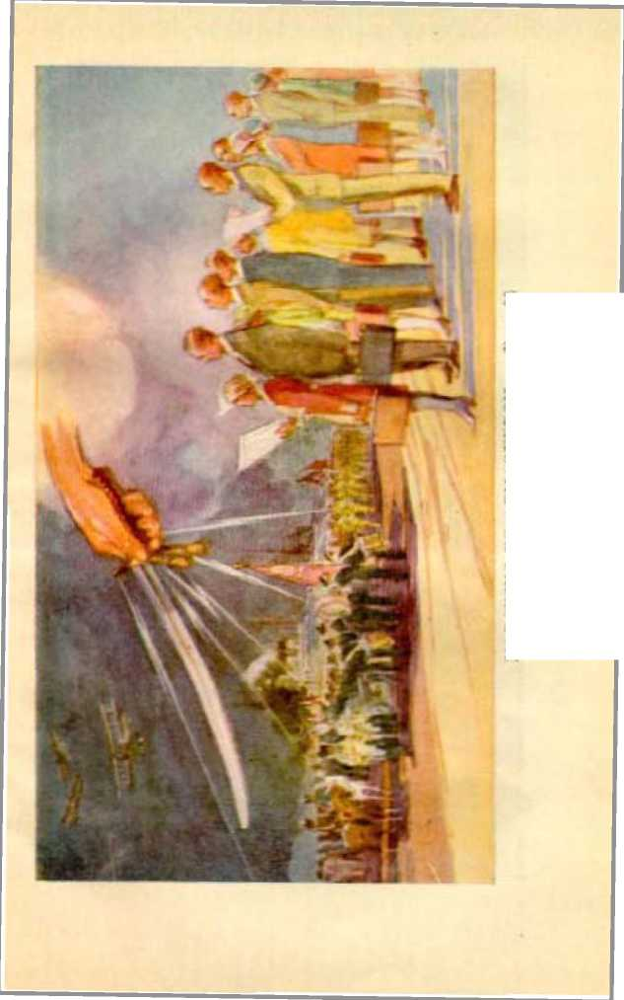'• •fl'M XOuriHlirreiTT O1 4I\N

HYPOCRISY 15 'HIE SADDLE Rex. 17:3)
righteousness take his stand on the side of Jehovah and call the attention of the people to the great iniquity of Satan’s organization, that those who desire so to do may have some measure of escape therefrom. Satan’s organization has for centuries reproached the name of Jehovah and brought shame, humiliation and suffering upon God’s people, and now he will have it known that that wicked organization shall receive what it deserves.—See Revelation 14:10 and comments.
“And every island fled away, and the mountains were not found.’’ (Vs. 20) Jehovah has recovered his remnant people from the islands. (Isa. 11:11) Those spirit-begotten ones that make up the “great multitude” are now the “islands”. These have heretofore expected deliverance by Egypt (worldly organizations, their churches in particular), but now they cannot flee to them for help. (Isa. 20:6) They must now wait for the Word of the Lord, for God’s law through his servant. (Isa. 42:4; 51:5; 60:9) Hitherto these island-dwellers have dwelt carelessly, supposing themselves to be safe, and now God will send a fire on them in the trouble of Gog and Magog. (Ezek. 39:6) These must now pass through “great tribulation”, and therefore they flee. (Rev. 7:14; Isa. 59:18) They must take their flight now, “in the winter” time [the disagreeable, stormy season] and “on the sabbath day [when no fires might be made to warm the cold, and no burdens might be carried, as provided by the law of the Jews]”. (Matt. 24:20; Mark 13:18) As Samson pulled down the pillars of the house on his head, even so when the “great multitude” see that they have no hope in Babylon or to flee therefrom, they will pull down the house of Babylon upon their heads. Then they will know that Jehovah is King, and will receive comfort from him. All “mountains” (symbolic of kingdoms), except Mount Zion (which is God’s kingdom), shall vanish, and not be found. (Isa. 54:10) But before the fall of these mountains or kingdoms the remnant will have ‘threshed the mountains’ to the full extent of their ability, even as they are now doing the work. (Isa. 41:15) “And saviours shall come up on mount Zion to judge the mount of Esau [which is Satan’s organization],” and the latter must fall. (Obad. 21) They are ‘melted with blood’. (Isa. 34:3) Jehovah removes them forever.—Ps. 46: 2, 3.
“And there fell upon men a great hail out of heaven, every stone about the weight of a talent: and men blasphemed God because of the plague of the hail; for the plague thereof was exceeding great.” (Vs. 21) This is not literal hail, but cold, hard and destructive truths which fall from Jehovah’s heaven and which he has ‘reserved for this time of trouble, against the day of battle and war’. (Job 38:22, 23) This hailstorm, which is a plague to the ungodly, the “great multitude” must somewhat feel the effects of, because they have been negligent of their privileges. (Hag. 2:17) The weight of the hail, said to be “as talents” (Roth.), doubtless refers to the kingdom interests which are committed to the faithful servant class, and which must be used to the Lord’s glory. These are the ones that hurl the hail, and this they can do only by faithfully keeping the commandments of the Lord and giving the testimony of Jesus Christ. Therefore the remnant must be his witnesses and publish God’s truth. There must be a widespread witness to the truth amongst the nations to make known God’s Rev. 16 HIS JUDGMENT MADE MANIFEST 67 purposes, particularly with reference to the prophecies which smite Satan’s organization; and while doing this work the remnant will be the objects of persecution and much opposition. The opponents will blaspheme God’s name because that hailstorm of truth “shall sweep away the refuge of lies” that have long blinded the people.—Isa. 28:17.
Blessed and glorious is the part that the remnant is now privileged to perform because of being permitted to be on Jehovah’s side and to make known his judgments that have been written and to know that they are marching forward to complete victory and to the everlasting vindication of Jehovah’s name I
CHAPTER X
(Revelation, Chapter 17)
T EHOVAH hates hypocrisy because hypocrites - I are workers of iniquity. “Thou hatest all workers of iniquity. Thou shalt destroy them that speak leasing: the Lord will abhor the bloody and deceitful man.” (Ps. 5:5, 6) A hypocrite is a vile person, and a combination of hypocrites working together increases the burdens of the deceived one. “For the vile person will speak villany, and his heart will work iniquity, to practise hypocrisy, and to utter error against the Lord, to make empty the soul of the hungry, and he will cause the drink of the thirsty to fail,” (Isa. 32:6) The greatest instrument for the practice and work of hypocrisy is that which is called “religion”. Hypocrisy came into vogue by and through the Devil’s religion. It was in the days of Enos that Satan began to mock and reproach God by inducing men to form an organization and “to call themselves by the name of the Lord”. (Gen. 4:26, margin) The beginning of Satan’s earthly organization was called “Bab-il”, or “Babylon”, which means “the gate to god”, that is, Satan, the god of this wicked world. Babylon was built by Nimrod, whose name means “rebellion”, and its original name, “Bab-il,” is proof that it was built in defiance of Jehovah and to deride and mock him and bring reproach upon his name.
Religion took the most prominent part in that organization, and that was the Devil’s religion, or wor-68 ship of Satan. Baal worship, the Devil religion, became the established religion of all the nations aside from Israel, and in time Israel fell under the spell of that satanic religion. (1 Ki. 16: 31-33; 18:19-40) The king of Babylon is shown by the Scriptures to be a specific representative of Satan, because God gave him one of the names that applies to Satan, to wit, Dragon. (Jer. 51:34) Hypocrisy has always flourished under the name of religion. Religion has been Satan’s chief means of deceiving the people. (See Prophecy, p. 126.)
JEWS’ RELIGION
When God organized Israel as his own people and made a covenant with that people, his first commandment was to shield and protect them from the hypocritical Devil religion: “I am the Lord thy God, which have brought thee out of the land of Egypt, out of the house of bondage. Thou shalt have no other gods before me. Thou shalt not make unto thee any graven image, or any likeness of any thing that is in heaven above, or that is in the earth beneath, or that is in the water under the earth.”—Ex. 20: 2-4.
The greatest crime committed by Israel was that of embracing and practicing the Devil religion, which the Lord denounces as “whoredom”. (Num. 25:1-5; Ezek. 16:1-36) In his covenant with Israel God made provision for the office of priest and prophet and for men to fill these offices. To represent God when in office a man must be entirely honest and true. Instead of pursuing an honest course of action, men installed in such offices became hypocrites. A hypocrite is one who plays a part with a dishonest motive. He feigns to be good when he is in fact bad. He is a pretender to piety, virtue and honesty. He is a deceiver, & cheat and a fraud, and a dissembler.
God planted the Israelites a pure “vine”; but that people, through the practice of the Devil religion and by the hypocrisy of her priests, turned into a degenerate vine. (Jer. 2: 21-26) The clergy class of the Jews, made up of the priests, prophets, scribes, Pharisees and Sadducees, were the chief offenders against God. They claimed to be servants of Jehovah God, but their service of him was in form only. Jesus told them that they were of their father the Devil and were doing the Devil’s will, and not Jehovah’s will and service. (John 8:44) He also said to them: “Ye hypocrites! well did Esaias prophesy of you, saying, This people draweth nigh unto me with their mouth, and honoureth me with their lips: but their heart is far from me. But in vain they do worship me, teaching for doctrines the commandments of men.” (Matt. 15:7-9) Jesus denounced them as a “wicked and adulterous generation”.—Matt. 16:1-4.
CHRISTIANITY
Let it be always remembered that Israel in a covenant with Jehovah was God’s covenant people and that natural Israel foreshadowed spiritual Israel, which is otherwise called “Christianity”. The things of the law covenant foreshadowed greater things of the future, and that which came to pass upon natural Israel was typical and for examples of what should come to pass upon spiritual Israel at the end of the world. (Heb. 10:1; 1 Cor. 10:11) There were some honest and true Israelites who were without guile and without hypocrisy; but they were few. (John 1:47) The ruling and so-called “noble” class were hypocrites. In considering the history of the Jews pertaining to their religion we are reading in advance what has come to pass upon so-called “organized Christianity’’ at the end of the world, where we now are. Among the professed followers of Christ there are some who are true and honest and without guile. But the crop of hypocrites is very large.
Jehovah God organized the church or true Christianity, with Christ Jesus as the Head thereof, and this we call “spiritual Israel’’. (Col. 1:18) God sets the members in the body of Christ as it pleases him, and in the beginning he set some for prophets and some for teachers. (1 Cor, 12:18-28) As men created the places having the name of Pharisees and Sadducees among the Jews, and these composed the Jewish clergy, even so in the church men taking the name of Christ have created the offices and names of “pope”, “cardinal,” “doctor of divinity,” “right reverend,’* “reverend,” and like titles, which are applied to the preachers, and these together form the clergy of so-called “Christianity”. These men called the clergy have made pretenses of being superior to other men. They have associated with and brought into close relationship with them men from whom they have received gifts and honors and special favors and upon whom they, the clergy, bestow their favors, and these are called “the principal of the flock”.—Jer. 25:34.
It is the clergy and the principal ones of their flocks that have organized and carried on what is today known as “organized Christianity” or “Christendom”. The name “Christendom” applies to all nations that call themselves “Christian” and that claim to practice “Christianity” as their religion. The name “Christian” properly applies to those only who are in Christ by a covenant of sacrifice and baptism into his death, and taken into the covenant for the kingdom and anointed by the holy spirit. Such are wholly for the kingdom of God and his Christ. The name “Christian” or “Christianity” or “Christendom” is wrongfully applied to all people who claim to be followers of Christ but who in fact are not. Feigning to be followers of Christ and taking a contrary course is the practice of hypocrisy. Claiming to be a Christian and at the same time supporting the Devil’s organization is the greatest hypocrisy; and therefore great “whoredom”, within the meaning of the Scriptures.
Why do the clergy appear before the camera and in the public places in long flowing robes richly embroidered or wearing other unusual garments? Has God directed them to do so? Is such done for the purpose of impressing the people with their own importance and their piety? Why do they go through certain formal ceremonies with much pomp and outward show? Is that done to glorify God and to represent him, or to be seen of men and to impress men with their own importance? If for the latter reason, then such is the practice of hypocrisy. Why do the clergy make long prayers, standing in public places, or by radio, and utter many vain words? Surely not for the purpose of glorifying God, but to impress the people with their own importance and piety. The clergy of the Jews acted in a similar way; and what Jesus said of and concerning them applies likewise to the clergy of the present time who claim to be practicing the Christian religion: “But all their works they do for to be seen of men: they make broad their phylacteries, and enlarge the borders of their garments, and love the uppermost rooms at feasts, and the chief seats in the synagogues, and greetings in the markets, and to be called of men, Rabbi, Rabbi.”— Matt. 23:5-7.
The clergy of the present time take the most prominent seats in places of public assemblies and at banquets and at inaugural ceremonies of high officials of governments, and great prominence in “blessing” the armies. In this, are they obeying God’s commandments? Or is this formalism for the purpose of impressing the public with the importance of themselves and the ruling factors? Every person must see that such ceremonies do not honor God; and there is not one scripture in the Bible that authorizes any follower of Christ to take such a course. By thus proceeding under the name of Christ, and claiming to represent God, they are practicing hypocrisy.
That hypocrisy is the greatest crime committed against God and deserves the greatest punishment, and that the clergy of “Christendom” and the ‘principal ones of their flock’ are the greatest of all hypocrites, is clearly proven by the testimony and denunciation of Jesus, which is here submitted. The clergy of the Jews had some light. They had reason to believe that Christ Jesus was exactly what he claimed to be, the Son of God. They were in a covenant with Jehovah and it was their duty to know God’s Word. The clergy of so-called “organized Christianity’’have had far greater opportunity to have more light than the Jewish clergy ever had. They have the words of Jesus and of the apostles and of the prophets, and the coming to pass of events in fulfilment of prophecy, all of which have been brought to their attention; and these they have rejected. While claiming to be followers of Christ and representatives of God they still go on serving Satan, and thereby prove by their conduct that they are the sons of Satan, even as Jesus told the Pharisees they were. (John 8: 42, 44) Therefore the words that Jesus uttered apply with even greater force to the clergy of the present time who claim to be preachers of the church of Christ and who at the same time practice the Devil religion and support the Devil’s schemes.
Today there is a comparatively small company of men and women in the land who are earnest and honest and who are diligently telling the people about God’s kingdom. They are taking no part in the politics of the governments because they are wholly for the kingdom of God. Who are the men that most violently oppose that little company of faithful servants of the Lord who go about telling their fellow man of God’s provision for their blessing? It is the clergy class; and they induce the law-making and law-enforcement body of men to likewise interfere. The clergy attempt to prevent the use of the radio for the broadcasting of the message of God’s kingdom. They tell the people to stay away from the meetings addressed by teachers of the Bible, and they gather up and burn the books that are published and put in the hands of the people and that teach the message of God’s kingdom. They refuse to enter into the kingdom themselves, because they support the offspring of Satan, the League of Nations compact, and do their hardest work to keep others out of the kingdom of God. Therefore the testimony of Jesus is specifically applied to them at the present time: “But woe unto you, scribes and Pharisees, hypocrites! for ye shut up the kingdom of heaven against men: for ye neither go in yourselves, neither suffer ye them that are entering to go in.”—Matt. 23:13.
The same class of clergymen of “organized Christianity” support schemes which devour the substance of the widow and the orphans and others; and at the same time they stand in the public places and make long prayers, for the purpose and intention of deceiving the people by adding a “sanctity” to the wicked schemes that are practiced by their allies. Therefore Jesus said to them: “Woe unto you, scribes and Pharisees, hypocrites! for ye devour widows’ houses, and for a pretence make long prayer: therefore ye shall receive the greater damnation.”—Matt. 23:14.
These clergymen of “organized Christianity” hold revivals and other meetings to which the people are invited, and get up great excitement and blaspheme God’s name by teaching the frightful doctrine of eternal torment and like false doctrines to wrongfully induce men to join their flocks and support their institutions. This they do without regard to the practice of men and women in their daily lives, whether it be good or bad. Concerning this practice by them the Lord said: “Woe unto you, scribes and Pharisees, hypocrites! for ye compass sea and land to make one proselyte; and when he is made, ye make him twofold more the child of hell than yourselves.”—Matt. 23:15.
These same “gentlemen of the cloth” claiming to be preachers of God’s Word are great sticklers for observing the letter of the law. If a poor man traveling on the highway is supposed to have in his possession any amount of intoxicating liquor these clergymen hold that the officer of the law is fully justified in killing that poor man if he does not halt at the very instant he is commanded to stop. This is called “shotgun enforcement of the law”, and the clergy publicly indorse it. At the same time, if a man of great wealth is found with some liquor little or nothing is said about it.
These same clergymen insist that men and women who go from house to house with the message of God in book form are violating the “Peddler’s Law” or the law concerning Sunday and should be prosecuted for that reason, and they cause many of the humble followers of Christ to be arrested and prosecuted upon such charges. At the same time these clergymen neglect entirely the aets of mercy and the teaching of the people the Word of God that they might have faith, which work they ought to have done; therefore the Lord says of them: “Woe unto you, scribes and Pharisees, hypocrites! for ye pay tithe of mint, and anise, and cummin, and have omitted the weightier matters of the law, judgment, mercy, and faith: these ought ye to have done, and not to leave the other undone. Ye blind guides! which strain at a gnat, and swallow a camel. ’ ’—Matt. 23: 23, 24.
These same clergymen hold themselves out before the people as men of the highest morality and piety. They loudly demand the rigid enforcement of the Prohibition law against the poor workingman, and yet many of them have their cellars well stocked with the forbidden liquid. They make great claims to honesty and insist that public officials and others be honest, and at the same time they are parties to cruel and oppressive schemes that burden the people. They have the outward appearance of purity and try to impress the people with their own ‘purity’, and yet they constantly support devilish schemes to bring oppression, suffering and death upon the people. Therefore the Lord said of them: “Woe unto you, scribes and Pharisees, hypocrites! for ye make clean the outside of the cup and of the platter, but within they are full of extortion and excess. Thou blind Pharisee! cleanse first that which is within the cup and platter, that the outside of them may be clean also. Woe unto you, scribes and Pharisees, hypocrites! for ye are like unto whited sepulchres, which indeed appear beautiful outward, but are within full of dead men’s bones, and of all uncleanness. Even so ye also outwardly appear righteous unto men, but within ye are full of hypocrisy and iniquity.’’—Matt. 23:25-28.
At the funeral of some man of prominence, particularly if he is a member of the “false prophet” class, these clergymen perform ceremonies of outward solemnity and great piety; while in the cemetery and vicinity of the tombs of other men who have died they “garnish” them with flowers, and with uplifted hands and solemn faces say concerning others that sleep in the dust and who shed blood unrighteously: ‘Had we been of their day, we would not have been partakers in their wrongful deeds.’ In other words, they would make those who stand by understand that they, the clergy, are good and great and lovable men and do not the deeds of blood, while at the same time the blood of many soldiers who died in the World War cries out from the earth against them. It was the clergymen who urged many of these young men into the war, and therefore their blood is upon them. (Jer. 2:34) Therefore Jesus says of them; “Woe unto you, scribes and Pharisees, hypocrites! because ye build the tombs of the prophets, and garnish the sepulchres of the righteous, and say, If we had been in the days of our fathers, we would not have been partakers with them in the blood of the prophets. Wherefore ye be witnesses unto yourselves, that ye are the children of them which killed the prophets. Fill ye up then the measure of your fathers. Ye serpents, ye generation of vipers! how can ye escape the damnation of hell?” (Matt. 23:29-33) Let it be borne in mind in this connection that it was the clergy that caused the prosecution and persecution, vile punishment and death of many of God’s witnesses during the World War.
In the words above quoted Jesus spoke prophetically against the clergy and the ‘principal of their flocks’, which prophecy has had a partial fulfilment but much of which is yet to be fulfilled. It is well known that during the World War the clergymen used their meeting houses or synagogues as a place for recruiting young men for the army, and sent them forth to die; at the same time they were inciting the people to mob violence against humble men and women who were teaching the Word of God concerning his kingdom. (See Revelation 11:8, 9, and comments.) At that time the World War was furnishing much extraneous evidence of the fulfilment of prophecy showing the presence of the Lord and the time for his kingdom, and God sent these messages to the people, and particularly to the clergy; and instead of hearing the Word of the Lord they ill-used his witnesses. Therefore Jesus says of them: “Wherefore, behold, I send unto you prophets, and wise men, and scribes: and some of them ye shall kill and crucify; and some of them shall ye scourge in your synagogues, and persecute them from city to city: that upon you may come all the righteous blood Shed upon the earth, from the blood of righteous Abel unto the blood of Zacharias son of Barachias, whom ye slew between the temple and the altar. Verily I say unto you, All these things shall come upon this generation.” (Matt. 23:34-36) This prophetic utterance had a miniature fulfilment upon the Jews, but its far greater fulfilment is upon the clergy of “organized Christianity”.
Now we are in “the last days”. The great issue joined now is, Shall the earth be ruled by the scheme of the League of Nations, or shall Jehovah God and his Christ rule the earth? The clergy have taken their stand on the side of the League of Nations and given their allegiance to Satan’s scheme and are against God and his kingdom. (Ps. 2:2) By their practice of hypocrisy they have induced the commercial and political rulers to follow a wrongful course. Now let the people judge whether or not the facts that are well known to all exactly fit the clergy as set forth in the following statement of the Word of God: “This know also, that in the last days perilous times shall come. For men shall be lovers of their own selves, covetous, boasters, proud, blasphemers, disobedient to parents, unthankful, unholy, without natural affection, trucebreakers, false accusers, incontinent, fierce, despisers of those that are good, traitors, heady, highminded, lovers of pleasures more than lovers of God; having a form of godliness, but denying the power thereof: from such turn away.”—2 Tim. 3:1-5.
Hypocrisy is the greatest crime ever committed. In the land of so-called “Christendom” has been the place of the most widespread commission and practice of hypocrisy, and the clergy and the ‘principal ones of their flock’ have been the chief perpetrators of the crime. “Organized Christianity” is therefore the most stupendous scheme of hypocrisy ever promulgated or used on earth.
“THE GREAT WHORE”
The seventeenth chapter of Revelation has long been a mystery, even unto the most faithful followers of Christ Jesus. Jehovah’s due time has come to make it plain, and he by and through his chief officer, Christ Jesus, now clears away the mystery. Let the seventeenth chapter of Revelation be here carefully studied. Let it be kept in mind that it is God who gave the Revelation to Jesus Christ and that now Christ Jesus in his temple sends forth his angel and makes known to those who love and serve God what is come to pass and what shall surely come to pass, as therein set forth.
“And there came one of the seven angels which had the seven vials, and talked with me, saying unto me, Come hither; I will shew unto thee the judgment of the great whore that sitteth upon many waters.” (Vs. 1) It seems quite probable that the angel here mentioned is the seventh angel, having charge over the pouring out of the seventh bowl, or plague. It is since the beginning of the pouring out of that plague in 1928 that the remnant of God’s people have been given an understanding of this chapter. The angel of the Lord invites the attention of such while they are in “the wilderness”. (See verse 3.) The world is now in the wilderness condition, with the “wild beast” in control. (Mark 1:13) The remnant is in the world, but not of it. All the elements ruling the earth are turned against God and against his kingdom, and that which is fed to the people by the worldly rulers, nobles and clergymen is but husks. The faithful witnesses of the Lord who go from house to house and talk to the people and bring to them the refreshing truths of God’s Word and of his kingdom can discern, and do discern, how desolate “organized Christianity” has made the people and in what a wilderness condition they are now. The consecrated ones who have not followed and obeyed the commandments of the Lord by being his faithful witnesses, but who have opposed that work, will not get an appreciation of what is here said. Those who love God and devote themselves to him will sec and appreciate the Lord’s unfolding of this part of his prophecy. Those who are faithful in doing what they can to magnify the name of Jehovah are the ones who respond to the invitation of the Lord’s angel to ‘come hither and see the judgment of the great whore’.
“We are sure that the judgment of God is according to truth, against them which commit such things. ” (Rom. 2:2) Who then is “the great whore” that is judged and sentenced? Bear in mind that the Revelation was written for the benefit of God’s people, particularly for those who should be upon the earth at the end of the world (Rom. 15:4); and that therefore at the end of the world the great whore must be in existence and in a position to be discerned by those who love the Lord. “The great whore” is the Devil’s religion, mislabeled “organized Christianity” or “Christendom”, and which forms a part of Satan’s organization. The Devil’s organization is carrying on the greatest hypocrisy under the name of Christ. Parading under the name of Christ or “Christendom”, it is against God and against Christ. (Ps. 2:2) Therefore the greatest hypocrisy is practiced by “the great whore’’. It is the mixture of many kinds of religion and is practiced under the name of “Christian”, but includes paganism, Romanism, Protestantism, Christian Science, and other Devil religions, operating together and used by the Devil to deceive the people.
“The great whore . . . sitteth upon many waters,” which means, upon many peoples. (See verse 15.) Many peoples, nations, tongues, and multitudes, carry and bear up this hypocritical system called “Christian” or “Christendom” and by which the people are deceived. The so-called “Christian religion” is the religion of the nations that rule the earth at the present time. The Devil has other religions, to be sure, by which he deceives the people and which are a part of his organization, but “Christendom”, so called, is the chief one used in the leading nations of the earth.
It was the woman to whom Satan made the first advance to go lusting or whoring after a different god than Jehovah. In the Hebrew, “whore” means “highly fed and wanton”. Satan fed Eve on the forbidden fruits, and she became loose and wanton and forsook Jehovah her God for Satan. The term “whore” is therefore an appropriate one to picture an organization that has gone ‘whoring after other gods’, and this is what Israel and its antitype “Christendom” have done.—Ex. 34:15, 16.
God warned against the danger of those who are highly fed, lest they forget the things heavenly provided. (Deut. 6:10-14) Hence the honest of heart pray with sincerity: “Feed me with food convenient for me; lest I be full, and deny thee, and say, Who is the Lord?”—Prov. 30: 8, 9.
In the Greek the word “whore” seems to be drawn from the thought “to go through as a trafficker, to sell”. Eve sold herself to Satan in order to traffic in forbidden dainties. She became a harlot, ravished away from the true God to the false. That which is today called “Christendom” and properly called “Babylon” was organized in the name of Christ. The organization sold itself to the Devil that it might have part in the dainties of ruling the world. Therefore the proper application of these words: “Thou hadst a whore’s forehead, thou refusedst to be ashamed.” (Jer. 3:3) It was Satan who brought Babylon, his religion represented by a bad woman, into existence and did prostitute her and cause her to be a whore that the land (organization of the earth) might be full of “whoredom” (which is Devil worship) and the whole earth become wicked against God.—Lev. 19:29.
She is now a well-fed and “wellfavoured harlot, the mistress of witchcrafts, that selleth nations through her whoredoms, and families through her witchcrafts”. (Nah. 3:4) Babylon stands for Devil religion as a whole, and “Christendom” has become a part of Babylon, and the name Babylon attaches to and properly applies to her, and she has Satan for her lord and husband. She has caused the kings of earth to commit fornication with her; and “Christendom”, at this end of the world, embraces the visible ruling powers of the earth or earth’s chief empire. Therefore it is written: “With whom the kings of the earth have committed fornication, and the inhabitants of the earth have been made drunk with the wine of her fornication.”—Vs. 2.
Satan first applied the king idea among men in the organization of the people under Nimrod as king. This was not for the purpose of enforcing Jehovah’s will, but to carry out Satan’s policy and for promoting Devil worship. Knowing the natural tendency of man to worship, Satan must have a religion for man that would cause man to give his allegiance and worship to the Devil. Therefore from Nimrod to the present time the kings of the earth have had the religion of the Devil, and the Devil has been their god and received their worship.—2 Cor. 4:3, 4.
These rulers have perverted the use of the earthly governments, which properly is to enforce the will of Jehovah, and instead have substituted and carried out the will of Satan. In this they have been seduced, deceived, misled and debauched by the Devil religion. Satan’s whore lured the most of Israel’s kings into the same trap. To carry out his policies it was necessary for a religion to allay the conscience of the visible rulers and to impress the people with superstition, and Satan saw to it that the need was supplied. When the time came he got control of the organization named “Christian” and has used it for his own purposes. The result has been that the poor, common people, held in subjection by these fornicating rulers, have been made “drunk with the wine of her fornication”; that is to say, they have been given an excessive potion, which has brought upon them woe, sorrow, contentions, complaining, wounds without cause, redness and dulness of vision, and they have been beaten and scourged and bitten and stung to death. In poetic phrase the Lord describes the sufferings of those who have been forced to drink of Babylon’s wine (not literal fermented grapejuice, but Babylon’s whoredoms): "Who hath woe! who hath sorrow! who hath contentions! who hath babbling! who hath wounds without cause! who hath redness of eyes! They that tarry long at the wine; they that go to seek mixed wine. Look not thou upon the wine when it is red, when it giveth his colour in the cup, when it moveth itself aright. At the last it biteth like a serpent, and stingeth like an adder. Thine eyes shall behold strange women, and thine heart shall utter perverse things. Yea, thou shalt be as he that lieth down in the midst of the sea, or as he that lieth upon the top of a mast. They have stricken me, shalt thou say, and I was not sick; they have beaten me, and I felt it not; when shall I awake? I will seek it yet again.”—Prov. 23:29-35.
“Afflicted, and drunken, but not with [natural] wine.” (Isa. 51:21) Even God’s people were subject to that “wine of wrath” in 1917 and 1918, when “Christendom” maltreated them. The wine from the vine of the earth (Satan’s organization) is the ‘wine of astonishment and violence’. (Ps. 60:3; Prov. 4:17) This spirit of “whoredom” has caused the people to err, and they have been turned away from God. —Hos. 4:11, 12.
“So he carried me away in the spirit into the wilderness: and I saw a woman sit upon a scarlet coloured beast, full of names of blasphemy, having seven heads and ten horns.” (Vs. 3) In this vision John saw a woman sitting on a scarlet-colored beast. A brief definition of each, the “woman” and the “scarlet coloured beast”, at this point will make the matter more understandable.
“The woman” is the “great whore” mentioned in verse one of this chapter. “The woman,” therefore, is “organized Christianity ”, so called, which is the Devil religion fraudulently and falsely taking the name of and’operating under the name of Christ for the purpose of deceiving the people, and therefore is the very breeding place of hypocrisy. This Devil religion has brought the greatest reproach upon the name of God because claiming to be the religion established by Christ Jesus.
The “scarlet coloured beast” is an earthly Devilorganization appearing in the form of a combination of rulers of nations, the announced purpose of which combination has been and is to establish world peace. While claiming to establish peace and prevent war, each one of the nations involved is constantly preparing for war; thus exhibiting its predisposition to hypocrisy and further branding it as an instrument of Satan. This “scarlet coloured beast” first came into view in 1899 under the name of “The Hague International Peace Conference”. Having in mind these definitions the examination of the proof in support thereof follows.
Satan’s original “beast” or world power organization came up “out of the sea”. (Rev. 13:1, 2, and comments) The one now under consideration is the “scarlet coloured beast”. This color is a royal or ruling color. It is the same color as of the robe that was put on Jesus in mockery of his royal claims. (Matt. 27:28) It therefore shows that this beast is composed of the rulers or governors of the earth. Being “full of names of blasphemy” shows that this beast makes many extravagant claims that bring reproach upon Jehovah God’s name. The mystery of this beast is made clear in verses seven to twelve and the comments thereon.
WOMAN DESCRIBED
“And the woman was arrayed in purple and scarlet colour, and decked with gold and precious stones and pearls, having a golden cup in her hand full of abominations, and filthiness of her fornication.” (Vs. 4) Her raiment of purple and scarlet is also of royal colors, such as worn by the ruling class, and as Dives had. (Luke 16:19) Her jewelry denotes that she is rich and outwardly attractive, but not beautiful, and is brazen and immodest. This description shows she is a part of the ruling class and therefore an integral part of Satan’s organization.
She receives special mention because of the prominent part she plays in Satan’s organization. She came into existence early in the Christian era, when ambitious men in the church yielded to the enticing frauds of Satan, forsook ‘the table of the Lord’ and turned to the table of the Devil. She carries in her hand a cup of gold, in appearance, and therefore claims to be the bearer of the potion God has poured for men, but which cup is filled with what is her will for others to imbibe and is therefore the “cup of devils”. (1 Cor. 10:21; Rev. 18:6) Satan has been careful to see that she has a cup that is clean on the outside in order that she might more completely practice her hypocrisy. (Matt. 23:25) She is interested in the kings, rulers and mighty men of the earth more than in the common people, yet making great pretense of being interested in the common people.
The cup she carries is filled with abominations: “That which is highly esteemed among men, is abomination in the sight of God.” (Luke 16:15) “Organized Christianity” is more highly esteemed among the rulers of the principal nations of the earth than any other religion ever practiced amongst creatures. Its missionaries have been sent to every nation under the sun and have been the tools of the commercial and political elements and the special tool of the Devil himself. In all the great functions of so-called “Christian nations’’ the clergy have a prominent part. In the great portraits, or pictures, and in the art galleries, the clergy, the statesmen, the warriors, and the commercial rulers stand prominently to the fore. At all royal weddings the clergyman is the man that shines. The “Christian religion” and particularly its chief men of “organized Christianity” are proud, haughty, austere and supporters of war and bloodshed, willing to bear false witness against God’s humble servants and to resort to fraudulent means to cause discord amongst the brethren of Christ. All these things are a cup of abomination. “These six things doth the Lord hate; yea, seven are an abomination unto him; a proud look, a lying tongue, and hands that shed innocent blood, an heart that deviseth wicked imaginations, feet that be swift in running to mischief, a false witness that speaketh lies, and he that soweth discord among brethren.”—Prov. 6: 16-19.
“Organized Christianity” has turned its ear away from the law or Word of God and adopted modernism as its doctrine, and the League of Nations as its kingdom. “He that turneth away his ear from hearing the law [of God], even his prayer [is] an abomination.” (Prov. 28:9; Isa. 1:13) The leaders of Christendom, to wit, the clergy, love to pray in public assemblies and to speak flattering titles and to receive praise of men, and this is likewise an abomination in the sight of God.
The desire of the “organized Christian religion” is for power and influence, and her insatiable desire and passion therefor has caused her to commit fornication with the rulers of the world; and that is an abomination in the sight of God. “Christendom,” or “organized Christianity”, has taken counsel against God and his kingdom and allied itself with the League of Nations and set it up as a substitute for God’s kingdom, which is the great abomination and that one “that maketh desolate”.—Matt. 24:15.
“And upon her forehead was a name written, MYSTERY, BABYLON THE GREAT, THE MOTHER OF HARLOTS AND ABOMINATIONS OF THE EARTH.” (Vs. 5) This is the time men and organized bodies are plainly marked in the forehead for proper identification, because it is the time for exposing hypocrisy. “For nothing is secret that shall not be made manifest; neither any thing hid that shall not be known and come abroad. ’ ’—Luke 8:17.
This “woman” does not have in her forehead the name of Jehovah or of his city. (Rev. 3:12; 14:1) Being a licentious organization or system, she bears the name of her mother and the city of her god and father the Devil. Babylon, which is Satan’s organization and his wife, was and is a “whore”; and all Satanic religions are bom of this same organization and properly bear the name thereof. If this woman were truly a Christian organization, as she claims, she would bear upon her forehead the name of God and of Christ. Having adopted the name “Christian” as a camouflage and as a means of deception, and claiming to represent God and Christ and thereby deceiving the people, she has the name that belongs to her, to wit, ‘Babylon, the great mystery and whore.’
The so-ealled “Christian religion” has long been a mystery and has fended off investigation of her doctrines by a plea that they could be understood only by the learned and are sealed to all others. Her clergy have claimed to be the learned and the only ones authorized to interpret the Scriptures, and these have told the common people, “Just have faith and do what we tell you.” Her doctrine of a triune God has been such a mystery that not even her learned could understand it or give any reasonable explanation thereof to anyone. She has been a mystery to all until the Lord came to his temple and the flashes of Jehovah’s lightnings have revealed her in her true light to the temple class. This is the day in which God shall judge the secrets of men by Jesus Christ. (Rom. 2:16) “ [He] will bring to light the hidden things of darkness, and will make manifest the counsels of the hearts.” (1 Cor. 4:5) This “woman” bears the name of “Babylon the Great” because she is the child of her mother Babylon and has been the greatest hypocritical religion the Devil has ever practiced amongst men.
The original name “Bab-il” means “gate to god”, because it was the Devil’s religion by which the people were induced to worship him as their god. The Hebrew word “Babel” means “confusion”, because it was there that God confused the lip or language of the peoples of the earth. (Gen. 11: 9) There has never been a Devil religion so confusing as that labeled, in the world, “organized Christianity” or "Christian religion”. There are divers and numerous so-called “Christian organizations”, made up of Greek Catholics, Roman Catholics, Church of England (also called Catholic), Lutheran reformations, Presbyterians, Baptists, and numerous others, all having or holding some doctrine peculiar to themselves and all of which are confusing beyond human understanding. Millions have been so confused with these conflicting claims of “Christendom” that they have not known which way to turn. In each nation that is called “Christian” there is something different about the religion of their nation called by the same name. Jehovah God is not the god of confusion. (1 Cor. 14:33) And this is conclusive proof that “organized Christianity” is the Devil’s religion.
“Organized Christianity” has three gods in one. To true Christians there is “one Lord, one faith, one baptism, one God and Father of all, who is above all, and through all, and in you all”. (Eph. 4:5, 6) No one can honestly attempt to apply this statement of God’s Word to “organized Christianity”, which embraces Catholic and Protestant in all their ramifications. Now the Catholics and Protestants have taken into their arms the Jewish rabbis, and all of so-called “organized Christianity” agree upon just one thing, to wit, that they are against God’s kingdom on earth by Christ Jesus; hence they oppose every one that honestly represents God’s kingdom.
The name “mother of fornications [margin] and abominations of the earth” appears on her forehead. Babylon, Satan’s wife and organization, gave birth to the Devil religion and is therefore the mother of such; and her daughter, “organized Christianity,” and misnamed “Christian religion”, bears the old woman’s name. It has been from that wicked womb of Babylon that has issued all Devil worship and political religion throughout the earth.
“And I saw the woman drunken with the blood of the saints, and with the blood of the martyrs of Jesus : and when I saw her, I wondered with great admiration.” (Vs. 6) This is another means of identification. It was early in the Christian era that Satan formed the organization which has been the “great whore” and practicer of hypocrisy and called it “Christian religion”. From then till notv that devilish organization has been the spiller and drinker of human blood and at the same time has hypocritically claimed divine authority for so doing. From the beginning of Papal Rome to the present day much human blood has been wrongfully spilled and wickedly charged up to God and to Christ by that system. By reason of the Lord’s presence greater light has been shining upon “organized Christianity” since 1914, and therefore the rulers in it have been more responsible and reprehensible. From and after that date the blood of many of the saints was shed. “The martyrs of Jesus” would specifically include God’s witnesses during and since the World War to whom has been committed the testimony of Jesus Christ.
All the people must plainly see that it has been the religionists of so-called “organized Christianity’’that have caused the persecution of men and women who devote themselves exclusively to the testimony of Jesus Christ. If the clergy of Christendom would cease their opposition to the truth concerning God’s kingdom, the commercial and political elements of the world would never oppose the message of truth and the common people might come to know God, his Christ, and his kingdom. Because this Devil religion called “organized Christianity” has been guilty of the blood of God’s people she has been guilty of the most flagrant violation of “the everlasting covenant”, and her deeds of deliberate crime call for the vengeance of God in behalf of his temple or anointed people. (Jer. 50:28; 51:11) Therefore thus speaks Jehovah to her, “organized Christianity”: “0 daughter of Babylon, who art to be destroyed; happy shall he be [Christ, God’s executive officer] that reward-eth thee as thou hast served us [God’s anointed]. Happy shall he be [Christ and his body members] that taketh and dasheth thy little ones against the stones [Rock, which is God’s anointed King].”— Ps. 137: 8, 9; Isa. 13:16; Ps. 79:1-4.
It was after she had shed the blood of God’s people during the World War that the John class began to see “organized Christianity”, so called, in her true light, and then they wondered. The lightnings of Jehovah have revealed to his people a clearer vision of this devilish religion parading falsely under the name of Christ. It was in 1929 that the Lord caused to be put into the hands of the people the book entitled Prophecy and by which the Lord there began to expose the hypocrisy of “organized Christianity”, or the “daughter of Babylon”, in her true light. This takes place during the period of the work of the ‘seventh angel pouring out his bowl’, and therefore it is written: “And the angel said unto me, Wherefore didst thou marvel? I will tell thee the mystery of the woman, and of the beast that carrieth her, which hath the seven heads and ten horns.”—Vs. 7.
As the Lord develops his work in the execution of the seventh plague he leads the John class to an accurate understanding of the significance of Babylon and her offspring. The seventeenth chapter of Revelation, therefore, could not be understood until the beginning of the ‘pouring out of the seventh plague’, because God’s due time did not arrive until then. The angel or deputy of the Lord then begins to reveal an understanding of the vision to God’s people concerning who is “the beast’’ that carries this woman, “the great whore.”
“The beast that thou sawest was, and is not; and shall ascend out of the bottomless pit, and go into perdition: and they that dwell on the earth shall wonder, whose names were not written in the book of life from the foundation of the world, when they behold the beast that was, and is not, and yet is.”—Vs. 8.
The beast which was, is not, and shall come out of the abyss John saw only in pantomime. The people whom John specifically represented now actually see the vision in its fulfilment. This “beast” is a part of Satan’s powerful organization, as its name indicates. It conforms essentially to the description of the “beast” which came up “out of the sea”. (Rev. 13:1) Without a doubt it represents the composite or collective form or organization under which‘thekings of the whole world are gathered together unto the battle of Armageddon’; hence this beast would be included in Revelation 19:19, in the expression “the kings of the earth”. This “beast” is the satanie organization made up of the ruling classes of the nations of “Christendom”, particularly having for its claim and purpose the prevention of war. It came into existence in 1899 and functioned until the World War. It then went into the abyss and ceased to function. After the World War it came out of the abyss or pit and began to function again in the form of the League of Nations. The World Court and the League of Nations are one and the same organization. The following historical proof is appropriate:
“The Hague International Peace Conference was one of the most important events which marked the close of the 19th century, and has been justly styled ‘the first great parliament of Man.’ The Conference assembled in response to a rescript issued by Tsar Nicholas II of Russia, 24 Aug. 1898, inviting to a conference all governments with representatives accredited to the Imperial Court. The Conference was to occupy itself with the great problem of universal peace, especially through the international diminution of armaments by land and sea, and the prevention of armed conflicts by pacific diplomatic procedure. The invitation was accepted by all the governments to whom it was tendered, and the first meeting for the Conference was fixed for 18 May 1899 at The Hague,—the capital of the Netherlands being selected, as stated by the Russian Minister of Foreign Affairs, because ‘His Imperial Majesty considered it advisable that the Conference should not sit in the capital of one of the Great Powers where so many political interests centre that might impede the progress of a work in which all the countries are equally interested.’ The Conference was held at the celebrated Huis ten Bosch—House in the Wood—the members assembling in the historically decorated Orange Hall. Each nation was represented by prominent diplomats, jurists, men of affairs, soldiers and sailors, the representatives of the United States being Ambassador Andrew D. White, Minister Newel, General Crozier of the army, Captain Mahan of the navy, Seth Low, mayor of New York, and F. W. Holls of the New
York bar. The president of the Conference was Baron de Staal of the Russian delegation.
‘'Three committees were formed to deal respectively with disarmament, regulations in warfare, and mediation of arbitration. The final act of the Conference, signed 29 July 1899, comprised three conventions or treaties embodying the results arrived at by the committees. The first and most important was the Convention for the Peaceful Adjustment of International Differences by the permanent institution of a Court of Arbitration in the midst of the independent powers, accessible to all. . . . Regulations also prohibited the throwing of projectiles and explosives from balloons; the use of projectiles intended solely to diffuse deleterious and asphyxiating gases (this was not accepted by the United States and Great Britain); and the use of soft expansive bullets. . ..
“The Convention for the Peaceful Adjustment of International Differences, however, was the crowning work of the Conference, and was a source of much gratification to the advocates of international arbitration, as bringing to fruition a sentiment which for centuries had hoped for the establishment by the nations of the earth of some permanent form of congress or court, which should be vested with functions to ensure the preservation of peace and to deliver the world from the strife and carnage with which it had been afflicted in all the past ages.
“During the last decade of the 19th century peace advocates had been persistent in their advocacy of a permanent court of arbitration. In 1894, at its meeting in Holland, the Inter-parliamentary Union, a voluntary organization of members of the national legislative bodies of the nations, adopted a declaration in favor of a permanent court of arbitration; and in 1896 resolutions to the same effect were unanimously adopted in the United States at the annual Mohawk Conference on international arbitration, and by the New York State Bar Association, the latter presenting to the President of the United States a memorial setting forth a permanent tribunal as the essential feature of any general scheme of arbitration. The honor of presenting such a proposition in The Hague Conference fell to Lord Pauneefote, chairman of the British delegation; Germany was antagonistic, but the sentiment was so strongly in its favor that the German delegates were induced to withdraw their objection, and provision was made for its consummation. The fourth division of the Convention in 47 articles provides for the creation of the court, defines its jurisdiction and the principles which are to guide it, specifies the manner in which its members are chosen, the rules governing its procedure, its awards and other necessary details. The Convention provides that each of the 26 signatory powers shall appoint for a term of six years as members of the Permanent Court not more than four persons ‘of recognized competence in questions of international law, enjoying the highest moral reputation.’ These persons constitute a Permanent Court of Arbitration, accessible at all times and acting in accordance with the prescribed rules of procedure. . . .
“For the erection of a Temple of Peace to house a comprehensive library of international law and to include a courtroom that can be used as a meeting place for the Permanent Court of Arbitration, Andrew Carnegie on 25 April 1903 donated the sum of $1,500,000 to be administered by the government of the Netherlands as trustee for the other signatory powers of The Hague Convention of 29 July 1899. ...
“After the Great War the Hague Court of Arbitration resumed its functions.’’—The Encyclopedia Americana, Vol. 13, pp. 617, 618.
In the formation of the Hague World Court and of the League of Nations Great Britain and America took the lead, and this is further proof that the Anglo-American Empire is the ‘two-horned beast’. This same “Siamese twins” nation has been doing most of the talking and political prophesying concerning what the World Court, League of Nations, Paris Peace Conference, Naval Disarmament, and like arrangements will do to make the world safe for democracy, and this is proof that the ‘two-horned beast’ is also “the false prophet”. These being the two leading nations of “Christendom”, they practice what they term “the Christian religion”. Their bearing it up and supporting it is further proof that the Hague Court and the League of Nations arrangement is ‘the beast on which the great whore rides’. When the World War came the nations of “Christendom” ignored their agreement concerning war and the use of bombs from the air, and poison gas, and other cruel means of killing; and this is in keeping with the policy of hypocrisy followed by Satan’s organization.
Satan evidently had some information that 1914 might end his world, and hence he set about to form a great scheme of hypocrisy, which he called “the first great parliament of Man”. This made his organization appear as benevolent and enabled him to charge up all the crimes and war and wicked deeds to Jehovah. He brought forth this “scarlet coloured beast” with seven heads and ten horns, but without crowns,
[BLANK]
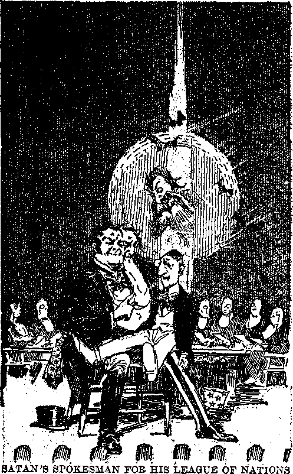Page 98
in 1899, and placed his whore (“organized Christianity”) on its back to ride and to lend sanctity to it and by it to further deceive the people.
When the World War came this “whore” or Devil-made religion climbed upon the back of the‘sea beast’, the Devil’s general organization, and sanctified war on both sides of the conflict. During the war the ‘royal-colored beast’ was out of sight and appeared to be dead; but immediately following the war it came out of the “abyss”, or “pit”, and the “whore” (“organized Christianity”) immediately climbed upon the back of that “beast” and the clergy of that religion began a great campaign to induce all the nations to support this ‘royal-colored beast’, to wit, the combine of the rulers of the earth.
Another evidence of Satan’s using his organization in the practice of hypocrisy is this: In 1913 the clergy of “Christendom” and the chief ones of their flocks were saying in substance: ‘Another war between the nations is an impossible thing and there will be no more war,’ although all the nations were preparing for war. In 1914 the worst war ever known came upon the earth. “The World Court of Arbitration” (the “scarlet coloured beast”) there quickly disappeared and the people supposed that the scheme of arbitration was a complete failure. Immediately after the war the “beast” again appeared, in the form of the League of Nations, brought forth and supported by the same ruling crowd; and the people wondered and gave admiration at what they believed to be a great forward step in the promotion of peace.
The only exception thereto were those people‘whose names were written in the book of life’. These, being devoted to Jehovah, knew that the scheme could not bring lasting peace, and that, only the Lord’s kingdom can bring everlasting peace to mankind. It does seem marvelous to the people that this world confederacy for peace was killed and disappeared from 1914 to 1918 and then again appeared, and therefore they give their honor and worship to the beast. (Rev. 13: 8) This is a warning to the faithful remnant to watch, lest they be passive and look admiringly at the “beast” and its accomplishment and be turned away from their stedfastness to God’s kingdom. It seems entirely laudable for the nations to make an effort for everlasting peace, and on the face of it it seems that all honest people should support it. Many of the consecrated have been deceived, and this is evidenced by the fact that they insist that nothing shall be said about Satan’s organization and the so-called “Christian religion ’ ’ and the clergy in connection therewith. The great hypocrisy of this “whore” will deceive all those except the ones who are wholly devoted to God.
As further proof that the League of Nations really supersedes the Hague Court of Arbitration and embodies the same principles and is therefore the same ‘beast [or organization] which was, is not, and is to come’, the following historical proof is submitted:
“The Constitution of the League, known as the Covenant, provides that member nations will not go to war before submitting their disputes with each other, or with states not members of the League, to arbitration and a delay of from three to nine months. .. . The primary divisions of the League are five: the Council, the Assembly, the Secretariat, the International Labor Organization, and the Permanent Court of International Justice (at The Hague).”—The Encyclopedia Americana, Vol. 17, pp. 176, 177.
To be sure, every part of Satan’s organization is against God, and therefore an abomination; and this ineludes the International Conference at The Hague of the so-called “Christian” nations to establish world peace prior to 1914. After 1914, when God had set his anointed King upon his throne, that marked the end of Satan’s rule by permission. All then who pretended to be followers of Christ should have immediately given their allegiance to God and his King and kingdom. Therefore the League of Nations, or conference to rule the world, set up in the place of Christ’s kingdom, was and is ‘the abomination of desolation standing in the holy place [or stead and place of the kingdom] ’. Being mislabeled by the clergy as “the political expression of God’s kingdom” was another act of gross hypocrisy.
The beast’s ascending out of the pit marked the time when this abomination was set up, which is the astonishing abomination spoken of by the prophet. (Dan. 12:11) Immediately upon its coming out of the pit “the great whore”, the so-called “Christian religion”, got astride this “beast” of royal appearance. The “Christian religion” claims to represent the Prinee of Peace, and therefore she must ride the “beast” that would claim to establish lasting peace. The effect of her action has been to turn the people away from God and from Christ. The day of her judgment and perdition approaches and her judgment is made known unto the people of God. Following her destruction the ‘royal-colored beast’ goes into perdition.—Isa. 8: 9, 10.
“And here is the mind which hath wisdom. The seven heads are seven mountains, on which the woman sitteth. And there are seven kings: five are fallen, and one is, and the other is not yet come; and when he cometh, he must continue a short space.” (Vss. 9, 10) Here is the mind or understanding of wisdom. Those who have the mind of Christ and who are “wise” shall therefore understand. (1 Cor. 2:16; Dan. 12:10) In God’s due time he makes it known to his people and they shall understand.
“The seven heads” are the seven world powers on which the Devil religion rides. At the time John saw the vision, Rome was the dominant world power, and the Devil religion sat thereon. Prior thereto five world powers, to wit, Egypt, Assyria, Babylon, Medo-Persia and Greece, had borne up the woman, the Devil religion, and they had fallen in the order named, to make way for the successor in preeminence of power. The seventh world power had not yet come in John’s day. In due time Great Britain became the seventh world power, and then the British-American arrangement together became ‘the two-horned beast’. Today, when the John class get an understanding of the vision, Great Britain is the seventh and the greatest world power that has ever existed on earth. Therefore it is seen that ‘all seven had her [the woman, Babylon, Devil religion] [in fornication] to wife’. (Luke 20:33) The seventh head or world power is to continue a short time, showing that the British Empire shall not stand forever.
“And the beast that was, and is not, even he is the eighth, and is of the seven, and goeth into perdition. ’ ’ (Vs. 11) The eighth “beast” came into existence in 1899 as “The Hague World Court”. It is a ‘royalcolored beast’ because made up of rulers of the world. In 1914 it went into the pit and ‘was not’, and came out after the war. It originated with the seventh world power in this, that the British ambassador is the one who took the lead in the formation of the World Court at the Hague Conference and it was the British Empire (of which America is a part, and which is the ‘two-horned beast’) that brought it out of the pit in the form of the League of Nations. Being the “image of the [sea] beast”, and made up of the many nations of the earth, the eighth is in fact of the seven, as the prophecy states. The judgment of Jehovah is that in due time it goes into perdition.— Isa. 8:9-12; Ps. 2:8, 9.
“And the ten horns which thou sawest are ten kings, who have not [yet] received a kingdom; but they receive authority, as kings, one hour with the beast.” (Vs. 12, Diag.) At the time John had the vision the ten kings described as the ten horns of the ‘royal-colored beast’ had received no authority, but later did receive authority as kings for an hour with the beast. From 1899 to 1914 this Hague World Court arrangement stood alone as a mere moral force with jurisdiction over those only that voluntarily submitted thereto. While in the abyss during the World War, it had, to be sure, no authority; but on the tenth day of January, 1920, when the League of Nations began to function, its constitution became binding on all the signatory powers thereof, represented in all of the “ten kings”, and it was then that these kings received “power as kings” with the “beast”. These ten horns or kings must have received their power from Satan, since he is the one that gave authority to the ‘sea beast’, and the “scarlet coloured beast” (or League of Nations) is an “image of the [sea] beast”. They possessed authority as such in 1926, when the fifth plague was poured out. The number ten symbolically stands for earthly completeness, and therefore for all the nations or governments involved in the League of Nations.
These “kings” now have power and are combined together as kings for one purpose. They gave no heed to the fact that the Gentile times had ended and that earth’s rightful King Christ Jesus is here; but, on the contrary, the “three unclean spirits like frogs” croak out and continue to croak that these ten kings are fully authorized and equipped to rule the earth. They have authority for “one hour with the beast”, that is to say, just long enough to prepare for and engage in the great battle of Armageddon. The League or combine claims that its purpose is to establish peace; but this is untrue, and the course of action taken by the nations involved is contrary thereto and is therefore hypocritical.
“These have one mind, and shall give their power and strength unto the beast.” (Vs. 13) The one mind of the combine shows an agreed purpose to give their power and strength unto the ‘royal-colored beast’. The ‘three unclean frog spirits’ bring about this unity among them. That unity of mind or oneness of purpose is that they all join against God and against his anointed King: “The kings of the earth set themselves, and the rulers take counsel together, against Jehovah, and against his anointed, saying, Let us break their bonds asunder, and cast away their cords from us.” (Ps. 2:2, 3, A.B.V.) Satan’s purpose, as expressed in this arrangement, is to prevent the full establishment of Christ’s kingdom, and he directs his “beast” against those who are for God and are for his kingdom. “For, lo, thine enemies make a tumult: and they that hate thee have lifted up the head. They have taken crafty counsel against thy people, and consulted against thy hidden ones. They have said, Come, and let us cut them off from being a nation; that the name of Israel may be no more in remembrance. For they have consulted together with one consent: they are confederate against thee.”—Ps. 83:2-5.
At this time (1930) there are fifty-five recognized countries or nations in the League; and the United States, by the Paris Peace Paet and World Court arrangement, is likewise in the League. These all give their military, financial, moral and religious support to the “scarlet coloured beast”, which is the “image”, and all of these hypocritically cry, “Peace, peace”; but they have combined for the express purpose of making war on the Lord’s anointed. Therefore it is ■written: ‘ ‘ These shall make war with the Lamb, and the Lamb shall overcome them: for he is Lord of lords, and King of kings: and they that arc with him are called, and chosen, and faithful.”—Vs. 14.
Christ the Lamb joins battle with the unholy Satanic organization, and, as the “Lion of the tribe of Juda”, leads on in the fight and wins. He overcomes them because he is Lord of lords and King of kings. Being now earth’s rightful King, no longer will he permit Satan to rule. (Ezek. 21:27) No combination of satanic forces can overcome him. With Christ Jesus are those who overcome, because they are called, and chosen, and prove faithful to the end. Concerning the selection of this class, see Watch Tower, 1930, January 15 to March 15, inclusive.
“And he saith unto me, The waters which thou sawest, where the whore sitteth, are peoples, and multitudes, and nations, and tongues.” (Vs. 15) This scripture supplies the key to ascertain how Satan brought forth his beastly organization composed of the commercial and political powers with religion riding thereon. The waters symbolically represent the peoples. The fact that this scripture employs four words, to wit, “peoples,” “multitudes,” “nations, and tongues,” shows the universal influence and power exercised by the “great whore”, namely, “organized Christianity,” against whom the judgment is now written. The old ‘wench’ has spread herself out over mankind and made profit out of men by holding them in subjection by means of superstition and oppression; but the waters have begun to dry up and soon there will be no more place found for her. Like the waters of the seas, the peoples are gathered together here and there. (Gen. 1:10; Ps. 33:7) The people are as unstable as water. (Gen. 49:4) They are as “water under the earth” of Satan’s organization. (Ex. 20:4) They are smitten and divided today as Elijah and Elisha once divided the waters.—2 Ki. 2:8-14.
At present the ‘waters thereof roar and are troubled’. (Ps. 46: 3) It is upon these waters that the Lord ‘sends his ambassadors in vessels of bulrushes’, meaning the printed message of the truth. (Isa. 18:2) Following the ‘pouring out of the sixth plague on the Euphrates’ there began to come a time of drought upon her waters, that is, Babylon’s sitting place. (Jcr. 50: 38) Hence Jehovah now says to the “great whore”: “0 thou that dwellest upon many waters, abundant in treasures, thine end is come, and the measure of thy covetousness.”—Jer. 51:13.
“And the ten horns which thou sawest, and the beast, these will hate the harlot, and will make her
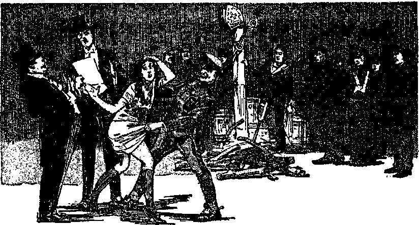THESE BURN HER WITH FIRE (Rev. 17:16) Page 108
[BLANK]
desolate and naked, and will eat her flesh, and bum her with fire.” (Vs. 16, Diag.) This no doubt comes to pa«s in the “one hour” in which this combine is given power. The people lose regard for the religious hypocrites and their religion and cast them aside. The rulers follow in the course of the people. Th© commercial and political strong men must now begin to see that the so-called “Christian religion” is the greatest humbug and hypocrisy ever practiced upon creation. They must know that long robes, gold lace, black garments, sanctimonious faces, “holy water,” long and loud palaver and senseless prayers, the performance of formal ceremonies, and like things, do not proceed from the all-wise and loving God. They plainly see that while these “men of the cloth” claim to represent God, they deny the Word of God; and therefore all honest men are coming to see their hypocrisy. The hypocritical clergy were amongst the strongest advocates of bloodshed during the World War. A book entitled A Brass Hat in No Man’s Land, written by a British army officer and recently published, says: “The Christian churches are the finest blood-lust creators which we have, and of them we made free use.”
The close relationship between the commercial and political side of the organization and that of the religious element is certain to be broken, according to this prophecy. They will divorce themselves from the hypocritical religion. They will not become religious, but will lapse into infidelity, because they have no knowledge of God. They have been duped and fed upon the dry husks by the religious profiteers and, becoming disgusted with the whole arrangement, they will have nothing to do with any kind of religion.
That will mean that they will throw down the Devil religion just as they would an old worn-out hag, and cast her aside.
Already just such has begun in Russia. It is interesting here to note that it was the ezar of Russia that invited the nations to meet at The Hague, out of which resulted the hypocritical scheme of the formation of The Hague World Court. The peoples of Russia have for many centuries been robbed and oppressed in the name of “Christian religion”, and it has been recognized that the revolutions that came upon Russia following the World War were due chiefly to the hypocrisy practiced upon them by the so-called “Christian religion”. In that country the so-called “Christian church” grew rich and the people suffered poverty and famine. Now the people of Russia, together with their rulers, have risen up and are burning the old “whore” in that land and destroying her property and easting her aside; and that is just exactly what will come to pass all over “Christendom”. A writer in The Literary Digest of March 29, 1930, says: “The Church in Russia has tended to aline itself with the instruments of oppression against which the revolution was a reaction, and we confess that all religious institutions have contained this tendency to become identified with the dominant economic and social order of their environment.” Mexico has also shown a disposition to take a similar course. The storm of indignation is arising and there is more to follow.
“These shall hate the whore, and shall make her desolate and naked.” The commercial and political powers of Satan’s organization not only will divorce the old “whore” from their alliance, but will strip her naked and expose her to public gaze and scorn. That very thing was foreshadowed by what the illicit lovers of Israel did to Israel and Judah. (Ezek. 23: 4-8) Many of the commercial and political rulers of the world, as well as the people, now see the fraud, hypocrisy and whoredom of so-called “organized Christianity”, and the Lord will see to it that they destroy her: “They shall also strip thee out of thy clothes, and take away thy fair jewels. Thus will I make thy lewdness to cease from thee, and thy whoredom brought from the land of Egypt: so that thou shalt not lift up thine eyes unto them, nor remember Egypt any more. For thus saith the Lord God, Behold, I will deliver thee into the hand of them whom thou hatest, into the hand of them from whom thy mind is alienated.”—Ezek. 23: 26-28.
“Organized Christianity” under her proper name “Babylon” has led many into captivity and shall therefore go into captivity. (Rev. 13:10) “Make the land of Babylon a desolation without an inhabitant.” (Jer. 51:29) “Thy nakedness shall be uncovered, yea, thy shame shall be seen: I will take vengeance, and I will not meet thee as a man.” (Isa. 47:3) As the dogs ate the flesh of Jezebel and there was nothing left of her but bones, so shall it be with Babylon. Only the skeleton organization will remain, and that will be a horrible sight. (2 Ki. 9: 35, 36) “She shall be burnt with fire, ’ ’ like the unchaste daughter of the priest of Israel. (Lev. 21:9) She shall suffer the fate God has decreed to the hypocrites.—Matt. 25:41.
This the rulers will do because “God hath put in their hearts to fulfil his will”. (Vs. 17) The religious element of Satan’s organization, to wit, the “Christian religion” mongers, have sold to the commercial and political factors of Christendom the “bunk" that the League of Nations pact is the “political expression of God’s kingdom on earth". It is this same crowd of hypocrisy practitioners that has told the commercial and political factors that they need give no heed to the message delivered by God’s witnesses concerning his kingdom on earth. They scoff at and make sport of the proclamation of the truth that the Lord will now set up his kingdom of righteousness on earth. These hypocritical “windbags" are helping to gather the nations to Armageddon; and the “religious crowd" will get their potion first, and be compelled to drink it, because God has decreed it thus.
“And the woman which thou sawest is that great city, which reigneth over the kings of the earth.” (Vs. 18) This scripture shows that Babylon, the “Mother of Harlots" and all Devil religion and hypocrisy, is a superstructure over the commercial and political parts of Satan’s visible organization; that it is added to and made a part of the organization to give an appearance of piety thereto and to make it a greater instrument of hypocrisy. Thus she has held a spiritual sovereignty over the rulers of the earth. This Devil religion being the greatest instrument of hypocrisy that has deceived mankind and turned them away from Jehovah, God has written his judgment against her; and that judgment he will now cause to be executed within a short time.
CHAPTER XI
(Revelation, Chapters 18 and 19)
JEHOVAH’S name has been reproached since the rebellion in Eden. The reproaches have attached to every one who has been faithful to God. (Ps.
69:7-9; Rom. 15:3) The vindication of Jehovah’s name is of supreme importance. Jehovah will vindicate his name. All creatures shall come to know him, and all that live will honor his name forever. (Ps. 72:17) The vindication of Jehovah’s name is the greatest joy of Jesus Christ. This work he began in 1914, when placed upon the throne; and, coming to his temple, he invites his faithful followers to enter into his joy. (Ps. 110:1-3; Matt. 25:21) To those who now walk in the light and delight to obey God’s commandments he unfolds his purposes. They see that soon Jehovah’s name will be vindicated, and they ‘sing unto the Lord a new song, and his praises to the end of the earth’. (Isa. 42:10) The destruction of hypocrisy, the complete overthrow of Satan’s wicked organization, and the clear revelation of truth and the shining forth thereof in God’s kingdom in the earth, will be the vindication of his name. Chapters eighteen and nineteen of the Revelation have to do with the vindication of God’s name and are now here considered and should be carefully read.
Chapter eighteen opens with the vision, given to John, of Jesus Christ, Jehovah’s highest deputy, servant and angel, coming down from heaven, clothed with light and glory, and with all power and authoring ty to act. He is the King of glory on his throne; and having ousted Satan from heaven Christ Jesus now turns his attention to the destruction of Satan’s organization and the complete vindication of his Father’s name. No power can successfully resist him now. “Where the word of a King [Jehovah’s anointed One] is, there is power; and who may say unto him, What doest thou? Whoso keepeth the commandment shall feel no evil thing; and a wise man’s heart dis-cemeth both [the] time and judgment.” (Eeel. 8: 4, 5) Clothed with the light of all the divine truth, he first reveals to his brethren, the anointed ones, the things that must shortly come to pass; and these anointed ones must in turn give the witness, that the peoples of the earth may have an opportunity to know what God would now have them do.—Isa. 9:2; Matt. 24:14.
“And he cried mightily with a strong voice, saying, Babylon the great is fallen, is fallen, and is become the habitation of devils, and the hold of every foul spirit, and a cage of every unclean and hateful bird. ’ ’ (Vs. 2) The satanic religion, pictured as “the great whore” that practices hypocrisy, having been exposed, now the entire organization of Satan under the title “great Babylon” is brought forth to judgment and execution, and for the vindication of Jehovah’s name. Here reference is made to Babylon under the figure of a great city, foreshadowed by ancient Babylon and including all the elements of Satan’s wicked organization. In Revelation 14:8-10 Babylon’s fall is announced in connection with the warning against the “image of the beast”, which appears as a counterfeit of God’s kingdom. The casting of Satan out of heaven marks the fall of Babylon from heaven to
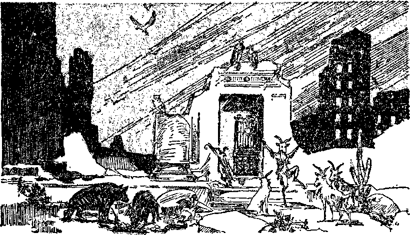CAGE OF UNCLEAN BERES (Bev. 18: 2) Page 110
[BLANK] the earth. (Rev. 12:8-12) The fall of “great Babylon” mentioned in the eighteenth chapter is that which pertains to Satan’s organization after Satan is cast out of heaven and refers to the complete destruction of that wicked system.
Following the fall of Babylon from heaven to earth God’s anointed ones on earth are released from Babylon so that they may engage in the campaign of declaring the vengeance of our God that shall be begun on Babylon at Armageddon. The ‘pouring out of the seventh plague’ in the “Declaration against Satan and for Jehovah” shows that God’s people had at that time been released and were engaged in the campaign on Jehovah’s side. God’s anointed witnesses on earth must now ‘thrash Babylon’ before her final destruction. (Jer. 51:33; Isa. 41:15) It is during the ‘pouring out of the seventh plague’ that ‘great Babylon comes into remembrance before God to give her the cup of the wine of the fierceness of his wrath’. (Rev. 16:19) The forces are now marching to Armageddon, where Babylon’s fall must be complete.
The “strong voice” is the voice or message of the Lord and must be taken up and sounded in the earth by the members of his body, to wit, the remnant, to whom is committed “the testimony of Jesus Christ”. (Rev. 12:17) Though few in number, the remnant is mighty by the Word of God. This voice or message God has caused to be printed in millions of pages and put in the hands of the people and also told to them by radio and other means. The voice or message cries: “Babylon the great is fallen.” This is a prophetic message of what is now about to come to pass, and must be declared by the witnesses of Jehovah just before it actually does come to pass. Thus says the Lord to his people: “Declare ye among the nations, and publish, . . . conceal not: say, Babylon is taken.” —Jer. 50:2.
. Daniel the prophet read aloud in the presence of the king the handwriting on the wall foretelling the fall of the city of Babylon, on the same night, just preceding the time of its fall. (Dan. 5: 26-28) So now God’s people must proclaim the message just before the fall and destruction of the great antitypical city of Babylon the great. (Isa. 21:6-10; 52:7, 8; Jer. 51:33) God reveals to his people the information of things that must shortly come to pass, and the fact that he shows it to them before or in advance implies that they must tell it out to others. (Isa. 42: 9) That means a tremendous and widespread witness that must be given by God’s anointed witnesses, and this they must continue to do and declare ‘until the city be wasted without an inhabitant’. (Isa. 6:11) Therefore there appears in Revelation two statements concerning the fall of Babylon, to wit, (1) in reference to the fall of Satan and his organization from heaven, and (2) concerning the fall of the entire satanic organization at Armageddon, the latter being considered in this chapter.
“Is become the habitation of devils [demons, Diag.~].” This could not refer to wicked spirits inhabiting the religious systems, because these have always been in Babylon and constitute the invisible part of the Devil’s wicked organization. The word “devils”, or “demons”, here used is equal to or like the word satyr, meaning a rough, wild, vicious, devilish goat opposing everything that is right. Symbolically the picture is that Babylon is a desolate place and holds and offers nothing that could be beneficial or helpful to any one. It is a detestable thing and God’s prophet describes it in this manner; “And Babylon, the glory of kingdoms, the beauty of the Chaldees’ excellency, shall be as when God overthrew Sodom and Gomorrah. It shall never be inhabited [by sane creatures], neither shall it be dwelt in from generation to generation; neither shall the Arabian pitch tent there; neither shall the shepherds make their fold there; but wild beasts of the desert shall lie there; and their houses shall be full of doleful creatures; and owls shall dwell there, and satyrs [demons] shall dance there.”
Further describing the desolate, miserable and contemptible condition of this wicked organization, God’s prophet said: “And thorns shall come up in her palaces, nettles and brambles in the fortresses thereof; and it shall be an habitation of dragons, and a court for owls. The wild beasts of the desert shall also meet with the wild beasts of the island, and the satyr shall cry to his fellow; the screech owl also shall rest there, and find for herself a place of rest. There shall the great owl make her nest, and lay, and hatch, and gather under her shadow; there shall the vultures also be gathered, every one with her mate. ’ ’—Isa. 34: 13-15.
Babylon is really now in the condition the prophet here describes, and so viewed from God’s standpoint. No one can now find any satisfaction in this devilish organization. Not even those who manipulate it have any peace of mind. It is, as it were, a haunted place. The ‘three unclean frog spirits’ (hence foul spirits) are there bellowing forth their boasting words to gather together the kings of the earth to the final fight. It is a “cage” or place of hypocrisy and deceit, including in particular “organized Christianity” and every part thereof. The religious mongers therein who use the so-called “Christian religion” as a cloak of hypocrisy are described, together with their allies, as lying in wait and trapping the unfortunate human creatures; and then the Lord shows the miserable condition thereof in these words: “For among my people are found wicked men: they lay wait, as he that setteth snares: they set a trap, they catch men. As a cage is full of birds, so are their houses full of deceit: therefore they are become great, and waxen rich. They are waxen fat, they shine: yea, they overpass the deeds of the wicked: they judge not the cause, the cause of the fatherless, yet they prosper: and the right of the needy do they not judge.”—Jer. 5:26-28.
Thus viewing the miserable organization that now has in subjection the peoples of earth, God through his prophet further says concerning that organization: “Shall I not visit for these things? saith the Lord; shall not my soul be avenged on such a nation as this?” It is an abhorrent place. Such is God’s viewpoint of Babylon, and all having his spirit view it in the same way. At,Armageddon it shall be completely wiped out, and shall never come into existence again.
“For all nations have drunk of the wine of the wrath of her fornication, and the kings of the earth have committed fornication with her, and the merchants of the earth are waxed rich through the abundance of her delicacies.” (Vs. 3) Verse three tells of the fornication between Babylon, and particularly her Devil religion, and the kings of the earth, and how the commercial crowd have grown rich upon the abundance of her delicacies. The comments on Revelation 14: 8 and 17: 2 are appropriate here, and need not be repeated.
Babylon’s “merchants are princes [rulers], whose traffickers are the honourable [so regarded men] of the earth”. (Isa. 23:8) These merchants, however, cannot now save the wicked organization, because it is written: “0 virgin daughter of Babylon [particularly organized Christianity, claiming to be a virgin, but in fact the great whore]; . . . thou shalt no more be called tender and delicate. Thus shall they be unto thee with whom thou hast laboured, even thy merchants, from thy youth: they shall wander every one to his quarter; none shall save thee.” (Isa. 47:1, 15) Satan himself has organized and managed the great mercantile schemes of his organization by which the people have been pressed down and kept in subjection and robbed. (Ezek. 28:16-18) “Organized Christianity” has been made, and is, “an house of merchandise.” (John 2:16) Big Business has committed fornication with her, and grown rich through her delicacies, and the people have been broken and killed. Their cries have reached unto heaven, and God will avenge their sufferings, and therefore he has thus declared :
“And I heard another voice from heaven, saying, Come out of her, my people, that ye be not partakers of her sins, and that ye receive not of her plagues.” (Vs. 4) A “voice from heaven, saying, Come out of her”. This is a voice from the Lord from his temple, which is open in heaven. (Rev. 11:19) While “a voice [or message] of noise” is being made by Satan’s ‘bullfrog spirits’ crying out to the rulers of the earth, there comes the voice of the Lord from the temple and it is heard by his people: "A voice of noise from the city, a voice from the temple, a voice of the Lord that rendereth recompenec to his enemies.” (Isa. 66:6) The voice from the temple being addressed to “my people”, the words apply primarily to those who are and who make up God’s remnant people on the earth, and to his witnesses: “And I have put my words in thy mouth, and I have covered thee in the shadow of mine hand, that I may plant the heavens, and lay the foundations of the earth, and say unto Zion, Thou art my people. ’ ’—Isa. 51:16.
During 1918 and prior thereto God’s people were forcibly restrained and held by Babylon or Satan’s organization. God had promised these: ‘Thou shalt be delivered from the hand of thine enemies, for now shalt thou go forth out of the city, and thou shalt dwell in the field.’ (See Micah 4:10.) “Ho, ho, come forth, and flee from the land of the north, saith the Lord: for I have spread you abroad as the four winds of the heaven, saith the Lord. Deliver thyself, 0 Zion, that dwellest with the daughter of Babylon.”—Zech. 2:6, 7.
Having delivered his remnant, God says to them: “Come, my people, enter thou into thy chambers, and shut thy doors about thee: hide thyself as it were for a little moment, until the indignation be overpast. For, behold, the Lord cometh out of his place to punish the inhabitants of the earth for their iniquity: the earth also shall disclose her blood, and shall no more cover her slain.” (Isa. 26:20, 21) These faithful and approved ones are the willing ones who joyfully volunteer to be God’s soldiers and his witnesses in the day of his wrath. (Ps. 110:3) Those making up the “great multitude” are not “willing”; but because they have been brought forth as God’s children he also addresses them as “my people’’ and warns them to flee from Babylon. (Ps. 50:7) Those remaining in Babylon will likely ‘partake of her sins’ because they mix up with that which is darkness. (Prov. 4:14, 15, 18; 2 Cor. 6:14-17) Those who come out may be granted a part with the seventh angel in ‘pouring out the plagues’ upon Babylon. Understanding that these plagues began to be poured out in 1922, the voice from heaven, “Come out of her,” must have been shortly before that and must continue until the antitypical Samson class gets strength to pull down the house upon itself.
Those that go to make up the ‘wicked servant’ class will surely receive a share in the final plagues upon Babylon. They profess to have come out from Babylon, yet they continue to oppose the work of the Lord; and thus doing, they align themselves with Satan’s forces. They smite their “own mother’s son” and attempt to betray God’s witnesses into the hands of the enemy. (Ps. 50:20) They are like Edom: “For thy violence against thy brother Jacob, shame shall cover thee, and thou shalt be cut off for ever. In the day that thou stoodest on the other side, in the day that the strangers carried away captive his forces, and foreigners entered into his gates, and cast lots upon Jerusalem, even thou wast as one of them.” (Obad. 10, 11) Therefore the wicked servant class receive of the plagues of God’s vengeance.—Jer. 51: 6.
“For her sins have reached unto heaven, and God hath remembered her iniquities.” (Vs. 5) Like the tower of Babel, Babylon’s sins cleaved together unto heaven. (Gen. 11:4) The sins of that wicked organization in heaven have cleaved together with her sins in the earth and they have been cumulative throughout the centuries. They have been committed especially against God’s faithful people, and therefore against God and his Christ. God’s time comes to restrain wickedness, and he remembers the wicked deeds of Babylon and will recompense her therefor. (Jer. 51:9; Rev. 16:19) Clearly this implies that God would cause his people on earth, who constitute his witnesses, to widely expose and publish the hypocrisy and other iniquities of Babylon, that the people might have an opportunity to know God and his purposes concerning Babylon and concerning the people.
Jehovah serves notice on the rulers and on the people of what he will do; therefore there must be a wide witness of the truth, and particularly the declaration of the day of vengeance of our God. (Isa. 61:2) Being now in that day, the Lord says to his people in Zion: “Let not thine hands be slack.” (Zeph. 3:16) Let no amount or kind of opposition deter the faithful from now giving a witness to the people. Satan’s organization, and particularly the clergy, will bring to bear all opposition under all hypocritical pretenses to prevent the giving of the witness; but let God’s anointed go straight forward in the witness work inspite of all opposition.
“Render to her as she also rendered, and repay double according to her works; in the cup which she mixed, mix to her double.” (Vs. 6, Diag.) From the time that Jesus began his ministry on earth until now, Babylon, Satan’s organization, has drunk the blood of God’s chosen ones. To this great crime of wrongfully shedding righteous blood the wicked agents in Babylon, particularly the religionists, have added repeated insults to Jehovah and to his beloved Son. These religious organizations have taken the name of Christ and carried on their religion under the name of “organized Christianity”, and in that name have practiced their cruel deeds. Let the reader call to mind the history of the world written particularly with reference to “Christendom” during the past 1600 years. False religion, and therefore the Devil religion, banded together with commercial giants and conscienceless politicians called “statesmen”, and thus constituting Satan’s organization, has run roughshod over the people and crushed the people into the earth. Anyone daring to raise a protesting voice has been quickly dispatched. Cruel laws of inquisition and espionage and spying have been made and maliciously enforced against innocents. Autocratic rulers have dragged the poor and defenseless before them and caused such to suffer cruel death, and this has been done to gratify a wicked passion. While a few have lived in luxury and wantonly flourished upon their ill-got gains from the fruits of honest toil, billions have unjustly suffered poverty, starvation, disease and cruel death. When one part of Satan’s organization has become offended against another or when the wicked spirit of conquest has goaded the rulers on, the common people have been horned and pushed like dumb driven cattle into the slaughter pen, there to fight against one another and to die. This the rulers have brought about and done that their ambitious, insatiable desire might be gratified.
On the back of this “wild beast”, or beastly rule, and forming a part of the wicked organization, has sat the hypocritical religion called “organized Christianity”, there to lend ‘divine sanctity’ to the Devil’s
schemes and to mark with approval the cruel murders of the pool1 and helpless. The religious mongers, to wit, the clergy, have especially directed the venom of the devilish organization against God’s faithful witnesses who tell the truth. Even in this day, with all the light of divine truth shining, these clergymen wrongfully influence and urge the law-enforcing part of Satan’s organization to arrest, persecute and imprison humble witnesses of the Lord who go from house to house to tell the people the truth. Above all these crimes and wickedness, these religionists have committed and been guilty of a greater crime, to wit, carrying on their own wickedness and approving the wickedness of their allies in the name of Christ and of God, and labeling their entire devilish arrangement as “Christendom”. Therefore Jesus tells them that they are of their father the Devil, and, as Jehovah’s spokesman, further says: ‘Woe unto you, hypocrites! Upon you shall come all the righteous blood shed upon the earth.’ (Matt. 23:27-36) Even if time and space would permit the giving of a full description of the crimes and wickedness practiced by Babylon under the name and guise of “organized Christianity”, human words would utterly fail to adequately describe it.
But Jehovah has remembered such iniquities; and his time having come, he commands his servant class to notify Babylon that she shall be rewarded in the same manner that she has rewarded God’s people. Jehovah, by his Chief Officer and Field Marshal, will do the breaking of Babylon; but he will have his few faithful witnesses on the earth to let it be known what he will shortly do. The time for retributive justice is at hand, and God’s people must now use their heaven-given power and opportunity to make known io the world concerning the coming execution of God’s judgment against the devilish organization. To Christ and his army Jehovah now says: “Thou art my battle axe and weapons of war: for with thee will I break in pieces the nations; and with thee will I destroy kingdoms; and with thee will I break in pieces the horse and his rider; and with thee will I break in pieces the chariot and his rider; with thee also will I break in pieces man and woman; and with thee will I break in pieces old and young; and with thee will I break in pieces the young man and the maid; I will also break in pieces with thee the shepherd and his flock; and with thee will I break in pieces the husbandman and his yoke of oxen; and with thee will I break in pieces captains and rulers. And I will render unto Babylon, and to all the inhabitants of Chaldea, all their evil that they have done in Zion in your sight, saith the Lord.”—Jer. 51:20-24.
Christ Jesus is the One here generally addressed; and associated with him is a great multitude of holy angels and the risen saints, and upon this earth is a little handful who will sound the alarm and sing the praises of Jehovah as the forces move into action for the final battle.
The Israelites wrongfully harbored Eglon, the king of Moab, who was a representative of Satan and his organization. The professed spiritual Israelites have long harbored Satan’s representatives under the cloak of their hypocritical religion. God raised up Ehud for a purpose. Ehud appeared in the presence of Eglon and said: “I have a message from God unto thee.” Then Ehud thrust a long knife into Eglon’s belly, “and the haft also went in after the blade; and the fat closed upon the blade, so that he could not draw the dagger out of his belly; and the dirt came out.” Today God sends his faithful servant class, the remnant, with the message to Satan’s representatives on earth. He serves notice upon them of his purpose, and soon the belly of Babylon shall be cut through and through and Babylon shall fall to rise no more, and then the people shall be delivered from bondage. —Judg. 3:14-30.
“Double unto her double according to her works.” This does not mean that God will inflict upon Babylon twice the amount of punishment she has inflicted upon others. God’s law is: “An eye for an eye.” The Greek word here rendered double means a duplication, that is to say, like for like. The text means, then, that great Babylon shall be given the same measure of punishment that she has inflicted upon others. ‘Make her to drink a like potion as she has poured out for the Lord’s witnesses,’ is the command. This is the time that God furnishes “the cup of the wine of the fierceness of his wrath” and Babylon must drink it.
“How much she hath glorified herself, and lived deliciously, so much torment and sorrow give her; for she saith in her heart, I sit a queen, and am no widow, and shall sec no sorrow.” (Vs. 7) Babylon with the “harlot” religion riding the beastly organization has “glorified herself”, but has not glorified Jehovah. She has lived wantonly and voluptuously: ‘Thou art given to pleasures,’ and that at great cost to others. (Isa. 47:8) Babylon has brought great sorrow upon God’s people and tormented them, and she shall be likewise tormented and caused to suffer. As Babylon has caused the people of God to be slain and fall, so shall Babylon be afflicted with sorrow and fall.—Jer. 51:24-35, 49.
Being the wife of Satan, Babylon flippantly and boastingly challenges God and says: ‘I sit as a queen and shall see no sorrow.’ She scoffs at Jehovah’s prophecies, even as Pharaoh challenged Jehovah in Egypt. Her religious mouthpiece declares that nothing shall befall her, and they and their allies cry, “Peace, peace”; and then sudden destruction shall come upon her.
“Therefore shall her plagues come in one day, death, and mourning, and famine; and she shall be utterly burned with fire; for strong is the Lord God who judgeth her.” (Vs. 8) That means her complete destruction. “Thus saith the Lord of hosts, The broad walls of Babylon shall be utterly broken, and her high gates shall be burned with fire; and the people shall labour in vain, and the folk in the fire, and they shall be weary,” (Jer. 51: 58) When one beholds the pomp and show and power today exercised by Satan’s organization it requires real faith in God to know that she shall shortly fall and be completely destroyed. Those having little faith or no faith in God say, in substance: ‘Behold, how great is this organization! What is like the great organization of the world? Who can do anything against it [Babylon]?’ “Why should we say anything against it?” say the lukewarm and selfish ones who claim to be followers of Christ. God’s remnant know that it shall fall, because it is written in God’s Word: “Though Babylon should mount up to heaven, and though she should fortify the height of her strength, yet from me shall spoilers come unto her, saith the Lord. And I will make drunk her princes, and her wise men, her captains, and her rulers, and her mighty men: and they shall sleep a perpetual sleep, and not wake, saith the King whose name is the Lord of hosts. And the land shall tremble and sorrow: for every purpose of the Lord shall be performed against Babylon, to make the land of Babylon a desolation without an inhabitant.” (Jer. 51: 53, 57, 29) The Lord then reveals what will be the effect upon the great men of earth when they see Babylon’s fall.
“And the kings of the earth, who have committed fornication and lived deliciously with her, shall bewail her, and lament for her, when they shall see the smoke of her burning, standing afar off for the fear of her torment, saying, Alas, alas, that great city Babylon, that mighty city! for in one hour is thy judgment come. And the merchants of the earth shall weep and mourn over her; for no man buyeth their merchandise any more.” (Vss. 9-11) Babylon here represents the entire organization of Satan on which the Devil religion has been riding and forming a part thereof. After the destruction of "the great whore” (picturing “organized Christianity”) Babylon, that is, Satan’s organization, still continues to exist. The politicians and commercial giants of the old world rely upon it and hold to it, and the clergymen quit their preaching business, take off their sanctimonious robes, and walk with the others, and then they shall see the entire organization destroyed. When these great men see the organization gone and know that their rule is done, and that their claim of ruling by divine right is entirely false and groundless, then they will lament.
Smoke is an evidence of burning. These great ones’ standing on the side shows that they are helpless and they realize that their own destruction is at hand. With the powerful organization gone, the individuals can do nothing, and they wring their hands in despair: “Alas, alas, the great city!” Jehovah, by his Executive Officer, will destroy Satan’s wicked organization; and it will be a fearful and an awe-inspiring sight when it goes down. ‘The whole earth shall be surprised and become astonished.’ (Jer. 51:41) Big Business, cruel, oppressive and heartless, is here pictured by the “merchants”, and is the “sixty” element of the “number of the beast”. They seeing everything swept away and their hopes of further controlling the people gone, it is their day to weep. Therefore it is written; ‘Go to now, ye rich men, weep and howl for your miseries that shall come upon you. ... Ye have heaped up treasures for the last day’ and they have come to naught. (Jas. 5:1-3) Their profiteering will cease. In that hour of distress the people cannot buy their merchandise. The people will not want it. They will want to buy life, which God alone can give. The pomp and glory and strength of the mighty ones being destroyed, and all in distress and in perplexity, man’s extremity will turn many to Jehovah. “And I will bring distress upon men, that they shall walk like blind men, because they have sinned against the Lord: and their blood shall be poured out as dust, and their flesh as the dung. Neither their silver nor their gold shall be able to deliver them in the day of the Lord’s wrath; but the whole land shall be devoured by the fire of his jealousy: for he shall make even a speedy riddance of all them that dwell in the land.”—Zeph. 1:17, 18.
“The merchandise of gold, and silver, and precious stones, and of pearls, and fine linen, and purple, and silk, and scarlet, and all thyine wood, and all manner vessels of ivory, and all manner vessels of most precious wood, and of brass, and iron, and marble, and cinnamon, and odours, and ointments, and frankincense, and wine, and oil, and fine flour, and wheat, and beasts, and sheep, and horses, and chariots, and slaves, and souls of men.” (Vss. 12, 13) Note that this scripture gives a list of the material necessities of life, as well as the luxuries, of which Satan’s organization has long had control. Big Business and her allies have trafficked in these things. These items need not be regarded as symbolic, but are set forth here to show the fact that Satan’s organization controls that which is for the material and physical well-being of the peoples of earth and has used it wantonly and selfishly and to the sorrow and oppression of the people, and to keep them in subjection. Satan’s ruling agents have sought after the things of this earth that give riches and power, and the hypocritical religionists have helped to hold the devilish and oppressive organization together and to keep the people in ignorance of Jehovah’s provision for man. The destruction of the wicked organization and the relieving of the people from oppression and bringing to them a knowledge of God’s provision for them will be a vindication of Jehovah’s great and holy name and will completely prove that his word is true.
‘‘And the fruits that thy soul lusted after are departed from thee, and all things which were dainty and goodly are departed from thee, and thou shalt find them no more at all.” (Vs. 14) Neither the necessities nor luxuries for men ever did belong to Satan and his wicked organization. ‘ ‘ The earth is the Lord’s, and the fulness thereof.” “Moreover, the profit of the earth is for all.” (Ps. 24:1; Eecl. 5: 9) But those who have had Satan for their god have sought after these things of the earth for selfish reasons, and their love for money has been the root of all evil; and this has been particularly true with reference to those who have used religion as a cloak for their unrighteous work. (1 Tim. 6:10) Satan’s organization, and particularly the visible ruling factors thereof, have used all of these fruits of the earth for selfish purposes. Now God will use them for the blessing of the people because he made them for that purpose.
“The merchants of these things, which were made rich by her, shall stand afar off for the fear of her torment, weeping and wailing, and saying, Alas, alas, that great city, that was clothed in fine linen, and purple, and scarlet, and decked with gold, and precious stones, and pearls! For in one hour so great riches is come to nought. And every shipmaster, and all the company in ships, and sailors, and as many as trade by sea, stood afar off, and cried when they saw the smoke of her burning, saying, What city is like unto this great city!” (Vss. 15-18) Big Business and her tools and allies continue to weep and lament the loss of the devilish organization. Why do these weep? Surely not because there are no more meeting houses for them to assemble in and hear some preacher talk nonsense while they work out schemes to further rob and oppress the people. They weep and wail because their own selfish trade is done and gone and the people can no longer be held in subjection and exploited.
It might be asked, Why would God let these mighty men remain for a while after the complete fall of the great organization of Satan? It is apparent that God gives Big Business and big politicians and their allies a little space of time to gaze upon the wreck and ruin of the devilish organization of which they have been a part, that they might lament and howl and see what awaits them. They have viewed Babylon from the standpoint of great riches and as the organization which is invulnerable. They have worshiped the power of the organization and its god. Big Business has used the organization in order that it might gather out the things of the earth for selfish use; the politicians have looked at it from the viewpoint of organized power of control; and the preachers have been holding on as parasites, claiming to give a divine sanctimoniousness to the devilish schemes of the system. God will permit them to see that their claims are without foundation and therefore vain. They shall learn that “riches profit not in the day of wrath”.— Prov. 11:4.
The fall of Babylon will wreck all who do not serve God but who do serve the wicked one. (Ezek. 27; 28; Isa. 23:1, 14; 2:16) The fact that the class that once ruled stand afar off and wail shows their own expectation to be cut off; and doubtless they will feel that they deserve such fate. They know that their business is gone; and they do not rejoice that Jehovah has triumphed, but they must see that Jehovah God has wrecked the devilish organization and that therefore he is supreme. Their wailing shows that they have no hope, because having no knowledge; and they must see and will see the vindication of Jehovah’s word and his name, whatever God may have for them in the days of reconstruction.
“And they cast dust on their heads, and cried, weeping and wailing, saying, Alas, alas, that great city, wherein were made rich all that had ships in the sea by reason of her costliness! for in one hour is she made desolate.” (Vs. 19) This verse shows that the mighty ones continue to weep and wail and lament the fact that so great riches and wealth and power should disappear in one hour and the whole organization that they built up be quickly made desolate. Their hearts have been entirely set upon selfish riches and power and the accumulation of even more wealth. This spirit of greed has been emphasized especially since the World War. The increase of tax burdens upon the people, the concentration of wealth in the hands of a comparatively small number, and the greatly increased cost of the necessities for living, all testify to the greed of the ruling factors.
The sudden destruction of all this wealth and power shocks the mighty men beyond human words of description. They have thought that their religion and foolish ceremonies performed by their paid clergymen, and their allegiance to and worship of the “beast”, would save them. They will be greatly astonished. While they are thus suffering ignominy and shame and the loss of their all, it seems from other scriptures that before they die they shall witness the comfort and joy of those who serve the Lord. ‘ ‘ Therefore thus saith the Lord God, Behold, my servants shall eat, but ye shall be hungry: behold, my servants shall drink, but ye shall be thirsty: behold, my servants shall rejoice, but ye shall be ashamed: behold, my servants shall sing for joy of heart, but ye shall cry for sorrow of heart, and shall howl for vexation of spirit. And ye shall leave your name for a curse unto my chosen: for the Lord God shall slay thee, and call his servants by another name.”—Isa. 65:13-15.
REJOICING
“Rejoice over her, thou heaven, and ye holy apostles and prophets: for God hath avenged you on her. ’ ’ (Vs. 20) The expression of God’s vengeance in the destruction of Satan’s organization will be a vindication of his word and name and call forth rejoicing because of the execution of his righteous judgment. This is one of the Scriptural proofs that God will permit some of his faithful remnant to be on the earth at the time of the complete destruction of Satan’s organization and that these will join in the song of joy because the word and name of Jehovah are vindicated. Jacob stands for or represents God’s people who receive the kingdom birthright. The prophet of God writes: “Sing, 0 ye heavens: for the Lord hath done it: shout, ye lower parts of the earth: break forth into singing, ye mountains, O forest, and every tree therein: for the Lord hath redeemed Jacob, and glorified himself in Israel. Thus saith the Lord, thy redeemer, and he that formed thee from the womb, I am the Lord that maketh all things; that streteheth forth the heavens alone; that spreadeth abroad the earth by myself; that frustrateth the tokens of the liars, and maketh diviners mad; that turneth wise men backward, and maketh their knowledge foolish; that confirmeth the word of his servant, and perform-eth the counsel of his messengers; that saith to Jerusalem, Thou shalt be inhabited; and to the cities of Judah, Ye shall be built, and I will raise up the decayed places thereof. ’ ’—Isa. 44:23-26.
Jehovah God will do the great work of destruction, and not man; but those who love God he invites to sing for joy because of his vindication. In this twentieth verse the words “ye saints” (R.V.) no doubt include the remnant on earth who will rejoice and sing to the glory of God because his name has been vindicated. The words “ye apostles” (R.V.) must refer to those faithful ones who have been resurrected and who are with the Lord, and the word “prophets” probably refers to some of those faithful men of old who gave a witness to God’s name, even with their lives, and who testified and prophesied concerning the fall of Babylon and who shall be alive and on earth at the complete destruction thereof.
Jeremiah and Ezekiel were especially privileged to give such prophecy. It is not improbable that Jehovah will establish a direct connection between the last of his saints on earth with the faithful men of old who were God’s faithful witnesses and who are mentioned specifically in Hebrews the eleventh chapter.
It was Babylon, Satan’s devilish organization, and particularly the hypocritical religionists thereof, that persecuted and shed the blood of the faithful prophets of old. It is not at all unreasonable that God would permit these to see his vengeance upon that wicked system,’ and for this reason it is written that all those who love God, in heaven and earth, should rejoice: “For God hath avenged you on her.”
“And a mighty angel took up a stone like a great millstone, and cast it into the sea, saying, Thus with violence shall that great city Babylon be thrown down, and shall be found no more at all.” (Vs. 21) What John saw at this point was doubtless an illustration of the manner in which Babylon shall fall; that is to say, by and with the mighty power of the Lord, and not by violence of the enraged masses against the classes. One class of men destroying another would bring no glory and honor to God nor vindicate his word and name. Armageddon is the ‘great battle of the day of God Almighty’; and his Chief Field Marshal, Christ Jesus, is the One leading the fight that will bring about the complete fall and destruction of Satan’s organization. With great violence from heaven shall Babylon be destroyed. “The broad walls of Babylon shall be utterly broken, and her high gates shall be burned with fire.’’ (Jer. 51:58) All the honor and glory for the execution of his judgment will be due to Jehovah, and his great Executive Officer will do the executing. This must be such an outward demonstration that all creation can observe and understand that it is a manifestation of divine power.
In the Scriptures Satan is called “the king of Babylon”, and concerning his organization it is written: “Thou shalt take up this proverb against the king of Babylon, and say, How hath the oppressor ceased! the golden city ceased! The Lord hath broken the staff of the wicked, and the sceptre of the rulers.” (Isa. 14:4, 5) This proves that Jehovah does the breaking, and not man.
Further, the Lord says: “ Yet thou shalt be brought down to hell, to the sides of the pit. For I will rise up against them, saith the Lord of hosts, and cut off from Babylon the name, and remnant, and son, and nephew, saith the Lord. I will also make it a possession for the bittern, and pools of water; and I will sweep it with the besom of destruction, saith the Lord of hosts. The Lord of hosts hath sworn, saying, Surely as I have thought, so shall it come to pass; and as I have purposed, so shall it stand.” (Isa. 14:15, 22-24) Satan’s organization shall go down and never again arise.—Jer. 50:39; 51:26; Ezek. 28:19.
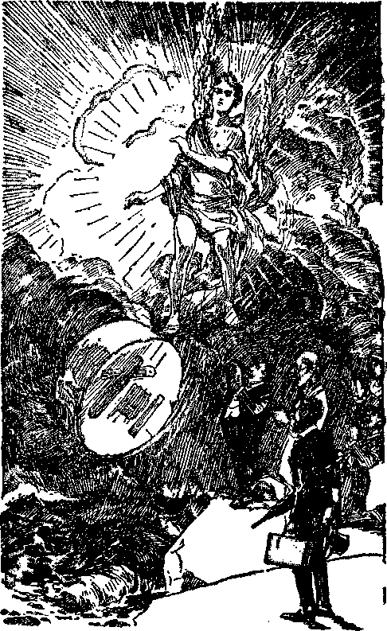THUS SHALL SATAN’S ORGANIZATION GO DOWN Page 139
[BLANK]
“And the voice of harpers, and musicians, and of pipers, and trumpeters, shall be heard no more at all in thee; and no craftsman, of whatsoever craft he be, shall be found any more in thee; and the sound of a millstone shall be heard no more at all in thee.’’ (Vs. 22) The entertainers now in Babylon are made up of paid church choirs, organists, army bands, symphony orchestras, operatic singers, professional radio broadcasters, including long-frocked preachers; and all these entertainers have refused to use their natural endowments to the glory of God. They have made Babylon to appear attractive. Babylon will become a joyless ruin. All music and joy will cease therein. Thereafter all music and laughter will be to the glory of God and his kingdom.—Ps. 150: 3-6.
Craftsmen will be no more in Babylon, but must use their abilities to the Lord’s glory or not use them at all: “For the nation and kingdom that will not serve thee shall perish; yea, those nations shall be utterly wasted.” (Isa. 60:12) There will be no more sweatshops nor the grinding of mills for prisoners or other oppressed labor, and slavery shall cease.— Lam. 5:13.
“And the light of a candle shall shine no more at all in thee; and the voice of the bridegroom and of the bride shall be heard no more at all in thee: for thy merchants were the great men of the earth; for by thy sorceries were all nations deceived.” (Vs. 23) This verse describes the desolation of Satan’s once great organization. Darkness and gloom will be its portion. (Prov. 24:20) No more great church weddings and feasts will be celebrated in her. The people will not even desire to think of her any more.—Isa. 14:20-22.
The great men in Babylon have been and now are the commercial giants, but their greatness shall be no more: “Who hath taken this counsel against Tyre, the crowning city, whose merchants are princes, whose traffickers are the honourable of the earth? The Lord of hosts hath purposed it, to stain the pride of all glory, and to bring into contempt all the honourable of the earth.” (Isa. 23:8, 9) The wicked organization has promoted great monopolies in which big banks have swallowed up smaller ones, the chain stores have forced the small and honest dealer into bankruptcy, and the trusts and syndicates have wrongfully taken the fruits of honest labor, lived wantonly thereon, and compelled men who work to be their puppets. The devilish religious practitioners, or “voodoo medicine men”, by their false and hypocritical teachings have become party to the criminal practices of Big Business, and by superstition and fraud induced the people .to submit to robbery. These agents of Satan ‘now stand with their enchantments and with their multitude of sorceries’ and practice and hoodwink and deceive the people. (Isa. 47:12, 13) The sorceries of the Devil religion hypocritically parading under a false name make her the wife of “the Serpent”. She is a witch and Jehovah will not permit her to live.— Ex. 22:18.
“And in her was found the blood of prophets, and of saints, and of all that were slain upon the earth.” (Vs. 24) This is further proof that Satan’s organization, and particularly the Devil religion thereof, has brought about the death of God’s faithful witnesses, both of the prophets of old and of the witnesses of modern times. Babylon is the wife and lewd woman of Satan, who has been “a murderer from the beginning”, and she has been party to his crime; therefore in her is found the blood of God’s faithful ones, and with the complete destruction of this wicked system the word and name of Jehovah will be vindicated.
GREAT REJOICING
(Revelation, Chapter 19)
“And after these things I heard a great voice of much people in heaven, saying, Alleluia; Salvation, and glory, and honour, and power, unto the Lord our God.’’ (Vs. 1) John’s vision then disclosed a great multitude rejoicing and giving praise to Jehovah. They are saying “Alleluia”, which means, “Praise ye Jehovah.” This acclamation of laud to Jehovah is mentioned exclusively in this chapter, and no other place in the New Testament. The time of beginning of this scene of rejoicing seems therefore to coincide with the raising of the “Hallelujah” chorus to the glory of God as mentioned in the Old Testament. When Satan and his organization were cast down from heaven there was great rejoicing in heaven saying: ‘Now is come salvation, and the power and the kingdom of our God, and the power of his Christ.’— Rev. 12:10.
In 1919 God’s people, being released from Babylon’s power that they might continue in the Lord’s service, and being brought under the garments of salvation, had received “the robe of righteousness” and entered into “the secret place of the Most High”, and therefore had occasion to begin the song to the glory of God. This doubtless marks the beginning of the song of the Hallelujah chorus. But chapter nineteen discloses the raising of a song to the glory of God by “much people”. This, however, does not mean that the great multitude of Revelation 7:14 is included in this song of praise. The multitude of singers would include the risen saints and the remnant on earth, which latter class is ‘seated in heavenly places’, and would include also all the angels of the Lord, and therefore all of God’s holy organization. The song must pertain to the time of deliverance of God’s people from the enemy.
Satan’s organization has always condemned the saints, who, like Jesus when on earth, are classed as the poor. When the time comes to deliver them and they are delivered and are made bold witnesses for Jehovah, they join the multitude of the holy ones in heaven to the praise of Jehovah God: “I will greatly praise the Lord with my mouth; yea, I will praise him among the multitude. For he shall stand at the right hand of the poor, to save him from those that condemn his soul.” (Ps. 109: 30, 31) “Bless the Lord, O my soul, and forget .not all his benefits.” (Ps. 103:2) The song is also a prayer: “Let the sinners be consumed out of the earth, and let the wicked be no more. Bless thou the Lord, 0 my soul. Praise ye the Lord.” (Ps. 104: 35) From the time of the building up of Zion the song begins: “Praise ye the Lord. Praise, 0 ye servants of the Lord, praise the name of the Lord. Blessed be the name of the Lord, from this time forth and for evermore. He maketh the barren woman to keep house, and to be a joyful mother of children. Praise ye the Lord.” (Ps. 113:1,2,9) God’s woman Zion, barren to this time, has now brought forth her children and begins housekeeping. That vision did not begin prior to the Lord’s coming to his temple; and this conclusion is further supported by Revelation 15:3, 4, The song begins after judgment begins. “Judgment must begin at the house of God” and this at the coming of the Lord to his temple.
“For true and righteous are his judgments: for he hath judged the great whore, which did corrupt the earth with her fornication, and hath avenged the blood of his servants at her hand.” (Vs. 2) The remnant now see that the judgments of Jehovah are righteous. They perceive that soon God’s judgments written will fall upon Satan’s organization and particularly upon “the great whore”. The people have been deceived and made to believe that “organized Christianity”, or the “Christian religion”, so called, represents Jehovah. Even many of the Lord’s people have believed this. When they get their eyes open to the truth they will rejoice. When the clergy get together and pray that God will rescue their organization in Russia, many churchgoers expect God to answer that prayer; but he does not answer. When the ‘beast burns the great whore with fire’, picturing particularly the destruction of “organized Christianity”, such verifies the statement made by God’s witnesses that his judgments are declared against her. Those who by faith see these things rejoice now and will continue to rejoice: “Rejoice, 0 ye nations, with his people; for he will avenge the blood of his servants, and will render vengeance to his adversaries, and will be merciful unto his land, and to his people. ” —Deut. 32: 43.
The shepherds and the principal ones of their flock will then find no way to escape, and with the execution of this judgment the song of rejoicing will continue. Satan preached false religion to Eve, resulting in death. False religious teaching respecting the ‘seed of the woman’ has led to the slaying of God’s true witnesses. The reprehensible ones have been and are those who have been wilful teachers of false religion; therefore when the destruction of the “great whore” comes to pass there will be occasion for much rejoicing; and this is pictured here.
Big Business and politicians have long served as eatspaws for Satan’s religious frauds. The politicians, like Pilate, must come to see the necessity of washing their hands of this vile Devil religion, which has led to the persecution of the true servants of God. It may be that some of these will repent, see the truth, said rejoice in the righteousness of God’s judgments on the “great whore”. (Isa. 49:22, 23) Those who hold to the Devil’s beastly organization will see the destruction of it and weep. The righteous continue to sing praises of Jehovah because his judgments are righteous against the enemy.
“And again they said, Alleluia. And her smoke rose up for ever and ever. And the four and twenty elders and the four beasts fell down and worshipped God that set on the throne, saying, Amen; Alleluia.” (Vss. 3, 4) The statement here, “Again they said, Alleluia,” doubtless applies at the complete fall of Satan’s organization at Armageddon. Those of God’s remnant then on earth will have another reason for rejoicing and saying, “Praise Jehovah.” ‘The rising of her smoke for ever and ever’ will be a testimony that Babylon’s destruction is complete and Babylon will never be recovered.—See Revelation 14:11 and comments.
The four and twenty elders and the four beasts also join in saying, “Alleluia,” This shows that every part of God’s organization joins in the worship and praise to Jehovah because he has vindicated his word and his name. Therefore they all sing: “Praise ye the Lord [Hallelujah, margin]. Praise God in his sanctuary; praise him in the firmament of his power. Let every thing that hath breath praise the Lord.”—-Ps. 150:1, 6.
“And a voice came out of the throne, saying, Praise our God, all ye his servants, [Sinaitic Manuscript omits “and”] ye that fear him, both small and great.” (Vs. 5) This shows that it is the servant class that fears God; and all members of this class, whether they be elders, deacons, young or old, male or female, must join in this praise, of service to Jehovah. 'The voice came out of the throne’; which shows that it is Jesus Christ, “the Lamb which is in the midst of the throne,” and therefore the official representative of Jehovah, that is speaking. He commands the message of praise to be sung. The message has heretofore been written in the Word of God, and now Christ Jesus directs his angel to cause the message of praise to Jehovah to be sounded forth in the earth. Therefore the remnant must be included in the servant class and it is for the particular benefit of the remnant on earth that the Scriptures have been written.
All the servant class sealed in their foreheads must now do service to the glory of Jehovah God. Jehovah has appointed the manner of giving this praise. He has anointed his remnant to be his witnesses on the earth. No one who is of the remnant is to think more highly of himself than he ought to think, and therefore to think he is excused from active service to the praise of Jehovah because he is “great”. No one is to think he is too poor and lowly to have part in the song of praise to Jehovah. The time for the singing of the song of Jehovah’s praise is now here, and the song must be sung, and is being sung. That song means actively engaging in God’s service as opportunity affords to testify that Jehovah is God and that his kingdom is at hand.
Before Armageddon is fought God reveals to his people what is shortly to come to pass, and all these must join in proclaiming his praise. Therefore there must continue to be a wide witness to the truth; and the remnant will give this witness. Jehovah is God; and let that now be told by all who love him. Others will join in the song of praise later. The remnant must do it now. The words of verse five contain a command from Jesus Christ to all the servants of Jehovah to praise him, and that which appears in the following verse is what takes place in obedience to that command.
“And I heard as it were the voice of a great multitude, and as the voice of many waters, and as the voice of mighty thunderings, saying, Alleluia; for the Lord God omnipotent reigneth.” (Vs. G) Here the message proclaimed, or song sung, fixes the time when this anthem of praise begins; to wit, when the Lord God omnipotent places his beloved Son on his throne in Zion and his reign begins.—See Revelation 11:15 and comments.
The seventh angel began to sound, and the proclamation is made to the glory of Jehovah. It was at Detroit in 1928 that the remnant on earth discerned and took up this song of praise and began to herald it throughout the earth, and therefore those joining in the Hallelujah song must include the remnant of God’s people on the earth. The great chorus of voices sing: “The way of the wicked he turneth upside down. Jehovah will reign for ever, thy God, 0 Zion, unto all generations. Hallelujah.” (Ps. 146:9, 10, A.R.V., margin) “But the Lord is the true God, he is the living God, and an everlasting King: at his wrath the earth shall tremble, and the nations shall not be able to abide his indignation. ’ ’—Jer. 10:10.
That this great song of praise to Jehovah begins after his throne is set for judgment is further supported by the following texts: “Lift up your heads, 0 ye gates; and be ye lift up, ye everlasting doors; and the King of glory shall come in. Who is this King of glory? The Lord strong and mighty [at the battle of Armageddon], the Lord mighty in battle.”—Ps. 24:7, 8.
The fact that the words “a great multitude” appear in this verse does not at all mean that the great multitude or tribulation class of Revelation 7: 9 is included. All the scriptures bearing upon this point, as well as the facts aside therefrom, show that the great multitude or tribulation class is not included in this song. The “great multitude” mentioned and considered here necessarily means the hosts of heaven and embraces all the glorious angels of God. (Rev. 9:16) The ‘tribulation class’ does not join in the song of praise at this time. They go through a great tribulation that causes them to weep; and after they are forced to take their position on the side of Jehovah and are delivered, then they rejoice. The message that follows and the reason given for the song show that the “great multitude” of Revelation 7:9 is not included.
“Let us be glad and rejoice, and give honour to him: for the marriage of the Lamb is come, and his wife hath made herself ready.” (Vs. 7) Many centuries ago God made known the fact that he would prepare a bride for his beloved Son and that in his due time there should be a marriage in heaven. This he pictured in the selection of Rebecca to be the wife of Isaac. The church is the bride of Christ, selected from amongst men, and those selected have the faith like unto Abraham. (Gal. 3:6, 7) As Abraham selected Isaac’s wife, so Jehovah selects the bride for his beloved Son. When begotten or brought forth as God’s children these arc espoused to Christ to be his bride. (2 Cor. 11:2) When united with Christ Jesus in the glorious union of marriage the church will then be joint-heir with Christ and share his nature and glory.—Rom. 8:16, 17; 1 John 3: 2.
He who has the bride is the bridegroom. (John 3:29) Jesus Christ is the bridegroom. The angels do not marry, but Jesus is “so much better than the angels’’, and this marriage of Christ to his church is the only marriage that takes place in heaven. (Matt. 22: 30; Heb. 1:4) Therefore the marriage of the Lamb would be an occasion for great rejoicing in heaven and all the hosts of heaven would give honor and glory to Jehovah because he has arranged for the wedding. The marriage of the bride and Bridegroom, therefore, would mark another forward step in the outworking of the glorious purposes of Jehovah for the vindication of his word and his name. The union of the Bridegroom and bride would be conclusive proof that Jehovah does have among his creatures those who would maintain and who do maintain their integrity with him, which he illustrated with Job. Jehovah is the great King who makes the marriage for his Son Christ Jesus, and Jehovah should be given the honor and glory on that occasion, just as John saw in the vision. The Lord himself rejoices on that occasion, as it is written: “As the bridegroom re-joiceth over the bride, so shall thy God rejoice over thee.”—Isa. 62: 5.
When it is written, “Let us be glad and rejoice,” it would necessarily mean the contracting parties, as well as the host of heaven, that were joining in this song of praise. That song of praise, then, would necessarily include the remnant on earth, because these are the only ones on earth that see and appreciate the fact that the time has arrived for the marriage of the bride and Bridegroom, and these see this great truth when Zion is built up and they are brought into the temple.
This is further supported by the words of the prophet: “I will greatly rejoice in the Lord, my soul shall be joyful in my God: for he hath clothed me with the garments of salvation, he hath covered me with the robe of righteousness, as a bridegroom deeketh himself with ornaments, and as a bride adorneth herself with her jewels.” (Isa. 61:10) This rejoicing could not include the tribulation or great multitude class that pass through the time of trouble, but these must learn of this truth by the proclamation of the remnant. It is therefore with the remnant on earth that the Lord begins the fulfilment of this prophecy on the earth. Those of the remnant class on earth make this announcement to one another to encourage one another. At the same time they ‘go forth to moot the Bridegroom’. They sing the honor of Jehovah’s name, and “cry aloud”, that their lukewarm brethren may be awakened to their privileges.—Isa. 58:1.
Seeing that the church is the bride of Christ, and therefore his wife, the statement is made, “And his wife hath made herself ready.” That would mean that the faithful saints had been resurrected and united with the Lord Jesus in heavenly glory, hence the time for them to begin singing the great song of praise. This continues when the Lord comes to his temple. Those constituting the remnant are examined, approved and brought into the temple; and these, seeing that the time of the union with the King has come, arise and hurry to meet the Bridegroom, and they join in the song. This they do by looking well to the interests of the King and kingdom committed to their hand. Having now received “the testimony of Jesus Christ’’ the faithfulness of the remnant in proclaiming that testimony is essential for them in preparing themselves for the wedding. At this particular time the remnant learn to have but one purpose in mind, and they are blind to everything else; and that purpose is the King and kingdom. (Isa. 42:19) Those on earth at the time the examination begins when the Lord comes to his temple, must now make themselves ready. Therefore they hear and respond to the call: “Hearken, 0 daughter, and consider, and incline thine ear; forget also thine own people, and thy father’s house [permit now no earthly relationship to interfere with your preparation for the kingdom wedding]; so shall the King greatly desire thy beauty; for he is thy Lord; and worship thou him.” —Ps. 45:10, 11.
The resurrected saints are now made a part of Zion; and the remnant, being approved and brought into the temple, are likewise built up into Zion; and all these take the name of their mother and are acknowledged by and given the name of their God and the name of his glorious kingdom.—Rev. 3:12; 21: 9-11.
To make herself ready for the wedding the church must clean herself up. (2 Cor. 7:1; Eph. 5:26) She must do more than that. She must prove her real devotion to the Lord, that she may have his approval and that she may receive the robe of righteousness and the wedding garments and keep them on. She must be robed properly for the occasion. Her garments prior to this were “as filthy rags”, and she must have a change of raiment, which the Lord provides. (Isa. 64: 6; Zech. 3:4) This change of raiment and robe of approval the remnant must receive while on earth; and thus properly clothed, she is in a condition of approval. This approval is evidenced by the robe of righteousness received after their being brought into the temple. These approved ones therefore constitute “the feet of him”, the Bridegroom, and they go forth to proclaim the great message of salvation. (Isa. 52:7, 8) The time for the marriage of the Lamb came when Jesus appeared at his temple; and then and there the rejoicing began and all of the temple class honor and praise Jehovah, and this they do by singing forth the honor of his name. (Ps. 29: 9; Isa. 12:6) It is written concerning the remnant:
“And it was given unto her that she should array herself in fine linen, bright and pure: for the fine linen is the righteous acts of the saints.” (Vs. 8,R.V.) This raiment is provided preparatory for the wedding; and this could not be done after the remnant has reached heaven and after being united in heaven to the Bridegroom. Nor is the righteousness here mentioned that which is imputed to one at the time of consecration and which results in justification. Each one must be justified or made righteous as a human creature before he is acceptable unto God and before he is brought forth as a new creature. Therefore the righteousness here of necessity refers to something else. “The fine linen is the righteous acts of the saints,” so say the Revised Version and the Diaglott. It must therefore mean the approval received by the remnant from Jehovah through Christ and granted to those who keep the commandments of God in carrying out the terms of their covenant. It represents the approval of God’s elect servant class, and their faithfulness to service as his witnesses is pleasing to him and calls forth his delight and approval. Merely the cleansing away of one’s sin is not sufficient, because that will be required of the great multitude class also. The Lamb’s wife must first receive the approval of Jehovah, manifested by the robe of righteousness, and then continue faithful unto the end. These “righteous acts”, then, consist of full obedience to God in keeping his commandments and giving the testimony of Jesus Christ committed to them. In this manner the remnant prepare to meet the Lamb, and become a part of his bride.
Mark what beautiful raiment these have. It is described as “fine linen, bright and pure”. It is called in the Greek, byssus or byssine. It is an apparel made from fabric of yellow flax, and very fine, and highly prized by the ancients. In the parable the “rich man” wore it. (Luke 16:19; Ezek. 16:10-13) The armies in heaven that followed the Lamb on white horses wear this kind of garment. (Rev. 19:14) After Joseph was made ruler of Egypt he was arrayed in this beautiful vesture. (Gen. 41:42) The miter of the high priest and his coat were made of that material. (Ex. 28:39) When David installed the ark of the covenant in the tabernacle he was clothed with an ephod of like material. (2 Sam. 6:14) The men that Daniel saw by the river were clothed in like beautiful garments of this material. (Dan. 10: 5; 12: 6, 7) No earthly riches could buy this material nor qualify anyone for membership in the bride of Christ. Hence it must be that this glorious apparel is granted unto her by the Lord and shows his delight in her faithfulness. This beautiful apparel to be worn by the bride shows that those who gain this position must prove their faithfulness and devotion unto God and unto the Bridegroom. This can be proven only by singleness of purpose and a whole-hearted devotion to the service of Jehovah. There could be no compromise: the ones who will be of that glorious bride must be entirely for the Lord. Faithful service to the Lord God, therefore, cannot be too strongly emphasized.
MARRIAGE SUPPER
“And he says to me, ‘Write, Blessed are those who have been invited to the marriage supper of the Lamb.’ He also said to me: ‘These are the true words of God.’ ” (Vs. 9, Diag.) It has been said that the “great multitude” of Revelation 7: 9 is the class here mentioned that is called or invited to the marriage supper; but that conclusion could not be correct. The mere fact that the text says, ‘Blessed are they that are invited,’ excludes the ‘tribulation class’. There are seven beatitudes in Revelation, and this is one of them.
Daniel the prophet also says, ‘Blessed is he that waiteth and cometh unto the thirteen hundred and thirty-five days.’ “The wise shall understand.” (Dan. 12:10, 12) The words of blessedness apply to the faithful remnant and to none other. Why should it be said that a secondary class would be blessed, when all the other scriptures show that these composing the “great multitude” or ‘tribulation class’ are negligent and respond to the call too late to share in the Bridegroom’s feast? (Matt. 25:10) The “blessed” ones are the “called, and chosen, and faithful” ones, and none other.
Jesus was instructing his disciples concerning the kingdom, and he spoke a parable in which he referred to the proper decorum in arranging for a feast. One of his disciples said to him: “Blessed is he that shall eat bread in the kingdom of God. Then said he unto him, A certain man made a great supper, and bade many: and sent his servant at supper time to say to them that were bidden, Come; for all things are now ready.” (Luke 14:15-17) Many of those who received the invitation to the wedding supper made excuses. One claimed that he had a real estate deal to close; another that he had bought some oxen; another that he had married a wife and must attend to his obligations to her. Concerning them Jesus said: “None of those men which were bidden shall taste of my supper.” (Luke 14:24) This exactly describes what the “great multitude” class have been doing; namely, making all manner of excuses to justify themselves in keeping away from service and devotion to the Lord.
Upon coming to his temple Jesus made promise to open the door and sup with those who respond to his knock, and the “great multitude” do not respond to the knock. (Kev. 3:20) It is to the faithful servant class that Jesus said: “Blessed are those servants, whom the lord, when he cometh, shall find watching: verily I say unto you, that he shall gird himself, and make them to sit down to meat, and will come forth and serve them.” (Luke 12:37) The “great multitude” could not possibly be included among these.
Jesus spoke this parable: “The kingdom of heaven [not the “great multitude”] is like unto a certain king, which made a marriage for his son, and sent forth his servants to call them that were bidden to the wedding: and they would not come. Again he sent forth other servants, saying, Tell them which are bidden, Behold, I have prepared my dinner; my oxen and my fatlings are killed, and all things are ready; come unto the marriage. But they made light of it, and went their ways, one to his farm, another to his merchandise. For many are called, but few are chosen.”—Matt. 22:2-5, 14.
It was Jehovah who made that feast for his beloved Son, and none could come in thereto and partake thereof without having on a wedding garment. (Matt. 22:12) The “great multitude” class have treated the invitation lightly, and instead have gone about other matters. Others who made a consecration have refused to do God’s service in the manner in which he directs, and none of these have put on the wedding garment; and therefore they cannot be at the wedding supper.
After Solomon the king dedicated the temple he held a feast, and it was a feast of great joy. (1 Ki. 8:65, 66) “A feast is made for laughter.” (Eccl. 10:19) The “great multitude” class weep and mourn even while the wedding feast is in progress. The great antitypieal Solomon comes to his temple, and that marks a time of joy and is the beginning of the supper feast. It is then that he examines and approves the remnant and invites them to enter into his joy.
It is at that time that the faithful saints are resurrected and brought into Zion. That marks the time for the beginning of the wedding and the feast or supper of joy. Therefore only the remnant on earth, and not the ‘great company’ class, are included amongst those who are thus blessed by being invited to the supper. The remnant respond to the invitation and prove faithful unto God and his beloved Son. At the proper time they cry, “Behold, the Bridegroom!” and this could not be done until the coming of the Lord to his temple, and from this the ‘great company’ class is manifestly excluded.—Matt. 25:6-10.
This feast must be something more than what the consecrated enjoyed before the coming of the Lord to his temple. The feast is not the restoration of the ten fundamental doctrines to the church, which causes rejoicing, but the unfolding of the prophecies showing that the King is on his throne, that the kingdom has begun, and that the great privilege of knowing and serving Jehovah is here. This is a feast of joy. This supper menu contains food that the ‘great company’ class could not eat and does not eat. It contains the “things which eye saw not, and ear heard not, and which entered not into the heart of man, whatsoever things God prepared for them that love him”. (1 Cor. 2: 9, R.V.) Those who love him keep his commandments. (1 John 5:3) The ‘great company’ do not do so. It is when the Lord builds up Zion that he appears in his glory. (Ps. 102:16) Then the Lord is at his temple. Then particularly is fulfilled the prophecy: “For the Lord hath chosen Zion; he hath desired it for his habitation. This is my rest for ever: here will I dwell; for I have desired it. I will abundantly bless her provision: I will satisfy her poor
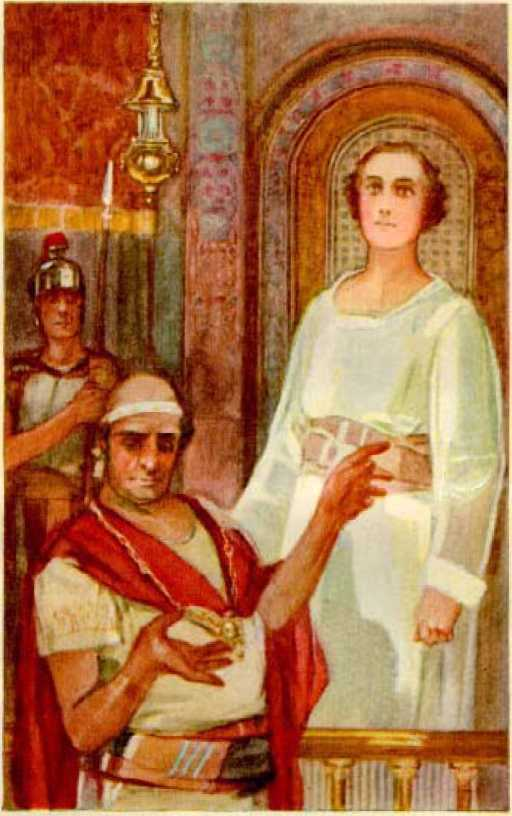GOD'S FAITHFUL WITNESS 1<15
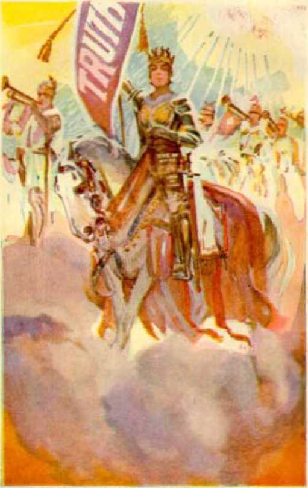TIFF FVTlrFl'1 SKTl TBIT MS KF W SR ISp, 145
with bread. I will also clothe her priests with salvation; and her saints shall shout aloud for joy.”—Ps. 132:1316.
The conclusion is therefore irresistible that it is God’s remnant on the earth that receive the invitation to the wedding supper, respond thereto, and are chosen, and because of faithfulness enter into the joy of the Lord, and begin to drink the wine of joy anew with the Lord in his kingdom. Being now in the secret place of the Most High and continuing there faithfully unto the end, they constantly rejoice from henceforth. (Ps. 91:1-3) “The Lord shall preserve thy going out, and thy coming in, from this time forth, and even for evermore. ’ Ps. 121: 8.
When the remnant come to a realization of the blessed condition that they are permitted by God’s grace to enjoy, in substance they say: ‘This is almost too good to be true, that we should see these glorious things and be so blessed while sojourning here on earth.’ Of course the Lord would foreknow this heart condition, and he caused his angel to write in response thereto: “These are the true sayings of God.” This is another proof that the remnant, or some of them, will really continue actively and joyfully in the service of the Lord and see the name of Jehovah completely vindicated while they are yet on the earth.
“And I fell at his feet to worship him. And he said unto me, See thou do it not: I am thy fellowservant, and of thy brethren that have the testimony of Jesus: worship God: for the testimony of Jesus is the spirit of prophecy.” (Vs. 10) Here is a lesson for the consecrated that many have utterly failed to learn. Since the days of the apostles there has been a tendency to honor and worship men. Doubtless this has led to many of the more prominent elders’ receivin'? special attention from the brethren. When one of these would ascend the platform or pulpit wearing a long, black eoat and a solemn face, members of the congregation would look on in awe and solemnity. When he had finished his speech, much of which probably was not understood, many would say, “Is not he a wonderful man!” Paul resented such treatment and hero worship; but since his day many have liked it and to them it has been a snare, as well as to others. Now in the light from the temple shining upon God’s people the faithful see that creature worship is not right.
John, being so greatly favored by being given the vision and message at the hand of the angel, states that he fell at the feet of the angel to worship him, but the angel of the Lord forbade him to do so. He said to John: “Worship God.” He who is the Creator of heaven and earth, and the Giver of everything that is good, is the One entitled to worship. The lesson that all faithful ones must now learn is that the truth belongs to Jehovah, and not to man, and that no creature is to be honored or worshiped because he is privileged to serve the truth to others. (1 Cor. 3: 5-7) The words of the angel to John show that the angel is the servant of God and of Christ and that those on the earth who constitute the remnant class are likewise servants of God. All of these are charged with the obligation and privilege of performing the duties assigned to them by the Lord. Because these words are so directly connected with the statement of the marriage supper they strongly indicate that the remnant would see and appreciate the meaning of the marriage supper while still in the flesh and would call one another’s attention thereto and rejoice and give glory to God.
Those of the remnant bear the commission of "the testimony of Jesus Christ” and must prophesy if they would be faithful. They must now take an active part in the service of the Lord in telling of God and his kingdom through Christ. It is upon these that the spirit of the Lord is poured out, and those receiving the spirit "shall prophesy”. (Joel 2:28, 29; Acts 2:18) God has spoken, and his faithful servants must prophesy. (Amos 3:8) These constitute the "feet” of Jesus Christ, who must now deliver the message. (Isa. 52: 7, 8) And in giving this testimony the remnant is not to honor the creature, but to give all honor and glory to the Creator.
Jesus emphasized the rule when he said: "If I bear witness of myself [that is, to vindicate my name], my witness is not true.” (John 5:31) It is God’s name and word that must now be vindicated. The name of man is not to be vindicated; and if any one bears witness to the name of man or any creature this is an abomination in the sight of the Lord and in disobedience to the rule laid upon the remnant. Therefore the angel said to John, and says to the John or servant class on earth: "Worship God”; and so shall the remnant do at this time.
ARMAGEDDON
The history of the world bears record of many terrible battles. The history of God’s Word records many fierce battles that have been fought. But the greatest battle ever fought oi’ that ever will be fought is described in these words: "The battle of that great day of God Almighty.” Call to mind that Jehovah caused the waves of the Red Sea to sweep away in a moment the entire army of Egypt; that he caused the angel with one stroke of his sword to slay 185,000 Assyrians; and that these merely foreshadow in a small way what will take place at Armageddon. Then know that the battle of the great day of God Almighty cannot be described in human phrase. Part by part the vision had unfolded to John. lie had seen the vision of “the great whore” and the judgment against her. He had just observed the rejoicing of Christ and his bride, including the remnant, that the day for the vindication of God’s name had arrived and that he had vindicated himself on the Devil religion. And now, looking, he says: “And I saw heaven opened.” (Vs. 11) This means something more concerning the kingdom of heaven and that the revelation thereof is from heaven and not from man. It is one of the visions foretold by Joel, when he wrote: “Your young men shall see visions.” (Joel 2:28) The “old men” dream dreams. Because they have wanted to dream and be at ease many who have made a covenant with God have dreamed that all the fighting is done and that now they must only wait to be taken on flowery beds into heavenly glory. Not so with the “young men”, which means those who are strong in the Lord, strong in faith and giving glory to God. These are now privileged to have a vision of things about to come to pass; and John, speaking for them, tells what they see. He beholds Jesus Christ the great executive officer of Jehovah fully equipped for war and ready to strike the enemy a blow which sweeps the organization of the enemy into everlasting destruction. Let the words which the angel delivered to John, and which he recorded, tell the vision.
“And I saw heaven opened, and behold, a white horse; and he that sat upon him was called Faithful and True, and in righteousness he doth judge and make war. His eyes were as a flame of fire, and on his head were many crowns; and he had a name written, that no man knew but he himself. And he was clothed with a vesture dipped in blood: and his name is called The Word of God. And he hath on his vesture and on his thigh a name written, KING OF KINGS, AND LORD OF LORDS.” (Vss. 11-13, 16) Before considering the description in detail let it here be noted that this nineteenth chapter of Revelation puts into close proximity the marriage of the Lamb, the making ready by the wife, and the beginning of the great battle that deals out the vengeance of Jehovah. Also note that Psalm forty-five puts the same events in juxtaposition with one another. Marriage, joy and war go together in the vindication of Jehovah’s name, and the remnant is to have a part therein. Truly the remnant now on earth is blessed! What an inducement to complete faithfulness!
The description of Jesus Christ ready for the battle and supported in action by his angels is thrilling; and the remnant, now seeing it, looks on in breathless awe. The glorious Son of God is seated upon a white horse, denoting that he rides a righteous war mount and that his cause is a righteous one and will result in victory. The horse symbolizes war equipment that bears the warrior on to a speedy attack. Ever faithful to Jehovah from the beginning, one of the titles given to Jesus is “Faithful and True”. Jehovah appointed him his High Priest or chief executive officer forever and he “was faithful to him that appointed him”. (Heb. 3:1, 2) He made Jesus his chief witness and Jesus has proven himself to be “the faithful and true witness”. (Rev. 1: 5; 3: 7, 14) It follows then that no one could be with him in that war except he be “called, and chosen, and faithful”. All must be conformed to the image of God’s dear Son, and that means to be faithful and true witnesses of Jehovah and not merely to develop oneself in sweetness. (Rom. 8:29) Though Jesus is always righteous, the record says: “Thou hast loved righteousness, and hated iniquity; therefore God . . . hath anointed thee . . , above thy fellows.”—Heb. 1:9; Ps. 45: 7.
He is given the name “Melehizedek”, which means King of righteousness and King of peace. (Heb. 7: 1, 2) He is the great Judge to whom all judgment is committed, with power and authority to execute the same. (John 5:22, 27) The adverse judgments of Jehovah have been written against his enemies, and Christ Jesus must now execute them and cut off the wicked. (Ps. 75:7-10) The description recites that “his eyes were as a flame of Are”; which signifies not only that he sees that the wickedness of the enemy has come to the full, but that his burning judgments shall destroy the enemy.—Ps. 11: 4.
Wearing upon his head many crowns or diadems signifies that he is clothed with all power and authority and dominion, which he has received from Jehovah. He has the diadem which God removed from Israel and which now rightfully belongs to Christ. (Ezek. 21:26) His power and authority extend throughout the universe, and, he being Jehovah’s right arm, the great Jehovah commands: “Let all the angels of God worship him.”—Heb. 1: 6.
He comes as a special and confidential Servant of Jehovah, because John says: “lie had a name written, that no man knew but he himself.” This would mean some very private and confidential office and command he holds from Jehovah. But he has another name plainly displayed and easy to be seen by all. It is written on his vesture on his thigh: "KING OF KINGS, AND LORD OF LORDS.” This denotes that a great duel is about to be fought and that it will for ever decide the rulership of the earth and that Jehovah has sworn that Jesus Christ shall win. The thigh was that part of the body to which the hand was put when swearing to an obligation that must be performed. (Gen. 24:2; 47:29) Jehovah named his beloved Son ‘Priest of the Most High God’ and bound his appointment with his everlasting oath. (Ps. 110:4) Putting his hand to his thigh and upon the thigh of his beloved Son and there writing his name and title is a guarantee from Jehovah that Jesus shall rule forever and that his enemies must fall before him. The name prominently displayed on his thigh discloses that he is fearless, because he is easily identified by the enemy when entering into the fight and makes no attempt to conceal his identity.
Generals of worldly armies usually stay in the rear or hide their identity lest, if they fall in the attack at the hands of the enemy, their armies might be demoralized. The king of Israel on going into a fight thus disguised himself. (2 Chron. 35:22) Not so with Jesus Christ. He leads the fight and invites all the power the enemy may hurl against him. This not only signifies that Jesus is fearless and certain of victory, but inspires faith in his followers that they are not to hide themselves but are to boldly bear the banner of the Lord and advertise the King and his kingdom. (Matt. 10: 32; 1 John 4:17, 18) The name displayed in a place of prominence is oho notice that ‘the Stone rejected by others has now become the chief Stone’ and is now in supreme command. (Ps. 118: 22) It is also notice to all that the time has come for his kingdom to dash to pieces all the kingdoms of Satan and that the kingdom of Christ shall stand forever.— Dan. 2:44.
“His vesture’’ appears to have been dipped in blood even before the battle begins. This blood would suggest the covenant by sacrifice and that his blood poured out in faithfulness to his Father had gained for him the greatest of all things. (Phil. 2: 9-11) This also suggests that only those will be with him who are likewise faithful unto death. (2 Tim. 2:10-12; Rev. 2:10; 17:14) He is the “Logos” of God. Even before he became the ransomer the angels of heaven had called him “The Word of God”. “The Word of God” never returns to him void but accomplishes his purposes. (Isa. 55:11) Jehovah has sent him on a great mission and he cannot fail. He will vindicate the word and name of his Father, and now the time has come for his supreme joy.
John then observes a cavalry division of the Lord’s army in heaven with the great Warrior, and of that he says: “And the armies which were in heaven followed him upon white horses, clothed in fine linen, white and clean.” (Vs. 14) This would include the resurrected saints who are now “forever with the Lord”. These also are on white horses, showing that they are joined with Christ in his righteous warfare that is now to be carried to the limit against the wicked organization of the enemy. This glorious army in heaven would certainly include all the holy angels of heaven that had fought with Michael when Satan was ousted from heaven.—Bev. 9:16; 12:7.
The faithful remnant now on earth would be counted in as a part of this heavenly army, even though their part is but to sing. They are counted from God’s viewpoint as in heavenly places. The garments worn by all the members of that mighty army identify them as fighting in a righteous cause. The remnant on earth must follow the Lamb in battle formation and be subject always to him and to his commandments. They are the ambassadors of war. They do not bear carnal weapons, but they declare God’s war message against Satan and against his organization: “If any man serve me, let him follow me; and where I am, there shall also my servant be: if any man serve me, him will my Father honour.”— John 12:26.
“And out of his mouth goeth a sharp sword, that with it he should smite the nations: and he shall rule them with a rod of iron: and he treadeth the winepress of the fierceness and wrath of Almighty God.” (Vs. 15) The sword is a war implement and the instrument of judgment. The sword proceeds out of the mouth of Christ Jesus. That means that when Christ utters the command to his army to destroy, it shall be done. “For he spake, and it was done; ho commanded, and it stood fast.” (Ps. 33:9) Jehovah ‘has made his mouth [Christ Jesusj his spokesman and sharp sword’. (Isa. 49:2) God’s faithful witnesses on earth utter his sharp judgments, and to that extent their mouths are made a sharp sword. They utter not the words of the remnant, to be sure, but the words they utter are God’s words. When Jesus speaks the command of the great battle it seems certain that the action will be sharp, quick, and decisive. He carries into action the will of God. God needs only to will a thing to be done and it is done.
“And he shall rule them with a rod of iron.” This could hardly be said to apply to the millennial reign of reconstruction by the Lord. Satan’s representatives have ruled the peoples of earth with whips and scorpions. (1 Ki. 12:11) Jesus will not rule in that manner. An iron rule of the people after the destruction of Satan’s organization would be contrary to the plain Word of God. “But with righteousness shall he judge the poor, and reprove with equity for the meek of the earth; and he shall smite the earth with the rod of his mouth, and with the breath of his lips shall he slay the wicked.” (Isa. 11:4) “Behold, the Lord God will come with strong hand, and his arm shall rule for him; behold, his reward is with him, and his work before him. He shall feed his flock like a shepherd, he shall gather the lambs with his arm, and carry them in his bosom, and shall gently lead those that are with young. ’ ’—Isa. 40:10, 11.
The rod of iron is for those “fitted to destruction”. (Rom. 9:22) The iron rule mentioned means the breaking of Satan’s organization. “Thou shalt break them with a rod of iron: thou shalt dash them in pieces like a potter’s vessel.” (Ps. 2:9) The Lord will dash to pieces the nations and break them that hold to Satan. This is the time that ‘he treadeth the winepress of the fierceness of the wrath of the Almighty God’. (Mic. 5:5, 6) “And the great city was divided into three parts, and the cities of the nations fell: and great Babylon came in remembrance before God, to give unto her the cup of the wine of the fierceness of his wrath.”—Rev. 16:19.
REMNANT’S POSITION
Having the assurance that the Scriptures are written for the special benefit of God’s faithful people on earth at the end of the world, we should expect to find something therein referring to the position to be occupied by the remnant about the time of the great battle of Armageddon. God has given the remnant the privilege of proclaiming the fact of the approaching battle. Where, then, will they be when the contending forces are lined in battle array? The vision of John answers the question: “And 1 saw an angel standing in the sun; and he cried with a loud voice, saying to all the fowls that fly in the midst of heaven, Come and gather yourselves together unto the supper of the great God.” (Vs. 17) In this picture the remnant on the earth are “the fowls that fly in the midst of heaven”.
The angel of the Lord, to whom is assigned the duty of giving the command, stands in the light of the glory of God that shines upon his temple, in the same light with which God’s woman Zion is clothed at the birth of The Nation. (Rev. 12:1) The fact that the command is given to the remnant, “Come, and gather yourselves together,” is proof that these are not in darkness, but in the light of God’s great name and of his purpose and in the privilege of being in his service. They must be in the light of God’s favor in order to see and appreciate the fact of the approaching battle. ‘The Lord is a sun and shield’ for them. (Ps. 84:11) The light of God’s glory shines upon all of the servant class. While others are in darkness Jehovah says to his servant on earth; “Arise, shine [be enlightened, margin]; for thy light is come, and the glory of the Lord is risen upon thee.
Thy sun shall no more go down [because not the literal sun, hut the light of God’s glory in the day that the servant class is brought where the angel is standing] ; neither shall thy moon withdraw itself: for the Lord shall be thine everlasting light.”—Isa. 60:1, 20.
The angel’s crying out with a loud voice shows that the servant class on the earth must take up the message and tell it to others. It becomes to them the battle cry mustering God’s remnant on earth together, that they may take their assigned position before the great battle is fought. Their position is in the light and with a clear view of the opposing armies.
The gathering is to ‘‘the supper of the great God”. Therefore it is Jehovah’s supper which he is preparing, and the remnant shall be privileged to partake thereof. It seems certain that ‘‘the marriage supper of the Lamb” merges into ‘the supper of God’. Those who are ‘‘blessed” in partaking of one partake also of the other. Both the Diaglott and the Revised Version say, “To all the birds that fly in mid heaven.” These birds are invited to feed upon the fallen hosts of the enemy’s organization; therefore they must represent the Lord’s remnant on the earth. They fly in mid heaven, and not low, where the fowler’s snare could catch them. ‘The arrows that fly from the enemy do not touch these.’ Evidently these birds are the same as the eagle mentioned in Revelation 8:13 (R.V.): “And I saw, and I heard an eagle, flying in mid heaven.” The faithful are likened unto eagles. ‘They that wait upon the Lord shall renew their strength; they shall mount up as on eagle’s wings.’ (Isa. 40:31) The eagles fly high. ‘They fly away as eagles toward heaven.’ (Prov. 23:5) ‘The way of the eagle is in the air.’ (Prov. 30:19) “Make thy nest as high as the eagle.” (Jer. 49:16) Eagles feed upon the flesh of dead animals. ‘‘For v.’hercsoever the carcase is, there will the eagles be gathered.” (Matt. 24:28) Jehovah said to Job: ‘‘Doth the eagle mount up at thy command, and make her nest on high? She dwelleth and abideth on the rock, upon the crag of the rock, and the strong place. From thence she seeketh the prey, and her eyes behold afar off. Her young ones also suck up blood: and where the slain are, there is she.” —Job 39:27-30.
All these Scriptural illustrations fit the faithful servant class on earth. Since these are gathered to ‘‘the supper of the great God”, this proves that the remnant do no carnal fighting before or at Armageddon. Jehovah, by his mighty Field Marshal, does the fighting and fills the earth with dead bodies. The remnant’s being invited and gathered together for the occasion proves that these must have faith in God and his purposes and gather to the battle site in confidence that Jehovah will be victorious and his name will be vindicated. Hence they will see the battle, and it will be a feast to those who are on the Lord’s side.
‘‘That ye may eat the flesh of kings, and the flesh of captains, and the flesh of mighty men, and the flesh of horses, and of them that sit on them, and the flesh of all men, both free and bond, both small and great.” (Vs. 18) The remnant in the light of God’s glory by faith now see the great slaughter of those composing Satan’s organization. As the gathering to ‘‘the great supper of God” must take place before the battle of Armageddon is fought, therefore the remnant must be brought into the position assigned to them before the final assault is made. They are actually gathered there, ready for the feast when it is fully spread. After John sees the angel raising the ery bidding the fowls to come, then he sees the opposing armies lined up. He sees the forces join battle, and the result. The birds (remnant) are advised of what is about to come to pass and, gathering together, they are witnesses to the battle. Like all birds on such an occasion, they sit in a sheltered or protected place and sing. When the contending forces begin to move into combat these birds set up the song of praise to Jehovah God.
This was beautifully illustrated in the battle of the Israelites against Moab, Ammon and Mount Seir. "And when they began to sing and to praise, the Lord set ambushments against the children of Ammon, Moab, and mount Seir, which were eome against Judah; and they were smitten.” (2 Chron. 20:22) It seems quite certain that some of the remnant will be on earth when the battle of Armageddon is fought and that they will view it from their position of protection. It is a. thrilling prospect!
The remnant is told in advance what the result of the battle will be, and hence by faith they eat the feast in advance. The flesh of kings and captains, mighty men, horses and riders (meaning the organizations and those that direct and control them), free and bond, small and great, all these are food for the feast. It will be a great slaughter; and it will be the last one, because there will be no need to duplicate it. (Matt. 24:21, 22) Satan’s mighty organization, including his armies, navies, great corporations, institutions and organizations of men, and those that control and manage them, shall all fall. "And the slain of the Lord shall be at that day from one end of the earth even unto the other end of the earth: they shall not be lamented, neither gathered, nor buried; they shall be dung upon the ground.” (Jer. 25:33) No longer shall God’s “little Hoek” be birds preyed upon by the Devil’s crowd. The tables will be turned: “Though an host should encamp against me, my heart shall not fear; though war should rise against me, in this will I be confident. ’ ’—Ps. 27: 3.
The eating by the remnant will not be literally consuming the flesh of the dead. What, then, is represented thereby? This great carnage at Armageddon will be God’s open judgment forcibly executed on the enemy organization in vindication of his word and name, and it will figuratively be meat and drink to those who delight themselves in Jehovah. (John 4: 32, 34) It will not be a meat that perisheth. (John 6:27) It will be a joy to their hearts and will give strength to the remnant to go onward in the work and service which God may have for them to do, and will enable them to aid others and to be “in the midst of many people, as dew from the Lord, as the showers upon the grass”. (Mic. 5:7) They will rejoice because of the vindication of God’s name and because the people will now be forever free.
God foreshadowed this symbolic feasting by the cryptic words of his prophet: “Therefore, thou son of man, prophesy against Gog, and say, Thus saith the Lord God, Behold, I am against thee, O Gog, the chief prince of Meshech and Tubal. Thou shalt fall upon the mountains of Israel, thou, and all thy bands, and the people that is with thee: I will give thee unto the ravenous birds of every sort, and to the beasts of the field, to be devoured. Thou shalt fall upon the open field; for I have spoken it, saith the Lord God. And, thou son of man, thus saith the Lord God, Speak unto every feathered fowl; and to every beast of the field, Assemble yourselves, and come; gather yourselves on every side to my sacrifice that I do sacrifice for you, even a great sacrifice upon the mountains of Israel, that ye may eat flesh, and drink blood. Ye shall eat the flesh of the mighty, and drink the blood of the princes of the earth, of rams, of lambs, and of goats, of bullocks, all of them fallings of Bashan. And ye shall eat fat till ye be full, and drink blood till ye be drunken, of my sacrifice which I have sacrificed for you. Thus ye shall be filled at my table with horses and chariots, with mighty men, and with all men of war, saith the Lord God. And I will set my glory among the heathen, and all the heathen shall see my judgment that I have executed, and my hand that I have laid upon them.”—Ezek. 39:1,4,5,17-21.
A picture of the battle of Armageddon was made when David, representing Christ, faced Goliath, who represented the Devil and his organization. Just before he struck the fatal blow against Goliath David said: “This day will the Lord deliver thee into mine hand; and I will smite thee, and take thine head from thee; and I will give the carcases of the host of the Philistines this day unto the fowls of the air, and to the wild beasts of the earth; that all the earth may know that there is a God in Israel.” (1 Sam. 17:4G) And so at the battle of Armageddon, the slain by the hand of the Lord will be the great supper of Jehovah God, a time of feasting and rejoicing to all that love Jehovah.
THE FIGHT
The vision that John had now discloses the enemy ■with all of his hosts gathered together to make war against Jehovah’s anointed. The three unclean spirits with the appearance of frogs have gathered them together for the fight. (Rev. 16:16) A great noise arises from the wicked hosts in defiance of Almighty God and his organization, even as Goliath defied the armies of Israel just preceding his fall. Every part of the mighty organization of the enemy is taking its place in battle array. One looking upon it beholds it is a bloody organization, “full of lies and robbery.” “The noise of a whip, and the noise of the rattling of the wheels, and of the prancing horses, and of the jumping chariots. The horseman lifteth up both the bright sword and the glittering spear.” (Nah. 3: 1-3) The great military commanders of the earth are there; the kings and the other rulers are there swaggering about. The mighty statesmen or politicians are there talking loudly, the ‘lamb horned beast’ is there and always claiming to fight a righteous cause and on the defensive, talking like the Dragon, that is to say, with oily words of duplicity and deceit. ‘His speech betrayeth him.’ He is now properly labeled by the Lord “the false prophet”, because he has prophesied that Satan’s organization would establish peace on earth and make the earth a desirable place for the people to live in, and has counseled the people to give no heed to the words spoken by Jehovah’s witnesses. The combined Anglo-American empire composes this false prophet and occupies a prominent place in the enemy’s army. This false prophet talks with great sounding words and exhibits much outward wisdom, but has little or none. All the rulers, of “Christendom” in particular, arc there, because even now fiftyseven nations are bound together in a League of Nations compact or some other peace pact forming a part thereof; and this gathering includes particularly the United States of America. They are against God and against his Anointed. They are anti-God and anti-kingdom of Jehovah, and therefore the angel commanded John to write, and he wrote:
“And I saw the beast, and the kings of the earth, and their armies, gathered together to make war against him that sat on the horse, and against his army.” (Vs. 19) These are gathered especially to make war against Christ and his army. These seem to be the hordes described by the prophet as “Gog, the land of Magog, the chief prince of Meshech and Tubal”. (Ezek. 38:2) “Gog” has the meaning of ‘mountain, gigantic, and high’, and attacks “the land of the remnant brought back from the sword, gathered from among many peoples”. (Ezek. 38:8, Roth.) The forces of Gog, therefore, seem to fitly represent the exalted or principal ones of Satan’s organization and are against God and his kingdom. They are the ones that rule and control the finances, the military strength, and all the powers of government, and who command all the forces against God’s anointed. “And it shall come to pass at the same time, when Gog shall come against the land of Israel, saith the Lord God, that my fury shall come up in my face. And I will call for a sword against him [prince of Gog] throughout all my mountains, saith the Lord God.” (Ezek. 38:18, 21) That this is the time when God vindicates his name, and therefore the time of the battle of Armageddon, is further shown by the words of the prophet: “And I will plead against him with pestilence and with blood; and I will rain upon him, and upon his bands, and upon the many people that are with him, an overflowing rain, and great hailstones, fire, and brimstone. Thus will I magnify myself, and sanctify myself; and I will be known in the eyes of many nations; and they shall know that I am the Lord. ’ ’—Ezek. 38: 22, 23.
Jehovah’s sword is his mighty Son and executive officer, Christ Jesus. (Isa. 34:5, 6) All the enemy’s forces are gathered together to war and these “make war with the Lamb”. (Rev. 17:14) These forces of wickedness come with great boasting and with extravagant claims, and those who have no knowledge of God look on at this great array and assembly of force and power and say: ‘Who is like unto this great organization? who could successfully make war with the beast ? ’—Rev. 13:4.
At the head of the army of righteousness is Jesus Christ. “A prayer of Habakkuk the prophet upon Shigionoth” says of Jesus Christ: “And his brightness was as the light; he had horns coming out of his hand: and there was the hiding of his power.” (Hab. 3:1, 4) At his right hand is Jehovah, because it is His battle, and His beloved One is to lead the assault and win: “The Lord at thy right hand shall strike through kings in the day of his wrath. He shall judge among the heathen, he shall fill the places with the dead bodies; he shall wound the heads over many countries.” (Ps. 110:5, 6) ‘His glory covered the heavens and the earth.’ (Hab. 3:3) None aside from the remnant on earth see and appreciate this. On the side of Christ Jesus is his mighty army invisible to human eyes, two hundred million strong or more, including the myriads of holy angels. (Rev. 9:16) What an imposing sight to behold! The only ones on the Lord’s side visible to human eyes will be the remnant; and what a small and insignificant company that is! While the enemy’s drums are rolling and his host is shouting defiance, and the “windbags” are speaking loud commands, God’s little company of song birds warble praise to the honor of his name. The words of David must have been prophetic and should find a complete fulfilment on this occasion at Armageddon. The great antitypical David, at the head of his army, and with eyes flashing fire, in response to the defiance of the enemy says: “Thou comest to me with a sword, and with a spear, and with a shield; but I come to thee in the name of the Lord of hosts, the God of the armies of Israel, whom thou hast defied.” (1 Sam. 17:45) The greatest fight of the ages is on! No human words could describe it. Let the divine record tell the results.
“And the beast was taken, and with him the false prophet that ■wrought miracles before him, with which he deceived them that had received the mark of the beast, and them that worshipped his image. These both were cast alive into a lake of fire burning with brimstone.” (Vs. 20) This scripture is proof conclusive that revolutions by the peoples of the nations will never destroy the beastly governments and that all efforts in that direction are without avail to deliver the people. Every effort of the people to release themselves will result only in the governing factors’ making the restraining bands tighter and the burdens to be borne greater. Only the Lord can and will bring their deliverance. The “beast”, which is Satan’s mighty organization in its entirety, is fully alive, and the “false prophet” is alive. Both of these are living, going concerns, and going strong at the time of the battle of Armageddon. They have the peoples and the nations completely in subjection. The entire beastly organization of Satan and the false prophet part thereof, to wit, the Anglo-American empire, and which leads the nations of the earth, are much alive, are active and going concerns, and oppose God’s anointed King and kingdom and are doing the bidding of Satan the Devil. The Lord arrests or captures these wicked and oppressive organizations alive and ‘hurls them alive into a lake of fire burning with brimstone’. Symbolically this means that God will completely destroy them while in their pomp and glory and power. They could have gone on indefinitely except for the exercise of God’s power through Christ, The people could never destroy the devilish rule of earth. God will do it.
Another prophet of God describes the result of the fight. (Ezek. 38:22, 23) “The Lord reigneth, let the earth rejoice; let the multitude of isles be glad thereof. Clouds and darkness are round about him: righteousness and judgment are the habitation of his throne. A fire goeth before him, and burneth up his enemies round about.” (Ps. 97:1-3) “But the wicked shall perish, and the enemies of the Lord shall be as the fat of lambs; they shall consume; into smoke shall they consume away.” (Ps. 37:20) “For Tophet is ordained of old; yea, for the king it is prepared: he [Jehovah] hath made it deep, and large [sufficient in which to destroy Satan’s organization]; the pile thereof is fire and much wood: the breath of the Lord, like a stream of brimstone, doth kindle it.” (Isa. 30: 33) At the battle of Armageddon the Lord gives command and at his word it is done, and Satan’s powerful organization goes into everlasting destruction. Fire and brimstone symbolically represent complete destruction or annihilation.
There are multitudes that support Satan’s organization, having the “mark of the beast” in their hand or in their forehead. These will continue to align themselves on the side of Satan at Armageddon. When the organization of Satan falls they will weep and cry and, knowing their own guilt, will expect to be the next to be destroyed. (Rev. 18:15) These are described as “the remnant” of Satan’s organization, that is, those remaining after the fall of Satan’s powerful organization. Therefore the record is:
“And the remnant were slain with the sword of him that sat upon the horse, which sword proceeded out of his mouth; and all the fowls were filled with their flesh.” (Vs. 21) These have opposed the Lord and his work and supported Satan and are guilty of death, but not necessarily the second death. They have said, “There is no death,” but now they must taste it for themselves. The organization of Satan will never arise, but these individuals may have the privilege of hearing the truth under favorable conditions and, obeying it, may live. The judgment is written against them, and the Lord’s Word like a destructive sword consigns these servants of Satan to death. His sword proceeds out of his mouth, and these remaining after the fall of the great organization die. “With the breath of his lips shall he slay the wicked.” (Isa. 11:4) This will end the great organization that has encumbered the earth and oppressed the people and reproached the name of Jehovah God.
“And all the fowls were filled with their flesh.” God’s true witnesses on the earth have long been praying that Jehovah would crush Satan’s wicked organization, deliver mankind, and vindicate his name. “The desire of our soul is to thy name.” (Isa. 26: 8) The vindication of Jehovah’s name is of paramount importance to all things. The fall of the enemy organization at Armageddon will be a vindication of his name, and that will call forth a song of praise from all on the earth who love righteousness, and particularly from those of the remnant. This song was foreshadowed by the song that Moses and those with him sang at the time of the overthrow of the Egyptian hosts. (Ex. 15:1-21) Therefore “the fowls that fly in the midst of heaven”, God’s faithful remnant, will enjoy a great feast and be filled with joy and rejoicing because the organization the enemy of God lies dead and the great and glorious name of the Most High is vindicated.
CHAPTER XII
(Revelation, Chapter 20)
EHOVAH is just, wise, powerful and loving. His law is perfect and his testimony is sure. His commandments are pure and his judgments are true and righteous. (Ps. 19:7, 9) Jehovah is consistent and his creatures can wholly and confidently rely on his expressed purpose. He fixes his rules for the government of his creatures, and these rules never change, because God is unchangeable (Mal. 3:6), possessing all wisdom: “Known unto God are all his works, from the beginning of the world.’’ (Acts 15:18) That must of necessity mean that Jehovah can withhold from himself knowledge if he so desires, and that he does so. God has not arbitrarily fixed the destiny or inevitable lot of any creature from the beginning of that creature, because to do so would mean that the creature would have no opportunity to freely exercise his own will. To permit him to take a free course enables the creature to demonstrate his loyalty or lack of loyalty to Jehovah God. God did predestinate that he would have a kingdom or royal family composed of creatures, but he did not arbitrarily predestinate the individuals which should go to make up that reigning family. He has made his creatures and endowed them with the power to choose, and each one may choose one of two courses of action and take the consequences. Thus the creature has much to do with fixing his own destiny.
Jehovah made Adam a perfect creature and said to him, in substance: ‘All the things of this earth are for your comfort and pleasure and enjoyment if you do good. If you take a wrongful course you shall lose all, for in the day that you sin you shall surely die.’ (Gen. 2:17) That statement of Jehovah fixed an unchangeable rule that must of necessity apply to all his intelligent creation. Lucifer was in Eden and, being man’s overlord, he was bound to take notice of God’s announced law or rule of action. The course that Lucifer pursued shows that he reasoned in this manner: ‘If Adam does wrong and God kills Adam, as his law announces, that will prove that God’s creation is imperfect and that his name is therefore not worthy to stand supreme above all. If Adam does wrong and God does not kill him, that will make God out a liar and his word cannot be relied upon. In either event I shall be able to show other creatures that Jehovah is not supreme in wisdom and power and worthy to be acknowledged above all, but that I am entitled to be equal to him; therefore I shall draw after me a following and “I will be like the Most High” and shine equally as he shines.’ Satan thus put at issue the name and word of Jehovah God.
Being covetous of that which Jehovah rightfully possesses he rebelled against God and became wicked from that very moment. (Isa. 14:13) His final destiny was fixed from that very moment unless he should find some way to retrieve his action and obtain forgiveness. The Scriptures show that he has never attempted to find a way, but, on the contrary, has ever reproached the name of God and denounced him as untruthful. The names that God thereafter assigned to him, to wit, Dragon, Satan, Serpent, and Devil, testify to his wickedness.
Satan said Jehovah could not put a man on earth who would maintain his integrity with God. Had God killed Satan immediately when he started on his wrongful course of wickedness, the full opportunity to prove the supremacy of Jehovah, his name and his word, and his ability to put a man on earth who could maintain his integrity, would not have been realized. God’s wisdom permitted Satan to go to the full in wickedness. His due time must come to fully restrain Satan and all workers of iniquity. Satan has built up a powerful and wonderful organization that has caused all creation to marvel and has led away many who knew not God. We see that at Armageddon the great organization of Satan and his agencies shall be destroyed. But how about Satan himself? He is not destroyed there during the battle. Why does not God kill the Devil at Armageddon? Let the reader now carefully study chapter twenty of Revelation. It discloses, in harmony with God’s law originally announced to Adam, what is the destiny of the wicked and what is the destiny of the good. That is the great lesson taught by this chapter. It is another proof of the supremacy of Jehovah, the unchangeableness of his law, and a further vindication of his name and word.
Armageddon will mark the final end of the beastly organization of Satan that has long oppressed mankind and reproached God’s name. That “beast”, with its “false prophet”, is to be hurled into everlasting destruction while still a living and going concern. It appears that when the fight ends Satan still survives, and John records another part of the great drama as it unfolded.
“And I saw an angel come down from heaven, having the key of the bottomless pit and a great chain in his hand. And he laid hold on the dragon, that old serpent, which is the Devil, and Satan, and bound him a thousand years, and cast him into the bottomless pit, and shut him up, and set a seal upon him, that he should deceive the nations no more, till the thousand years should be fulfilled; and after that he must be loosed a little season.”—Vss. 1-3.
This statement of the divine record in a general way proves the following things: That Satan has been cast out of heaven and is at the earth, where Armageddon is fought; that the binding of Satan takes place after Armageddon is fought; that merely telling the truth does not bind Satan; that John had a vision of the binding, and therefore that the class represented by John will discern the binding of Satan when it takes place.
Christ Jesus is the angel that comes down from heaven and binds Satan. He is the one possessing the key to the bottomless pit or abyss, and therefore the only one that could put Satan into it. (Bev. 9:1, 2) He is the mighty One who has the keys of death and hell and the key of David, which further identifies him as God’s great executive officer.—Rev. 1:18;3: 7; Isa. 22:22.
It seems quite certain that the “key of the abyss” and the ‘key of hell’ are one and the same. Jesus was not left in hell, but was brought up out of the abyss (Greek). (Rom. 10:7, Dim/.; Ps. 16:10) The “chain” denotes the means employed by Christ Jesus against Satan to cause his activities to cease. This does not take place while the battle is on; but, immediately following, the Lord Jesus lays hold of the old enemy and by actual force renders him inactive.
The names given to the enemy that is bound, to wit, Dragon, Serpent, Satan, and Devil, clearly identify him as chief amongst the wicked ones. As Dragon he has been the chief mouthpiece or official spokesman of his wicked organization that has devoured mankind. The Dragon seen in the vision had seven heads, and the complete expression of that wicked organization is found in Satan himself. It is interesting here to now note that the British empire, including America, is the seventh world power, and that it has been in those two countries where the greater amount of witness work has been done which was foreshadowed by the prophets Elijah and Elisha. To the faithful workers of the Lord, foreshadowed by his prophets, he says: “I know thy works, and where thou [Bergamos—Watch Tower] dwellest, even where Satan’s scat is.” (Rev. 2:13) The same empire is made “the false prophet” or official spokesman of the Devil on earth and operates chiefly where the testimony of Christ is given in the earth.
Satan is called the “old Serpent” because he has at all times been deceiving mankind. (2 Cor. 11:3) He has bitten and poisoned mankind. (Ps. 58:4; Eccl. 10:8) He is called the Devil because he has maligned, slandered and reproached God and everyone that has been faithful and true to God. He is the chief of all liars, and a murderer, and the great oppressor.— John 8:44; Acts 10: 38.
As Satan, he is the great opposer of light and ‘is the prince of darkness’. He hinders God’s servants in their work and maintains his own synagogues on the earth with which he opposes the truth. (Rev. 2:9) He works with power and lying and in signs and wonders. (2 Thess. 2:9) The Lord Jesus Christ, the great executive officer, lets Satan see his “beast” and “false prophet” destroyed; then Satan must realize that the crucial hour has come and that he is next. Then Christ Jesus lays hold of the old wicked enemy and securely binds him. Of what does the binding of Satan consist?
DEATH
The binding does not take place ‘before his house is destroyed’, but afterwards. It is not the message of truth that does the binding, because Satan has no regard for the truth. “The God of peace shall bruise Satan under your feet shortly”; and this Jehovah does by and through his chief executive officer, Christ Jesus. This he does at the beginning, and not the end, of the millennial reign of Christ, as indicated by the word shortly in this text. (Rom. 16:20; John 5:27) The word “bruise” here means to crush, and denotes that the crushed one would become lifeless. The great weight of authority found in the Scriptures proves that immediately following Armageddon, and before the beginning of the reconstruction reign of Christ, Christ Jesus, the great executive officer, will crush and kill Satan, and that in this manner Satan will be bound. In support of this conclusion the following is offered.
Bear in mind that the vindication of Jehovah God’s word and name is of paramount importance. Punishment inflicted at the hand of Jehovah is not for the purpose of venting a malicious spleen. Such a thing, therefore, is impossible with Jehovah. The purpose is to prove to all intelligent creation that Jehovah
God is supreme and that there is none other that can grant to creatures everlasting life. The vindication of Jehovah’s name is therefore for the good of mankind and of all creation. God alone can bring lasting benefits to his creatures. If his word is untrue, then his name is not worthy of praise and none could have complete confidence therein. He affords all his creation full opportunity to see that his word is true and that his name is worthy of praise, and this for their good.
God had declared his fixed rule that only those who obey should have everlasting life and that the final end of the wicked is death. Satan’s great crime was the first lie, to wit, ‘There is no death.’ By that lie he has deceived many and brought great reproach upon God’s name. What would be the most complete answer to Satan’s lie? To forcibly put Satan to death in the presence of witnesses, and this after Satan has seen his own organization destroyed. Therefore Jesus Christ alone falls upon him and kills him and consigns him to the uttermost parts of hell. This he does in the execution of the judgments written against him, to wit: “Thou shalt be brought down to hell [sheol, abyss, or bottomless pit], to the uttermost parts of the pit.” (Isa. 14:15, Z?.V.) The judgment of God has been written that Christ Jesus shall destroy the works of the Devil, which he does destroy at Armageddon. (1 John 3:8) The judgment is also written that he shall destroy Satan himself by death thereafter (Heb. 2:14); that is to say, death is the means by which Jesus brings Satan to nought. “Since then the children arc sharers in flesh and blood, he also himself in like manner partook of the same; that through death he might bring to nought him that had the power of death, that is, the devil.” (Heb. 2:14, R.V.) “Seeing therefore the children have received a fellowship of blood and flesh, he also in like manner took partnership in the same, in order that through death he might paralyse him that held the dominion of death, that is, the Adversary.” (Heb, 2:14, Roth.) It is by this act of death inflicted upon Satan that the ‘seed of the woman shall bruise the head of the serpent’. (Gen. 3:15) The only reasonable construction that can be put upon Hebrews 2:14 is this: that Christ Jesus, who partook of flesh and blood, will, by inflicting the death penalty upon Satan, destroy him. Such is the fixed rule of Jehovah concerning all the wicked.
What good purpose could be served by imprisoning Satan alive and in the state of consciousness during the period of a thousand years? He surely would not think over the matter of his wickedness and repent and reform. Jehovah, of course, knows this. There is nothing in the expressed law of God that provides for the imprisonment in consciousness of his creatures. There is no reason to think that God has a special law for the arch wicked one that is contrary to or inconsistent with the statement of his law concerning the wicked in general. Knowing that the laws of God are unchangeable and apply to all offenders alike, mark then the provision of that law or rule of action applied both to the good and to the wicked: “For they shall soon be cut down like the grass, and wither as the green herb. For evil doers shall be cut off: but those that wait upon the Lord, they shall inherit the earth. For yet a little while, and the wicked shall not be; yea, thou shalt diligently consider his place, and it shall not be. But the meek shall inherit the earth, and shall delight themselves in the abundance of peace. The wicked plotteth against the just, and gnasheth upon him with his teeth. The Lord shall laugh at him; for he seeth that his day is coming. The wicked have drawn out the sword, and have bent their bow, to east down the poor and needy, and to slay such as be of upright conversation. Their sword shall enter into their own heart, and their bows shall be broken. But the wicked shall perish, and the enemies of the Lord shall be as the fat of lambs: they shall consume; into smoke shall they consume away. Depart from evil, and do good; and dwell for evermore. For the Lord loveth judgment, and forsaketh not his saints; they are preserved for ever: but the seed of the wicked shall be cut off. Mark the perfect man, and behold the upright: for the end of that man is peace. But the transgressors shall be destroyed together: the end of the wicked shall be cut off.” (Ps. 37: 2, 9-15, 20, 27, 28, 37, 38) “The Lord preserveth all them that love him: but all the wicked will he destroy.” (Ps. 145:20) When the Lord expressly states that the wicked shall be cut off, and since Satan is “that wicked one”, it would be inconsistent to say that God’s law provides that Satan should be put somewhere in a state of consciousness, and held in prison, during the thousand-year reign of Christ.
In symbolic phrase Christ Jesus the great angel uses a chain to bind Satan. A chain is sometimes used as a symbol of death and destruction. Against Satan’s organization it is written: “Make a chain; for the land is full of bloody crimes, and the city is full of violence. Destruction cometh; and they shall seek peace, and there shall be none.” (Ezek. 7:23, 25) (See also Psalm 149: 8.) The binding of Satan with a
UVD'd rfBFECT MAS PafV ISO
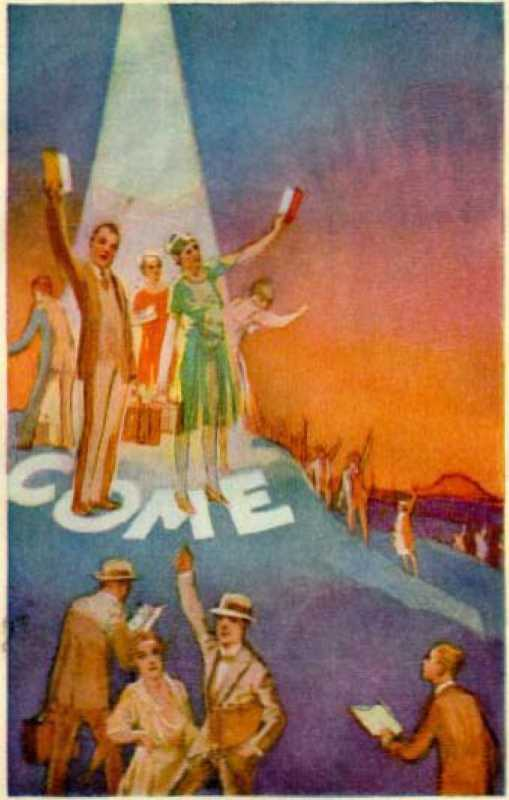THE ORA CIO INVITATION Piijjr 279
great chain, therefore, well symbolizes the death of Satan for a time and during the reign of Christ. Jesus was for a time held in death until God released him therefrom. (Acts 2:24) When Christ puts Satan in death he will be held there as securely as if bound by a great chain, and until God’s due time to take other action concerning him.
When Christ puts Satan into the pit he shuts him up and puts a seal over it, as this Revelation record shows. This seal bears Jehovah’s stamp of authority. It further* says that at the time Satan was cast out of heaven he was not to be killed at that time, but now his slaying and scaling up in his tomb is done by the approval of Jehovah. Satan caused his agents to put a seal on the tomb of Jesus when Jesus was crucified and buried, but that seal was of no avail. Now Satan is to be sealed in his tomb, and no power can break the seal contrary to God’s will. One of the purposes of thus putting Satan out of the way is that he might not deceive the nations during the thousand-year reconstruction period. Satan is the chief deceiver and wicked one and must be included with all others who have deceived and who are cut off.
“He that worketh deceit shall not dwell within my house: he that telleth lies shall not tarry in my sight. I will early destroy all the wicked of the land, that I may cut off all wicked doers from the city of the Lord.” (Ps. 101:7, 8) The “deceiver” and “antiChrist” are cleared out so that reconstruction can go on without hindrance and to the glory of God. At the end of the period of reconstruction Satan is loosed for a short season. At that time mankind will have been restored and will be publicly subjected to a test for their own benefit. There is, however, another reason for so loosing Satan, and that will be considered under verse seven.
THE FAITHFUL
The Lord now makes clear the fixed destiny of all the faithful ones who endure the test and hold fast their integrity to the end. Job maintained his integrity under severe test, and in this the faithful who do good were foreshadowed. The Lord commends the patience of Job and thereby shows that this is the course that the faithful must take: “Behold, we count them happy which endure. Ye have heard of the patience of Job, and have seen the end of the Lord; that the Lord is very pitiful, and of tender mercy.” (Jas. 5:11) The Lord makes it dear that those who remain true and stedfast in their devotion to him under the most severe pressure from the enemy and who will suffer with Christ Jesus even unto death shall reign with Christ Jesus and be forever free from the enemy. Therefore he caused John to write, and the John class now to see the meaning of, these words, to wit: “And I saw thrones, and they sat upon them, and judgment was given unto them: and I saw the souls of them that were beheaded for the witness of Jesus, and for the word of God, and which had not worshipped the beast, neither his image, neither had received his mark upon their foreheads, or in their hands; and they lived and reigned with Christ a thousand years. ” —Vs. 4.
When speaking with his disciples concerning the covenant his Father had made with him for the kingdom, Jesus said: “Ye are they which have continued with me in my temptations. And I appoint unto you a kingdom, as my Father hath appointed unto me; that ye may eat and drink at my table in my kingdom, and sit on thrones, judging the twelve tribes of Israel.” (Luke 22:28-30) This is further proof that only those who endure the tests as Jesus did and who prove their faithfulness unto death shall reign with him.
These thrones here mentioned have no reference to earthly thrones, but to the throne in heaven. “I beheld till thrones were placed, and one that was ancient of days did sit: . . . his throne was fiery flames, and the wheels thereof burning fire.” (Dan. 7: 9, Tl.V.) ‘‘And Jesus said unto them, Verily I say unto you, That ye which have followed me, in the regeneration, when the Son of man shall sit in the throne of his glory, ye also shall sit upon twelve thrones, judging the twelve tribes of Israel.” (Matt. 19:28) Those who are thus privileged to sit with the Lord on his throne are overcomers, and to them the promise is made: “To him that overeometh will I grant to sit with me in my throne, even as I also overcame, and am set down with my Father in his throne. ’ ’ (Rev. 3:21) These sit with Christ for the purpose of judgment: “Until the Ancient of days came, and judgment was given to the saints of the Most High; and the time came that the saints possessed the kingdom.”—Dan. 7: 22.
The statement is: “I saw the souls of them that were beheaded for the witness of Jesus, and for the word of God.” This word “souls” has no reference to human bodies, but it refers to the glorious new creatures in heaven in form like to that of Jesus. (1 John 3:2) The very language of this verse shows that not every one that sits upon the throne with Christ Jesus was beheaded; therefore the meaning could hardly be limited to those who have surrendered their heads to take Christ as their Head at the time of being spirit-begotten. To be sure, all the new creatures in Christ are under Christ Jesus as the Head of the body; but that is manifestly not the meaning of the text here under consideration.
John was exiled for the same “crime” of being a witness, as he states: “I John . . . was in the isle that is called Patmos, for the word of God, and for the testimony of Jesus Christ.” (Rev. 1:9) John the Baptist was beheaded while in prison and because he had been a witness, and he foreshadowed the faithful followers of Christ Jesus. James was killed with the sword. (Acts 12:2) ‘Beheading’ is a punishment the enemy has delighted to inflict upon those who bear faithful witness to God. (Gen. 40:19) It is therefore quite clear that ‘the beheaded ones’ here has reference particularly to those who have suffered martyrdom for the cause of Christ.
Furthermore, the faithful remnant seems to be specially mentioned in this verse, for the reason that the verse uses the words: “Which had not worshipped the beast, neither his image, neither had received his mark upon their foreheads, or in their hands.” “The beast,” to be sure, existed through the Christian era; but “the image of the beast” did not come into existence until the latter part thereof. ‘The two-horned beast’ (Anglo-American Empire) came into existence in 1600 A. D., and it was the agency, employed by Satan, that “causeth the earth and them which dwell therein to worship the first beast, whose deadly wound was healed. And he causeth all, both small and great, rich and poor, free and bond, to receive a mark in their right hand, or in their foreheads: and that no man might buy or sell, save he that had the mark, or the name of the beast, or the number of his name.” —Rev. 13:12, 16, 17.
In 1917 and 1918 the enemy came against God’s faithful people on earth with “axes”, as in an attack upon a forest, to cut them down: “A man was famous according as he had lifted up axes upon the thick trees. But now they break down the carved work thereof at once with axes and hammers. They have cast fire into thy sanctuary; they have defiled by casting down the dwellingplace of thy name to the ground. ’ ’—Ps. 74: 5-7.
It was within that period of time that God’s “two witnesses”, foreshadowed by John the Baptist and Elijah, were killed or beheaded. This specifically applied to the remnant, or those who go to make up the remnant. There are also those ‘souls under the altar that were slain for the Word of God and for the testimony which they held’. (Rev. 6:9) The description of beheading therefore seems to have reference specially to the faithful unto death rather than to those who make a consecration and are brought into Christ as the Head over the church. It is those who are in Christ and are “faithful unto death” that are promised the blessing of joint heirship with Jesus Christ. (Rom. 8:16, 17; 6: 5; 2 Tim. 2:11, 12) These refuse to worship the “beast” or his “image” or to make any compromise either directly or indirectly with Satan’s organization, and are therefore free from any marks of the “beast” or the “image” in their foreheads or in their hands. “And they lived [came to life, Rot'll., margin] and reigned with Christ.” Their destiny is* fixed with Christ for ever because of their faithful and unswerving devotion to Jehovah.
This would not mean that the 144,000, or even any of them, would have to begin reigning with Christ at the same time he is placed upon his throne in 1914. His term of rulership is a thousand years, and all who reign with him shall reign within that period of time. Other scriptures show that Christ’s reign begins before the faithful saints are resurrected and before the remnant is brought forth. (Rev. 12:1-10; Isa. 66: 7, 8) The “thousand years’’ refers exclusively to the reign of Christ Jesus over mankind. Those that are with him in his kingdom are the called, the chosen, and the faithful unto death. (Rev. 2:10) The point here specially emphasized is the destiny of the faithful followers of Christ Jesus and that that destiny is life everlasting because of faithfulness to God. This is further supported by the following: “Blessed and holy is he that hath part in the first resurrection: on such the second death hath no power, but they shall be priests . . . with him a thousand years.”—Vs. 6.
This is one of the beatitudes of Revelation, as heretofore mentioned. These are blessed who have a part in this resurrection. Christ Jesus has the best or chief resurrection and these are resurrected as members of his body. It is therefore properly called the best resurrection or chief resurrection. He is “the firstborn from the dead”. (Col. 1:18) This resurrection is limited to Christ and all those of the elect servant, and there is a glory attached to it that no others receive. (Isa. 42:1-8) These are not only blessed, but holy. Holiness is one of the requirements of the elect servant class. That means a complete devotion to God; and their sanctification is made complete by having a part in the first resurrection. (1 Thess. 4:7) To have a part in the first resurrection will make all such supremely blessed and happy. “For thou hast made him most blessed for ever: thou hast made him exceeding glad with thy countenance.” (Ps. 21:6) “Blessed is the man thatendurethtemptation [tests]; for when he is tried [and maintains his integrity with God and is therefore ‘approved’, jR.P.], he shall receive the crown of life.” (Jas. 1:12) “On such the second death hath no power.” This statement made as it is in connection with the binding of Satan in death, the inference may be properly drawn therefrom that Satan is to die the second time. By way of contrast it shows that these faithful ones shall not die the second time or in the second death. These faithful ones are blessed beyond the danger of the second death. They are granted immortality, which only God has and gives to the Christ. (1 Cor. 15:53) This class have resisted Satan to the end and sted-fastly held their integrity, and there is no further question about their continuing in faithfulness and obedience unto God, and Satan shall not again come to them. Satan, now dead in the abyss, is to be released a little season and then die the second time; but not so with the faithful. God here sets forth side by side the destiny of the wicked and the destiny of the good and faithful.
These faithful overcomers shall be “priests of God and of Christ”. Jehovah has made Christ Jesus ‘High Priest for ever after the order of Melchizedek’. (Heb. 7:21) Those who are made members of the glorious body of Christ are to be, and are, the underpriests of Christ; and since the second death can have no power over them, they have an endless or indissoluble life and their days shall not end. (Heb. 7 -. 3-16) Jesus has myriads of angels that have always been faithful, but they have not the same relationship to him as the overcomers. These, made members of his body, shall be his favored or confidential servants and with him be the servants of Jehovah God forever. The thousand-year reign is limited to things pertaining to the earth. (Rev. 1:6; 5:10) When the affairs of mankind on earth have been administered, then Christ will continue to serve Jehovah in some other place of favor, because he is God’s High Priest forever. The destiny of those who “have done good” is fixed for ever and is endless happiness.
Jehovah purposed from the beginning that such should be the destiny of the faithful servant class, and he puts individuals in this class only after they have proven faithful and have stedfastly maintained their integrity. Anyone should be able to see that this great reward is not given by reason of the fact that any such develop a sweet and beautiful “character”. In the first place, no man can bring himself up to perfection. He should do his very best to be pure in word and thought and action; but after he has done all possible for him, then much more is required. His imperfections due to inherited weaknesses God deals with mercifully, but there is no excuse for any halfhearted devotion to Jehovah. What is required of those who shall receive a place in the kingdom is absolute and complete devotion to God as his servants. For this reason the remnant urge upon their brethren the great necessity of faithful devotion to the service of God now in keeping his commandments and in giving the testimony of Jesus Christ,
At this point verses five, seven, eight, nine and ten are purposely passed by until consideration is given to the destiny fixed by Jehovah for the people of earth in general. We should not expect to find the record written in chronological order. There are instances in which the Lord sccffis to place some texts in a parenthetical position so that this hides the true understanding thereof until his due time to reveal it. In this chapter Jehovah shows the fate of the wicked and the good who have had an opportunity up to the beginning of the millennial reign of Christ. Mankind in general, however, has had no opportunity of proving to which class they would be consigned, and hence these are brought forth and are judged according to their works.
WORLD’S JUDGMENT
Jehovah has appointed a day in which he will judge the world in righteousness by Christ Jesus, the great Judge. (Acts 17:31) In this period of time Satan will not be permitted to interfere; and this is done for the manifest purpose of giving mankind in general the opportunity to have a full and fair trial. Therefore it is written: “And I saw a great white throne, and him that sat on it, from whose face the earth and the heaven fled away; and there was found no place for them. ’ ’—Rev. 20:11.
The throne here mentioned is Jehovah’s throne and is symbolized by the words ‘ ‘ great white throne ’ ’, the foundation of which is justice and judgment. (Ps. 89:14) Jesus has been granted the privilege of sitting upon this throne, and his associates who are faithful overcomers sit with him there. (Rev. 3:21) Jehovah is the great “Judge of all’’. (Heb. 12:23; see also Rev. 7:10; 19:4) Jesus sits with his Father, and it is therefore called “the throne of God and of the Lamb”. (Rev. 22:1) Jesus Christ is the chief officer who does the judging, but he does so in the name of Jehovah. (John 5: 26, 27) From the face of this great white throne of righteousness ‘the earth and the heavens fled away, and there was found no place for them’. This proves that the judgment of the world follows immediately after the destruction of Satan’s world. The old heaven and earth shall not be transferred to some other place, but must be banished for ever. (Isa. 51: 5, 6) The great tribunal for the trying and judging of mankind in general being established, it is the time in which the Lord brings forth the dead.
“And I saw the dead, small and great, stand before God [standing before the throne, B.V.]; and the books were opened: and another book was opened, which is the book of life: and the dead were judged out of those things which were written in the books, according to their works.” (Vs. 12) “The dead” here mentioned seem definitely to be limited to those who have not heretofore received a knowledge of the truth. All must be brought to a knowledge of the truth before they have judgment. (1 Tim. 2:3-6) This would include all those who have passed through the great time of trouble and remain alive on earth but who are “dead in trespasses and sins”, and would include those billions who have gone into death entirely ignorant of God’s purposes. This would include infants, young, old, small and great, sane and insane. All of these must now be brought forth from death for judgment. (John 5: 29, 30) This is the work of the thousand-year reign of reconstruction by Christ. The faithful men mentioned in Hebrews eleven do not seem to be included here, because they get “a better resurrection” and are made “princes in all the earth” and doubtless will be in the earth performing their assigned duties at the time this judgment of the world in righteousness begins and progresses.
“The books were opened.” Evidently these books are not yet written, except as to the general rules defining tho destiny of those who do wickedly and those who do good, and which are set down in the Bible and will never be changed. The books of the new government will doubtless state the rules so clearly that they can be understood by all. The books being open, all will understand the terms of the trial and judgment. The Bible is written specifically for the benefit of tho church; but the fixed rules thereof are not subject to change, and the world must be informed of these fixed rules. “When thy judgments are in the earth, the inhabitants of the world will learn righteousness.” The books must therefore be considered as books of instruction for the information of tho people, and will be a full statement of the law and statutes of the new covenant.
“The book of life” is another book, manifestly for the purpose of enrolling the names of those found worthy of the gift of life everlasting. (Vs. 15) This is not a book of instruction. After the people start upon the great “highway” their names will doubtless be enrolled in this book of life. When they will have walked in the right way to the end thereof in full obedience, they will receive life everlasting and their names will not be blotted out. Any proving unfaithful, their names will be blotted out. This book of life would not include any of those Avho have died wilfully wicked and who sinned wilfully against God’s law. There arc those who have wilfully brought reproaches upon God and Christ, and concerning whom it is written: “Add iniquity unto their iniquity; and let them not come into thy righteousness. Let them be blotted out of the book of the living, and not be written with the righteous.” (Ps. 69:27, 28) God will judge the world in general with these fellows clear out of the way.
The judgment of each individual will be according to his works: “Judged out of those things which were written in the books, according to their works.” The people will be made acquainted with what is written in God’s books of instruction, and these things will be ‘written in the heart and mind’ of the teachable and obedient ones. (Jcr. 31:33) That will mean that such will do God’s will. “Their works” will not include their works prior to Armageddon and the inauguration of the new covenant, because it is written: “For I will be merciful to their unrighteousness; and their sins and their iniquities will I remember no more.” (Heb. 8:12) The ransom sacrifice being applied for the benefit of all mankind in general, each one will start without his past record against him; but he will be required to make a good record. “Their works” will consist of their obedience to the law of God promulgated and enforced by Christ during his reign. (Matt. 12:33) Sins and iniquities wilfully committed against light, whether before or during the Millennial reign, will not be forgiven. (Matt. 12: 31, 32) “Their works” will be such as they have obediently done and performed. Faithfulness in doing right will be the fruits by which they will be judged. (Matt. 12:33) For the purpose of carrying out this judgment there shall be a resurrection of the dead from the grave, or condition of death.—John 5:29; Acts 17: 31; 1 Cor. 15: 22-24.
By far the greater number of mankind have gone into death totally ignorant of God and his purposes of redemption and deliverance through Christ Jesus’ sacrifice. These must all be awakened out of death and given a knowledge of the truth and thereby given an opportunity to prove themselves according to God’s fixed rules. There have doubtless been many also that have been guilty of a measure of wilfulness and have sinned against light. Some have had a little light, while others have had more light. The thousandyear period of judgment is devoted to the instruction, trial and judgment of those who have never had an opportunity to know the truth. Verses eleven and twelve therefore seem to be limited exclusively to such.
“REST OF THE DEAD”
‘'But the rest of the dead lived not again until the thousand years were finished.” (Vs. 5) The weight of authority holds that the words above quoted of this verse are spurious; and if so, then they should not be considered. The Vatican manuscript No. 1209 does not contain Revelation at all. Manuscript No. 1160 omits those words. A footnote of the Emphatic Dia-glott says: “These words were probably omitted by oversight in Vat. MS. [No. 1160], as they are found in [Alexandrine MS.] [Vatican MS., 700 A.D.] [Codex Ephrtemi].” There is a doubt about the authenticity of the text, but it may be considered in connection with other portions of this chapter which are known to be authentic, and fully harmonized therewith. We need not here consider the resurrection of the “great multitude” or “tribulation” class, for the reason that not very much is said anywhere in the Scriptures about that class. Their deliverance into life, which must necessarily be by resurrection, is specifically set forth in Revelation 7:14-17. That would be sufficient to dispose of them. Nor are we to take into consideration here the faithful prophets of old, because it is expressly stated that these shall be “made perfect” when the church is completed, and they shall have “a better resurrection” than the world in general.—Heb. 11.
The twentieth chapter of Revelation appears to deal specifically with the church, which partakes of “the first resurrection”, and with the world in general, the destiny of the faithful ones being that of life on earth, and of those that sin wilfully that of being destroyed and classed as the wicked. That Satan is to be released at the end of the thousand-year judgment of the world in general there cannot be the slightest doubt, because the Scriptures specifically so state. Since the text here says, ‘The rest of the dead lived not again until the end of the thousand years,’ this can be properly applied to all who have been judged unworthy of life prior to the beginning of the millennial reign of Christ and who have died in wickedness, but who will be brought forth with Satan at the end of the Millennial reign for the purpose of final judgment and execution according to their works. In this connection consideration is here being given to verses seven to ten, inclusive, of the chapter, to wit:
“And when the thousand years are expired, Satan shall be loosed out of his prison, and shall go out to deceive the nations which are in the four quarters of the earth, Gog and Magog, to gather them together to battle: the number of whom is as the sand of the sea. And they went up on the breadth of the earth, and compassed the camp of the saints about, and the beloved city: and fire came down from God out of heaven, and devoured them. And the devil that deceived them was cast into the lake of fire and brimstone, where the beast and the false prophet are, and shall be tormented day and night for ever and ever.”
At the end of the thousand years the reconstruction work will be done and all the obedient ones of humankind will have been restored to perfection of body and mind. All then will be able to maintain their integrity to the glory of God, if they will do so. The time has come for Christ Jesus to turn over the race to Jehovah and for Jehovah to approve or justify them. But all must first prove worthy of the gift of life everlasting. Hence all are put to a test. Now is the appropriate time for Satan to be released and for all to “fall into the hands of the living God” for final settlement of accounts. Satan has made many mummies in an effort to dispute the statement of God that ‘the body shall return unto the dust’. Satan has been able to maintain these mummies, but he has never been able to give back life. The Scriptures indicate that God may preserve Satan’s body during the thousand years and cause it to be exhibited to spirit creatures that such observers may know he is dead, and then at the end of that period of time awaken Satan out of death and resuscitate his body. Through his prophet Jehovah says: “All the kings of the nations, even all of them, lie in glory, every one in his own house. But thou [Satan] art east out of thy grave [sepulcher] like an abominable branch, and as the raiment of those that are slain, thrust through with a sword, that go down to the stones of the pit: as a carcase trodden under feet.” (Isa. 14:18, 19) According to verse seven, then, at the end of the thousand years he is let loose against the “new earth” and given an opportunity to test out the integrity of restored mankind.
What could be the purpose of bringing Satan out of death? Would it mean that God would recreate the Devil? It would not mean that he would recreate the Devil, but that he would bring to life the Devil who had been dead for a thousand years; and that for a purpose. While his brief operation would be a test to restored mankind, and doubtless used for that purpose, yet there seems to be a more potent reason for bringing Satan out of death. He defied Jehovah and said, ‘There is no death.’ God gives him a thousand years in death, which completely proves to all that Satan is a liar; and now, being awakened, he would know that he is a liar and know further that God had fully and completely justified his Word. This would prove it not only to Satan, but to all of Satan’s agencies. Many clergymen have taught Satan’s lie, when they should have known better. They have repeatedly reproached God by telling Satan’s lie in the face of the plain statement of God’s Word to the contrary. They tell the people that there is no death but that all are alive. They have gone further than that. They have persecuted faithful men and women because these give testimony that Satan is a liar and give testimony to the truth concerning God and Christ and God’s provision for the life of the human race. The great lie of inherent immortality has been a long-lasting reproach upon the name and Word of Jehovah. The clergymen in particular have taught this devilish doctrine. They have furthermore denied the redemption provided through the blood of Christ Jesus and denied the restoration of man during the reign of Christ and have taught that God will eternally punish in a state of consciousness all of mankind that do not conform to the rules of the church, and have done this for the purpose of frightening men and women into joining their organizations. There is no excuse for their not knowing that they were teaching falsehoods. What would so completely prove them to be liars and defamers of God’s Word and name as to bring them out of death and let them see the goodness of God? also at the same time to bring the Devil out of death and let them see that they have been following him and not the Lord? to let them see completely demonstrated God’s word that the punishment of man is death, and not torment; that the blood of Christ Jesus is the means of redemption of all from death, and that the restoration of mankind to life and perfection is the reward to the obedient ones; and that God has done all of this by and through his beloved Son?
There have been millions who have used the “Christian religion”, so called, to carry on their selfish operations. They have organized and conducted a system of false religion and given it the name of Christ, thereby reproaching God and Christ and deceiving the people; and this has been done for the express purpose of gratifying a selfish and passionate desire. It would do no good to bring the Devil and these agents back during the judgment of the world, because they would oppose God’s work and hinder man in his effort to return to God. To permit them to have a brief span of life at the end of the thousand years and then let them see what God in his goodness has done would afford an opportunity for them to demonstrate, by their own works before all creation, their own wickedness and unworthiness of life. Even today many insist that the clergymen, who teach falsehoods, are sincere and that therefore God must and does look upon them with approval. If these were never brought out of death some might be thinking that God had not given the clergymen a fair opportunity.
Jehovah will stop all mouths and vindicate his word and name before all and show to all that he is just, wise, loving and all-powerful. Therefore the bringing out of death of wicked men and Satan, the wicked one, and permitting all of these to demonstrate their wickedness before restored man, will be an everlasting vindication of God’s name. This conclusion is both reasonable and Scriptural. It is therefore fully in harmony with the statement of the text in verse five that 'the rest of the dead lived not until the thousand years were ended’. At that time all mankind will have had an opportunity to obey and live or to disobey and die as unworthy of life; and even these wicked are again permitted to live for a short space for the reasons above stated. God has permitted verse five to remain in the Bible for these many centuries; and because there has been so much doubt about it, that may be one of the ways he has employed to conceal its true meaning until the due time comes for men to understand it. When the obedient ones see what God has done, then all will say his judgments are just, and they will delight to praise him forever.
Verse eight discloses that during the brief space of time that Satan is released he launches a campaign against God. This is conclusive proof of his total depravity. He goes out to deceive all the nations, and a great multitude join him. By that time the restoration work of mankind is done. Does it seem reasonable that the peoples of the earth, after having a thousand years of knowledge of God’s goodness, and after being restored to health and happiness and plenty, and knowing that Satan caused their troubles, many of them would then be deceived and follow Satan? It does not seem reasonable that they would do so. But this scripture says that the number of those that follow Satan “is as the sand of the sea”, showing that there will be a tremendous multitude. At that time all national lines will be completely wiped out and restored mankind will be one nation. Then what could it mean that he goes out “to deceive the nations which arc in the four quarters of the earth ’ ’ ? All the restored ones of mankind will be back to Adam’s original state of perfection by the end of the thousand-year reign. It is plainly stated in the Scriptures: “Adam was not deceived.” (1 Tim. 2:14) How then could restored men, perfect like Adam, be deceived? It would therefore seem sure that the nations numbering multitudes that follow Satan could not include the restored human race. How then does this great army of Satan appear on the scene? and whence do the multitudes come? The most reasonable answer is that this great horde has been reserved in death during the millennial reign of Christ, and now, at the end of the thousand years, is brought forth from the tomb. This will include Judas and all of the Judas element, the Pharisees, a great crop of hypocrites described by Jesus when he was on earth and who he said were worthy of gehenna; and would include all of their counterpart throughout the age, and especially at this end of the world, where there is a tremendous crop of hypocrites deliberately misrepresenting God, deceiving the people, reproaching God’s name, and persecuting faithful men and women who are serving Jehovah. The Lord likens these wicked ones to wild goats, and Jesus declared what should be the end of the goat class.
That all of these will be brought up from the tomb at the end of the thousand years is further supported by the words of verse eight, concerning “Gog and Magog”. We have the positive statement that Satan is to be released at the end of the millennial reign of Christ and then to be completely destroyed. That same thing would reasonably apply to all who willingly and knowingly support Satan and who are worthy of everlasting destruction. “The lake of fire and brimstone” is prepared for the Devil and his angels; so said Jesus. (Matt. 25:41) That would include all that have been on Satan’s side, both wicked spirit creatures and wicked human creatures. The names “Gog and Magog”, before the Millennial age or reign of Christ begins, are applied to all that is anti-God and anti-kingdom. They are against God and against Christ and against his kingdom and against all righteousness. These wicked ones go into death at or before Armageddon, and doubtless there will be a tremendous number of them who will die in Armageddon. And some die during the reign of Christ because of wickedness.
If raised out of death at the end of the reign of Christ they would still be wicked and anti-God and anti-kingdom, and these are the forces that would rally to Satan and prove by their works, which all might see, that they are worthy of everlasting destruction. The restored human race will constitute God’s new earth; and if Jehovah brings the “Gog and Magog” forces out of the tomb at the end of the Millennial reign such would be the ones that would form the great multitude that would gather to battle against the Lord’s saints.
Mark the Word does not say that Satan will succeed in deceiving any of the restored human race, but the text does say that he “shall go out to deceive”. Therefore the occasion will be one of testing the loyalty of the restored human race. The following prophecy seems clearly to have a second application at the end of the millennial reign of Christ, to wit: “And thou shalt come from thy place out of the uttermost parts of the north, thou, and many peoples with thee, all of them riding upon horses, a great company and a mighty army; and thou shalt come up against my people Israel, as a cloud to cover the land: it shall come to pass in the latter days, that I will bring thee against my land, that the nations may know me, when I shall be sanctified in thee, 0 Gog, before their eyes.” (Ezek. 38:15, 16, B.E.) “And thou, son of man, prophesy against Gog, and say, Thus saith the Lord God: Behold, I am against thee, 0 Gog, prince of Rosh, Meshech, and Tubal: and I will turn thee about, and will lead thee on, and will cause thee to come up from the uttermost parts of the north; and I will bring thee upon the mountains of Israel.”—Ezek. 39:1, 2, R.V.
That many have died in their wickedness, and that these will be brought forth from the grave at the end of the millennial reign of Christ and be subjected to final execution by Jehovah, the following scriptures are submitted in proof, to wit: When Jesus was on the earth not only did the Jewish clergy oppose him and reproach Jehovah’s name, but they sinned against light. They had every reason to believe from the time of the birth of Jesus until his death that he was the long-promised Messiah. They wanted to hold to their own selfish powers and to work the people for their own selfish interests, and therefore they used their religious positions as teachers as a club to carry on their selfish work. Jesus denounced them as vile hypocrites. He plainly told them that their father the Devil was a murderer and that they would continue to do the will of Satan. (John 8:42-44) Then he said to them: “You also will fill up the measure of your fathers. Serpents, progeny of vipers! how can you escape the judgment of the gehenna.”—Matt. 23: 32, 33, Diag.
Such are “vessels of wrath fitted to destruction”, and their judgment was written aforetime according to the fixed rules of Jehovah. Those all died in their sins. Jesus also said to them before they died that the time would come when they would see Abraham and all the prophets in the kingdom and they themselves east out. (Luke 13: 28) That would be impossible unless the Lord would bring these Pharisees and other hypocrites out of the grave after Abraham and all the prophets have been restored to life and in the kingdom.
It is furthermore written: “The Lord knoweth how ... to reserve the unjust unto the day of judgment to be punished.” (2 Pet. 2:9) The Pharisees are duplicated on a far greater scale in the present time. There are hundreds of thousands of men who pose before the people as ministers of God and of Christ who not only reproach the name of God and Christ Jesus by teaching Satan’s falsehoods, but who ally themselves with the Devil and his organization, and form a part of it and lead the persecution against God’s faithful witnesses. They call themselves shepherds of the flock and are the most gigantic hypocrites that have ever encumbered the earth. The prophet of God makes it certain that these hypocrites will be killed at Armageddon.—Jcr. 25: 33-36.
Many people of the earth have been led to believe that these men arc honest, because of their suavity of speech and great hypocritical, sanctimonious manner, and the crocodile tears that they shed. Many of these men have come in contact with present truth disclosing the presence of the Lord and his kingdom and have selfishly used the literature that the Lord has provided, claiming the authorship of certain truths, and have mixed these with their false doctrines to deceive the people, and have deceived many. That they will die in Armageddon is certain. If they were never brought out of the tomb again many might think that God had not given them a full chance. If brought out of death at the end of Christ’s reign they will demonstrate that they belong to Satan and are unworthy of life, and, joining Satan’s host, they will be consigned to everlasting death; and then all will see that Jehovah is just and true and his judgments right, and his word and name will be for ever justified.
By his prophet Jehovah says: “And it shall come to pass in that day, that the Lord shall punish the host of the high ones that are on high, and the kings of the earth upon the earth. And they shall be gathered together as prisoners are gathered in the pit, and shall be shut up in the prison, and after many days shall they be visited.” (Isa. 24:21, 22) We are now “in that day”, and the “host of the high ones [selfish, exalted, arrogant]” is made up of the hypocritical clergy and the ‘principal ones of their flock’ that use religion to deceive, defraud and oppress the people. At Armageddon these, according to this prophecy, will be gathered into the pit and shut up and after many days visited. The visitation of God is doubtless for the purpose of bringing them out of the pit of death for final judgment and execution.
To be sure, God knows that these will never become obedient to him, but he will demonstrate his great mercy, fairness and justice and further vindicate his name by bringing them out of death and giving them an opportunity to prove before all creation where they stand. In harmony with this the prophet further says: “Let favour be shewed to the wicked, yet will he not learn righteousness; in the land of uprightness will he deal unjustly, and will not behold the majesty of the Lord. Lord, when thy hand is lifted up, they will not see: but they shall see, and be ashamed for their envy at the people; yea, the fire of thine enemies shall devour them.” (Isa. 26:10, 11) “The land of uprightness, ’ ’ without a doubt, is the restored race of obedient men at the end of the reign of Christ. It is the “new earth”.
These hypocrites and wicked ones the Lord through his prophet calls “dogs”. (Isa. 56:11; Phil. 3:2; Rev. 22:15) These are anti-God and anti-kingdom of God.
The end of the millennial reign of Christ is called the “evening”. At the evening the Lord God visits these wicked and brings them out of the tomb. Concerning them it is written: “They return at evening [close of the Millennial age]: they make a noise like a dog [barking viciously in the Devil’s hordes], and go round about the city [God’s holy city, his restored people making up his organization on earth]. Behold, they belch out with their mouth: swords are in their lips; for who, say they, doth hear? . . . And at evening [close of the Millennial age] let them return, and let them make a noise like a dog, and go round about the city [God’s organization]. Let them wander up and down for meat, and grudge if they be not satisfied.” (Ps. 59:6-15) This is a picture of the wickedness of those who make up the hordes of Satan during the “little season”.
Satan cannot deceive the restored men, but he can deceive all these hypocrites brought out of death, because they want to be deceived. There must be a great multitude of such wicked ones now in the land called “Christendom” and who will go into death at Armageddon or before. When awakened they rally to Satan and he can make them believe Ids old lie that there is no death, because he is alive and they are alive also. They will doubtless still hold to their old inherent immortality doctrine or that of evolution. The moving of the vast horde against the restored people would in Satan’s estimation be imposing enough to turn many away from God. Thus he will expect to get many followers, even as he expected to turn Job against Jehovah. As God permitted Job to be put to the test by Satan, so then he will permit all mankind to be subjected to the test. Satan will reason that he can strike terror into the hearts of all and that many of these would desert God’s organization, as he expected to make Job do. (Job 2:4) Hence he gathers his great force against restored mankind and brings them up to do battle.
Verse nine shows that the wicked hordes ‘compass the camp of the saints about, and the beloved city’. The “saints” then could be none other than the purified and restored men of earth who are wholly devoted to God and who maintain their integrity, which is now to be tested to the limit. They are now properly said to be in the camp or in the tent condition, because they must first prove their loyalty under the final test before being given a permanent place in God’s great organization.
The Devil’s horde, described as “Gog and Magog”, is or will be on the earth; and hence these encompass the beloved city, which is God’s earthly organization and in which the “princes in all the earth” represent God and into which all of his restored ones will be brought. Concerning these faithful princes it was written: ‘God is not ashamed to be called their God; for he hath prepared for them a city. For they looked for a city which hath sure foundations, and whose builder is Jehovah.’ (Heb. 11:16, 10) Those who do stand firmly on God’s side and with the princes on the earth will constitute God’s holy city and will be the object of Satan’s assault. What then shall be the result?
It also seems certain that all the wicked angels who have been operating with Satan will likewise be brought out of death at the same time that Satan is and will be present, and will join him; and that they also will be a part of the great horde. These, together with a mighty number of wicked in the earth, will constitute a tremendous force. The scene is not pictured as a two-sided battle, such as Armageddon. God’s restored people are pictured as in a tent or camp, and are called saints; and it appears that they do not take up arms against the approaching enemy, but confidently rely upon Jehovah God for protection and thus show their absolute faith and confidence in him. Jesus Christ, having restored obedient mankind, at that time will have turned over all to Jehovah for final judgment, yet Jesus, as the great executive officer, acts for Jehovah. It is written: “It is a fearful thing to fall into the hands of the living God. For our God is a consuming fire.”—Heb. 10:31; 12:29.
It is the restored people that constitute the camp, as described in Psalm 59. When the “dogs” return and go about to bark against God’s saints or restored people, instead of fighting with carnal weapons against the enemy they rely upon Jehovah and pray thus: “Consume them in wrath, consume them, that they may not be; and let them know that God ruleth in Jacob unto the ends of the earth.” (Ps. 59:13) While a prayer is not necessary for God to take action, yet seemingly then the Lord respects the prayer of his people. He proceeds to execute judgment upon the wicked horde, and the execution is in this manner: “And fire came down from God out of heaven, and devoured them. ’ ’—Vs. 9.
Satan is then finally dispatched by Jehovah, and verse ten pictures him as cast “into the lake of fire and brimstone, where the beast and the false prophet are”. For a thousand years “the beast and the false prophet”, the products of Satan, have been in “the lake of fire and brimstone”, which marks their complete destruction; and now Satan is confined to the same place. As stated in Revelation 14:10 and the comments thereunder, all imprisonment is torment as long as it lasts; and since “the beast and the false prophet” and Satan shall never be released from the
imprisonment of destruction, that condition is symbolically described as ‘torment day and night for ever and ever’.
In ancient times when persons ’were in jail, and therefore in torment, under certain conditions they might be released; and that, of course, would end their torment. There is nothing that could ever release Satan or “the beast and the false prophet”. This “lake of fire and brimstone” denotes destruction from which there is no recovery. There is no reason to say that the “second death”, as that term is applied to intelligent creatures, means anything other than is stated: ‘dying twice, or the second time.’ This would be literally true with reference to Satan and with reference to all wilfully wicked, including men and angels. They are all dead during the reign of righteousness, and this is supported by the fact that the Lord will judge the world in righteousness. Brought up out of death for a little season, the Devil and his followers are finally dispatched. The lake of fire and brimstone is for the Devil and his angels, and means the everlasting destruction of all the wicked.—Matt. 25: 41.
The “sea” is now given consideration. “And the sea gave up the dead which were in it; and death and hell delivered up the dead which were in them; and they were judged every man according to their works.” (Vs. 13) It was out of the “sea”, to wit, the ungodly peoples of earth, that Satan brought forth his great commercial and military organization which Cod described as the ‘sea beast’. (Rev. 13:1) The angry waves of the sea therefore well symbolize the selfish and cruel commercial power and influence that cause many to “drown”. There have been many who were brought to a knowledge of the truth, or at least to some measure thereof, and who covenanted to do God’s will and who were then drawn away in temptation and have been swallowed up in this sea of commercial greed. It could not be properly said that all who trade in the sea are of this class; but those who have once been enlightened in the truth and are then drawn away by their own passionate desire for wealth and power and who forsake the Lord and join Satan’s organization, fix their own destiny in perdition, or everlasting death. Paul wrote of these: “But they that will be rich, fall into temptation, and a snare, and into many foolish and hurtful lusts, which drown men in destruction and perdition.” (1 Tim. 6:9) The ‘dead in the sea’ could not symbolically refer to any that died because of Adamic sin. All of these are considered under verse twelve; therefore verse thirteen must refer to a different class. Jude tells of those once enlightened by the truth and who are likened unto the waves of the sea: “Raging waves of the sea, foaming out their own shame; wandering stars, to whom is reserved the blackness of darkness for ever. ’ ’ (Jude 13) Surely those who have turned away from God because of their greed for gold must come to account unto God; and these, having died as wicked persons, are said to be “in the sea”, dead. Therefore “the sea gave up the dead” for final accounting at the end of the reign of Christ, and doubtless these also will join the hosts of Satan and meet the same fate.
“Death and hell,” as used in this verse thirteen, would apply to those who do not go into actual death before the beginning of the millennial reign of Christ but who are among those who start over the great “highway” and who refuse to obey and are put to death. These too, it would seem, are brought out of death and gather themselves unto Satan’s wicked horde that is destroyed. Their “works”, or course of action, will call forth upon them the destiny which God’s law provides for all the wicked. The general resurrection of the dead is clearly covered in verse twelve, while verse thirteen specifically applies to those who go into death and the grave after the beginning of the resurrection and restoration of mankind. Being awakened then and given a final judgment, these die also the second death.
“And death and hell were cast into the lake of fire. This is the second death.” (Vs. 14) The‘“sea” will for ever disappear, and all wickedness and ungodliness will be destroyed. The judgment of God by means of death and hell will then have been fully executed and there will be no further use for such expressions of God’s wrath. Death and hell are then destroyed, or for ever abolished; and this is done by Jehovah through his great executive officer, “our Saviour Jesus Christ, who hath abolished death.” (2 Tim. 1:10) Therefore “the last enemy that shall be destroyed is death”. (1 Cor. 15:25-28) The “second death” is therefore defined as the means of complete destruction from which there is no recovery. But this does not at all militate against the conclusion that many go into death as-wicked and against whom the judgment is written as final and who are brought out of death that they may have an opportunity to demonstrate their wickedness by joining Satan’s forces, and that they merit their lasting destruction. The word of God and his holy name, being of greatest importance, will then stand before all creation as completely and everlastingly vindicated, that he is the One worthy to be praised.
“And whosoever was not found written in the book of life was cast into the lake of fire.” (Vs. 15) The “book of life” bears record of those who have met the requirements, stood the test, and thereby proven that they come within the rule, to wit: “The right* eous shall inherit the land, and dwell therein for ever.” (Ps. 37:29) All who have taken a contrary course will have their names stricken out of the “book of life”, and their destruction is symbolized as a being “cast into the lake of fire” for destruction. Thus Jehovah God permits every one of his creatures to find his eternal destiny by his own works. Jehovah’s judgments are righteous and true, and all creation will see it: “The righteous shall see it, and rejoice; and all iniquity shall stop her mouth. Whoso is wise, and will observe these things, even they shall understand the lovingkindness of the Lord.” (Ps. 107:42, 43) “Surely the righteous shall give thanks unto thy name: the upright shall dwell in thy presence.”—Ps. 140:13.
(Revelation, Chapters 21 and 22)
T EHOVAH is the King of glory. (Ps. 24:10) He -I is the King of eternity; meaning that he is from everlasting to everlasting. (Jer. 10:10, margin; Ps. 90:2) "[He] only hath immortality, dwelling in the light which no man [human eyes] . . . hath seen, nor can see.” (1 Tim. 6:16) All honor, glory, dignity, praise and worship is his, and he is above all creation. (Ps. 8:1) Jehovah has declared his purpose to have an ‘elect servant, in whom he delights’ and to whom he will give glory and to none other. (Isa. 42:1, 8) Then he will make the place of his feet glorious and all the people shall see his glory and will sing his everlasting praise. (Isa. 60:13; Ps. 97:6; 148:13) Chapters twenty-one and twenty-two of Revelation tell of the glory of Jehovah. These chapters are here considered, and should be carefully studied.
John was one who gave all that he had to the glory of God. Because of his faithfulness in serving God he was exiled to the lonely isle of Patmos, and there he was visited by Jehovah’s officer and given a vision of the glory of the Almighty God. He was caught up in vision to ‘‘the third heaven” or paradise, even as Paul tells how he was thus favored. Jehovah, by his deputy, caused John to write down that which he saw, for the special benefit of God’s faithful people who should be on the earth just before Armageddon begins. Now, and especially since 1922, God’s remnant on earth have begun to see the fulfilment of 224
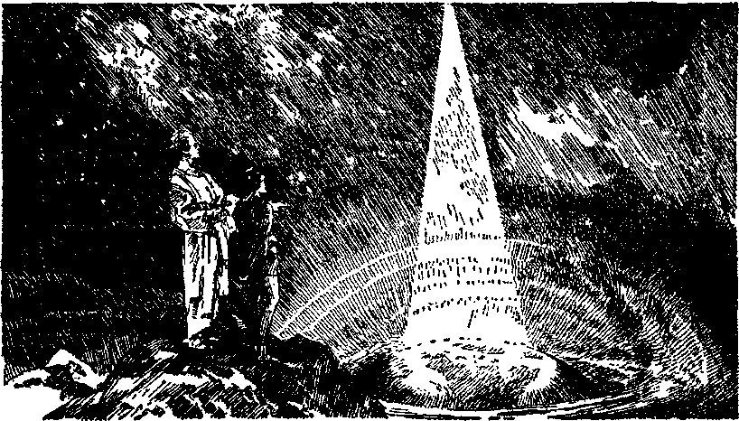NEW HEAVENS AND A NEW EABTH Page 227
[BLANK]
John’s vision, and those still alive on the earth at Armageddon will discern it still more clearly. What is now discerned thrills the heart of the child of God, and he says: “ 0 Lord, our Lord, how excellent is thy name in all the earth! who hast set thy glory above the heavens. Out of the mouth of babes and sucklings hast thou ordained strength, because of thine enemies; that thou mightest still the enemy and the avenger.”-—Ps. 8:1, 2.
‘ ‘ And I saw a new heaven and a new earth: for the first heaven and the first earth were passed away; and there was no more sea.” (Vs. 1) The term “heaven” here used means “the kingdom of heaven”. It is new in this, that it is a new kind of government and displaces the old. The “earth” means the peoples of earth organized in righteousness. “Nevertheless we, according to his promise, look for new heavens and a new earth, wherein dwelleth righteousness.” (2 Pet. 3:13) This is in harmony with God’s promise to make a new heaven and a new earth.
The “heaven” is the invisible ruling power; the “earth”, the visible part of the organization which the kingdom rules. “For behold, I create new heavens, and a new earth: and the former shall not be remembered, nor come into mind.” (Isa. 65:17) ‘The first heaven and earth that were passed away’ means the organization of mankind under the invisible rulership of Satan that existed from the flood until now. The text says: “And there was no more sea,” meaning that ungodly human creatures from which Satan developed his “beast” would no longer exist. God will reconcile the people to himself. Those who refuse to bo reconciled shall be destroyed, and there will be a clean heaven and earth, making a new heaven and new earth.
“And I John saw the holy city, new Jerusalem, coming down from God out of heaven, prepared as a bride adorned for her husband.” (Vs. 2) “The holy city” is the heavenly organization completely separated from the wicked one and his organization, and every whit thereof dedicated to the Holy One, Jehovah; and therefore it is holy. Out of all the cities in the earth only one city was designated by Jehovah as “the holy city”, and that was Jerusalem. It was typical. And so in the antitype there is but one city or organization which forms a part of Jehovah’s greater organization and is the “holy city”.—Noh. 11:1, 18; Isa. 52:1.
The name “new Jerusalem” means “the possession [foundation] of peace, the secure habitation”. It has no reference to the earthly city of Jerusalem, either ancient or modern. It is the new organization composed of new creatures in Christ and called the “new creation” of God. It does not include the “great multitude” or ‘tribulation class’; and this is indicated by the text. Only the overcomers have its name written on them.—Rev. 3:12.
It has twelve foundations bearing the names of the twelve apostles of the Lamb, which excludes all who are not members of the body of Christ. It has twelve gates bearing the names of the twelve tribes, showing that only “the servant of God” is admitted to its membership. It is organized in heaven, the abode of Jehovah, and it is therefore the holy city or organization ‘which hath foundations, whose builder is God’. (Heb. 11:10, 16) It is “cut out of [his] mountain [meaning God’s universal organization] without hands [of men]”, and it comes down from heaven and rules the earth.—Dan. 2:45.
Concerning those who represent that city it is said: “For our conversation [citizenship, Roth.] is in heaven; from whence also we look for the Saviour, the Lord Jesus Christ.” (Phil. 3:20) This is further proof that none will be of that holy city as citizens or parts thereof except the members of the body of Christ. It is a beautiful city and is adorned for her glorious husband Christ, the Head of that city. (Isa. 61:10) “As the bridegroom rejoiceth over the bride, so shall thy God rejoice over thee.” (Isa. 62: 5) “So shall the King greatly desire thy beauty; for he is thy Lord; and worship thou him.” (Ps. 45:11) In it is “the voice of joy, and the voice of gladness; . . . the voice of the bride, the voice of them that shall say, Praise the Lord of hosts; for the Lord is good; for his mercy endureth for ever”.—Jer. 33:11.
“And I heard a great voice out of heaven, saying, Behold, the tabernacle of God is with men, and he will dwell with them, and they shall be his people, and God himself shall be with them, and be their God.” (Vs. 3) This verse applies specifically to God’s remnant now on the earth. John heard the voice, which denotes that the remnant first hears this message from the throne and then transmits it to the people. “And the remnant of Jacob shall be in the midst of many people, as dew from the Lord, as the showers upon the grass, that tarrieth not for man, nor waiteth for the sons of men.”—Mie. 5:7.
This is strong evidence that some of the remnant will be on the earth after Armageddon and will be the ones used by the Lord to first inform the people who have survived the time of trouble. The message from the throne is, “The tabernacle of God is with men,” and suggests that the remnant of God, the sanctuary class at that time, is still on the earth in a lowly, transient condition. This reference is to the “true tabernacle, which the Lord pitched, and not man”, and is not one built by human hands.—Heb. 8:2; 9:11.
The Lord Jesus came to his temple in 1918 and began judgment with the house of God. The evidence is strong that the outpouring of the holy spirit according to the prophecy took place in 1922. (Acts 2:18; Joel 2:28, 29) In the type the tabernacle in the wilderness was anointed at its dedication and inauguration unto God’s service, (Ex. 40:1-11) “The true tabernacle” is with the remnant, and from and after their anointing to the service of God. It is to be expected that God’s anointed people would from that time forward carry out the commands to give a wide testimony of God and of his kingdom. (Isa. 43:10,12; Matt. 24:14) The facts show that the work has been progressing, and particularly since 1922. At the same time the Devil is making conditions on earth as miserable as possible. (Rev. 12:12) The tabernacle denotes the presence of God with men in the representative capacity of his sanctuary class. There would necessarily be warfare between the sanctuary class and Satan from that time forward until Satan is put down completely following Armageddon. Then will follow the ministration to the people by those who represent God. First the remnant hear the voice from heaven and they lift up God’s standard to the people. Then those faithful men who shall be “princes in all the earth” shall represent the kingdom and teach the people.—Ps. 45:16; Heb. 11:39, 40.
Since the kingdom has begun, surely the Lord will have on earth some representative from henceforth and forever. If so, then the faithful princes, who shall represent the Lord on earth, must return before all the remnant class has passed from the earth. The earth must be a “holy place” from the time God’s representatives take possession, even though the enemy continues to defile it until he and his organization are destroyed. John is then shown that God, ruling through his representatives, shall bring blessings to mankind and that he will be the God of all who obey him.
“And God shall wipe away all tears from their eyes; and there shall be no more death, neither sorrow, nor crying, neither shall there be any more pain: for the former things are passed away.” (Vs. 4) Christ will be the hand that God will use to wipe away all tears. (1 Cor. 15:25, 26; Hos. 13:14) For many centuries the people have suffered oppression, pain, injury, sickness, loss of health and of life. Gradually these things shall be made to pass away and there will be no more slavery, drudgery, or cruel oppression, and finally there will be no sickness and no death. The final result of the reign of Christ will be the destruction of every enemy of man, including death. All this shall be to the glory of Jehovah God.
“And he that sat upon the throne said, Behold, I make all things new. And he said unto me, Write; for these words are true and faithful.” (Vs. 5) Manifestly this represents Jehovah speaking to John and to the John class. (Rev. 4:2; 5:1) It is God who will reconcile the people to himself; and “all things are of God” and by Christ his “right hand”. (2 Cor. 5:17, 18; Eph. 4:2-6) There shall be an entirely new world. “For behold, I [Jehovah] create new heavens, and a new earth: and the former shall not be remembered, nor come into mind. But be ye glad and rejoice for ever in that which I create; for, behold, I create Jerusalem a rejoicing, and her people a joy.” —Isa. 65:17, 18.
To the remnant Jehovah gives the new wine of good cheer and joy. (Matt. 26: 29) He establishes the New Jerusalem. (Rev. 3:12) He inaugurates the new covenant with the true Israelites. (Heb. 8: 8-13) Then he gives a new heart to the people who love and obey him and everything is made to the good of creation and to the glory of God. (Ezek. 36: 26; 11:19) This is what John heard and what the remnant then discern.
John not only had this glorious vision of things that must shortly come to pass, but was commanded to write them. Now the remnant, whom John represented, seeing these things coming to pass, to them Jehovah now says: “New things do I declare; before they spring forth I tell you of them.” (Isa. 42:9) It follows, therefore, that the remnant is not shown these things merely for the pleasure of the remnant, but that as witnesses for Jehovah they might tell them out to others. That witness to the name of Jehovah must continue until the ‘princes of the earth’ return. The testimony or word of God is “true and faithful”, is reliable and trustworthy and sure of accomplishment. Blessed is the class now having a part in telling that message of truth to the people and to the glory of God.
Again the voice of Jehovah is heard by John from the throne of heaven. The remnant discern that voice of Jehovah through his Word and see the fulfilment thereof in these last days. That voice says: “And he said unto me, It is done. I am Alpha and Omega, the beginning and the end. I will give unto him that is athirst of the fountain of the water of life freely.” (Vs. 6) This scripture has no reference to the people during the millennial reign of Christ. It is addressed specifically to John and to the class whom John represented. When the seventh angel poured out his bowl of wrath the same expression is used, “It is done”; meaning that now the issue is completely joined and you have been informed of God’s purposes against Satan’s organization and that you are privileged to have a part therein. What could be the meaning of a like expression in the text, verse six here under consideration?
The Revelation is from Jehovah God to Jesus Christ, which he now shows his servant class. It is Jehovah that now says to the servant class on earth: ‘I am the A and the Z [2?otfu], the Beginning and the End, the Author and the Finisher; I have given you this message; it is done; now you go forth and bear testimony thereof as my witnesses.’ It is Jehovah who inspired his Word from the beginning, and now he brings it to a close. He discloses his purposes. What is beyond the Millennium need not be revealed. God has expressed his purpose and told it to his servant class and “thou shalt not add thereto, nor diminish from it”. (Deut. 12:32) It is the spirit-begotten ones that thirst for the water or truth of life and are always eager to have more. Jehovah says to such: “I will give unto him that is athirst of the fountain of the water of life freely.” It therefore becomes the privilege and the duty of God’s witnesses on earth who are in the everlasting covenant according to the sure mercies of David to cry out to their brethren concerning the great truths of God’s expressed purposes. They are commanded to say: ‘Ho, every one that thirsteth, come ye to the waters; come and buy without money and without price.’ (Isa. 55:1) “Blessed are they which do hunger and thirst after righteousness: for they shall be filled.” (Matt. 5:6) “And he led them forth by the right way, that they might go to a city of habitation.”—Ps. 107: 7.
Those who thus hunger and thirst for the truth have been given a blessed privilege since the Lord came to his temple. If they have been alive to their privileges they have been proclaiming God and his kingdom. These with joy receive the truth out of the wells of salvation and they are filled with praise: “Therefore with joy shall ye draw water out of the wells of salvation. And in that day shall ye say, Praise the Lord, call upon his name, declare his doings among the people, make mention that his name is exalted.”—Isa. 12:3, 4.
As the remnant receives these blessed truths, each one thereof must cry out to others to come and take their stand on the side of Jehovah, become his witnesses, accept the leadership of Christ Jesus and go forward in his organization. This is the reason why brethren beseech one another to present themselves daily and actively in the Lord’s service. It is the spirit-begotten ones to whom the question is now addressed: “Who shall ascend into the hill of the Lord? or who shall stand in his holy place?” The Lord causes his prophet to write the answer: “He that hath clean hands, and a pure heart; who hath not lifted up his soul unto vanity, nor sworn deceitfully. He shall receive the blessing from the Lord, and righteousness from the God of his salvation. This is the generation of them that seek him, that seek thy face, 0 Jacob.”—Ps. 24:3-6.
Those who hear the voice of the Lord now know they must make their calling and election sure by proving themselves faithful unto the end. To such the words of verse seven are addressed: “He that ovcrcomcth shall inherit all things; and I will be his God, and he shall be my son.”—Vs. 7.
The ‘overcomers’ are limited to the time when Satan is opposing the carrying out of God’s purposes. During the reign of Christ Satan will be out of the way. There will then be nothing to overcome; hence the words of verses six and seven could have no application to the millennial reign of Christ. The language of verse seven furthermore shows that the ones addressed are those who shall become members of the glorious kingdom of God. None others are overcomers. It is the 144,000, inclusive of the remnant now on earth, that are here addressed, and the latter in particular. The One who inherits all things is the great Son of God, and his body members shall share with him in these “all things”; and no others do thus share with him. (Heb. 1:2; Rom. 8:17) Only the overcomers are made members of the royal house. “Christ as a son over his own house; whose house are we, if we hold fast the confidence and the rejoicing of the hope firm unto the end.” (Heb. 3:6) It is because they are overcomers that they are made members of the royal house. Therefore Jehovah says to them: ‘I began this message; I have brought it to a close. Your duties and obligations are before you. Go now and perform them faithfully unto the end and, proving your faithfulness, you shall with Christ Jesus inherit all things and you shall be my son and a member of my house. ’
That which is recorded in verse eight is a judgment pronounced and written concerning those who are spirit-begotten and who join Satan’s organization. It would also include those who claim to represent the Lord and to proclaim his message. It has no application to the millennial reign of Christ, but to the last days of the gathering of the kingdom class. There have been many begotten of the holy spirit and who have received the call for the kingdom. Not all have responded to the call, and, comparatively speaking, only a small number have been chosen. Those who have repudiated the Lord and their covenant either directly or indirectly are disposed of by verse eight thus: “But the fearful, and unbelieving, and the abominable, and murderers, and whoremongers, and sorcerers, and idolaters, and all liars, shall have their part in the lake which burneth with fire and brimstone: which is the second death.”
The judgment begins when the Lord comes to his temple, and as that judgment proceeds it is determined who shall be of the kingdom. Concerning this class, and particularly at the end of the world, it is written: “Follow peace with all men, and holiness, without which no man shall see the Lord: looking diligently lest any man fail of the grace of God; lest any root of bitterness springing up trouble you, and thereby many be defiled; lest there be any fornicator, or profane person, as Esau, who for one morsel of meat sold his birthright. For ye know how that afterward, when he would have inherited the blessing, he was rejected; for he found no place of repentance, though he sought it carefully with tears.” (Heb. 12:14-17) The present is the time when all that can be shaken will be shaken out, so that the approved ones might remain. (Heb. 12:27, 28) The faithful will understand; the others will not.
“And there came unto me one of the seven angels which had the seven vials full of the seven last plagues, and talked with me, saying, Come hither, I will shew thee the bride, the Lamb’s wife.” (Vs. 9) After John had received the message expressing the purposes of Jehovah one of the seven angels held conversation with him and told John to come and he would show him the bride, the Lamb’s wife. The Lord, through his deputies or angels, and in his own good way, reveals these wonderful truths to his anointed ones that walk in the light. This would indicate that in these latter days the Lord would reveal to his people more clearly the requirements that will be made of those who will be made members of the body of Christ and therefore of the bride. The identity of the bride class would no longer be left in doubt. It also indicates that the remnant comes to a realization that “the marriage of the Lamb is come, and his wife hath made herself ready”. There has been doubt in the minds of many as to what constitutes the bride of Christ. This scripture indicates that the remnant would have such a clear vision that there would no longer be any doubt.
THE HOLY CITY
Just before the death of Moses he was given a view of the promised land from the heights of Mount Nebo. (Deut. 34:1-7) This may illustrate the view that God gives to his people just before the completion of the church and while the eyes of the remnant are not dimmed. Another prophet of God recorded concerning his anointed people these words:
“In the visions of God brought he me into the land of Israel, and set me upon a very high mountain, by which was as the frame of a city on the south.” (Ezek. 40:2) This surely pictures the anointed who are members of God’s high organization receiving from the Lord a vision of the glorious kingdom. The faithful prophets had visions and prophesied as they were carried along by the spirit of God. Even so in this day the spirit of God enables those who are devoted to him, and whom John pictured, to have a vision of the glorious kingdom of God, even at this time. This vision is, by the grace of God, for the encouragement and comfort of those who love him, and to show them their greater privileges of service. Hence John wrote:
“And he carried me away in the spirit to a great and high mountain, and shewed me that great city, the holy Jerusalem, descending out of heaven from God, having the glory of God: and her light was like unto a stone most precious, even like a jasper stone, clear as crystal.”—Vss. 10, 11.
The universal organization of Jehovah is mentioned under the name “Jerusalem which is above [and] which is the mother” of those who are born in Christ. (Gal. 4:26) It is “the city of the living God”. (Heb. 12:22) It is also designated Zion. Jehovah is the husband of his universal organization, pictured by his “mount Zion”, which gives birth to the kingdom of which Christ is the Head and Chief. The hundred and forty-four thousand and One, composing the Christ, or kingdom, take the name (and are especially designated by the name) of God’s uni-vcrsal organization. These bear the name of the Father and the mother. “I will write upon him the name of my God, and the name of the city of my God, which is New Jerusalem, which eometh down out of heaven from my God.” (Rev. 3:12) The New Jerusalem in Revelation is restricted to the 144,000, who are espoused to one husband, Christ, and who take the name of Jehovah and of his organization. The ‘‘New Jerusalem”, or “holy Jerusalem”, is specifically the organization of Christ over which he is the Head, and it is “the Lamb’s wife”. It is also a part of Jehovah’s universal organization. The ones composing this organization are wholly and completely devoted to Jehovah. As the city of Jerusalem in Palestine was the capital city of God’s typical people, so the “holy Jerusalem”, or “New Jerusalem”, is the capital or chief part of God’s true and xmiver-sal organization.
The “holy Jerusalem” has the glory of God (it is not a self-glorification, but a glory proceeding alone from Jehovah), and concerning which organization he says: “My glory will I not give to another.” (Isa. 42:8) This “new creation” or “holy city” is the very pinnacle of Jehovah’s creation, dedicated wholly and for ever to his service, and to none other, and to it he gives such glory. Concerning the Lamb and his organization, or “wife”, it is written : ‘' Thou shalt also be a crown of glory in the hand of the Lord, and a royal diadem in the hand of thy God. Thou shalt no more be termed Forsaken: neither shall thy land any more be termed Desolate; but thou shalt be called Hephzibah, and thy land Beulah: for the Lord dclighteth in thee, and thy land shall be married. ’ ’—Isa. 62: 3, 4.
Jehovah begins the fulfilment of this prophecy when he builds up Zion upon the coming of the Lord to his temple, and therefore it is in course of fulfilment upon the anointed remnant, and to such he says: “In that day shall the Lord of hosts be for a crown of glory, and for a diadem of beauty, unto the residue of his people. ’ ’—Isa. 28: 5.
To those who are of the remnant and continuing faithful he says: “Arise, shine; for thy light is come, and the glory of the Lord is risen upon thee. For, behold, the darkness shall cover the earth, and gross darkness the people: but the Lord shall arise upon thee, and his glory shall be seen upon thee.”—Isa. 60:1, 2.
“The God of all grace . . . hath called us unto his eternal glory by Christ.”—1 Pet. 5:10; Eph. 1:12; 3:21; Rom. 2:6, 7.
This glorious organization is shown descending out of heaven; which is proof that it is God’s organization created for his beloved Son. Her light or luminary is Jehovah and is likened unto a white diamond, the most precious of all stones. It is therefore pictured as a light most rare and precious. It is the organization or city of light, and God has declared that he will not hold his peace “until the righteousness thereof [shall] go forth as brightness”.—Isa. 62:1.
The loving-kindness of Jehovah is now further manifested toward the remnant on earth. John was caused to write a further description of the “holy city”, which manifestly is given for the assurance, comfort and encouragement of the remnant. (Rom. 15:4) This is made doubly sure by the statement John records, that the city “had a wall great and high”. Satan has been cast out of the heaven; and, the saints on earth being the only ones that he could possibly hurt, this wall symbolically says to them that as long as they abide faithful in God’s organization they are safe. The wall makes the city unscalable and unconquerable. It is the city of everlasting peace, just as its name means. Therefore those that dwell in it dwell in peace and safety. “For I, saith the Lord, will be unto her a wall of fire round about, and will be the glory in the midst of her.” (Zech. 2:5) ‘Salvation hath God appointed for walls and bulwarks.’ (Isa. 26:1) Seeing that God wills that his remnant on earth shall take courage from the picture given of the holy city, he caused John to write a further description thereof, and, when seen, it thrills the heart with joy:
“And had a wall great and high, and had twelve gates, and at the gates twelve angels, and names written thereon, which are the names of the twelve tribes of the children of Israel: on the east three gates; on the north three gates; on the south three gates; and on the west three gates. And the wall of the city had twelve foundations, and in them the names of the twelve apostles of the Lamb.”—Vss. 12-14.
If the “walls” of the holy city apply to the glorified members of the Christ, it would seem to signify immortality to such, and therefore that the second death can never have any power over them. The twelve gates or entrances into the city are directly associated with the walls and are designated in accordance with the twelve tribes of the children of Israel, meaning of course the twelve divisions of Israel as set forth in the seventh chapter of Revelation. These walls and gates indicate salvation to God’s people and that they are devoted to his praise. “Thou shalt call thy walls Salvation, and thy gates Praise. ’ ’ (Isa. 60:18) “The Lord loveth the gates of Zion more than all the dwellings of Jacob.” (Ps. 87:2) The remnant class now discern the city and her gates and say: “Open to me the gates of righteousness: I will go into them, and I will praise the Lord; this gate of the Lord, into which the righteous shall enter. I will praise thee; for thou hast heard me, and art become my salvation. Ps. 118:19-21.
Angels are stationed at each gate. These are the doorkeepers in the house of Jehovah and they safeguard the kingdom interests. Doubtless these angels have to do with seeing that none enter save those who comply with the rules of the kingdom, and also gather out or turn away all offenders and workers of iniquity. Only the righteous enter. (Isa. 26:2; Matt. 13:41) All who enter or who give attendance at the gates must be singing the praises of Jehovah and declaring his judgments and safeguarding his interests. This rule would apply to all on the earth who are anointed servants of the Most High and to whom the kingdom interests are committed. “Let her own works praise her in the gates. ’ ’—Prov. 31: 31.
Written on the gates are the names of the twelve tribes of Israel; which denotes that only true Israelites enter and are made a part of the holy city and that they who do enter or who are in attendance upon the city are engaged in praising the Lord and declaring his judgments. None of the spirit-begotten ones aside from the 144,000 who are sealed become a part of the city. (Rev. 7:4) The gates are located on the four sides, three gates being on each side, and one tribe is assigned to each gate. (Ezek. 48:31-34) The foundations of the walls are then described. These support the walls, and in them are the names of the twelve apostles of the Lamb. Christ Jesus himself is the chief corner Stone in that foundation. (Eph. 2:20) “His foundation is in the holy mountains.” (Ps. 87:1) The number twelve conforms to God’s order. God has set the members in the body as it has pleased him. (1 Cor. 12:18, 28) The measuring of the “great salvation” (walls) first began to be spoken by the Lord Jesus, and was confirmed thereafter by the words of the twelve apostles that heard him. (Heb. 2:3, 4) Only the 144,000 of God’s anointed ones are built upon this apostolic foundation.
MEASUREMENTS
One of the seven angels, assigned by the Lord to that duty, talked with John and permitted John io see the measurement of the holy city which is the Lamb’s wife or the Lamb’s organization. This denotes that the remnant servant class would be permitted to discern, from an understanding of the Word of God, the organization of which Christ is the Head, and that they would also discern what is required of those who will be made members of that city. This description of the holy city is doubtless written for the specific benefit of the remnant. Those who have already been received into everlasting glory would not need to have a description of it, because they do see it as it is. The record made by John concerning the measurements follows:
“And he that talked with me had a golden reed to measure the city, and the gates thereof, and the wall thereof. And the city lieth foursquare, and the length is as large as the breadth: and he measured the city with the reed, twelve thousand furlongs. The length, and the breadth, and the height of it are equal. And he measured the wall thereof, an hundred and forty and four cubits, according to the measure of a man, that is, of the angel.”—Vss. 15-17.
The city is foursquare, exactly and equally balanced. There could be no hypocrisy in connection with it, no partiality in its judgment, and it is and always must be to the glory of Jehovah God. It is constructed according to divine wisdom: ‘‘But the wisdom that is from above is first pure, then peaceable, gentle, and easy to be entreated, full of mercy and good fruits, without partiality, and without hypocrisy. And the fruit of righteousness is sown in peace of them that make peace.”—Jas. 3:17, 18.
The breastplate of the high priest was foursquare, even as is the city. This denotes that the judgment of the Lord is righteous. “The holy city,” over which Christ the great Judge is the Head and Ruler, will judge all in righteousness. Each one who becomes a member of that holy city must be foursquare and not lopsided. The measurements show the city to be three thousand furlongs to each side, corresponding to the gates on each side, or a total of twelve thousand furlongs. A furlong is one-tenth of an English mile. The length, breadth and height being equal would mean that the organization is a high and lofty one, as is indicated by the height of three hundred miles. This, of course, is a symbolic expression. It shows the organization to be far above man’s level. The equality of all sides makes it a perfect city, and therefore an organization perfect from every viewpoint, well poised and absolutely symmetrical. It has ample foundations and is built upon exact and perfect lines. It was foreshadowed by the most holy of the tabernacle and of the temple. (Heb. 9:24; 1 Ki. 6:20) The measurements say, in substance: ‘This is a perfect organization, the only kind of place in which Jehovah might dwell; it is his delight and reflects his glory. ’
The wall is “great and high”. The measure is ‘one hundred and forty-four cubits, the measure of a man, that is, of the angel’. This could not refer to the height of the great wall. It seems particularly to denote that the 144,000 of the city must be measured by, and measure up to, the standard of the perfect man Christ Jesus. It could not be the measure of a natural man; nor would the measurements be according to the natural man’s attainments, but according to the spirit of God. It is according to the measuringline which God has distributed to his begotten and anointed ones and by which they must be maintained. (2 Cor. 10:13) God’s expressed purpose is that all shall be conformed to the likeness of Christ; hence all must be foursquare and all must therefore come ‘into the unity of the perfect man, unto the measure of the stature of the fulness of Christ’.—Rom. 8: 29; Eph. 4:13.
The whole city is constructed by Jehovah and reflects his glory. John was on the outside, yet he was permitted to see through the walls into the city; thus showing that the walls were transparent. “And the building of the wall of it was of jasper; and the city was pure gold, like unto clear glass.” (Vs. 18) Its appearance resembles Jehovah, who ‘was to look upon like a jasper stone’. (Rev. 4: 3) Jehovah is a glorious wall of protection to his people; and those in that city will abide there forever in safety, and they shall be forever like Jehovah. “As the mountains are round about Jerusalem, so the Lord is round about his people from henceforth even for ever.” (Ps. 125:2) Jehovah is the builder of the city and forever keeps it. “Except the Lord build the house, they labour in vain that build it; except the Lord keep the city, the watchman waketh but in vain. ’ ’—Ps. 127:1.
The city is constructed of pure gold, entirely free from dross. Solomon “made silver and gold at Jerusalem as plenteous as stones”. (2 Chron. 1:15) God makes everything of his holy city of pure gold. That denotes that it is divine. All members of the bride of Christ are made “vessels of gold” in Jehovah’s royal house. (2 Tim. 2:20) It is the gold bought of the Lord and tried in the fire. (Rev. 3:18) Job, when speaking prophetically for those of the bride class, said: “He knoweth the way that I take: when he hath tried me, I shall come forth as gold.” (Job 23:10) In that glorious organization ‘the King’s daughters’ have garments made of wrought gold. (Ps. 45:9, 13) None other would be suitable to Ilie royal house or glorious organization.
FOUNDATIONS
“And the foundations of the wall of the city were garnished with all manner of precious stones. The first foundation was jasper; the second, sapphire; the third, a chalcedony; the fourth, an emerald; the fifth, sardonyx; the sixth, sardius; the seventh, chrysolyte; the eighth, beryl; the ninth, a topaz; the tenth, a chrysoprasus; the eleventh, a jacinth; the twelfth, an amethyst.”—Vss. 19, 20.
The holy city is ‘the city beautiful’ and not comparable to any other. It is immovable, gorgeous and sublime. John, being unable to find other words, upon the first sight said concerning it that it appeared as a bride prepared and adorned for her husband. The faith of God’s anointed people rests upon the glorious foundation of that city. It rests upon nothing that any creature has ever said or done. The remnant refuse to believe that the Word of God comes from any man. They know that it proceeds from Jehovah, and he has built a glorious organization for his beloved Son and has garnished the foundation thereof with precious stones. The foundation of this glorious organization not only makes the faith of his remnant sure but is a delight to the soul.
The first precious stone mentioned is jasper, the most precious, and therefore given precedence. It would scorn entirely improper to attempt to apply this or any other stone to any one of the twelve apostles or to any other man. God laid the glorious foundation, and the one foundation undoubtedly refers to Christ Jesus, who is the express image of Jehovah. “For other foundation can no man lay than that is laid, which is Jesus Christ.” (1 Cor. 3:11) The precious stones with which the foundation of the walls of the holy city was garnished are descriptive of the glory of Jehovah; which glory is reflected by his beloved Son in particular, and by all those who are of his organization. Through his prophet Jehovah foretold the building of this beautiful city: “0 thou afflicted, tossed with tempest, and not comforted, behold, I will lay thy stones with fair colours, and lay thy foundations with sapphires. And I will make thy windows of agates, and thy gates of carbuncles, and all thy borders of pleasant stones.” (Isa. 54:11, 12) John was given a vision of that glorious organization or structure, and now the John class begins to discern that the city and all parts of it possess the glory that God gives to it and will forever reflect his glory.
“And the twelve gates were twelve pearls; every several gate was of one pearl: and the street of the city was pure gold, as it were transparent glass.’’ (Vs. 21) Each one of these is a “pearl of great price’’, and doubtless means that every one who enters at those gates and becomes a part of the holy city must first sell everything that he has that he might enjoy the blessed privilege of entering the glorious organization. (Matt. 13:46) The beautiful gates also symbolically say: ‘Everyone who enters here will sing the praise of Jehovah God.’ “Enter into his gates with thanksgiving, and into his courts with praise: be thankful unto him, and bless his name. ’ ’—Ps. 100:4.
“Praise ye the Lord: for it is good to sing praises unto our God; for it is pleasant; and praise is comely.’’ (Ps. 147:1) “Praise the Lord; for the Lord is good: sing praises unto his name; for it is pleasant.’’ —Ps. 135:3.
There is only one street or broadway in the city; and that means to the remnant that there is only one way to walk in God’s organization, and that is the right way. “He is in the way of life that keepeth instruction.” (Prov. 10:17) That way is “the way of thy precepts” and “the way of truth”. (Ps. 119: 27, 30) “The Lord knoweth the way of the righteous.” (Ps. 1:6) God’s faithful ones walk in the light. (1 John 1:7) That street or broadway being of pure gold shows there is no dross or litter in the way of the city. Everything is clean and pure. It is the royal or divine way, and those anointed for the kingdom delight to walk therein. “Therefore I love thy commandments above gold, yea, above fine gold.’’ —Ps. 119:127.
This glorious city is ‘the perfection of beauty, out of which Jehovah shines’. (Ps. 50:2) The divine description of that glorious city is given, not merely for the purpose of contemplation by the remnant of the blessedness to be enjoyed after entering into everlasting glory, but particularly to enable the remnant now on earth to see that all who will enter must be completely devoted to Jehovah now. Being now made members of that blessed organization each of the remnant must now reflect the glory of the Lord and obey the commandments when he hears: “Ye are my witnesses that I am God.”
“And I saw no temple therein: for the Lord God Almighty and the Lamb are the temple of it.” (Vs. 22) Adam, when perfect, required no temple. It was sin that necessitated the building and use of a temple as a way of approach to God. In the kingdom under the royal organization there is no need of a temple. ‘ ‘ Howbeit the Most High dwelleth not in temples made with hands; as saith the prophet, Heaven is my throne, and earth is my footstool.” (Acts 7: 48, 49) Strictly speaking, a temple means a house or dwelling. In Solomon’s temple the ark of the covenant signified the presence of Jehovah. Since Jehovah and Christ are present in the holy city, no distinct building is needed to symbolize their presence. Christ Jesus being the direct way of approaching to Jehovah, no temple or intermediary building is required. Jehovah and his beloved Son are the sum total of all that could be desired. This is proof, furthermore, that the 144,000 members of the royal house are of secondary importance, and not at all indispensable. They are there by the grace of God.
“And the city had no need of the sun, neither of the moon, to shine in it: for the glory of God did lighten it, and the Lamb is the light thereof.’’ (Vs. 23) This fact alone proves that the organization is not earthly, needing light such as human creatures must depend upon. God’s Word is now a light unto the temple class. “The sun shall be no more thy light by day; neither for brightness shall the moon give light unto thee: but the Lord shall be unto thee an everlasting light, and thy God thy glory. Thy sun shall no more go down; neither shall thy moon withdraw itself: for the Lord shall be thine everlasting light, and the days of thy mourning shall be ended. ’ ’ —Isa. 60:19, 20.
In the “holy city” the presence of Jehovah floods it with light and glory, because “God is light”. (1 John 1:5) Jehovah dwells in the light which no human creature can approach unto. (1 Tim. 6:16) According to the Diaglott: “Its lamp is the Lamb.” Concerning Jesus it was written: “That was the true Light, which lighteth every man that cometh into the world.” (John 1:9) Also he, “being the brightness of his glory, and the express image of his person,” is a lamp or illumination to the holy city. (Heb. 1: 3) Christ now present is the light of the remnant, and God’s light comes to the remnant through Christ, the Head of his glorious organization.
“And the nations will walk by means of its light and the kings of the earth bring their glory into it.” (Vs. 24, Diag.) In due time the earth will be filled ■with a knowledge of the glory of Jehovah. (Hab. 2:14) Then all people (now forming the nations) shall walk in the midst of the great light of the kingdom. “And it shall come to pass, that every one that is left of all the nations which came against Jerusalem, shall even go up from year to year to worship the King, the Lord of hosts, and to keep the feast of tabernacles.” (Zech. 14:16) All the restored human race will discern the blessedness of God and will delight to worship him and the great King.
Christ Jesus is the “King of kings”. (Rev. 1:5) All who are of his royal house are made kings and priests. Even now the approved ones who are walking according to the light arc in that capacity, from God’s viewpoint. The earthly kings could have no glory left after Armageddon to bring into the kingdom. (Isa. 24: 21) Not even David will be a king in the earth when he is restored. There will be no kings in the earth. The faithful men of old will be princes or visible representatives of the kingdom on earth. The kings that bring their glory into the holy city, therefore, must be limited to the 144,000. It is God’s organization, and those who are members of it will bring their all into that kingdom. Hence the kings of the earth, that is to say, those who will rule the earth, bring into the kingdom their glory and honor, all of which proceeds from Jehovah.
“And the gates of it shall not be shut at all by day: for there shall be no night there.” (Vs. 25) This means that the presence of Jehovah with that blessed organization will never cease. (Ps. 118:19-21) “Therefore thy gates shall be open continually; they shall not be shut day nor night; that men may bring unto thee the forces of the Gentiles, and that their kings may be brought.”—Isa. 60:11.
In ancient times the gates were closed at darkness to keep out the enemy. (Neh. 13; 19) When the kingdom of righteousness rules in full sway ‘the rulers of darkness’ will have been disposed of and there would be no need for the closing of the gates. The gates, therefore, shall always be open, and the presence of God shall be there also day and night forever, and everything that breathes will be giving praise to God.—Ps. 150.
“And they shall bring the glory and honour of the nations into it.” (Vs. 26) The holy city or holy Jerusalem is heavenly, and the nations are on the earth and could not be brought into it; but the “glory and honour” they will bring. Satan and his agencies have turned all the honor of the nations away from Jehovah. Under the reign of Christ the people will learn to give all glory and honor to Jehovah and his glorious organization. At the name of Jesus every knee shall bow in honor, and every tongue shall confess that- he is The Christ to the glory of Jehovah the Father. (Phil. 2:10, 11) Jehovah’s holy city or organization shall become the joy of the whole earth.—Ps. 48:2; Isa. 60:5-10, 14, 15.
“And there shall in no wise enter into it any thing that defileth, neither whatsoever workoth abomination, or maketh a lie; but they which are written in the Lamb’s book of life.” (Vs. 27) Flesh and blood cannot enter into the kingdom as a member thereof. Nothing will be there that is in the least out of harmony with righteousness. Jesus shows that the motive that prompts each one of God’s people in their actions now must be pure. The heart represents the seat of motive or decision. “Keep thy heart with all diligence; for out of it are the issues of life.” (Prov. 4:23) “But those things which proceed out of the mouth come forth from the heart; and they defile the man. For out of the heart proceed evil thoughts, murders, adulteries, fornications, thefts, false witness, blasphemies: These are the things which defile a man.’’ (Matt. 15:18-20) No abominable thing shall be there. “That which is highly esteemed among men is abomination in the sight of God.’’ (Luke 16:15) The glory is not to be given to man. Those who will enter the kingdom must love and serve the truth and give all the honor and glory to Jehovah God, who is the Giver of every good and perfect gift. No maker of lies will be permitted there, which would necessarily include anyone who would misrepresent God’s Word of truth. Only those can be members of the kingdom who conform themselves to God’s appointed way.
Those who will be there have their names written in the Lamb’s book of life. The instruction of the Bible is for those of God’s people while yet on the earth. The names of the faithful are written in the book of life before they leave the earth. It would seem that the writing takes place at the time of the anointing, because that is the official designation to a place in the holy city. It is reasonable to conclude that the remnant of God’s people have their names written now in the Lamb’s book of life. Whether they are blotted out or remain will depend upon faithfulness even unto death. “He that overcometh, the same shall be clothed in white raiment; and I will not blot out his name out of the book of life, but I will confess his name before my Father, and before his angels.’’ (Rev. 3:5; Isa. 4:3, 4) “And at that time thy people shall be delivered, every one that shall be found written in the book,” (Dan. 12:1) "Rejoice, because your names are written in heaven.”—Luke 10:20.
RIVER OF LIFE
(Revelation, Chapter 22)
One of the seven angels that talked with John pointed out to him a pure river of water of crystal clearness proceeding out of the throne. “And he shewed me a pure river of water of life, clear as crystal, proceeding out of the throne of God and of the Lamb.” (Vs. 1) It is the class of people on earth whom John represented or stood for that discern the river of the water of life. God feeds his people by the hand of Christ by and through his organization. Whatsoever comes to the Lord’s people for their good is received in this manner. In March 15, 1929, issue of The Watch Tower there was published some up-to-date truth concerning the river of the water of life. “The water of life” is not limited to the ‘ten fundamental truths or doctrines’ set forth in the Scriptures, because above all of these is the great truth concerning the name of the true and living God and the vindication of his word and name. That vindication comes through his kingdom. To God’s anointed the promise is made that those who thirst shall be given of the fountain of the water of life freely. (Rev. 21:6) This “water of life” has especially been understood by the Lord’s people since the opening of the temple in heaven. This water of truth is the very opposite of the flood that the Dragon cast out of his mouth. (Rev. 12:15, 16) God’s flood of truth is clear and bright, like the “bright and morning star”, and the hypocritical clergy are not permitted to ‘befoul this water with their soiled feet’.
(Ezck. 34; 18-22) Those who love the Lord drink freely at this fountain.
The river of pure water is seen “proceeding out of the throne of God and of the Lamb”. That shows that the river did not begin to proceed until after God had placed his anointed One on his throne in Zion, in 1914, at the birth of the kingdom. It is more reasonable to conclude that this river of water began to flow after the Lord came to his temple; for then, the temple being opened, the flashes of lightning began to come to the people of God. (Rev. 11:19) This is supported by Ezekiel’s prophecy: “Afterward he brought me again unto the door of the house; and, behold, waters issued out from under the threshold of the house eastward: for the forefront of the house stood toward the east, and the waters came down from under, from the right side of the house, at the south side of the altar. Then brought he me out of the way of the gate northward, and led me about the way without unto the utter gate by the way that look-eth eastward; and, behold, there ran out waters on the right side. And when the man that had the line in his hand went forth eastward, he measured a thousand cubits, and he brought me through the waters; the waters were to the ancles. Again he measured a thousand, and brought me through the waters; the waters were to the knees. Again he measured a thousand, and brought me through; the waters were to the loins. Afterward he measured a thousand; and it was a river that I could not pass over: for the waters were risen, waters to swim in, a river that could not be passed over.” (Ezek. 47:1-5) That water of life or truth, when it begins to flow and show forth the glory of God, continues to rise until it has filled the entire earth. The kingdom has begun and the water of life is flowing for those who seek to quench their thirst thereat.
“In the midst of the street of it, and on either side of the river, was there the tree of life, which bare twelve manner of fruits, and yielded her fruit every month: and the leaves of the tree were for the healing of the nations.” (Vs. 2) It must be kept in mind that chapter twenty-two continues to describe the holy city. The angel who was talking to John, and who showed him this blessed organization which is the Lamb’s wife, at the same time points out to him the pure river of water flowing out from the throne. The expression, “in the midst of the street of it, and on cither side of the river,” is often misunderstood. It means, not in the midst of the river, but in the midst of the broadway or the street of the city. (Bev. 21:21) There could be no street or broadway in the midst of the river. The very construction of the language therefore shows it has reference to the street of the city. The river of pure water proceeds out of the throne of God and of the Lamb, and in the midst of the broad way of the city; and on either side of the river is the tree of life. The river bank on either side is not barren, but, according to another rendering of the text, “on this side of the river and on that [side] was a tree of life.” (Roth.) The picture, therefore, is of a river of water with trees on both sides. The “tree of life” is not one lone tree, but is a family or genus of trees. According to the Diaglott it is the “wood of life”; and according to the Sinaitic MS., “the trees.” Therefore those who walk in the street of the holy city would walk along the banks of the river of the water of life. The water of life is flowing only in the way of God’s kingdom for mankind.
In Ezekiel’s prophecy the description is this: "Now when I had returned, behold, at the bank of the river were very many trees on the one side and on the other.” (Ezek. 47:7) The river of water is shown as starting in the city and flowing along to the walls of the city, to the limits of the city, and then on to the outside so that those who are not members of God’s organization or holy city may also avail themselves of the opportunity of the blessings that come therefrom, to wit, from his great fountain of truth. Jehovah is the great source of light and life. He is the planter of the tree of life, which represents the provisions he has made for those who will come to him and live.
The tree or "wood of life” bears twelve manner of fruits (or twelve crops), and yields one fruit every month. This suggests twelve divisions of the tribes of the kingdom rather than twelve months of the year. It shows that the provision for life is never-failing and that there is always an abundant supply. The fruits are borne for the benefit of those who need sustenance. The fruit is that which Jehovah’s servants bring forth to serve to others needing God’s gracious provision. The kingdom is given to those that bring forth the fruits thereof. (Matt. 21:43) "And thou shalt not cut them [the fruit-bearing trees] down (for the tree of the field is man’s life). . . . Only the trees which thou knowest that they be not trees for meat, thou shalt destroy and cut them down. ’ ’—Deut. 20:19, 20.
This does not mean the fruits of one’s own self, but the fruits that the kingdom of God supplies for those that need them. The "fruit of the spirit” does not mean “beautiful and sweet character”, as has been said. The fruit of the spirit is called “love”, because only those who are unselfishly devoted to God and his service bring forth the fruit of the spirit. God has made provision for mankind, and those who are prompted by love for God and those who obey God delight to bring forth or carry to others God’s provision for them. No one can be of the kingdom who docs not bring forth the fruits thereof by carrying God’s provision to mankind with a joyful heart. That would mean, then, that no one can be of the kingdom who fails or refuses to have a part in the service of the Lord, as he has given command that his truth must be carried to others. Those who do bring forth fruits are the special targets of the enemy, and these have the special favor of the Lord.—Rev. 12:17.
Christ Jesus is the great “tree of life” which Jehovah planted to supply life for mankind. Jehovah has graciously planted others with Christ Jesus by calling them unto the kingdom and giving them the great privilege of sharing the blessings of the kingdom. These the Lord designates as “trees of righteousness, the planting of Jehovah”, that his name might be glorified. (Isa. 61:3) It is his anointed ones who do his sendee faithfully that are these trees of righteousness planted by him. “And he shall be like a tree planted by the rivers of water, that bringeth forth his fruit in his season; his leaf also shall not wither; and whatsoever he doeth shall prosper.” (Ps. 1:3) “Blessed is the man that trusteth in the Lord, and whose hope the Lord is: for he shall be as a tree planted by the waters, and that spreadeth out her roots by the. river, and shall not see when heat cometh, but her leaf shall be green; and shall not be careful in the year of drought, neither shall cease from yielding fruit.”—Jer. 17: 7, 8.
The present remnant now on earth and faithfully serving God are, in obedience to his commandments, bringing forth fruits of the kingdom of God for the benefit of others. These are not producing their own fruit. They are bearing, that is, carrying forth, God’s fruit. These are included in the ones mentioned by Jesus when he said: “Herein is my Father glorified, that ye bear much fruit; so shall ye be my disciples. Ye have not chosen me, but I have chosen you, and ordained you, that ye should go and bring forth fruit, and that your fruit should remain: that whatsoever ye shall ask of the Father in my name, he may give it you.” (John 15: 8, 16) With the beginning of the kingdom those of the anointed ones on earth enjoy the blessed privilege of being trees planted of the Lord and of bearing the water of life to others. “And by the river upon the bank thereof, on this side and on that side, shall grow all trees for meat, whose leaf shall not fade, neither shall the fruit thereof be consumed; it shall bring forth new fruit according to his months, because their waters they issued out of the sanctuary; and the fruit thereof shall be for meat, and the leaf thereof for medicine. ’ ’—Ezek. 47:12.
The leaves of the tree of life were for the healing of the nations. Leaves appear in the springtime, indicating that the wintertime is past, that is to say, that the flood of wrath is gone, and that the time for reconstruction has begun. (Matt. 24:32; Gen. 8:11) Leaves afford shade and covering. (Gen. 3:7) They serve to purify the atmosphere by extracting the poisonous gases therefrom. They serve as medicinal remedies for the sick, and for the beauty of the landscape. The tree of life is directly in contrast with the Gentile-dominion tree. (Dan. 4:11-14) The tree of life, watered constantly by the flow from the throne of God and the Lamb, is the kingdom tree. (Matt. 13:31, 32) It is the tree of righteousness and ‘his leaves also shall not wither’. (Ps. 1:3) “He that trusteth in his riches shall fall: but the righteous shall flourish as a branch. ’ ’—Prov. 11: 28.
Christ, the tree of life, in all his beauty and glory, shall heal and bless mankind. The Sun of righteousness shall arise “with healing in his wings”. (Mal. 4:2) “By whose stripes ye were healed.” (1 Pet. 2:24) God’s remnant now on earth have some work at the present time that is in a measure healing. “A wholesome tongue [margin, the healing of the tongue] is a tree of life.” (Prov. 15:4) “He hath anointed me to preach the gospel to the poor; he hath sent me to heal the broken-hearted.” (Luke 4:18; Isa. 61:1, 2) “He healeth the broken in heart, and bindeth up their wounds. ’ ’—Ps. 147: 3.
“And there shall be no more curse: but the throne of God and of the Lamb shall be in it; and his servants shall serve him.” (Vs. 3) A contrast is here shown between those who profess to serve and those who really serve God. Only God’s professed people, because of unfaithfulness to their covenant, brought the curse upon themselves. As God said to his typical people, so he has said to those who have made a covenant to do his will: “Behold, I set before you this day a blessing and a curse: a blessing, if ye obey the commandments of the Lord your God, which I command you this day; and a curse, if ye will not obey the commandments of the Lord your God, but turn aside out of the way which I command you this day, to go after other gods, which ye have not known.” (Dent. 11:26-28) “Cursed be the man that maketh any graven or molten image, an abomination unto the Lord, the work of the hands of the craftsman, and putteth it in a secret place. And all the people shall answer and say, Amen. ’ ’—Deut. 27:15.
There was a faithful remnant of typical Israel who received God’s blessing and favor, and there is a faithful remnant of God’s spiritual Israel. Many who have professed to be God’s people have made images, which they have worshiped, to wit, denominational systems, and have given their devotion and loyalty to the Devil or some part of his organization. Concerning the remnant the Lord said: “The remnant of Israel shall not do iniquity, nor speak lies; neither shall a deceitful tongue be found in their mouth: for they shall feed and lie down, and none shall make them afraid. Sing, 0 daughter of Zion; shout, 0 Israel; be glad and rejoice with all the heart, 0 daughter of Jerusalem. The Lord hath taken away thy judgments, he hath cast out thine enemy; the king of Israel, even the Lord, is in the midst of thee: thou shalt not see evil any more. ’ ’—Zeph. 3:13-15.
The faithful remnant, together with the other faithful ones who went before, will make up the members of the body of Christ, his bride, and are his holy city. Concerning these it is written: “And all nations shall call you blessed: for ye shall be a delightsome land, saith the Lord of hosts.” Never shall there be any curse in God’s holy organization again.—Mal. 3:12.
The holy Jerusalem will be the city of the great King. The throne of Jehovah will be there, and the throne of the Lamb. This will result in great benefits to mankind: "But the Lord shall endure for ever: he hath prepared his throne for judgment: and he shall judge the world in righteousness, he shall minister judgment to the people in uprightness. The Lord also will be a refuge for the oppressed, a refuge in times of trouble.”—Ps. 9: 7-9.
The ‘elect servant’ class is Christ Jesus and his bride. They will render service unto Jehovah forever as priests after the order of Melchizedek: “Thussaith the Lord of hosts, If thou wilt walk in my ways, and if thou wilt keep my charge, then thou shalt also judge my house, and shalt also keep my courts; and I will give thee places to walk among these that stand by.”—Zech. 3: 7.
‘‘And they shall see his face; and his name shall be in their foreheads.” (Vs. 4) Jehovah’s holy angels behold his face at all times because they serve him. (Matt. 18:10) Since those of the holy city are the elect servants of God, the beholding of his face which is promised here must be some special favor they will enjoy above that the angels are privileged to have. This conclusion is supported by other scriptures: ‘‘And hath raised us up together, and made us sit together in heavenly places in Christ Jesus; that in the ages to come he might shew the exceeding riches of his grace, in his kindness toward us through Christ Jesus.” (Eph. 2:6, 7) ‘‘Thou hast made known to me the ways of life; thou shalt make me full of joy with thy countenance.” (Acts 2:28) ‘‘For thou hast made him most blessed for ever: thou hast made him exceeding glad with thy countenance.” —Ps. 21: 6.
These scriptures apply to the Lamb’s wife as well as to the Lamb himself. These shall dwell forever in the temple of Jehovah and form his dwelling place, because he has chosen it for himself. They will continue forever to inquire in his temple, behold his beauty, and receive his favor in a special manner. (Ps. 27:4, 9) Having the name of Jehovah on their foreheads identifies them as his peculiar people, or his people for a special purpose. The face of the Lord is toward the righteous. (1 Pet. 3:12) "The holy city” is sure of the everlasting favor of the Most High and shall always behold his glory.
"And there shall be no night there: and they need no candle, neither light of the sun; for the Lord God giveth them light: and they shall reign for ever and ever.” (Vs. 5) Jehovah is the great Light. All light proceeds from him. Where he is, there is no need of other light. The peoples of earth depend on some kind of lamp for illumination by night, and the sun by day. No such illumination will be needed in the holy city. Now the Word of God is a light to his people on earth; but when these become members of the holy city, each with a glorious spirit organism, they will see face to face and even as they are seen by the Lord. They shall be like Jesus and see him as he is, and he is the express image of his Father. (1 John 3:‘2; Heb. 1:3) As ‘kings and priests unto God and unto Christ ’ the 144,000 shall reign for ever and ever, and beyond the thousand years of reconstruction performing duties which God has in reservation for them that love him. "But the saints of the Most High shall take the kingdom, and possess the kingdom for ever, even for ever and ever. And the kingdom and dominion, and the greatness of the kingdom under the whole heaven, shall be given to the people of the saints of the Most High, whose kingdom is an everlasting kingdom, and all dominions shall serve and obey him. ’ ’—Dan. 7:18, 27.
“And he said to me, These words are faithful and true: and the Lord God of the spirits of the prophets sent his angel to show to his servants what it is necessary to have done speedily.” (Vs. 6, Diag.) The spirit of prophecy still lives with Jehovah and expresses itself according to his will. The Revelation is included in his prophecies. The spirit of prophecy God imparted to his faithful men of old who prophesied according to his will: “Of which salvation the prophets have inquired and searched diligently, who prophesied of the grace that should come unto you; searching what, or what manner of time the spirit of Christ which was in them did signify, when it testified beforehand the sufferings of Christ, and the glory that should follow.” (1 Pet. 1:10, 11) Now he is pleased to make known the meaning of these prophecies because it is his duo time to do so. To the holy angels he committed the privilege of carrying his message of prophecy to men, and now he is pleased to use his angels to show his anointed ones what is necessary to be done speedily.
This proves that the understanding of the prophecy of Revelation is no longer to be concealed, but is to be completely revealed during the second presence of Christ, and particularly after he comes to his temple. This is no time for quibbling. It is no time for negligence, indifference or idleness. Those who now see the unfolding of Revelation and kindred prophecies are told it is time for “full speed ahead”. The present is the time when the wise shall understand; and blessed are they who are now wise according to the divine standard. In his own good way the Lord transmits his message of truth to his people. He not only shows them the things that have already come to pass, but gives them a vision of what is shortly to come to pass and what they must now do in haste.
The angel who served as spokesman for the Lord and delivered the message to John concluded the discussion with these words: “Behold, I come quickly: blessed is he that keepeth the sayings of the prophecy of this book.” (Vs. 7) He spoke these words, of course, for Jesus the great executive officer of Jehovah, and therefore spoke them for Jehovah also. The remnant now see that the Lord has come to his temple. Since then he has made known to his people the things that must come to pass speedily, and therefore his ‘coming quickly’ now must mean that very speedily the great battle of the day of God Almighty will be fought and the name of Jehovah will be vindicated.
The time is indeed short, and there is much to be done. The remnant must be busy. It is a most wonderful and blessed privilege to have some part in giving the witness concerning the vindication of God’s name. Therefore says the prophecy: “Blessed is he that keepeth the sayings of the prophecy of this book.” Those who have put forth their best endeavors to be faithful to the Lord and to their covenant have been greatly blessed up to this time. Now they shall be even more blessed by continuing stedfastly, earnestly and diligently to conform their lives and course of action to the prophecy of Revelation now unfolding. Those who have studied Revelation with an honest desire to understand it have received some blessings from the Lord because of the earnest seeking, and now those who learn the meaning thereof and obey what they do learn shall receive even a greater blessing from Jehovah.
The angel of the Lord had disclosed to John in vision the early passing of Satan’s wicked organization into perdition and the release of the people from bondage and oppression and the vindication of Jehovah’s name, and John was greatly moved by this knowledge. Then followed a vision of the holy city, the Lamb’s wife, the organization of Jesus Christ, prepared specially for him by his Father and to be the dwelling place of Jehovah God. The beauty and grandeur of that holy city and, above all, the majesty and glory of Jehovah, and the endless blessings to creation that will flow therefrom, were such that John was overwhelmed by the vision and he fell down before the angel to worship. This did not mean that he intended to be disloyal to God, but, moved by his impulses and his great gratitude to the messenger who had shown him these wonderful things, he wished to worship before his feet; but the angel stopped him:
“And I John saw these things, and heard them. And when I had heard and seen, I fell down to worship before the feet of the angel which shewed me these things. Then saith he unto me, Sec thou do it not: for I am thy fellowservant, and of thy brethren the prophets, and of them which keep the sayings of this book: worship God. ’ ’—Vss. 8, 9.
In vision John had witnessed the destruction of the hypocritical religion and had heard the angels of heaven singing the praises of Jehovah; and that thrilled his soul, and he desired to worship the messenger, but was stopped. Then when he was shown in vision the new heaven and the new earth, the holy city with Christ Jesus as the Head thereof, and, above all, the glory and grandeur of Jehovah God, and the blessings that would flow out therefrom to the human race, again he would have worshiped the messenger; but the messenger impressed upon him that all honor and glory and worship is due to Jehovah.
Now the remnant of God’s people, whom John especially pictured, are by the grace of God through Jesus Christ permitted to have an understanding of Revelation, because it is God’s due time. It thrills the heart of each one beyond the description of words. Regardless of the agency that the Lord has used to bring this to our knowledge and understanding, let every one now heed the admonition of the angel and give glory and praise and honor unto Jehovah God. Let every one give unto Jehovah the glory due unto his name and worship the Lord truly, wholly and without reservation. All who are of the temple class will now sing forth the honor of his name. (Ps. 29: 2, 9) Verse seventeen, hereafter considered, discloses God’s appointed way to thus show forth honor to his name. There is no other way. Let no one be misled by ambitious men who have received some knowledge of the truth and who desire to have followers go with them. Let all remember that the truth is Jehovah’s, that he is directing the course in which it shall now be used to announce his name and his kingdom.
Then the angel of the Lord gave John some further instructions as an after-speech to the general discourse which had been delivered to John. This epilogue, or after-speech, is also a prophecy the fulfilment of which is now in progress. The angel, without doubt, continued to speak to Jolin under the direction of the Lord Jesus Christ, whose deputy the angel was. Therefore the words recorded should be taken by the remnant as a message of the Lord and as instruction with which they are bound to comply. The time has come for the understanding of the prophecy, and to make it known to others, of the things contained in the book of Revelation. Therefore it is written: "And he saith unto me, Seal not the sayings of the prophecy of this book: for the time is at hand.” (Vs. 10) The text following proves beyond all question that the understanding could not have been had prior to 1918, and probably not until after 1922. The time for understanding is a time for judgment, and those who would first understand would be God’s anointed; hence the approximate time of understanding is made known by the following words:
"He that is unjust, let him be unjust still: and he which is filthy, let him be filthy still: and he that is righteous, let him be righteous still: and he that is holy, let him be holy still. And behold, I come quickly : and my reward is with me, to give every man according as his work shall be.”—Vss. 11, 12.
These verses, taken together, show that the Lord Jesus comes for judgment and to pronounce final judgment upon those who have made a covenant to do the will of God. Each one is judged "according as his work shall be”. This would mean that those to be judged must have some knowledge of what work there is for them to do. The proof is set forth in the Scriptures well establishing the fact that the Lord came to his temple for judgment in 1918 and began judgment with the people of God; that approximately at 1922 Jehovah anointed those whom he approved through Christ and brought them into the temple and gave to them the garments of salvation and the robe of righteousness. The divine rules for judgment in force at that time must continue until the church is finally completed. That would mean that if someone should fall away he would be finally judged according to God’s fixed rules.
The Lord separates the judged ones into the following classes, to wit: the unjust, the filthy, the righteous, and the holy. This has no reference to the judgment of the people of the world during the Millennial age. This judgment here mentioned is limited to those who claim to be serving God.
UNJUST
The “just” means those who are approved. If this prophecy of Revelation is applied to the millennial reign of Christ, then it must be put down to the very end thereof, because none of the human race will be just or approved until the end of that reign. At the beginning of the Millennial reign all the people of the world will be unjust, because all are sinners. (Rom. 5:12) If the judgment here mentioned refers to the people of the world, and obtains throughout the Millennial age, then all, being unjust at the beginning, must forever remain unjust, because the prophecy so declares. If that were true, then it would mean that all men would forever be precluded from passing over the great highway. Such a construction of the text would therefore be out of harmony with the numerous other scriptures which plainly declare that during the reign of Christ every man shall have a full and fair trial and opportunity of receiving God’s approval and life.
Applying the prophecy at a time between the coming of the Lord to his temple and the establishment of the kingdom in full sway is consistent with all other scriptures. There are those who have been favored with the truth and brought into Christ by adoption who have afterward turned away from the Lord and become unfaithful. The word here rendered “unjust” denotes an offender or one who has become wicked, and is therefore the very opposite of righteous. No one could be of that class unless he had at one time been made righteous through the blood of Christ Jesus. When he becomes offended and walks in iniquity he is disapproved by the Lord.
Jesus tells of a class of persons who have been accepted in the Lord, and who were in line for a place in the kingdom, and who at the end of the period of sacrifice are taken out of the kingdom class. (Matt. 13:41, 42) Jesus describes a “wicked servant” class who smite their fellow servants, and who are disapproved, and who are assigned to the position occupied by the hypocrites; and that such work takes place before the Millennial reign. (Matt. 24:48-51) When he comes to his temple and takes account with his servants he finds some who are unfaithful and unprofitable, and therefore disapproved, and he casts them into outer darkness. (Matt. 25: 24-30) When he pronounces his decree of judgment, that decree is final; and therefore he says: “He that is unjust, let him be unjust still.”
THE FILTHY
The apostle describes a class of persons that were once enlightened by the Lord and who thereafter defile themselves with the world and become filthy, like a ‘sow that lias been washed and has returned to her wallowing’. (2 Pet. 2:19-22) It is well known that there are those who have been in the service of the Lord but who have neglected their obligations, repudiated the Lord and his truth, and returned to the beggarly elements of the world and joined themselves unto Satan’s organization. (Gal. 4:9) At one time such left the Devil’s organization, when they came to the Lord, and by the grace of the Lord were then transferred from darkness into the kingdom of light. (Col. 1:13) Then later their understanding became darkened, and they turned themselves in the way of lasciviousness and of unclcanness. (Eph. 4:18, 19) It is the same class described by Jude, the servant of God: “Likewise also these filthy dreamers defile the flesh, despise dominion, and speak evil of dignities. But these speak evil of those things which they know not; but what they know naturally as brute beasts, in those things they corrupt themselves.”— Jude 8, 10.
The Lord comes to his temple for judgment, and that is the time, he declares, he will ‘give every man according to his work’. He finds those who have repudiated him, and who have become filthy, and of and concerning them he says in his judicial decree: “And he which is filthy, let him be filthy still.” The Apostle Paul declares in plain phrase what shall be the destiny of those who repudiate the Lord, trample upon the Son of God, and count his blood as a common thing. His words are in exact accord with the final decree announced by the Lord Jesus against the unjust and the filthy.
“Organized Christianity,” so called, is full of filthiness. It is an unclean and abominable thing in the sight of God, full of hypocrisy, abomination, fornication and filthiness. “And the woman was arrayed in purple and ^scarlet colour, and decked with gold and precious stones and pearls, having a golden cup in her hand full of abominations and filthiness of her fornication.” (Rev. 17:4) No child of God can associate with or touch or in any way sympathize with any part of this filthy organization with which Satan has reproached the name of Jehovah. Anyone who claims to be serving God and who continues with the filthy organization after learning the truth, becomes filthy himself. To those who love the Lord the admonition is given: “And what concord hath Christ with Belial? or what part hath he that believeth with an infidel? Wherefore come out from among them, and be ye separate, saith the Lord, and touch not the unclean thing; and I will receive you.” (2 Cor. 6:15, 17) Those who have once been enlightened and who refuse or neglect to obey the warning of the Lord will have pronounced against them this final judgment.
RIGHTEOUS
No human being is righteous within himself. When one trusts in the redemptive blood of Christ Jesus, makes a consecration to do God’s will, and God receives him and justifies him, he is then, counted as righteous. (Rom. 4:22-25; 5:1; 8:33) If that one is ever to live on any plane he must maintain that righteousness accounted unto him by reason of the blood of Christ, and God’s judicial determination. He can maintain it only by holding to the faith that was once delivered to the saints.
There is a great multitude of persons whose members have made a consecration to do God’s will and, being justified, were brought forth as new creatures, but who do not prove themselves wholly faithful unto God and their covenant. They have received the truth and hold it selfishly, looking forward to the time when they might specially profit thereby. They have sought to make themselves righteous, but have neglected to faithfully keep the commandments of God. The Lord comes to his temple and takes account with his servants, and of these less faithful, but who arc still righteous, he says in his decree, “He that is righteous, let him be righteous still.”
The ones here designated as “righteous” have not been chosen for membership in the kingdom and have never been anointed by Jehovah. They have been brought forth as his children, and because they love righteousness and because they cry unto the Lord for help he saves them out of their distress. They come up out of great tribulation and receive God’s approval as righteous because they held fast their faith in the blood of Christ. (Rev. 7:14) “The Lord openeth the eyes of the blind: the Lord raiseth them that are bowed down; the Lord loveth the righteous.”—Ps. 140:8.
HOLY
The holy Jerusalem or holy city is the bride of Christ, the Lamb’s wife, the organization which God has prepared for his beloved Son. Every one of that organization must be holy. None other can enter into the city or be a part thereof. Those who are brought forth as sons of God in Christ by and through the covenant by sacrifice are called to membership in this holy city. Only a small number of those called are chosen because many do not respond to the call and comply with the terms. The course of action that must be taken by those who are chosen is marked out in 1 Peter 1:13-19: “Therefore, having girded up tho loins of your mind, and being vigilant, do you hope perfectly for the gift to be brought to you at tho revelation of Jesus Christ. As obedient children, do not conform yourselves to the former lusts in your ignorance; but as he who called you is holy, do you also become holy in all your conduct; for it has been written, ‘You shall be holy, because I am holy,’ And if you invoke that Father who impartially judges according to the work of each one, pass the time of your sojourning in fear; knowing that you were redeemed from your foolish conduct, transmitted from your fathers, not by corruptible things, by silver or gold, but by the precious blood of Christ, as of a spotless and unblemished Lamb.”-—Diag.
Those who follow this course by wholly and unreservedly devoting their every faculty unto God and unto Christ are the chosen ones, and to such it is written: “But you are a chosen race, a royal priesthood, a holy nation, a people for a purpose; that you may declare the perfections of him who called you from darkness into his wonderful light.”—1 Pet. 2: 9, Diag.
Such holiness must be manifested while in the flesh, and not after reaching heaven; therefore it is seen that the holiness mentioned is not perfection of the flesh, but means that such must be whole-hearted and absolutely devoted to God and must manifest this by an honest and diligent effort to show forth the praises of Jehovah. These are the ones to whom are committed the kingdom interests, to wit, the testimony of Jesus Christ; and being faithful, they keep God’s commandments.—Rev. 12:17.
When the Lord came to his temple and began the accounting with his servants he found some who had been diligently caring for the kingdom interests that had been committed to them. These had shown an appreciation of the fact that they had been brought into the body of Christ and anointed to do a work in the name of the Lord. They received the truth and the love of the truth and sought to glorify God. They devoted themselves wholly to the Lord. Concerning these the Lord says in the parable: “And so he that had received five talents came and brought other five talents, saying, Lord, thou deliveredst unto me five talents; behold, I have gained beside them five talents more. His lord said unto him, Well done, thou good and faithful servant: thou hast been faithful over a few things, I will make thee ruler over many things: enter thou into the joy of thy lord. ’ ’—Matt. 25: 20,21.
These faithful and approved ones were brought under the robe of righteousness, and the Lord’s judicial decree concerning them is, “He that is holy, let him be holy still.” These are the ones who, at the time, go to make up the remnant class and, if faithful unto death, will be in “the holy city”.
That this part of the prophecy must be fulfilled after the Lord comes to his temple for judgment is further shown by verse twelve, above set forth. The reward is not given according to one’s feeling or according to one’s thoughts; but each one is rewarded according to his works. It would necessarily follow then that any who claimed to be in the covenant with the Lord and who remained idle and indifferent and failed or refused to have any part in the service of the Lord by advertising his King and kingdom at this time would receive an adverse judgment. The importance of the remnant’s being faithful and energetic to the end cannot be overstressed.
Again the voice of Jehovah is heard by John, and therefore denotes that the remnant hear this final admonition, to wit: “I am Alpha and Omega, the beginning and the end, the first and the last.” (Vs. 13) Otherwise stated, Jehovah is the beginning and the end. He has declared his purposes, and those whom John represented are now given an understanding of his purposes. To these Jehovah is everything, and his Word to them is final. He has commanded that the remnant shall now be wholly devoted to him and prove faithful unto the end. The final reward will now depend upon absolute faithfulness. Never before was such a privilege granted unto creatures on earth. These arc privileged to stand in the light of the glory of the Lord and have clearly marked out to them the course of action that God would have them take. Therefore to them the Lord says:
“Blessed are they that do his commandments, that they may have right to the tree of life, and may enter in through the gates into the city.” (Vs. 14) With these of the remnant the issue is now eternal life or eternal death. There is no middle ground. These have been anointed to places in the holy Jerusalem. Their entrance through the gates of the holy city depends upon their keeping faithfully God’s commandments. It is only to the overcomers that the promise is made that they may enter the city and that they may have the blessed privilege of partaking of the tree of life which is now in the midst of the paradise of God.—Rev. 2: 7.
The mere fact that one is brought into the temple and enters into the secret place of the Most High is not an absolute guarantee that he shall be there forever. To abide there he must prove his faithfulness by obeying God’s commandments. This verse fourteen is the last of the beatitudes in the Word of God. It is the time of the crucial test for the remnant. Clearly this implies that the temple class must meet the test and prove their loyalty and faithfulness even unto death. It is therefore of paramount importance to the remnant to be energetic and faithful in keeping God’s commandments. This is the class that composes the “faithful and wise servant” now on earth. (Matt. 24:45) They are made the witnesses of Jehovah and have the kingdom interests on earth committed to them. Nothing short of holiness, which means absolute and complete faithfulness in looking after those kingdom interests, will be required. Therefore, blessed are they that do his commandments.
Never in the existence of the church was it so essential as now that the anointed walk humbly before God, and with fear and trembling, and thus work out their salvation. (Phil. 2:12) These must do the will of God from the heart, having an honest and sincere devotion to him, and they must be perfected in love; and this perfection comes only by faithful service to him. (Eph. 6: 6; 1 John 4:17, 18; 5: 3) To those who henceforth do continue faithful unto the end God promises that they shall enter through the gates into the holy city and have the right to the tree of life eternal.
With the evident purpose of contrasting the blessedness of the faithful with the terrible results to those who prove unfaithful the message then says: “For without are dogs, and sorcerers, and whoremongers, and murderers, and idolaters, and whosoever Joveth and maketh a lie.” (Vs. 15) The judgment of the Lord concerning these is written, and they are consigned to the second death.—Rev. 21: 8.
COMMAND TO TESTIFY
Christ Jesus is in his holy temple and judgment has progressed. Jehovah God gave Jesus the Revelation, that in due time he might make known the meaning thereof to his servants on earth. The time having come, and the vision having been opened by the Lord to his people, the command is given: “I Jesus have sent mine angel to testify unto you these things in the churches. I am the root and the offspring of David, and the bright and morning star.” —Vs. 16.
It is the voice of the Lord from heaven, and to those who hear this the further admonition is now given: “See that ye refuse not him that speaketh. For if they escaped not who refused him that spake on earth, much more shall not we escape if we turn away from him that speaketh from heaven.”—Heb. 12:25.
Zion is built up. The resurrected faithful saints are with the Lord. The remnant on earth is gathered into the temple. Now these have no alternative. To live means to heed and obey the voice of the Lord and do it joyfully. The remnant will delight to do this, and as long as in the temple they will be singing Jehovah’s praises.
The prophecy of Revelation is addressed to the churches or congregations of God’s remnant now on the earth. Long centuries ago God caused his prophet to write: “There shall come a Star out of Jacob, and a Sceptre shall' rise out of Israel.” (Num. 24:17) That prophecy refers to Jesus Christ the Messiah, him who is the Head of the glorious organization of the holy Jerusalem, him who is the rightful Governor of the world, and who shall rule the earth henceforth. (Ps. 110:2; Ezek. 21:27) He was foreshadowed by David, who was ruler over the typical house of God: “And the key of the house of David will I lay upon his shoulder; so he shall open, and none shall shut; and he shall shut, and none shall open. And they shall hang upon him all the glory of his father’s house, the offspring and the issue, all vessels of small quantity, from the vessels of cups, even to all the vessels of flagons.”—Isa. 22: 22, 24.
He is “the bright and morning Star” that proclaims that the new day has come in which Jehovah’s name will be vindicated, and the beginning of the kingdom which will bring blessings to all who love righteousness. This glorious Star has appeared in his temple and now has made known the meaning of this prophecy. The word “star” also means “prince”, which is one of the titles which Jehovah gave his beloved Son. He is the Prince of Peace upon whose shoulder the government shall rest. The great climax to the church now on earth has been reached, because it is “the last hour”. That the people may have the opportunity to begin to know of the glory of Jehovah, Jesus gives this final command to his servants, which is a gracious invitation.
“And the Spirit and the bride say, Come. And let him that heareth say, Come. And let him that is athirst come: and whosoever will, let him take the water of life freely.” (Vs. 17) Jehovah will now have the witness given to his name. He has- brought the remnant into the secret place, and there shields them from all danger if they continue faithful. Jehovah is that great Spirit. “Now the Lord [Supreme One] is that Spirit.” (2 Cor. 3:17) Jesus Christ is the express image of Jehovah’s person and upholds all things by the word of his power. (Heb. 1:3) He is the great executive officer and spokesman for Jehovah to his people. “The Spirit” is therefore Jehovah and his beloved Son, who are one in harmonious action. “The bride” is made up of the risen saints in glory and the faithful remnant on the earth; and these are one with Christ, even as he prayed to his Father that they might be made one with him, in order that the testimony might be given to all the nations, that the people might know that Jehovah is the only true God.—John 17:11, 21, 22.
The time is here to proclaim the Word and name and the glory of Jehovah God, that the people may have an opportunity to take their stand on his side and live. Satan’s organization is about to fall. The “great multitude” must be informed. God’s standard must be lifted up to the people. The command comes from Jehovah by the mouth of Jesus Christ, and the message is committed to his deputies, the angels, to be delivered. The anointed on earth are caused to understand the message of the hour, and therefore they are directed to say to their brethren, to one another, ‘Come; the water of life is flowing freely from the throne of God; Come and take up the glad song and declare that Jehovah is God, Christ is King, and the kingdom is here.’ Not all of the anointed ones hear and understand at the same time. Those first hearing tell their fellow servants; therefore it is written: “Let him that heareth say, Como.” This is a
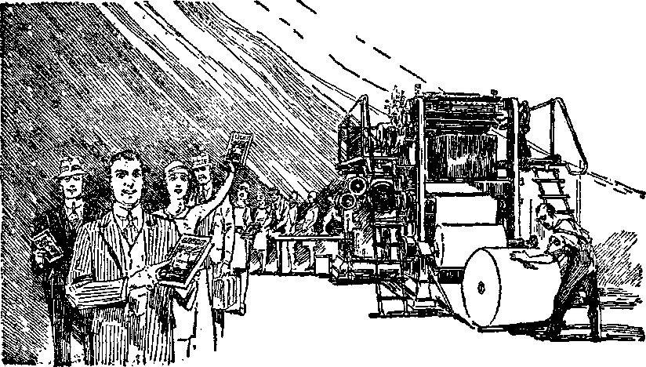FLOOD OF TRUTH Page 283
[BLANK] commandment from the Lord, and “blessed are they that do his commandments” now. The Lord has opened the door of opportunity to give the witness to the glory of Jehovah’s name, and no power can shut it.—Rev. 3: 7.
There is a great multitude of thirsty souls that are held in the prison houses of the ecclesiastical systems, and their cries have reached the hearing of the Lord. (Ps. 107:10; 102:19-22) The remnant, which is of the bride class, is commissioned to bring to these prisoners the message of truth. (Isa. 42:7) The Lord has provided the radio as a means of reaching with the truth those who would not otherwise hear, that they might be awakened to the importance of the hour. Then others call at the doors with the message in printed form, that the thirst of these prisoners might be slaked. It is now the privilege and duty of the remnant to carry the message of truth, particularly concerning Revelation, to the thirsty souls, that they may know that the Lord has said to them, “Let him that is athirst come.” Many of these are now receiving the truth. Their thirst is quenched and they are made glad. They in turn tell their neighbors to drink of the water of truth and to take their stand on the side of Jehovah.
There are millions of people of good will throughout the land who are in distress and who long to see a better day but who know not which way to turn for relief. To them the world is like a parched desert where there is neither food nor water. By means of the radio and the printed gospel message they learn that Jehovah is God, and that Christ is King, and that the kingdom and the day of deliverance are at hand. The remnant bring them the glad message, and
to them they say: “And whosoever will, let him take the water of life freely.” They are told that they may now take their stand on the side of the Lord, and against the Devil, and receive a blessing. Is it not such a class of people that may now seek meekness and righteousness, and be hid in the day of his expressed wrath, and be carried beyond the great battle of Armageddon and live forever and not die?—-Zeph. 2:3.
The remnant must now be witnesses to and leaders of the people. (Isa. 55:4) The remnant is now commanded to ‘prepare the way of the people, gather out the stones’, and point the people to the fact that soon the great highway to life will be opened. (Isa. 62:10) This must be done to the end that ‘whosoever will may take of the water of life freely’ by taking his stand on the side of the Lord and responding to the requirements of the kingdom.
The breaking down of Satan’s organization will remove the refuge of lies and open the eyes of men to the truth. Even the “great multitude” class must be led to the living fountains of waters. (Rev. 7:17) The Lord may use the remnant to thus help them. There will be many others who will be humbled by Armageddon, and they will be ready to hear. After Armageddon some of the remnant may be used by the Lord to bear witness and to aid those who need to be taught, and this they may do before actually being taken into the courts of everlasting glory. It is certain that the work of the remnant now is to proclaim the glad tidings as God’s duly appointed witnesses.
This prophecy has no reference to the millennial reign of Christ. It is the great message of truth that must now be proclaimed to the peoples of earth before the collapse of Satan’s organization. It is the sole and only hope of relief to the people. God’s commandment is that it shall be made known. Especially to the remnant is the command given. These cannot escape the responsibility by neglecting to obey the command. The physical facts show that during the past few years, particularly since 1922, there has been given the greatest witness ever given to the name of Jehovah by his anointed people. There is every reason to believe that this witness work must be increased. The number who do the work may be small, but the Lord will give them the strength to perform. Lot everyone, therefore, who loves God delight now to sing forth his praises.
SOLEMN WARNING
When Jehovah causes his light to shine into the face of any creature, that light brings with it a responsibility to the creature who receives it. To deliberately act contrary to the light which the Lord gives is a great sin and is evidence that the sinner is unworthy of life. The prophecy of Revelation is now made known by the goodness of God. No man shall receive any credit therefor. It is Jehovah’s Word, and it is his time to reveal the meaning thereof. The duty of those who hear is to tell it to others. No one will be permitted to add anything to the prophecy of God’s Word. Jesus Christ himself gave the warning, to wit: “For I testify unto every man that heareth the words of the prophecy of this book, If any man shall add unto these things, God shall add unto him the plagues that are written in this book.’’—Vs. 18.
This warning could not apply to those who never heard and understood God’s Word, nor to those who have a distorted understanding of it. It applies clearly to those who have received enlightenment upon his Word since the Lord came to his temple. Jesus is speaking authoritatively from the temple of judgment. God has declared that his anointed ones shall be his witnesses in the world now. (Isa. 43:10, 12; 19:19, 20) Let no one today add to his prophecy by saying that a pile of stone in the land of Egypt constitutes God’s witness. God has made known that Satan’s organization and all who support it shall be destroyed in Armageddon. Let no one who has been enlightened concerning God’s purpose now say that Satan has no organization, and that the hypocritical clergy should not be exposed as a part of that wicked organization.
Jehovah has written his judgment that all who wilfully sin against light shall be completely destroyed in the second death. Let no one now say that God will save Judas or the Devil or any of the hypocritical agents who use the name of God and of Christ for their own selfish purposes. God has made known in Revelation the plagues that shall come upon the enemy. Jesus warns those who assume the responsibility of adding anything to the prophecy of this book that they shall likewise suffer. Furthermore Jesus says:
“And if any man shall take away from the words of the book of this prophecy, God shall take away his part out of the book of life, and out of the holy city, and from the things which are written in this book.” —Vs. 19.
To be sure, this penalty would fall upon anyone who is now of the remnant but who should in any manner become unfaithful. It would apply to anyone who is in line for a place in the holy city or kingdom of God. The commandments of God that stand out distinctly and that are of paramount importance at this time are these: ‘Ye are my witnesses that I am God; go and tell the people that Jehovah is God, Christ is King, and that all of the opposers to his kingdom shall shortly fall at Armageddon; this good news go and preach to the nations as a witness; declare his doings among the people and make mention that Jehovah’s name is now exalted. The forces are marching to Armageddon, therefore cry out and shout, thou inhabitant of Zion: for great is the Holy One of Israel in the midst of thee.’ (Isa. 12:5, 6; 43:10-12; Matt. 24:14) Let no one now attempt to take away from this prophecy by minimizing the importance of the witness work in the earth.
Jehovah “shall cause his glorious voice to be heard, and shall shew the lighting down of his arm”, and no power dare interfere with it. (Isa. 30:30) Those who will be received into his glorious and holy city must now be guided by Jehovah’s counsel. (Ps. 73:24) His counsel contained in the prophecy of God’s Book makes known that to the remnant has been committed the testimony of Jesus Christ, and the commandments of God are that the approved ones must give this testimony and sing the praises of Jehovah. (Rev. 12:17) Upon the doing of those commandments depends their right to life and a place in the holy city.
Jehovah now says to the remnant: “Behold, the former things are come to pass, and new things do I declare; before they spring forth I tell you of them. Sing unto the Lord a new song, and his praise from the end of the earth, ye that go down to the sea, and all that is therein; the isles, and the inhabitants thereof. ’ ’—Isa. 42: 9, 10.
The vision that John had came to an end, and he said: “He which testifieth these things saith, Surely I come quickly; Amen. Even so, come, Lord Jesus.” (Vs. 20) The faithful remnant, whom John represented, now see the purposes of Jehovah and know that a great climax is at hand. They know not the day nor the hour that Armageddon shall be fought, but they do know that it is only a short time ahead. They know that within a very brief time the name of Jehovah and his word shall be vindicated. With gladness they continue to shout forth the praises to his name and to the name of his glorious King. The kingdom is here and the remnant are drinking anew the fruit of the vine with the glorious Lord and King. To each other they are saying: “The grace of our Lord Jesus Christ be with you all. Amen.” Together they lift up the voice and sing the new song unto the glory of Jehovah,
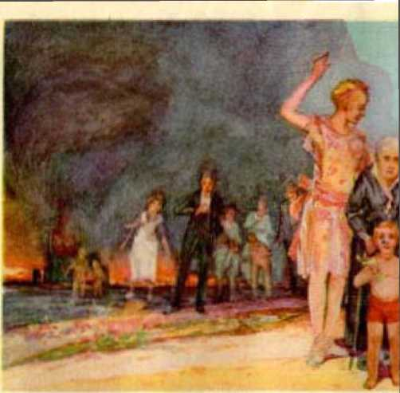I HUI MJ THE HIGHWAY
Ill Ar; t; t J]' s \ TA N ‘S (iROAli 12ATTWJ Pn-,.
CHAPTER XIV
(Daniel, Chapter 2)
JEHOVAH will triumph over his enemies so completely that never will a place be found for them again. The Bible contains an abundance of testimony concerning the enemies of Jehovah. That fact alone proves that it is the purpose of Jehovah to fully advise those who love him of the reason for the existence of these enemies, whence they came, why they have opposed him, why he has permitted them to continue so long, what provision he has made for their destruction, and when they will be destroyed. We know that the power of the Almighty God has no limitations and if he should will to do so he could snuff out all his enemies in an instant. The fact that he has not done so long ago shows that he has good reason for not doing it until a time certain. That it may be fully understood that he will destroy them completely in his own good time it is important to consider a few of the Bible texts upon this point: “But thou, Lord, art most high for evermore. For, lo, thine enemies, 0 Lord, for, lo, thine enemies shall perish: all the workers of iniquity shall be scattered.” (Ps. 92:8, 9) “Thine hand shall be lifted up upon thine adversaries, and all thine enemies shall be cut off.” (Mie. 5:9) “Thine hand shall find out all thine enemies: thy right hand shall find out those that hate thee.” (Ps. 21:8) “But the wicked shall perish, and the enemies of the Lord shall be as the fat of lambs: they shall consume; into smoke shall they consume away. But the transgres-289 sors shall be destroyed together: the end of the wicked shall be cut off. ’ ’—Ps. 37: 20, 38.
Jehovah’s purpose to destroy his enemies has been expressed from the very beginning of man’s sinful course. ‘The seed of the woman shall bruise the serpent’s head.’—Gen. 3:15.
That declaration was made more than six thousand years ago. The final bruising has not yet taken place. To Abraham Jehovah said: “Thy seed shall possess the gate of his enemies.” (Gen. 22:17) Here Abraham represented Jehovah himself, while the seed promised stands for or represents the instrument Jehovah will use to destroy his enemies. Jehovah caused Jacob to prophesy concerning Judah in these words: “Judah, . . . thy hand shall be in the neck of thine enemies.” (Gen. 49:8) “The Lion of the tribe of Juda” will be the One who thus performs the work here prophesied. God’s chosen people in Canaan were led by Joshua. When he had captured the enemy kings and held them in custody he caused his men to draw near and put their feet on the necks of these kings and then they killed them. “And Joshua said unto them, Fear not, nor be dismayed, be strong and of good courage: for thus shall the Lord do to all your enemies against whom ye fight.”—Josh. 10:25.
God’s prophet, concerning the enemies of Jehovah and the enemies of those who love him, wrote: “For strangers are risen up against me, and oppressors seek after my soul: they have not set God before them. Behold, God is mine helper: the Lord is with them that uphold my soul. He shall reward evil unto mine enemies: cut them off in thy truth.” (Ps. 54: 3-5) “Through God we shall do valiantly, for he it is that shall tread down our enemies.” (Ps. 60:12) The prayer of the righteous is: “Let God arise, let his enemies be scattered: let them also that hate him flee before him. As smoke is driven away, so drive them away: as wax melteth before the fire, so let the wicked perish at the presence of God. But God shall wound the head of his enemies, and the hairy scalp of such an one as goeth on still in his trespasses.’’— Ps. 68:1, 2, 21.
Jehovah has made his beloved Son Christ Jesus his chief executive officer for ever. By him he will accomplish his purposes. He is the right hand instrument of Jehovah. Christ Jesus is the “seed’’ that shall bruise the head of the enemy. The preceding chapters herein, dealing with Revelation, prove that for many long centuries God has been carrying forward his purpose and that the time is near when he will destroy the enemies by and through his chosen instrument. Christ was not even permitted to begin this work of destruction until God’s due time, and when that time arrived he sent him forth upon a mission, and the work is now in progress. (Ps. 110:1, 2) The beginning of his reign, in 1914, marks the beginning of the great King’s work, and he must go forward from that time until it is completed: ‘ ‘ The Lord at thy right hand shall strike through kings in the day of his wrath. He shall judge among the [nations], he shall fill the places with the dead bodies: he shall wound the heads over many countries.’’ (Ps. 110:5, 6) The great work God gives into the hand of Christ, which includes the faithful members of his body. Concerning such it is written:
“Give the king thy judgments, 0 God, and thy righteousness unto the king’s son. He shall judge thy people with righteousness, and thy poor with judgment. He shall have dominion also from sea to sea, and from the river unto the ends of the earth. They that dwell in the wilderness shall bow before him; and his enemies shall lick the dust.” (Ps. 72:1, 2, 8, 9) “The Lord reigneth, let the earth rejoice; let the multitude of isles be glad thereof. A fire goeth before him, and burneth up his enemies round about.” (Ps. 97:1, 3) “Let there be none to extend mercy unto him; neither let there be any to favour his fatherless children. Let his posterity be cut off; and in the generation following Jet their name be blotted out.”—Ps. 109:12, 13.
These are only a few of the many Scripture texts proving God’s purpose to completely destroy the enemies and to do so by and through his beloved Son. We are now approaching that great battle of the day of God Almighty when the enemy organization shall go down. In view of what God has made known to his people in the book of Revelation, now due to be understood by those that love him, other prophecies bearing upon the same subject matter may be examined in this connection with profit. There is a close relationship between the prophecy of Daniel and that of Revelation. To understand one leads to a better understanding of the other.
‘TERRIBLE IMAGE’
In the second year of the reign of Nebuchadnezzar, king of Babylon, he had a dream that troubled him. He forgot the dream, and he being unable to remember it, his magicians and astrologers, of course, could not interpret it; and they used this fact as an excuse for their inability to interpret the dream. Daniel was then a captive in Babylon, where the Israelites had been taken. Together with some of his brethren he sought the face of the Lord in prayer and then asked permission to disclose to Nebuchadnezzar both his dream and the interpretation thereof. Daniel was then brought before Nebuchadnezzar the king, and told him his dream. Be it noted that Daniel laid no claim whatsoever to any personal ability or learning by which he could know the dream or give the interpretation thereof; but when he was brought to tell Nebuchadnezzar he informed the king that his information came from the God of heaven. Daniel said to the king: “But as for me, this secret is not revealed to me for any wisdom that I have more than any living, but for their sakes that shall make known the interpretation to the king, and that thou mightest know the thoughts of thy heart.”—Dan. 2:30.
Daniel was devoted to Jehovah and was much beloved by Jehovah and was used by the Most High to write down the prophecy, which would be fulfilled in God’s due time. Daniel represented that class of people who would be on earth and who would be fully devoted to God at the end of the world when ‘Michael shall stand up’. Daniel therefore specifically represented the faithful remnant, those who are anointed of the Lord God to do his work. The record of the dream and the interpretation given by Daniel the prophet follow:
“Thou, 0 king, sawest, and, behold, a great image. This great image, whose brightness was excellent, stood before thee, and the form thereof was terrible. This image’s head was of fine gold, his breast and his arms of silver, his belly and his thighs of brass, his legs of iron, his feet part of iron and part of clay. Thou sawest till that a stone was cut out without hands, which smote the image upon his feet that were of iron and elay, and brake them to pieces. Then was the iron, the clay, the brass, the silver, and the gold, broken to pieces together, and became like the chaff of the summer threshingfloors; and the wind carried them away, that no place was found for them: and the stone that smote the image became a great mountain, and filled the whole earth. This is the dream; and we will tell the interpretation thereof before the king. Thou, 0 king, art a king of kings: for the God of heaven hath given thee a kingdom, power, and strength, and glory. And wheresoever the children of men dwell, the beasts of the field, and the fowls of the heaven, hath he given into thine hand, and hath made thee ruler over them all. Thou art this head of gold. And after thee shall arise another kingdom inferior to thee, and another third kingdom of brass, which shall bear rule over all the earth. And the fourth kingdom shall be strong as iron: forasmuch as iron breaketh in pieces and subdueth all things: and as iron that breaketh all these, shall it break in pieces and bruise. And whereas thou sawest the feet and toes part of potters’ clay and part of iron, the kingdom shall be divided; but there shall be in it of the strength of the iron, forasmuch as thou sawest the iron mixed with miry clay. And as the toes of the feet were part of iron and part of clay, so the kingdom shall be partly strong, and partly broken. And whereas thou sawest iron mixed with miry clay, they shall mingle themselves with the seed of men; but they shall not cleave one to another, even as iron is not mixed with clay. And in the days of these kings shall the God of heaven set up a kingdom which shall never be destroyed: and the kingdom shall not be left to other people, but it shall break in pieces and consume all these kingdoms, and it shall stand for ever. Forasmuch as thou sawest that the stone was cut out of the mountain without hands, and that it brake in pieces the iron, the brass, the clay, the silver, and the gold; the great God hath made known to the king what shall come to pass hereafter: and the dream is certain, and the interpretation thereof sure.”—Dan. 2:31-45.
For many years those who have loved God have sought for an understanding of the prophecies, and particularly those written by Daniel and Ezekiel, and those in Revelation. God has never been displeased with this effort, as is indicated by the Scriptures; nor should it be expected that God will permit the true understanding of these prophecies to be had until his due time. The holy men of old who prophesied concerning God’s purpose of the salvation of the human race sought diligently to understand the meaning of what they wrote down. Even the angels desired to look into the meaning thereof and to have an understanding of it. God did not express his displeasure because of the efforts thus made to understand, but it was not his due time to make his secrets known. Nor would it be at all improper for anyone who is devoted to God to diligently seek to know the understanding of his Word at any or all times. This observation is here made to emphasize the fact that only in God’s due time can a prophecy be understood by men.
More than fifty years ago some good, honest Christian people who were called Adventists published an interpretation of the foregoing prophecy of Daniel which in substance states that the terrible image that Daniel saw represented the successive world powers, to wit, Babylon, Medo-Persia, Greece and Rome; that the golden head of the image represented Babylon; and the breast of silver represented or pictured the Medo-Persian empire; the copper (mistranslated “brass”) pictured the Grecian world power, and the legs of iron pictured the pagan Roman world power; and the feet composed of iron and clay pictured Papal Rome or what is otherwise called the “Holy Roman Empire”. The Watch Tower publications, having no better explanation, practically adopted the foregoing interpretation. There are some good reasons why the above interpretation of the prophecy is not correct, and these are, to wit:
(1) That the true meaning of the terrible image could not be understood by any of those whom Daniel represented until after the coming of the Lord to his temple. The foregoing interpretation having been made long before the coming of the Lord to his temple, it is hardly likely that it would be correct. That would not mean that any criticism is leveled against any of those who thus interpreted it. Without doubt God was pleased with them because they sought the truth. Daniel’s prophecy says: “This secret is not revealed to me for any wisdom that I have more than any living [creature], but for their sakes that shall make known the interpretation”; and furthermore that ‘the God of heaven revealeth secrets of what shall be in the latter days’. (Dan. 2:30, 28) These “latter days” must refer to the “day of the Lord”, which means the time beginning when God places his King upon his holy hill in Zion. (Ps. 2: 6) That event occurred in 1914, and surely, then, the understanding could not be had until after that time. It was after the Lord came to his temple in 1918 that his anointed people began to have a better understanding of the prophecies, because the temple in heaven was opened. (Rev. 11:19) Since Daniel says that the vision or prophecy is to make known what is to come to pass in the “latter days”, then it must be that God purposed that his people, whom Daniel represented, would be given an understanding of the image in the “latter days”, and not before.
(2) That the prophecy shows that the terrible image would be broken in pieces all at one and the same time, and it follows that unless the entire image is in existence at one and the same time this could not take place. The world powers of Babylon, Medo-Persia, Greece and pagan Rome, have ceased to exist and the image has not yet been broken in pieces. The “Holy Roman Empire” does not now exist as a world power, but only as a part of the ‘beast that came up out of the sea’.
(3) It could not be literally true that Nebuchadnezzar at the time he was king of Babylon was ruler over all “the beasts of the field, and the fowls of the heaven”, as the prophecy states. There is no proof that he had any more power or control over the wild boasts and the birds than any other imperfect man had.
(4) There is no evidence whatsoever that Medo-Persia as a world power possessed anything peculiar that could be symbolized by the precious metal silver, or that the Grecian empire was in any particular way marked so that it could be symbolized by the less valuable metal brass or copper.
(5) It is not true that Rome was the first world power to employ the iron military rule that “bruises” the peoples of the earth. Egypt existed long before the day of Rome, and Egypt was the first great military power. The world power of Assyria was before Babylon or Rome, and Assyria boasted that her armies had conquered all the nations and none had been able to stand before her military onslaughts. Only Jehovah by his angel could and did deliver the Israelites from the Assyrian iron or military hand. (Isa. 36:17-20) Greece conquered and ruled the world by military force, and it is said of her mighty warrior general that “he wept because there were no more worlds to conquer”. In much earlier days than that, even, the kings of Canaan had military equipment and nine hundred chariots made of iron. (Judg. 4:3) Other nations fought with military instruments of iron long before Rome existed. (1 Ki. 22:11) Other reasons appear why the terrible image does not refer to world powers, and these will be considered as we progress.
The image about which Nebuchadnezzar dreamed was a terrible one. What could it picture? In order to enable the student to follow the argument here set forth it is now here briefly stated that the terrible image represented Satan’s organization, both visible and invisible. Before submitting the proof in support of that conclusion consideration is first given to some Scriptural evidence concerning the greater organization.
JEHOVAH’S ORGANIZATION
Jehovah has a universal organization which is often mentioned in the Scriptures under the symbol of “mountain”. “So he brought them into his own holy bounds, the mountain-range which his right-hand acquired.” (Ps. 78: 54, RotZi.) “Great and highly to be praised in the city is our God, his holy mountain is
[BLANK]
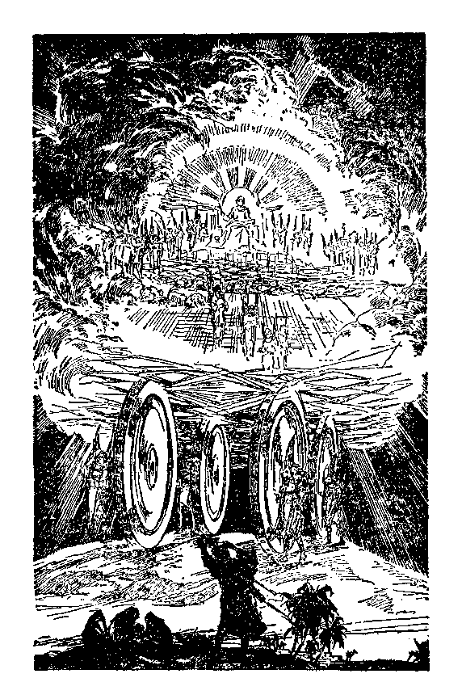SYMBOL OF JEHOVAH’S ORGANIZATION
Page 301
beautiful for elevation, the joy of all the earth. Mount Zion on the northern ridge is the city of a king.” ■—Ps. 48:1, 2, Roth. See also Isaiah 2:2; 11:9; 56:7; Joel 3:17; Zechariah 8:3; also Revelation 2:10 and comments thereon.
Ezekiel was caused to write down his vision of God’s organization. (Ezek. 1:3-28) In that vision he describes four living creatures having the likeness of a man, and every one had four faces and four wings. “Their wings were joined one to another; they turned not when they went; they went every one straight forward. As for the likeness of their faces, they four had the face of a man, and the face of a lion, on the right side; and they four had the face of an ox on the left side; they four also had the face of an eagle. Thus were their faces: and their wings were stretched upward; two wings of every one were joined one to another, and two covered their bodies. And they went every one straight forward: whither the spirit was to go, they went; and they turned not when they went. As for the likeness of the living creatures, their appearance was like burning coals of fire, and like the appearance of lamps: it went up and down among the living creatures; and the fire was bright, and out of the fire went forth lightning.”—Ezek. 1: 9-13.
There appeared in the vision also one wheel upon the earth by each of the living creatures which had four faces. “And their appearance and their work was as it were a wheel in the middle of a wheel.” Further describing what he saw, Ezekiel said: “When they went, they went upon their four sides; and they turned not when they went. And when the living creatures went, the wheels went by them; and when the living creatures were lifted up from the earth, the wheels were lifted up. Whithersoever the spirit was to go, they went, thither was their spirit to go; and the wheels were lifted up over against them: for the spirit of the living creature was in the wheels.” —Ezek. 1:17, 19, 20.
There appeared over the heads of the living crca-tures a great expanse like terrible crystal to look upon. Under the expanse were the wings of the living creatures each having four wings, two on each side of the body. When these creatures went the sound of the wings was like the sound of many waters. “And when they went, I heard the noise of their wings, like the noise of great waters, as the voice of the Almighty, the voice of speech, as the noise of an host: when they stood, they let down their wings. And there was a voice from the firmament that was over their heads, when they stood, and had let down their wings.”— Ezek. 1: 24, 25.
Above the expanse or firmament was the likeness of a great throne having the appearance of a sapphire stone, and upon the throne was one having the appearance of a man. There was the appearance of fire round about and within it, and the color was of amber. After describing the appearance of the one on the throne, then the prophecy adds: “As the appearance of the bow that is in the cloud in the day of Tain, so was the appearance of the brightness round about. This was the appearance of the likeness of the glory of the Lord.” (Ezek. 1:28) Thus it is seen that the prophetic description is that fitly representing a mighty war chariot, therefore picturing a chariot-like organization extending high above the earth into heaven, and this mighty organization is presided over by Jehovah the Most High.
The chief executive officer in that great organization is the beloved Son of God, whom he has made Ruler over the world. With him is his perfect organization “the holy city’’, which forms a part of the universal organization. In that organization are cherubim, seraphim and a host of angels, and the members of the body of Christ, these all possessing authority and power as granted by Jehovah. (Isa. 6:2, 3; Rev. 4: 6; 1 Pet. 3: 22; Heb. 12: 22) Mention is here made of this mighty organization of Jehovah that the student may have in mind the mimic god who has attempted to make the organization in the likeness thereof.
LUCIFER’S ORGANIZATION
God created man in his own image and put him on the earth. He put man in the garden of Eden to dress and keep it. (Gen. 1:28; 2:15) God thereby made the perfect man a part of his great organization and commanded that man should remain always in harmony with his Creator and his fixed laws. The beginning of God’s creation was his beloved Son the Logos, and thereafter all things created were created by the Logos as the deputy of Jehovah God. (John 1: 1-3) That there are various divisions of God’s universal organization is certain, as appears from the words which follow:“Byhim were all things created, that are in heaven, and that are in earth, visible and invisible, whether they be thrones, or dominions, or principalities, or powers: all things were created by him, and for him: and he is before all things, and by him all things consist. And he is the head of the body, the church: who is the beginning, the firstborn from the dead; that in all things he might have the preeminence. For it pleased the Father that in him should all fulness dwell.”—Col. 1:16-19.
This establishes beyond a question of doubt that in God’s organization there are thrones, dominions, principalities, angels and servants. One of the titles given to the mighty chief deputy of Jehovah is the “bright and morning star”, which also means prinee. There was another “star” in God’s universal organization. It is recorded that when God laid the foundation of the earth as a home for man “the morning stars sang together, and all the sons of God shouted for joy”. (Job 38:7) That other star or prince was Lucifer, and the proof concerning that is quite certain and clear.
Lucifer was appointed to a high office in God’s organization. “Thou art the anointed cherub that eov-ereth; and I have set thee so; thou wast upon the holy mountain of God; thou hast walked up and down in the midst of the stones of fire.” (Ezek. 28:14) “Anointed” means that he was designated to fill a certain office. The word “covereth” used in this text applies to one who provides protection, defense or supervision as an overseer. Lucifer was in Eden, the garden of God, where Adam was put, and Lucifer being made an officer in Jehovah’s organization, it seems clear that man was under the special supervision of Lucifer and the perfect man was therefore a part of Lucifer’s organization and in the great organization of Jehovah. Since Ezekiel’s prophecy shows that God’s organization is like a wheel within a wheel, then it may well be said that Lucifer’s part of the organization was one of the wheels in the greater wheel. This, of course, applies when he was in harmony with Jehovah. Lucifer was made glorious and beautiful to look upon when he appeared in Eden. “Thou hast been in Eden the garden of God; every precious stone was thy covering, the sardius, topaz, and the diamond, the beryl, the onyx, and the jasper, the sapphire, the emerald, and the carbuncle, and gold: the workmanship of thy tabrets and of thy pipes was prepared in thee in the day that thou wast created.” (Ezek. 28:13) He was therefore a lightbearer and clothed with power and authority.
A tree is a symbol of a living creature, and when planted by the Lord Jehovah it is a tree of righteousness or creature of righteousness as long as remaining in harmony with Jehovah. (Isa. 61:3; Ps. 1:1-3; Prov. 11:28; Num. 24:6; Judg. 9:8; Ps. 104:16) It appears certain from the language used that God’s prophet referred to Lucifer when he wrote these words: “Thus was he fair in his greatness, in the length of his branches: for his root was by great waters. The cedars in the garden of God could not hide him: the fir trees were not like his boughs, and the chesnut trees were not like his branches: nor any tree in the garden of God was like unto him in his beauty. I have made him fair by the multitude of his branches: so that all the trees of Eden, that were in the garden of God, envied him.” (Ezek. 31:7-9) This shows that Lucifer had other spirit creatures in his organization, and over which he ranked as superior. As a superior officer in God’s organization certain specific duties devolved upon him, and man was under Lucifer’s direct supervision. Being above others of his organization he would properly be referred to as the head thereof.
God created the beasts of the field and the fowls of the air and brought them before Adam and caused him to give each one a name, and they were subject to Adam. (Gen. 1:28; 2:19, 20) Since Lucifer was overlord of Adam, it follows that all these beasts of the field and fowls of the air were under his superior supervision. The further description by the prophet concerning Lucifer’s organization is this: “Therefore his height was exalted above all the trees of the field, and his boughs were multiplied, and his branches became long because of the multitude of waters, when he shot forth. All the fowls of heaven made their nests in his boughs, and under his branches did all the beasts of the field bring forth their young, and under his shadow dwelt all great nations.’’ (Ezck. 31:5, 6) Compare this language at this point with Daniel 2:38.
METALS
The image described by Daniel in the prophecy mentions three precious metals, to wit, gold and silver, and copper, which is mistranslated “brass”. It mentions one base metal, iron. The meaning of these metals is significant, otherwise the Lord would not have them in his Word in connection with this image. Gold is first mentioned in the Bible as being in the land of Havilah, which land was watered by one of the heads of the rivers that flowed out of Eden. (Gen. 2:11, 12) The Most Holy, both of the tabernacle and of the temple, was overlaid with fine gold. The cherubs in the Most Holy were made of gold. (Ex. 25: 17-19; 1 Kings 6:22-28) The tabernacle and temple pictured God’s organization. Gold is symbolic of things divine. The saints of Zion are “comparable to fine gold”. (Lam. 4:2) Silver is a precious metal and was used in connection with the tabernacle and temple service. (Ex. 26:19) The platters, bowls and other utensils used in that service were made of silver. (Num. 7:13; 1 Chron. 28:17) Silver is next in order in value as compared with gold, but of course of less value than gold. It is mentioned as second in the terrible image.
Copper is another precious metal, but of less value than silver. Brass, as we know, is a combination of metals. The word “brass”, appearing in the Authorized Version, is a mistranslation, and should be “copper”. Copper was used in connection with the tabernacle and the temple. (Ex. 38:3) Gold, silver and copper are classed as “noble” metals and have their relative value as in the order named. The description of Lucifer when he was in Eden, as given by the prophet, shows that he was covered with gold and precious stones which God gave to him when he was created or when installed in office.
THE ENEMY
Lucifer was undoubtedly the most beautiful in appearance of all creatures in his immediate organization which God had provided for him. He had much; but he coveted more, and by reason thereof he became the great enemy of God. (Jer. 51:13) Being made perfect and beautiful and being given a commission of great authority he was duty-bound to be wholly loyal to God. “Iniquity” means lawlessness or that which is contrary to law, and the record shows that Lucifer became lawless, and from that time he was God’s enemy. “Thou wast perfect in thy ways from the day that thou wast created, till iniquity was found in thee.” (Ezek. 28:15) From that day until now he has been interfering with God’s organization, and Jesus is authority for the statement that he is The Enemy.—Matt. 13: 25-30, 41.
When Lucifer rebelled against God and started on his course of lawlessness or wickedness God changed his name, or gave him different names, and one of these names is Satan, which means opposer or adversary. This signifies that he is the enemy of God and that he resists everything that God does. (Zech. 3: 1, 2) It was Satan that tried to turn Job against God. He induced Judas to betray Christ Jesus. (Job 1: 6-12; Luke 22:3) He also got control of the clergy of Jesus’ time and dragged them into his great conspiracy to murder the Holy One.
Serpent is another name that Lucifer has had since his rebellion and which signifies that he is the arch deceiver. He has deceived almost all the human race. His deceptions have been so complete that only God’s 'elect servant’ class amongst men are able to resist him, and these do so only by the grace of God. (Matt. 24:24; Ps. 91:2-11) At the present time Satan has induced almost all people to believe that no such a thing as the Devil is existing but that all talk about the Devil is a myth. By reason of this deception he is able to use them more to his purposes. Even among the children of God fully consecrated to do his will, until recent years many thought that Satan the Devil had been bound and restrained for some time. Not until 1924 was it made clear from the Scriptural evidence that Satan is not bound, and it was after that date that Satan’s mighty organization was first recognized by God’s faithful people. Today there are many people on earth who have made a consecration to do God’s will who do not discern Satan’s organization even now. Satan is the great enemy. His organization is made up of God’s enemies, and the scriptures heretofore set forth show beyond any question of doubt that in God’s due time the enemy shall be destroyed.
UNDERSTANDING
When the Lord eame to his temple in 1918 greater light began to shine into the mind of each one of his devoted ones who have been brought into the temple. (Rev. 11:19) It was about 1925 that the faithful discerned the fact that the kingdom had begun and that Satan had been cast out of heaven and must now confine his operations to the earth. The two great signs or wonders in heaven appeared unto them and were then understood by God’s people for the first time.
It therefore seems to be impossible that even the anointed of the Lord eould have had a proper conception of the ‘terrible image’ of Daniel until after the coming of the Lord to his temple. Furthermore, the Scriptures positively state that greater light shines upon God’s people at the end of the world and that these things in the Bible were written aforetime for the special benefit, comfort and encouragement of those continuing faithful upon the earth at the end of the world. (1 Cor. 10:11 • Rom. 15: 4) In the light of the foregoing indisputable truths let the examination be made of the text of Daniel’s prophecy concerning the terrible image.
THE HEAD
In Daniel 2:31, 32 the statement is made that the image was of excellent brightness, great and terrible, and that the head was of fine gold, the breast and arms of silver, and the belly and thighs of copper (mistranslated “brass”). The image was great and terrible because it was in opposition to Jehovah and was the picture of complete wickedness. The image pictured Satan’s organization, of which the wicked one is the head. Nebuchadnezzar the king of Babylon had the dream, and it was appropriate to use him and his dream to make this picture to be recorded in the Bible and which discloses Satan’s organization and fully identifies it in God’s due time. Gold is the only appropriate metal that could represent the head of that organization at the time it was created.
Almighty God’s universal organization bears the name of God’s woman, “Zion.” Jehovah is the “husband” and father, and Zion is the ‘wife’ and mother that produces God’s seed. The way to Jehovah God is through his organization. Concerning Lucifer it is written: “For thou hast said in thine heart, I will ascend into heaven, I will exalt my throne above the stars of God: I will sit also upon the mount of the congregation, in the sides of the north: I will ascend above the heights of the clouds: I will be like the Most High. ’ ’—Isa. 14:13, 14.
That Satan carried out his covetous desire expressed in this prophecy is true beyond any question of doubt. Having an organization he determined to turn the entire thing against God, or in opposition to God, and to set up a throne in the mount (or organization) of the congregation (or assembly) of God’s creation in the sides of the north (in the position occupied by Jehovah), and therefore said, “I will be like the Most High.” God had given Lucifer an organization which he, as Satan, now proceeds to use and to make as nearly like Jehovah’s organization as possible and yet use it for his own selfish and wicked purposes in opposing Jehovah. Jehovah God permitted him to take his own wicked course and bides his own good time when, as he states, Lucifer ‘shall be brought down to hell, to the sides of the pit’.— Isa. 14:15.
Satan called his organization on earth Bab-il, meaning “the gate to god”, and doubtless his purpose was to have it understood that through his organization is the way to come to him to worship, even as the way to God is through His organization. Without a question of doubt Satan is the “god of this world”. (2 Cor. 4:3, 4) Bab-il, or Babylon, is the name of Satan’s woman symbolizing his organization. Jehovah named the wicked organization “Ba-bel”, which means confusion. (Gen. 11:9) There is a striking similarity in the two names, but they have different meanings. God has truly named the organization Babel, because it has confused all the peoples and nations of the earth. Particularly has this been done by and through the Devil religion.
The beginning of the earthly part of Satan’s organization was under Nimrod, and to the city organized by him was given the name Babylon, which is the name of Satan’s woman or his organization. Although the first to be organized, Babylon was the third in order as a world power. Egypt and Assyria preceded Babylon as world powers. Nebuchadnezzar, being the king of Babylon at the time of his dream, pictured Satan, the real head of the organization. (For a more detailed description of Satan’s organization, see the book Prophecy, chapter six.)
Addressing Nebuchadnezzar the king of Babylon, Daniel said: “Thou, 0 king, art a king of kings: for the God of heaven hath given thee a kingdom, power, and strength, and glory.” (Dan. 2:37) This scripture could not specifically apply to Nebuchadnezzar, except in a representative capacity. It is not true that the God of heaven had given Nebuchadnezzar the universal kingdom, because the Babylonish empire ■was Satan’s organization, organized and operated in opposition to God. God made Lucifer the golden head of the organization, given him before his deflection. Lucifer had now turned his organization to wickedness. Lucifer’s organization being of divine origin is properly symbolized by gold as the head of that organization. The fact that it was afterwards turned to wickedness would not at all change the original symbol. Nebuchadnezzar was holding the earthly position of king or ruler as the visible representative of Satan, the real head. Therefore the description of the head of the image fits Satan exactly as the “head of gold”. The fact that Nebuchadnezzar immediately thereafter set up a golden image, contrary to God’s law, and commanded God’s chosen people to worship that image, is proof conclusive that Nebuchadnezzar was Satan’s representative. (Dan. 3:1; Ex. 20:3, 4) Jehovah had withdrawn his favor from Israel because that people had yielded to the Devil, and now the Devil had become the universal ruler.
Nebuchadnezzar was the visible representative of Satan, and therefore in the representative capacity it was said of him: ‘Thou art a king of kings.’ The Israelites had been unfaithful to their covenant and had fallen away from God to Satan and now came under his organization. God declared this condition should continue until the coming of him ‘whose right it is to rule’. Therefore the rule of Nebuchadnezzar
was not by divine right. (Ezek. 21:27) Nebuchadnezzar was not the representative of Jehovah. The statement by Paul, “Let every soul be subject unto the higher powers. For there is no power but of God: the powers that be are ordained of God,” has been misapplied time and again. It has no reference whatsoever to any part of Satan’s organization, and could not have. Paul’s statement must apply and does apply exclusively to God’s organization. The Gentile powers of this earth were never “ordained of God’’. Satan has been their god in defiance of Jehovah; and this is fully supported by the words of Jesus and the apostles.—2 Cor. 4:3, 4; John 12:31; 14: 30.
The beasts of the field and the fowls of the air were subject to the perfect man Adam. Since he was driven out from Eden the beasts of the field have been wild and vicious and manifest the spirit of the Devil. Manifestly it is Satan the Devil who turned them against man; and this explains why wild beasts and reptiles seek the destruction of man. Satan’s first representative on earth was the man Nimrod, and he made him a “mighty hunter” of wild beasts and advanced him in the eyes of the people as above Jehovah. Satan would induce man to believe that God had made even the animals vicious against them, and thus cause the people to curse and reproach God; and by his putting Nimrod forward as the great defender of the people against the wild beasts, Nimrod was said to be above or superior to or better than Jehovah. (Gen. 10: 9) Because the beasts of the field and the birds of the air were subject to Adam and he was under Lucifer, the description in Daniel 2: 38 and in Ezekiel 31:6 exactly fits Lucifer as the ruler of the world.
Lucifer was ‘a golden cup in the hand of Jehovah’ when first put in his office. This “cup” marked out the course Lucifer should take. He took an opposite course, and therefore the golden cup became an abominable thing. In harmony with this it is written: “Babylon hath been a golden cup in the Lord’s hand, that made all the earth drunken: the nations have drunken of her wine; therefore the nations are mad.” (Jer. 51:7) Lucifer’s organization as constituted by Jehovah was right, and is therefore pictured by gold (the head). It became wicked; hence his organization, now called Babylon, is employed to make all the nations of the earth drink of the wine of his cup and go mad, which they have done. (See Revelation 18: 3 and comments thereon.)
Continuing, Daniel says: “And after thee shall arise another kingdom inferior to thee, and another third kingdom of brass [copper], which shall bear rule over all the earth.” (Vs. 39) The word “after” does not have reference to time, but rather to inferiority, or station below Satan in his organization. The “kingdom” has reference to rulership. A prince in a kingdom is a ruler under a superior power. It is certain that Satan would constitute his organization as nearly as possible like that of Jehovah; that is to say, Satan would take and did take the superior or supreme position, and in his organization and under him would be princes or rulers.
Daniel’s prophecy tells of the invisible rulers of Satan under the titles of “prince of Persia” and “prince of Greeia”. (Dan. 10:13, 20) These princes were so powerful that Michael had to interfere in behalf of the angel that was sent to Daniel with a message. These invisible princes or rulers in Satan’s organization are shown as a part of the terrible image; and as silver and copper are inferior or next in order to gold, therefore the image shows that, instead of these representing world powers, they represent lower orders than Lucifer in the great organization. Until 1914 Satan was seated “in the sides of the north”, where he had fixed a throne, with his deputy rulers with him. (Rev. 12:3-7) These latter, named and symbolized by silver, doubtless did not come directly in contact with the nations of the earth, but that duty was assigned and is assigned to the company of wicked angels pictured by copper. Evidently these princes of Grecia and Persia were exercising power superior to angels, and therefore successfully resisting an angel that was on the way to Daniel with a message. Be it now noted that in the thirty-ninth verse, above quoted, it is stated that the third kingdom of brass “shall bear rule over all the earth”. This statement is limited to the third order, or copper class, and therefore proves that the immediate rule of the earth has been under the control of the evil angels directed by Satan the head, and in this rule he has been assisted by his invisible princes. Jesus referred to Satan as the “prince [or chief] of this world”, and hence chief of devils. (John 14:30; Matt. 9:34; 12:24) In his time men were possessed of demons, or devils, which he cast out. (Matt. 9:32, 33; 12:22) The testimony of Jesus is conclusive that these devils were not Satan himself, but were a host of wicked angels operating about the earth. This conclusion upon Daniel's prophecy is supported by the words of Jesus and by the further inspired words, to wit: “For we wrestle not against flesh and blood, but against principalities, against powers, against the rulers of the darkness of this world, against spiritual wickedness in high places.” (Eph. 6:12) Here the apostle shows that Satan’s invisible organization is made up of principalities (superior power), powers (officers of power in the organization) and rulers (wicked angels). The three “noble” metals of Daniel therefore describe the three invisible parts of Satan’s organization.
As God’s organization is sometimes pictured by a man, so here Satan’s organization is pictured by a man in the form of this image. The legs support and bear up the man. The legs are beneath the head of the man and carry the man about. The legs of the image therefore represent the inferior and visible parts of Satan’s organization under the head, but which support the head and act in obedience to the head. The terrible image described shows that the legs were of iron “and as iron that breaketh all these, shall it break in pieces and bruise”. This part of the image pictures the world powers, every one of them, beginning with Egypt to the present day, all of which are of Satan’s organization. From the time of Egypt until now these world powers have oppressed and bruised and broken in pieces the people. There is no exception whatsoever to this rule. The history of the nations of earth is written in human blood unrighteously shed, because the ruling factors have oppressed, bruised and broken to pieces the people by employing military power. To apply this picture of the legs to the Roman empire alone would be entirely foreign to the facts. It is by the facts well known to be true that at the proper time the prophecy must be understood.
The feet and toes of the image are shown to be part of iron and part of clay. The feet and toes are essentially a part of the legs and support this image which is Satan’s organization. Clay has the appearance of stone. It is a camouflage. It is a means of practicing hypocrisy. The visible part of Satan’s organization has at all times had three component parts, to wit, commercial, political, and religious. The commercial and political have formed and operated the military, which has bruised and broken the people; while the religious element has furnished the hypocritical screen to hide the real, wicked purpose of the ruling powers. It has been the camouflage and the prime instrument of hypocrisy. In every world power and every nation religion has been employed to induce the people to believe that the world powers are exercised by divine right. Coming down to modern times we see that “organized Christianity”, so called, is the religious element of the ruling powers of earth. Therein is found the greatest exhibition of hypocrisy that has ever been made. It claims that the nations exist and operate by divine right and that the League (or combination) of Nations represents God and his kingdom on the earth and is an exact expression thereof.
Then the record reads: “And whereas thou sawest the feet and toes, part of potters’ clay and part of iron, the kingdom shall be divided.” (Vs. 41) This is further supported by the fact that the religious element is a part of the ruling factors, and Revelation shows that before the final end the religious elements, the very embodiment of hypocrisy, will be exposed and will disclose the wicked alliance that has ruled and oppressed the people.—Rev. 17:16, 17.
“And whereas thou sawest iron mixed with miry clay, they shall mingle themselves with the seed of men; but they shall not cleave one to another, even as iron is not miked with clay.” (Vs. 43) The chief objective of the enemy Satan is to turn the people away from Jehovah and keep them under the wicked one’s control. He uses the commercial and political elements that operate and control the military to coerce the people, and uses the religious element to hoodwink and deceive them. The three elements mingle themselves with the seed of men, and with high-sounding words claim to be the saviors of men, and insist that the people must support their organization if they would live. There are ten toes to the feet, and these symbolically represent all the nations of Christendom in the conspiracy under their father and head, Satan, to keep the people in subjection and under control.
The pious religious frauds are made prominent in the feet and toes by the miry clay that attempts to cover up the wickedness of their unholy allies. There is no real cleavage between iron and clay, and this shows that there is really nothing that sincerely binds the commercial and political elements to their religious frauds. They are carried like barnacles to support a devilish scheme. “They shall not cleave one to another,” because God has decreed it so. Already the peoples of Russia are beginning to break away, and the people of good will throughout all the nations now are seeing that the religious leaders are the greatest hypocrites that have ever walked the earth.
Subsequently Daniel had a dream and a vision in which the visible part of Satan’s organization is pictured under the symbol of wild beasts, whereas the terrible image of Nebuchadnezzar shows a picture of the entire Satanic organization, both invisible and visible. It should hardly be expected that the Lord would disclose the real meaning of this image until the time of its destruction should arrive. God did not interrupt the rule and operations of this devilish organization until he set his King upon his throne.
He anointed Lucifer to rule, as the Scriptures show, and there is no evidence in the Bible that God ever took that anointing away from Lucifer prior to 1914, if then. His time for ruling by sufferance of Jehovah has come to an end. He has been cast out of heaven. The decree is written against him, and soon that decree shall be enforced by the complete destruction of his organization, both visible and invisible. The instrument to be used for this great work Jehovah now discloses in this same prophecy,
THE STONE
Jehovah uses “The Stone” to destroy the terrible image, which is Satan’s organization. That at onco identifies “The Stone” as God’s Executive and Priest acting as the head of his organization. The Logos was the beginning of God’s creation, and has since been the active agent in the creation of all things that were created. When Lucifer turned his organization to wickedness God expressed his purpose to bring forth a new thing which would be the “seed” or offspring of his “woman”, or great universal organization. Satan had a seed, and since then others have become his offspring. (John 8:42-44) It is the “seed” of God’s woman, Zion, that will destroy Satan and his “seed” of his woman, Babylon. Therefore it is written: “Forasmuch as thou sawest that the stone was cut out of the mountain without hands, and that it brake in pieces the iron, the brass, the clay, the silver, and the gold; the great God hath made known to the king what shall come to pass hereafter: and the dream is certain, and the interpretation thereof sure.” (Vs. 45) If Satan understood the prophecy, then the utterance of it was serving notice upon him how God would accomplish the destruction of his wicked organization. No wonder he made every possible effort to destroy Jesus.
What is meant by the statement, “The stone was cut out of the mountain without hands”? “The mountain” (as hereinbefore shown) is God’s universal organization. To “cut out” means to bring forth or produce something new. That would mean to bring out from his universal organization that which is pictured by “The Stone”, and in doing so no hands are employed. It is all done by the will of God. Jehovah having purposed it, it must be done and the accomplishment of his purpose is absolutely certain. Satan not only reproached Jehovah, but defied him. He insisted that any and all creatures would forsake Jehovah under certain conditions and that therefore Jehovah could not put a man on the earth who would maintain his integrity and remain true and faithful to God. Satan claimed to be able to cause all men to curse God. The Bible account of Job is proof of this. (See the book of Job, and explanation in the book Life.)
God accepted the challenge of Satan and purposed to completely vindicate his word and name before all creation, and he proceeded in his own good way to prepare to do so. He chose the people of Israel and organized them into a nation to foreshadow his purposes and the manner of accomplishment of the same. With a few exceptions the people of that nation fell away to Satan and came under his wicked control.
When God removed his protecting hand and permitted the Israelites to fall under the control of Satan, the Devil there became the god of the entire world. At the same time God announced that in his own due time he would send the One whose right it is to rule and he would rule in righteousness.
Then Jehovah sent his beloved Son Jesus to the earth. Jesus left everything in heaven that he possessed, including all his power and glory. He took upon himself a bondman’s form, that is to say, of a man in bondage. As a perfect man he denied himself everything that he could rightfully have had. He was subjected to the most severe test that could possibly be put upon him by Satan the enemy. Jesus had no rulcrship, surely, at the time that Satan offered to give the kingdoms of the world to him upon condition that he would worship Satan. Jesus refused every offer and resisted every temptation of Satan and maintained his integrity under the most severe of all tests. Because of his faithfulness even unto the most ignominious death God raised him up and made him to be above all, that in all things he should have the preeminence.—Col. 1:18, 19.
God has now expressed his purpose to ‘take away from him [Satan] that which he hath and give unto him [Christ] who had had nothing’. Jesus announced this as the rule applying to all to whom is committed responsibility and who fail or refuse to perform the duties imposed upon them. (Matt. 25:29) Jesus went into death with nothing, not even a place to lay his head. Because of his faithfulness God raised him up out of death and then announced that all the angels of heaven should worship him and that every knee to him shall bow and every tongue shall confess that he is Jehovah’s anointed One and the high officer of the Most High.—Phil. 2:11.
“The Stone,” therefore, is God’s anointed King. He is the world’s rightful Euler. (Ezek. 21:27) He appears under other symbols, such as ‘the man child, who is to rule all nations’. (Rev. 12:5) The Stone is cut out of “the mountain”, God’s universal organization, in this, that it is ‘the man child, born by Zion’. (Isa. 66: 7) He is the one to whom the prophet refers when he says: “Thou shalt break them with a rod of iron; thou shalt dash them in pieces like a potter’s vessel.” (Ps. 2:9) Jehovah God carried out his expressed purpose and has prepared for his beloved Son a city, or organization, of which Christ Jesus is made the Head, and which new organization is the capital city, or chief part, of the universal organization of Jehovah. It is symbolized by the name “the holy Jerusalem”.
It is God’s new creation. It is the very pinnacle of his creation. God made Lucifer the golden head of an organization, which organization Lucifer turned against Jehovah and made every part thereof to be the enemy of God. Jehovah would now have it known that he has made his beloved Son the Head of the new organization and clothed him with divine authority for ever, and this he symbolizes by the crown of pure gold. This new organization shall destroy the enemies of God and be forever to his glory, therefore it is written: “For thou preventest him with the blessings of goodness: thou settest a crown of pure gold on his head. Uis glory is great in thy salvation: honour and majesty hast thou laid upon him. For thou hast made him most blessed for ever: thou hast made him exceeding glad with thy countenance. For the king trusteth in the Lord, and, through the mercy of the Most High, he shall not be moved. Thine hand shall find out all thine enemies: thy right hand shall find out those that hate thee. Thou shalt make them as a fiery oven in the time of thine anger: the Lord shall swallow them up in his wrath, and the fire shall devour them. ’ ’—Ps. 21: 3, 5-9.
As a further vindication of his word and name Jehovah God has laid before men of the earth the opportunity of proving their faithfulness and devotion to him, and grants to the faithful overcomers the great honor and reward of being a part of “the holy city”. To this end he justified and brought forth sons and then offered them a place in his kingdom. Those who responded to the call and have walked in the way of righteousness he has chosen and anointed. These have maintained their integrity with Jehovah and must continue to be stedfast in every way, and, so doing, will prove their complete loyalty and faithfulness unto God. These have been taken into the covenant for the kingdom. (Luke 22: 28, 29) They are described as “living stones” built up according to the pattern of the perfect One, The Stone, the elect and precious One. If faithful unto death these sons of God will be born as children of God’s woman Zion and be made a part of the kingdom or “holy nation”. (1 Pet. 2: 3-10; Isa. 66: 8) These shall be made a part of “the holy city”, the holy Jerusalem or organization prepared especially for the beloved One, Christ Jesus. Of these stones there will be 144,000; and they have been in course of development and preparation during the past nineteen hundred years, and the number is about complete.
By his prophet Jehovah said: “Therefore thus saith the Lord God, Behold, I lay in Zion for a foundation a stone, a tried stone, a precious corner stone, a sure foundation: he that believeth shall not make haste. Judgment also will I lay to the line, and righteousness to the plummet; and the hail shall sweep away the refuge of lies, and the waters shall overflow the hiding place. ’ ’—Isa. 28:16, 17.
At the time of being laid The Stone must be “a tried stone”. For three and a half years Jesus carried on his work in the earth and resisted every effort put forth by Satan to overcome him, and at the conclusion thereof Jesus rode into the typical city Jerusalem and offered himself as King. That was the laying of The Stone in miniature. (Matt. 21:1-11) The clergy in control of the religion of that people rejected Jesus as King and sought his death. They openly took the side of Satan the Devil. To them Christ Jesus was there “a stone of stumbling” and “a rock of offence”. He denounced them as the very hotbed of hypocrisy, and said to them: ‘ ‘ The kingdom of God shall be taken from you, and given to a nation bringing forth the fruits thereof.” He quoted to them the prophecy concerning The Stone, that they might have full notice that they were rejecting God’s Word. —Ps. 118:22; Matt. 21:42-44.
In 1914 Jesus, at Jehovah’s direction, took his power and began his reign as King. After ousting Satan from heaven Jesus then, in 1918, came to his temple for judgment. He had then been “tried” twice, once when on earth, and the second time in his great fight against Satan, when he ousted him from heaven. (Rev. 12:1-7) In coming to his temple he offered himself as King and rightful Ruler of the earth to all who claim his name. That was the laying of the chief corner Stone in Zion and in completion. The religionists of the present time, particularly the clergy of Christendom and the counterpart of the Pharisees, rejected Christ Jesus as King. They joined with others of Satan’s organization to set up the League of Nations and fully allied themselves openly with Satan’s organization. In this the kings of earth are joined in a confederacy and shall fall. (Isa. 8: 9-12) Christ is the great Judge in the temple. Now begins his judgment. Jehovah God through him puts forth a great witness to the truth which is likened unto hail which now uncovers the refuge of lies and hypocrisy that have long been practiced by the chief ones of Satan’s earthly organization. Thus is The Stone definitely and completely identified.
Daniel then announces God’s decree or judgment upon ‘the terrible image’. At the time of the enforcement of the judgment this terrible image must be completely in existence and must be completely destroyed. All the kingdoms of the earth, and particularly “Christendom”, are pictured in the feet and toes of the image. The Stone strikes the image, first on the feet, and then breaks and grinds to pieces Satan’s entire organization, and a great whirlwind carries it completely away. (It is therefore seen that the prophecy of Daniel and that of Revelation tell of the same thing and with the same result.) Satan’s entire organization must be and will be destroyed at Armageddon. Satan’s organization, represented by the terrible image, is “broken to pieces” and ‘no place is found for it’. (Dan. 2: 35) Thus Babylon, or Satan’s organization, of which Nebuchadnezzar was a symbol and the visible ruler at the time of the dream, is shown to completely fall and never shall be again. Egypt and Assyria, which were world powers under Satan, shall be restored, in this, that the peoples thereof will have an opportunity for life; but Babylon will never be restored.
Some commentators have said that after The Stone breaks the image it then grows into a great mountain that fills the earth. This is not the correct thought. The Stone is complete before the striking is done. After the destruction of Satan’s organization the beneficial operations of the kingdom of the Lord will extend to every part of the earth and fill it with life and joy and happiness.
Lucifer was appointed by Jehovah to the high office of overseer of the earth and of all the things therein, including the beasts of the field and the fowls of the air. He was unfaithful to God and turned the earthly creation into God’s enemies. Christ now becomes earth’s rightful Ruler by the appointment of Jehovah. His rule will bring blessings to all obedient ones, and righteousness shall be established everywhere. Peace will be with man and beast forever because the great Ruler is the Prince of peace.—Isa. 9:6, 7.
The beasts of the field and the fowls of the heavens will be given into the hand of the righteous Ruler, and thus all that Lucifer once had while he was perfect will be transferred to the One who rules by right and who is faithful to God. “In that day will I make a covenant for them with the beasts of the field, and with the fowls of heaven, and with the creeping things of the ground.” (Hos. 2:18) “And I will make with them a covenant of peace, and will cause the evil beasts to cease out of the land; and they shall dwell safely in the wilderness, and sleep in the woods. And I will make them and the places round about my hill a blessing; and I will cause the shower to come down in his season; there shall be showers of blessing.” (Ezek. 34:25, 26) This further supports the conclusion that the terrible image represents Satan’s entire organization, visible and invisible, and that everything that continues to exist shall be put under the control of Christ.
The great climax is at hand. The kings of earth now set themselves against God and against his anointed Stone. Arrogantly and in defiance of God the wicked rulers of the earth go on in their wrongful way. Jehovah now holds them in derision. His judgment against every part of Satan’s organization, including the kings and nobles of earth, has been written, and that judgment is death, in which they shall all be bound by the chains and "fetters of iron”. AU the saints shall have a part in this honor, to the glory of God. (Ps. 149:5-9) The complete triumph of Jehovah over his enemies comes suddenly. The nations at this day are boasting of their ability to bring lasting peace to the earth, while at the same time they prepare more deadly instruments to engage in war. They continuing to cry, Peace, peace, when there is no peace, suddenly destruction shall come upon all. (1 Thess. 5:3) This is in full accord with Nebuchadnezzar’s drcam.
As the kings thus continue to arrogantly rule and boast this prophecy of Daniel will be fulfilled, to wit: "And in the days of these kings shall the God of heaven set up a kingdom which shall never be destroyed: and the kingdom shall not be left to other people, but it shall break in pieces and consume all these kingdoms, and it shall stand for ever.” (Vs. 44) Thus in prophetic phrase Daniel describes the kingdom of God under Christ, the holy city. No selfish creature shall have any part therein nor any control over it. It is God’s creation and he makes it the capital or chief city of his universal organization. It shall stand forever, and everything therein shall give praise and honor to the great Creator.
God has expressed his purpose, and discloses the meaning thereof in advance to those who love him. There is nothing that can prevent the complete accomplishment thereof. The Lord Jehovah says: “I have purposed it, I will also do it.” (Isa. 46:11) Having accomplished his announced purpose, thus he will have vindicated his word. He proves that he is equal and exact in justice, perfect in wisdom, unlimited in power, and entirely unselfish, and that only those in harmony with him shall have life everlasting. All will learn that he is the only true God, the Almighty God, Jehovah, the Most High. The paramount doctrine of his Word is his kingdom, through which his name is vindicated. His name, completely vindicated, stands preeminently above all.
JEHOVAH IS LIGHT!
The End